NIST Special Publication · PDF 原文抽出
Guide to Secure Web Services
NIST SP 800-95（Guide to Secure Web Services）の英文と日本語訳を段落ごとに並べた閲覧用ページです。Webサービスの認証、認可、機密性、完全性を確保する仕組みと、Webサービスおよびポータルアプリケーションを攻撃に強くする方法を説明します。 翻訳は有志による非公式のもので、NIST および米国商務省が作成・承認・推奨したものではありません。要件の確認にはNIST の正式版 PDFを参照してください。
PDF から抽出した原文は原本との照合待ちです。
PDF p.17: 二段組の可能性があるため読み順を原本と照合してください
PDF p.18: 二段組の可能性があるため読み順を原本と照合してください
PDF p.20: 二段組の可能性があるため読み順を原本と照合してください
PDF p.21: 二段組の可能性があるため読み順を原本と照合してください
PDF p.27: 二段組の可能性があるため読み順を原本と照合してください
PDF p.52: 二段組の可能性があるため読み順を原本と照合してください
［NIST のロゴ。公的な標章のため、この非公式サイトには掲載していない。原本 PDF を参照。］
Special Publication 800-95
特別刊行物 800-95
Guide to Secure Web Services
セキュアなWebサービスのガイド
Recommendations of the National Institute of Standards and Technology
米国国立標準技術研究所の勧告
Anoop Singhal Theodore Winograd Karen Scarfone
Anoop Singhal Theodore Winograd Karen Scarfone
Guide to Secure Web Services
セキュアなWebサービスのガイド
NIST Special Publication 800-95
NIST特別刊行物 800-95
Recommendations of the National Institute of Standards and Technology
米国国立標準技術研究所の勧告
Anoop Singhal Theodore Winograd Karen Scarfone
Anoop Singhal Theodore Winograd Karen Scarfone
C O M P U T E R S E C U R I T Y
コンピュータセキュリティ
Computer Security Division Information Technology Laboratory National Institute of Standards and Technology Gaithersburg, MD 20899-8930
コンピュータセキュリティ部門 情報技術研究所 米国国立標準技術研究所 Gaithersburg, MD 20899-8930
August 2007
2007年8月
U.S. Department of Commerce
米国商務省
Carlos M. Gutierrez, Secretary
Carlos M. Gutierrez, 長官
National Institute of Standards and Technology
米国国立標準技術研究所
William Jeffrey, Director
William Jeffrey, 所長
Reports on Computer Systems Technology
コンピュータシステム技術に関する報告書
The Information Technology Laboratory (ITL) at the National Institute of Standards and Technology (NIST) promotes the U.S. economy and public welfare by providing technical leadership for the nation’s measurement and standards infrastructure. ITL develops tests, test methods, reference data, proof of concept implementations, and technical analysis to advance the development and productive use of information technology. ITL’s responsibilities include the development of technical, physical, administrative, and management standards and guidelines for the cost-effective security and privacy of sensitive unclassified information in Federal computer systems. This Special Publication 800-series reports on ITL’s research, guidance, and outreach efforts in computer security and its collaborative activities with industry, government, and academic organizations.
米国国立標準技術研究所（NIST）の情報技術研究所（ITL）は、国の計測および標準インフラストラクチャに対する技術的リーダーシップを提供することにより、米国経済と公共の福祉を促進している。ITLは、情報技術の発展と生産的利用を前進させるため、試験、試験方法、参照データ、概念実証実装、および技術分析を開発する。ITLの責任には、連邦コンピュータシステムにおける機微な非機密情報を費用対効果の高い方法で保護し、プライバシーを確保するための技術的、物理的、管理的および運用管理上の標準ならびにガイドラインの策定が含まれる。この特別刊行物800シリーズは、コンピュータセキュリティに関するITLの研究、ガイダンス、普及活動、および産業界、政府、学術機関との協力活動を報告する。
National Institute of Standards and Technology Special Publication 800-95 Natl. Inst. Stand. Technol. Spec. Publ. 800-95, 128 pages (Aug. 2007)
NIST特別刊行物800-95 米国国立標準技術研究所 特別刊行物800-95、全128ページ（2007年8月）
Certain commercial entities, equipment, or materials may be identified in this document in order to describe an experimental procedure or concept adequately. Such identification is not intended to imply recommendation or endorsement by the National Institute of Standards and Technology, nor is it intended to imply that the entities, materials, or equipment are necessarily the best available for the purpose.
実験手順または概念を適切に説明するため、本書では特定の商業組織、機器または材料を識別する場合がある。このような識別は、米国国立標準技術研究所による推奨または承認を意味するものではなく、また、当該組織、材料または機器が必ずしも目的に対して入手可能な最良のものであることを意味するものでもない。
Acknowledgements
謝辞
The authors, Anoop Singhal and Karen Scarfone of the National Institute of Standards and Technology (NIST) and Theodore Winograd of Booz Allen Hamilton, wish to thank their colleagues who contributed technical content to this document, especially Holly Lynne McKinley, Patrick Holley, and Karen Mercedes Goertzel of Booz Allen Hamilton. The authors would like to acknowledge Tim Grance, David Ferraiolo, and Rick Kuhn of NIST, Jeremy Epstein of Web Methods and David Kleiner, Michael Colon, Steven Lavenhar, and Victoria Thompson of Booz Allen Hamilton, for their keen and insightful assistance throughout the development of the document.
著者である米国国立標準技術研究所（NIST）のAnoop SinghalおよびKaren Scarfone、ならびにBooz Allen HamiltonのTheodore Winogradは、本書に技術的内容を提供した同僚、とりわけBooz Allen HamiltonのHolly Lynne McKinley、Patrick Holley、Karen Mercedes Goertzelに謝意を表する。著者は、本書の作成を通じて鋭く洞察に富む支援を行ったNISTのTim Grance、David Ferraiolo、Rick Kuhn、Web MethodsのJeremy Epstein、ならびにBooz Allen HamiltonのDavid Kleiner、Michael Colon、Steven Lavenhar、Victoria Thompsonにも謝意を表したい。
Table of Contents
目次
Executive Summary..............................................................................................................ES-1
エグゼクティブサマリー..............................................................................................................ES-1
1. Introduction ......................................................................................................................1-1
1. はじめに ......................................................................................................................1-1
1.1 Authority...................................................................................................................1-1
1.1 権限...................................................................................................................1-1
1.2 Purpose and Scope .................................................................................................1-1
1.2 目的と適用範囲 .................................................................................................1-1
1.3 Audience..................................................................................................................1-1
1.3 対象読者..........................................................................................................1-1
1.4 Document Structure.................................................................................................1-2
1.4 文書の構成.................................................................................................1-2
2. Background to Web Services and Their Relationship to Security ..............................2-1
2. Webサービスの背景とセキュリティとの関係 ..............................2-1
2.1 Introducing Web Services ........................................................................................2-1
2.1 Webサービスの概要 ........................................................................................2-1
2.1.1 Web Service Discovery ................................................................................2-1
2.1.1 Webサービスのディスカバリ................................................................................2-1
2.1.2 Web Service Messaging...............................................................................2-2
2.1.2 Webサービスのメッセージング...............................................................................2-2
2.1.3 Web Portals..................................................................................................2-3
2.1.3 Webポータル..................................................................................................2-3
2.1.4 Web Service Roles, Modes, and Properties.................................................2-3
2.1.4 Webサービスの役割、モード、および特性.................................................2-3
2.1.5 Coordination: Orchestration and Choreography...........................................2-5
2.1.5 調整：オーケストレーションとコレオグラフィ...........................................2-5
2.2 Elements of Security................................................................................................2-7
2.2 セキュリティの要素................................................................................................2-7
2.3 Web Services Security Dimensions .........................................................................2-8
2.3 Webサービスのセキュリティ側面 .........................................................................2-8
2.3.1 Secure Messaging........................................................................................2-8
2.3.1 セキュアなメッセージング........................................................................................2-8
2.3.2 Protecting Resources ...................................................................................2-8
2.3.2 リソースの保護 ...................................................................................2-8
2.3.3 Negotiation of Contracts...............................................................................2-9
2.3.3 契約の交渉...............................................................................2-9
2.3.4 Trust Relationships.....................................................................................2-10
2.3.4 信頼関係.....................................................................................2-10
2.3.5 Requirements for Secure Software ............................................................2-11
2.3.5 セキュアなソフトウェアの要件 ............................................................2-11
2.4 Meeting the Requirements for Securing Web Services .........................................2-11
2.4 Webサービスのセキュリティ確保に関する要件への対応 .........................................2-11
2.4.1 Secure Web Service Standards Stack .......................................................2-11
2.4.1 セキュアなWebサービス標準スタック .......................................................2-11
2.4.2 Relationship of Web Service Security Requirements to Standards............2-13
2.4.2 Webサービスのセキュリティ要件と標準との関係............2-13
2.5 Core Services ........................................................................................................2-13
2.5 コアサービス ........................................................................................................2-13
2.6 Threats Facing Web Services................................................................................2-15
2.6 Webサービスが直面する脅威................................................................................2-15
2.7 Common Risks Facing Web Services....................................................................2-17
2.7 Webサービスが直面する一般的なリスク....................................................................2-17
2.8 Web Services’ Interfaces with Network/Infrastructure Security Architectures........2-19
2.8 Webサービスとネットワーク／インフラストラクチャのセキュリティアーキテクチャとのインターフェース........2-19
2.9 Summary................................................................................................................2-20
2.9 まとめ................................................................................................................2-20
3. Web Service Security Functions and Related Technologies.......................................3-1
3. Webサービスのセキュリティ機能と関連技術.......................................3-1
3.1 Service-to-Service Authentication............................................................................3-1
3.1 サービス間認証............................................................................3-1
3.1.1 Service Chaining ..........................................................................................3-1
3.1.1 サービスチェイニング ..........................................................................................3-1
3.1.2 WS-Security for Authentication.....................................................................3-2
3.1.2 認証のためのWS-Security.....................................................................3-2
3.1.3 Security Concerns of WS-Security ...............................................................3-3
3.1.3 WS-Securityに関するセキュリティ上の懸念 ...............................................................3-3
3.2 Identity Management ...............................................................................................3-4
3.2 アイデンティティ管理 ...............................................................................................3-4
3.2.1 Identity Management Architectures..............................................................3-6
3.2.1 アイデンティティ管理アーキテクチャ..............................................................3-6
3.2.2 Laws of Identity.............................................................................................3-6
3.2.2 アイデンティティの法則.............................................................................................3-6
3.2.3 Identity Management and Web Services......................................................3-7
3.2.3 アイデンティティ管理とWebサービス......................................................3-7
3.3 Establishing Trust between Services .......................................................................3-8
3.3 サービス間の信頼の確立 .......................................................................3-8
3.3.1 Federation of Trust .......................................................................................3-9
3.3.1 信頼のフェデレーション .......................................................................................3-9
3.3.2 Trust Federation Frameworks ......................................................................3-9
3.3.2 信頼フェデレーションのフレームワーク ......................................................................3-9
3.4 Describing Web Services Policies (WS-Policy)......................................................3-11
3.4 Webサービスのポリシー（WS-Policy）の記述......................................................3-11
3.5 Distributed Authorization and Access Management ..............................................3-14
3.5 分散認可とアクセス管理 ..............................................3-14
3.5.1 Authorization Models..................................................................................3-14
3.5.1 認可モデル..................................................................................3-14
3.5.2 Enforcing Least Privilege for Services........................................................3-17
3.5.2 サービスに対する最小権限の適用........................................................3-17
3.5.3 SAML..........................................................................................................3-18
3.5.3 SAML..........................................................................................................3-18
3.5.4 XACML .......................................................................................................3-25
3.5.4 XACML .......................................................................................................3-25
3.5.5 Role of XML Schema in Implementing Access Control ..............................3-28
3.5.5 アクセス制御の実装におけるXML Schemaの役割 ..............................3-28
3.5.6 Use of Specialized Security Metadata for Access Control .........................3-29
3.5.6 アクセス制御のための専用セキュリティメタデータの使用 .........................3-29
3.6 Confidentiality and Integrity of Service to Service Interchanges............................3-30
3.6 サービス間交換の機密性と完全性............................3-30
3.6.1 Transport Layer Confidentiality and Integrity: HTTPS ................................3-30
3.6.1 トランスポート層の機密性と完全性：HTTPS ................................3-30
3.6.2 XML Confidentiality and Integrity................................................................3-30
3.6.2 XMLの機密性と完全性................................................................3-30
3.6.3 WS-Security for SOAP Confidentiality and Integrity ...................................3-31
3.6.3 SOAPの機密性と完全性のためのWS-Security ...................................3-31
3.6.4 Role of XML Gateways in Integrity Protection............................................3-32
3.6.4 完全性保護におけるXMLゲートウェイの役割............................................3-32
3.7 Accountability End-to-End throughout a Service Chain .........................................3-33
3.7 サービスチェーン全体を通じたエンドツーエンドの説明責任 .........................................3-33
3.7.1 Audit in the SOA Environment....................................................................3-34
3.7.1 SOA環境における監査....................................................................3-34
3.7.2 Non-Repudiation of Web Service Transactions..........................................3-34
3.7.2 Webサービストランザクションの否認防止..........................................3-34
3.8 Availability of Web Services...................................................................................3-35
3.8 Webサービスの可用性...................................................................................3-35
3.8.1 Failover.......................................................................................................3-36
3.8.1 フェイルオーバー.......................................................................................................3-36
3.8.2 Quality of Service .......................................................................................3-36
3.8.2 サービス品質 .......................................................................................3-36
3.8.3 Reliable Messaging ....................................................................................3-37
3.8.3 高信頼メッセージング ....................................................................................3-37
3.8.4 Handling Service Deadlock ........................................................................3-37
3.8.4 サービスデッドロックへの対処 ........................................................................3-37
3.8.5 Service Recursion ......................................................................................3-38
3.8.5 サービスの再帰 ......................................................................................3-38
3.9 Securing the Discovery Service: Secure Interfaces to UDDI and WSDL...............3-38
3.9 ディスカバリサービスのセキュリティ確保：UDDIとWSDLへのセキュアなインタフェース...............3-38
3.9.1 UDDI Structure ...........................................................................................3-38
3.9.1 UDDIの構造 ...........................................................................................3-38
3.9.2 UDDI Operations ........................................................................................3-39
3.9.2 UDDIの操作 ........................................................................................3-39
3.9.3 Secure Access to the Registry ...................................................................3-40
3.9.3 レジストリへのセキュアなアクセス ...................................................................3-40
3.9.4 Service Inquiry API.....................................................................................3-40
3.9.4 サービス照会API.....................................................................................3-40
3.9.5 Service Publishing API ...............................................................................3-41
3.9.5 サービス公開API ...............................................................................3-41
3.9.6 UDDI and WSDL ........................................................................................3-42
3.9.6 UDDIとWSDL ........................................................................................3-42
3.10 Summary................................................................................................................3-42
3.10 まとめ................................................................................................................3-42
4. Human User’s Entry Point into the SOA: Web Portals .................................................4-1
4. SOAへの人間のユーザの入口：Webポータル .................................................4-1
4.1 Proxy Agents............................................................................................................4-1
4.1 プロキシエージェント............................................................................................................4-1
4.2 Using the Portal to Control User Authorization and Access to Web Services..........4-2
4.2 ポータルを用いたユーザの認可とWebサービスへのアクセスの制御..........4-2
4.3 Portal Interaction with the SOA’s Discovery Service ...............................................4-3
4.3 ポータルとSOAのディスカバリサービスとの相互作用 ...............................................4-3
4.4 Summary..................................................................................................................4-3
4.4 まとめ..................................................................................................................4-3
5. Secure Web Service-Enabling of Legacy Applications ................................................5-1
5. レガシーアプリケーションのセキュアなWebサービス化 ................................................5-1
5.1 Legacy Authentication to Web Services ..................................................................5-1
5.1 Webサービスに対するレガシー認証 ..................................................................5-1
5.2 Authorization and Access Control in Legacy Applications .......................................5-1
5.2 レガシーアプリケーションにおける認可とアクセス制御 .......................................5-1
5.3 Extending Non-Web Applications to Be Able to Participate in SOAs.......................5-2
5.3 非WebアプリケーションをSOAに参加できるように拡張する.......................5-2
5.4 Public Key Enabling Concerns Specific to Web Services and SOAs ......................5-2
5.4 Webサービス及びSOAに特有の公開鍵対応に関する懸念事項 ......................5-2
5.5 Accountability for Legacy Application Transactions.................................................5-3
5.5 レガシーアプリケーションのトランザクションに対する説明責任.................................................5-3
5.6 Database Security Challenges in SOA Environments .............................................5-3
5.6 SOA環境におけるデータベースセキュリティの課題 .............................................5-3
5.7 Maintaining Security of Legacy Systems Exposed via Web Services .....................5-3
5.7 Webサービスを介して公開されるレガシーシステムのセキュリティの維持 .....................5-3
5.8 Summary..................................................................................................................5-4
5.8 まとめ..................................................................................................................5-4
6. Secure Implementation Tools and Technologies .........................................................6-1
6. セキュアな実装のためのツールと技術 .........................................................6-1
6.1 Web Services Developer Toolkits ............................................................................6-1
6.1 Webサービス開発者向けツールキット ............................................................................6-1
6.2 XML Parsers ............................................................................................................6-1
6.2 XMLパーサ ............................................................................................................6-1
6.3 Languages for Secure Web Service Development ..................................................6-2
6.3 セキュアなWebサービス開発のための言語 ..................................................6-2
6.3.1 Procedural Languages .................................................................................6-2
6.3.1 手続き型言語 .................................................................................6-2
6.3.2 XML ..............................................................................................................6-4
6.3.2 XML ..............................................................................................................6-4
6.4 Security Testing: Tools and Techniques..................................................................6-5
6.4 セキュリティテスト：ツールと手法..................................................................6-5
6.5 Summary..................................................................................................................6-6
6.5 まとめ..................................................................................................................6-6
List of Appendices
付録一覧
Appendix A— Common Attacks Against Web Services .....................................................A-1
付録A— Webサービスに対する一般的な攻撃 .....................................................A-1
Appendix B— ebXML..............................................................................................................B-1
付録B— ebXML..............................................................................................................B-1
Appendix C— Glossary ..........................................................................................................C-1
付録C— 用語集 ..........................................................................................................C-1
Appendix D— Acronyms and Abbreviations .......................................................................D-1
付録D— 頭字語及び略語 .......................................................................D-1
Appendix E— Print Resources .............................................................................................. E-1
付録E— 印刷物の参考資料 .............................................................................................. E-1
Appendix F— Online Resources ........................................................................................... F-1
付録F— オンラインの参考資料 ........................................................................................... F-1
List of Figures
図一覧
Figure 2-1. Web Service Discovery Example ...........................................................................2-1
図2-1. Webサービスのディスカバリの例 ...........................................................................2-1
Figure 2-2. Web Service Messaging Example..........................................................................2-2
図2-2. Webサービスのメッセージングの例..........................................................................2-2
Figure 2-3. Example Portal Interface ........................................................................................2-3
図2-3. ポータルインタフェースの例 ........................................................................................2-3
Figure 2-4. Intermediary Services.............................................................................................2-5
図2-4. 仲介サービス.............................................................................................2-5
Figure 2-5. The Loan Service and Its Intermediaries................................................................2-5
図2-5. ローンサービスとその仲介サービス................................................................2-5
Figure 2-6. A Web Service Choreography ................................................................................2-6
図2-6. Webサービスのコレオグラフィ ................................................................................2-6
Figure 2-7. A Web Service Orchestration .................................................................................2-6
図2-7. Webサービスのオーケストレーション .................................................................................2-6
Figure 2-8. The Rate Service as an Orchestration ...................................................................2-7
図2-8. オーケストレーションとしてのレートサービス ...................................................................2-7
Figure 2-9. Web Services Security Standards: Notional Reference Model ............................2-12
図2-9. Webサービスのセキュリティ標準：概念的参照モデル ............................2-12
Figure 2-10. Core Services Used by the Loan Service...........................................................2-14
図2-10. ローンサービスが使用するコアサービス...........................................................2-14
Figure 3-1. Identity Management Overview ..............................................................................3-5
図3-1. アイデンティティ管理の概要 ..............................................................................3-5
Figure 3-2. Sample WS-Policy Expression .............................................................................3-11
図3-2. WS-Policy表現の例 .............................................................................3-11
Figure 3-3. Sample WS-ReliableMessaging Policy Expression..............................................3-12
図3-3. WS-ReliableMessagingポリシー表現の例..............................................3-12
Figure 3-4. Sample WS-Policy Expression Using ExactlyOne ...............................................3-13
図3-4. ExactlyOneを用いたWS-Policy表現の例 ...............................................3-13
Figure 3-5. ABAC Policy Function ..........................................................................................3-15
図3-5. ABACポリシー関数 ..........................................................................................3-15
Figure 3-6. Use of SAML and XACML in Implementing ABAC...............................................3-16
図3-6. ABACの実装におけるSAMLとXACMLの使用...............................................3-16
Figure 3-7. RAdAC Decision Tree ..........................................................................................3-17
図3-7. RAdAC決定木 ..........................................................................................3-17
Figure 3-8. SAML Assertion....................................................................................................3-20
図3-8. SAMLアサーション....................................................................................................3-20
Figure 3-9. SAML Protocol Request .......................................................................................3-21
図3-9. SAMLプロトコル要求 .......................................................................................3-21
Figure 3-10. SAML Response.................................................................................................3-22
図3-10. SAML応答.................................................................................................3-22
Figure 3-11. An XACML Policy ...............................................................................................3-26
図3-11. XACMLポリシー ...............................................................................................3-26
Figure 3-12. An XACML Request. ..........................................................................................3-27
図3-12. XACML要求。 ..........................................................................................3-27
Figure 3-13. An XACML Response.........................................................................................3-27 Figure 4-1. Web Services Trust Relationships..........................................................................4-2
図3-13. XACML応答.........................................................................................3-27 図4-1. Webサービスの信頼関係..........................................................................4-2
List of Tables
表一覧
Table 2-1. Specifications and Standards Addressing Security of SOAs.................................2-13 Table 2-2. Threats Addressed by Current Web Service Standards........................................2-17
表2-1. SOAのセキュリティを扱う仕様および標準.................................2-13 表2-2. 現行のWebサービス標準が扱う脅威........................................2-17
Executive Summary
エグゼクティブサマリー
The advance of Web services technologies promises to have far-reaching effects on the Internet and enterprise networks. Web services based on the eXtensible Markup Language (XML), SOAP, and related open standards, and deployed in Service Oriented Architectures (SOA) allow data and applications to interact without human intervention through dynamic and ad hoc connections. Web services technology can be implemented in a wide variety of architectures, can co-exist with other technologies and software design approaches, and can be adopted in an evolutionary manner without requiring major transformations to legacy applications and databases.
Webサービス技術の進歩は、インターネットおよび企業ネットワークに広範な影響を及ぼすと期待されている。拡張可能なマークアップ言語（XML）、SOAP、および関連するオープン標準に基づき、サービス指向アーキテクチャ（SOA）に展開されるWebサービスにより、動的かつアドホックな接続を通じて、人手を介さずにデータとアプリケーションが相互作用できる。Webサービス技術は、多様なアーキテクチャで実装でき、他の技術やソフトウェア設計手法と共存でき、レガシーアプリケーションやデータベースに大規模な変革を求めずに段階的に採用できる。
The security challenges presented by the Web services approach are formidable and unavoidable. Many of the features that make Web services attractive, including greater accessibility of data, dynamic application-to-application connections, and relative autonomy (lack of human intervention) are at odds with traditional security models and controls. The primary purpose of this publication is to inform people about securing Web services. Difficult issues and unsolved problems exist, such as protecting the following:
Webサービス方式がもたらすセキュリティ上の課題は重大であり、避けられない。データへのアクセス性向上、アプリケーション間の動的接続、相対的自律性（人の介在がないこと）など、Webサービスを魅力的にする機能の多くは、従来のセキュリティモデルや制御と相いれない。本書の主な目的は、Webサービスのセキュリティ確保について情報を提供することである。次のような保護を含め、解決が難しい問題や未解決の問題が存在する。
•Confidentiality and integrity of data that is transmitted via Web services protocols in service-to-service transactions, including data that traverses intermediary services
•サービス間トランザクションにおいてWebサービスプロトコルを介して伝送されるデータ（仲介サービスを経由するデータを含む）の機密性と完全性
Functional integrity of the Web services that requires the establishment of trust between services on a transaction-by-transaction basis
取引ごとにサービス間の信頼確立を必要とするWebサービスの機能上の完全性
Availability in the face of denial of service attacks that exploit vulnerabilities unique to Web service technologies, especially targeting core services, such as discovery service, on which other services rely.
サービス拒否攻撃に直面した場合の可用性。こうした攻撃は、Webサービス技術に固有の脆弱性を悪用し、特に他のサービスが依存するディスカバリサービスなどのコアサービスを標的にする。
Perimeter-based network security technologies (e.g., firewalls) are inadequate to protect SOAs for the following reasons:
境界ベースのネットワークセキュリティ技術（ファイアウォールなど）では、次の理由によりSOAを十分に保護できない。
SOAs are dynamic and can seldom be fully constrained to the physical boundaries of a single network.
SOAは動的であり、単一ネットワークの物理的境界内に完全に制限できることはほとんどない。
SOAP is transmitted over HyperText Transfer Protocol (HTTP), which is allowed to flow without restriction through most firewalls.
SOAPはハイパーテキスト転送プロトコル（HTTP）上で送信され、ほとんどのファイアウォールで制限なく通過することが許可されている。
Moreover, Transport Layer Security (TLS), which is used to authenticate and encrypt Web-based messages, is inadequate for protecting SOAP messages because it is designed to operate between two endpoints. TLS cannot accommodate Web services' inherent ability to forward messages to multiple other Web services simultaneously.
さらに、Webベースのメッセージの認証および暗号化に使用されるトランスポート層セキュリティ（TLS）は、2つのエンドポイント間で動作するよう設計されているため、SOAPメッセージの保護には不十分である。TLSは、複数の他のWebサービスにメッセージを同時に転送するというWebサービス固有の能力に対応できない。
The Web service processing model requires the ability to secure SOAP messages and XML documents as they are forwarded along potentially long and complex chains of consumer, provider, and intermediary services. The nature of Web services processing makes those services subject to unique attacks, as well as variations on familiar attacks targeting Web servers.
Webサービスの処理モデルでは、コンシューマー、プロバイダー、および仲介サービスから成る、長く複雑になり得るチェーンを通じて転送されるSOAPメッセージとXML文書を保護する必要がある。Webサービス処理の性質上、それらのサービスは固有の攻撃に加え、Webサーバーを標的とする既知の攻撃の変種にもさらされる。
Ensuring the security of Web services involves augmenting traditional security mechanisms with security frameworks based on use of authentication, authorization, confidentiality, and integrity mechanisms. This document describes how to implement those security mechanisms in Web services. It also discusses how to make Web services and portal applications robust against the attacks to which they are subject. The following is a summary of security techniques for Web services:
Webサービスのセキュリティ確保には、認証、認可、機密性、および完全性のメカニズムに基づくセキュリティフレームワークで従来のセキュリティメカニズムを補強することが必要である。本書は、Webサービスでこれらのセキュリティメカニズムを実装する方法を説明する。また、Webサービスおよびポータルアプリケーションを、それらが受ける攻撃に対して堅牢にする方法も論じる。以下に、Webサービス向けセキュリティ技法の概要を示す。
Confidentiality of Web service messages using XML Encryption1. This is a specification from the World Wide Web Consortium (W3C) and it provides a mechanism to encrypt XML documents.
XML Encryption1を使用したWebサービスメッセージの機密性。これはWorld Wide Web Consortium（W3C）の仕様であり、XML文書を暗号化する仕組みを提供する。
Integrity of Web service messages using XML Signature2. This is a specification produced jointly by the W3C and the Internet Engineering Task Force (IETF). The power of XML Signature is to selectively sign XML data.
XML Signature2を使用したWebサービスメッセージの完全性。これはW3CとInternet Engineering Task Force（IETF）が共同で策定した仕様である。XML Signatureの利点は、XMLデータに選択的に署名できることである。
Web service authentication and authorization using XML Signature, Security Assertion Markup Language (SAML) and eXtensible Access Control Markup Language (XACML) as proposed by the Organization for Advancement of Structured Information Standards (OASIS) group. SAML and XACML provide mechanisms for authentication and authorization in a Web services environment.
Organization for the Advancement of Structured Information Standards（OASIS）グループが提案するXML Signature、Security Assertion Markup Language（SAML）、およびeXtensible Access Control Markup Language（XACML）を使用したWebサービスの認証と認可。SAMLとXACMLは、Webサービス環境における認証および認可のメカニズムを提供する。
Web Services (WS)-Security3. This specification, produced by OASIS, defines a set of SOAP header extensions for end-to-end SOAP messaging security. It supports message integrity and confidentiality by allowing communicating partners to exchange signed encrypted messages in a Web services environment.
Web Services (WS)-Security3。このOASIS策定仕様は、エンドツーエンドのSOAPメッセージングセキュリティのためのSOAPヘッダー拡張のセットを定義する。Webサービス環境において、通信する当事者が署名済み暗号化メッセージを交換できるようにすることで、メッセージの完全性と機密性をサポートする。
Security for Universal Description, Discovery and Integration (UDDI)4. Produced by OASIS, UDDI allows Web services to be easily located and subsequently invoked. Security for UDDI enables publishers, inquirers and subscribers to authenticate themselves and authorize the information published in the directory.
Universal Description, Discovery and Integration（UDDI）4のセキュリティ。OASISが策定したUDDIにより、Webサービスを容易に見つけて呼び出すことができる。UDDIのセキュリティ機能により、公開者、照会者、加入者は、自らを認証し、ディレクトリに公開された情報へのアクセスを認可できる。
Challenges
課題
While many of the Web services challenges have been met with existing standards, there are a number of challenges that standards organizations are addressing—particularly in the area of Web services discovery and reliability. The Web Services Interoperability Organization (WS-I) acknowledges that there are many challenges that have yet to be addressed. Some examples of these challenges are:
Webサービスの課題の多くは既存標準で対処されているが、標準化団体が取り組んでいる課題も複数あり、特にWebサービスのディスカバリと信頼性の分野が該当する。Web Services Interoperability Organization（WS-I）は、未解決の課題が多く残っていることを認めている。これらの課題の例を以下に示す。
Repudiation of transactions
取引の否認
Secure issuance of credentials
クレデンシャルのセキュアな発行
Exploitation of covert channels
隠れチャネルの悪用
Compromised services
侵害されたサービス
Spread of malware, such as viruses and Trojan horses via SOAP messages
SOAPメッセージを介したウイルスやトロイの木馬などのマルウェアの拡散
Denial of service attacks
サービス拒否攻撃
Incorrect service implementations.
不適切なサービス実装。
The following sections discuss several Web services security challenges in detail, including Web services discovery, quality of service and quality of protection, and protection from denial of service attacks.
以下の各節では、Webサービスのディスカバリ、サービス品質および保護品質、サービス拒否攻撃からの保護など、Webサービスのセキュリティ上の課題をいくつか詳しく論じる。
Discovery
ディスカバリ
In Web services discovery, participants identify and compose Web Services Description Language (WSDL) specific services based on definitions in a UDDI registry. Due to the potentially large number of service candidates in the registry, performance rankings for algorithms used to search, match and compose services can vary from case to case.
Webサービスのディスカバリでは、参加者はUDDIレジストリ内の定義に基づき、Web Services Description Language（WSDL）に固有のサービスを識別し、組み合わせる。レジストリ内のサービス候補が非常に多くなる可能性があるため、サービスの検索、照合、組み合わせに使用するアルゴリズムの性能順位は、状況ごとに異なることがある。
As the set of available Web services expands, advanced tools to help identify services that match a customer’s functional and security requirements become increasingly important. It is important for service providers to describe their service capabilities and service requesters to describe their requirements in an unambiguous and semantic way. Techniques that take advantage of Semantic Web technologies can improve discovery capabilities. The Ontology Web Language for Services (OWL-S) is an example, but more work needs to be done to integrate such technologies into Web service registries. In OWL-S, the service requester can describe the service requirements using terms from a semantic model. Reasoning techniques are then used to find the semantic similarity between the service description and the request to find a set of matching services automatically. While both UDDI and OWL-S can be used to specify the security properties of a Web service, such support is not inherent in the discovery system. However, W3C's Semantic Annotations for WSDL is a step in the direction of merging Web services discovery technology with semantic Web technology. Even with semantic Web services discovery, true automation will require that the requester be able to determine explicitly the security requirements of the provider in addition to its functionality.
利用可能なWebサービスの集合が拡大するにつれ、顧客の機能要件とセキュリティ要件に合致するサービスを特定する高度なツールの重要性が高まる。サービスプロバイダーは自らのサービス機能を、サービス要求者は要件を、それぞれ曖昧さのない意味的な方法で記述することが重要である。セマンティックWeb技術を活用する技法によって、ディスカバリ機能を向上できる。Ontology Web Language for Services（OWL-S）はその一例だが、こうした技術をWebサービスレジストリに統合するには、さらに取り組みが必要である。OWL-Sでは、サービス要求者はセマンティックモデルの用語を使用してサービス要件を記述できる。その後、推論技法を用いてサービス記述と要求との意味的類似性を見つけ、一致するサービスの集合を自動的に特定する。UDDIとOWL-SはいずれもWebサービスのセキュリティ特性を指定するために使用できるが、そのようなサポートはディスカバリシステムに本来備わっているものではない。しかし、W3CのSemantic Annotations for WSDLは、Webサービスのディスカバリ技術とセマンティックWeb技術を統合する方向への一歩である。セマンティックWebサービスのディスカバリを用いても、真の自動化には、要求者がプロバイダーの機能に加えてセキュリティ要件も明示的に特定できることが必要となる。
End to End Quality of Service and Protection
エンドツーエンドのサービス品質および保護
Most Web services deployed do not provide guarantees for Quality of Service (QoS) or Quality of Protection (QoP) under the scenario of attacks. QoS is important in defining the expected level of performance a particular Web service will have. By prioritizing traffic, overall performance of the system can be improved. The WS-Reliability and WS-ReliableMessaging standards provide some level of QoS. Both standards support guaranteed message delivery and message ordering. The standard considers other QoS parameters, such as rate of failure or average latency, as out of scope because they are usually dealt with by lower layer protocols. For Web services to truly support QoS, existing QoS support must be extended so that the packets corresponding to individual Web service messages can be routed accordingly to achieve predictable performance.
現在展開されているWebサービスの大半は、攻撃のシナリオにおいてサービス品質（QoS）または保護品質（QoP）を保証していない。QoSは、特定のWebサービスが発揮することになる（will）性能の期待水準を定義するうえで重要である。トラフィックに優先順位を付けることで、システム全体の性能を向上できる（can）。WS-ReliabilityおよびWS-ReliableMessaging標準は、一定水準のQoSを提供する。両標準はメッセージ配信保証とメッセージ順序付けをサポートする。失敗率や平均遅延などの他のQoSパラメーターは、通常、下位層のプロトコルが扱うため、標準の適用範囲外とされる。WebサービスがQoSを真にサポートするには、予測可能な性能を実現するため、個々のWebサービスメッセージに対応するパケットを適切にルーティングできる（can）よう、既存のQoSサポートを拡張する必要がある（must）。
Overlap between OASIS and W3C Standards
OASIS標準とW3C標準の重複
Similar and overlapping Web services security standards that are being developed by multiple standard bodies are a source of confusion to system developers. Moreover, these standards are constantly being updated, resulting in interoperability problems. There is a need for more formal specification and testing of standards.
複数の標準化団体が策定中の、類似または重複するWebサービスセキュリティ標準は、システム開発者に混乱をもたらしている。さらに、これらの標準は頻繁に更新されるため、相互運用性の問題が生じている。より正式な標準仕様と試験が必要である。
Methodologies for Web Services Security
Webサービスセキュリティの方法論
The main emphasis of Web services security today is on basic infrastructure (e.g., protocols and languages). As technology matures and Web services become widely adopted, there will be a need for methodologies and recommended practices for security to help developers identify assets to be protected, analyze possible attacks, and decide protection levels and tradeoffs.
現在のWebサービスセキュリティの主眼は、基盤インフラストラクチャ（プロトコルや言語など）に置かれている。技術が成熟し、Webサービスが広く採用されるにつれて、開発者が保護すべき資産を特定し、攻撃の可能性を分析し、保護水準とトレードオフを決定するのに役立つ、セキュリティの方法論および推奨実務が必要になる（will）。
Availability and Protection from Denial of Service Attacks
可用性とサービス拒否攻撃からの保護
Availability enables a Web services application to detect a Denial of Service (DoS) attack, to continue operation as long as possible, and then to gracefully recover and resume operations after a DoS attack. There is a need for techniques to replicate data and services to ensure continuity of operations in the event of a fault. There is also a need for management and monitoring solutions to provide service performance and availability monitoring to meet certain service level objectives.
可用性とは、Webサービスアプリケーションがサービス拒否（DoS）攻撃を検知し、可能な限り長く運用を続け、攻撃後に正常に復旧して運用を再開できることをいう。障害発生時にも運用を継続できるよう、データおよびサービスを複製する技法が必要である。特定のサービスレベル目標を満たすため、サービス性能と可用性を監視する管理・監視ソリューションも必要である。
Security Actions to Consider
検討すべきセキュリティ対策
The items below are possible actions that organizations should consider; some of the items may not apply to all organizations. In particular, it is necessary to balance these actions against budget requirements and the potential risks an organization’s Web services may face.5
以下の項目は、組織が検討すべき可能な対策である。一部の項目は、すべての組織に当てはまるとは限らない。特に、これらの対策は予算上の要件および組織のWebサービスが直面し得るリスクとの均衡を取る必要がある。5
Replicate Data and Services to Improve Availability. Since Web services are susceptible to DoS attacks, it is important to replicate data and applications in a robust manner. Replication and redundancy can ensure access to critical data in the event of a fault. It will also enable the system to react in a coordinated way to deal with disruptions.
可用性向上のためのデータおよびサービスの複製。WebサービスはDoS攻撃の影響を受けやすいため、データとアプリケーションを堅牢な方法で複製することが重要である。複製と冗長化により、障害時にも重要データへのアクセスを確保できる（can）。また、システムは協調した方法で対応し、中断に対処できるようになる（will）。
Use Logging of Transactions to Improve Non-repudiation and Accountability. Non-repudiation and accountability require logging mechanisms involved in the entire Web service transaction. As of early 2007, there are few implemented logging standards that can be used across an entire SOA. In particular, the level of logging provided by various UDDI registries, identity providers, and individual Web services varies greatly. Where the provided information is not sufficient to maintain accountability and non-repudiation, it may be necessary to introduce additional software or services into the SOA to support these security requirements.
否認防止と説明責任を向上させる取引ログの使用。否認防止と説明責任には、Webサービス取引全体に関与するロギング機構が必要である。2007年初頭時点では、SOA全体で使用できる（can）実装済みロギング標準はほとんどない。特に、各種UDDIレジストリ、アイデンティティプロバイダー、および個々のWebサービスが提供するログの水準には大きな差がある。提供情報が説明責任と否認防止を維持するのに不十分な場合、これらのセキュリティ要件を支援する追加ソフトウェアまたはサービスをSOAに導入する必要がある場合がある（may）。
Use Threat Modeling and Secure Software Design Techniques to Protect from Attacks. The objective of secure software design techniques is to ensure that the design and implementation of Web services software does not contain defects that can be exploited. Threat modeling and risk analysis techniques should be used to protect the Web services application from attacks. Used effectively, threat modeling can find security strengths and weaknesses, discover vulnerabilities and provide feedback into the security life cycle of the application. Software security testing should include security-oriented code reviews and penetration testing. By using threat modeling and secure software design techniques, Web services can be implemented to withstand a variety of attacks.
脅威モデリングとセキュアなソフトウェア設計技法による攻撃からの保護。セキュアなソフトウェア設計技法の目的は、Webサービスソフトウェアの設計および実装に、悪用可能な欠陥（can）が含まれないようにすることである。Webサービスアプリケーションを攻撃から保護するため、脅威モデリングとリスク分析の技法を使用すべきである（should）。脅威モデリングを効果的に使用すれば、セキュリティ上の強みと弱点を見つけ、脆弱性を発見し、アプリケーションのセキュリティライフサイクルにフィードバックを提供できる（can）。ソフトウェアセキュリティ試験には、セキュリティに重点を置いたコードレビューと侵入試験を含めるべきである（should）。脅威モデリングとセキュアなソフトウェア設計技法を使用することで、Webサービスをさまざまな攻撃に耐えられるよう実装できる（can）。
Use Performance Analysis and Simulation Techniques for End to End Quality of Service and Quality of Protection. Queuing networks and simulation techniques have long played critical roles in designing, developing and managing complex information systems. Similar techniques can be used for quality assured and highly available Web services. In addition to QoS of a single service, end-to-end QoS is critical for most composite services. For example, enterprise systems with several business partners must complete business processes in a timely manner to meet real time market conditions. The dynamic and compositional nature of Web services makes end-to-end QoS management a major challenge for service-oriented distributed systems.
エンドツーエンドのサービス品質および保護品質のための性能分析とシミュレーション技法の使用。待ち行列ネットワークとシミュレーション技法は、複雑な情報システムの設計、開発、管理において、長年重要な役割を果たしてきた。同様の技法は、品質が保証され可用性の高いWebサービスに使用できる（can）。単一サービスのQoSに加えて、エンドツーエンドのQoSはほとんどの複合サービスにとって重要である。例えば、複数のビジネスパートナーを含む企業システムは、リアルタイムの市場状況に対応するため、適時にビジネスプロセスを完了しなければならない（must）。Webサービスの動的かつ合成的な性質は、サービス指向分散システムにおけるエンドツーエンドQoS管理を大きな課題にしている。
Digitally Sign UDDI Entries to Verify the Author of Registered Entries. UDDI registries openly provide details about the purpose of a Web service as well as how to access it. Web services use UDDI registries to discover and dynamically bind to Web services at run time. Should an attacker compromise a UDDI entry, it would be possible for requesters to bind to a malicious provider. Therefore, it is important to digitally sign UDDI entries so as to verify the publisher of these entries.
登録項目の作成者を確認するためのUDDI項目へのデジタル署名。UDDIレジストリは、Webサービスの目的とアクセス方法に関する詳細を公開している。Webサービスは、UDDIレジストリを使用して実行時にWebサービスを発見し、動的にバインドする。攻撃者がUDDI項目を侵害した場合、要求者が悪意あるプロバイダーにバインドされる可能性がある（would）。したがって、これらの項目の公開者を検証できるよう、UDDI項目にデジタル署名することが重要である。
Enhance Existing Security Mechanisms and Infrastructure. Web services rely on many existing Internet protocols and often coexist with other network applications on an organization’s network. As such, many Web service security standards, tools, and techniques require that traditional security mechanisms, such as firewalls, intrusion detection systems (IDS), and secured operating systems, are in effect before implementation or deployment of Web services applications.
既存のセキュリティ機構とインフラストラクチャの強化。Webサービスは多くの既存インターネットプロトコルに依存し、組織のネットワーク上で他のネットワークアプリケーションと共存することが多い。そのため、ファイアウォール、侵入検知システム（IDS）、セキュアなオペレーティングシステムなどの従来型セキュリティ機構が、Webサービスアプリケーションの実装または展開より前に有効になっていることを、多くのWebサービスセキュリティ標準、ツール、技法が求める。
Conclusions
結論
Web services are important drivers for the software industry. The primary goal of service-oriented computing is to make a collection of software services accessible via standardized protocols whose functionality can be automatically discovered and integrated into applications. While several standards bodies (such as W3C and OASIS) are laying the foundation for Web services, several research problems must be solved to make secure Web services a reality. Service description, automatic service discovery as well as QoS are some of the important problems that need to be solved.
Webサービスはソフトウェア産業にとって重要な推進力である。サービス指向コンピューティングの主な目標は、機能を自動的に発見してアプリケーションに統合できる（can）ソフトウェアサービス群を、標準化プロトコルを介してアクセス可能にすることである。W3CやOASISなど複数の標準化団体がWebサービスの基盤を築いている一方、安全なWebサービスを実現するには、いくつかの研究課題を解決しなければならない（must）。サービス記述、自動サービスディスカバリ、およびQoSは、解決すべき重要な課題の一部である。
Web services are increasingly becoming an integral part of organizational information technology (IT) infrastructures—even though there are still unmet security challenges. To this end, the development and deployment of secure Web services is essential to many organizations' IT infrastructures. However, Web service security standards do not provide all of the required properties to develop robust, secure, and reliable Web services. To adequately support the needs of the Web services based applications, effective risk management and appropriate deployment of alternate countermeasures are essential. Defense-in-depth through security engineering, secure software development, and risk management can provide much of the robustness and reliability required by these applications.
セキュリティ上の課題が未解決のままであるにもかかわらず、Webサービスは組織の情報技術（IT）インフラストラクチャにますます不可欠な要素となっている。したがって、安全なWebサービスの開発と展開は、多くの組織のITインフラストラクチャにとって不可欠である。しかし、Webサービスセキュリティ標準は、堅牢で安全かつ信頼性の高いWebサービスを開発するために必要な特性をすべて提供しているわけではない。Webサービスベースのアプリケーションのニーズを適切に支援するには、効果的なリスク管理と適切な代替対抗策の展開が不可欠である。セキュリティエンジニアリング、セキュアなソフトウェア開発、およびリスク管理による多層防御は、これらのアプリケーションに必要な堅牢性と信頼性の多くを提供できる。
1. Introduction
1. はじめに
1.1 Authority
1.1 権限
The National Institute of Standards and Technology (NIST) developed this document in furtherance of its statutory responsibilities under the Federal Information Security Management Act (FISMA) of 2002, Public Law 107-347.
米国国立標準技術研究所（NIST）は、2002年連邦情報セキュリティ管理法（FISMA）、公法107-347に基づく法定責任を遂行するため、本書を作成した。
NIST is responsible for developing standards and guidelines, including minimum requirements, for providing adequate information security for all agency operations and assets; but such standards and guidelines shall not apply to national security systems. This guideline is consistent with the requirements of the Office of Management and Budget (OMB) Circular A-130, Section 8b(3), “Securing Agency Information Systems,” as analyzed in A-130, Appendix IV: Analysis of Key Sections. Supplemental information is provided in A-130, Appendix III.
NISTは、すべての機関の業務および資産に適切な情報セキュリティを提供するため、最低要件を含む標準とガイドラインを策定する責任を負う。ただし、そのような標準およびガイドラインは国家安全保障システムには適用されない（shall）。本ガイドラインは、行政管理予算局（OMB）通達A-130第8b(3)節「機関情報システムの保護」の要件に整合しており、A-130付録IV「主要節の分析」において分析されている。補足情報はA-130付録IIIに記載されている。
This guideline has been prepared for use by Federal agencies. It may be used by nongovernmental organizations on a voluntary basis and is not subject to copyright. Attribution is desired and requested.
本ガイドラインは連邦機関での使用を目的として作成された。非政府組織も任意で使用できる（may）。本書は著作権の対象ではない。出典表示が望ましく、求められる。
Nothing in this document should be taken to contradict standards and guidelines made mandatory and binding on Federal agencies by the Secretary of Commerce under statutory authority, nor should these guidelines be interpreted as altering or superseding the existing authorities of the Secretary of Commerce, Director of the OMB, or any other Federal official.
本書のいかなる記述も、法的権限に基づき商務長官が連邦機関に義務付け拘束力を持たせた標準およびガイドラインと矛盾するものと解釈してはならず（should）、また、本ガイドラインを商務長官、OMB長官、その他の連邦職員の既存の権限を変更または無効化するものと解釈してはならない（should）。
1.2 Purpose and Scope
1.2 目的と適用範囲
This publication seeks to assist organizations in understanding the challenges in integrating information security practices into SOA design and development based on Web services. This publication also provides practical, real-world guidance on current and emerging standards applicable to Web services, as well as background information on the most common security threats to SOAs based on Web services. This document presents information that is largely independent of particular hardware platforms, operating systems, and applications. Supplementary security mechanisms (i.e., perimeter security appliances) are considered outside the scope of this publication. Interfaces between Web services components and supplementary controls are noted as such throughout this document on a case-by-case basis.
本書は、Webサービスに基づくSOAの設計および開発に情報セキュリティ実務を統合する際の課題を組織が理解できるよう支援することを目的とする。また、Webサービスに適用される現行および新興の標準に関する実践的で現実的なガイダンスと、Webサービスに基づくSOAに対する最も一般的なセキュリティ脅威の背景情報を提供する。本書の情報は、特定のハードウェアプラットフォーム、オペレーティングシステム、アプリケーションに概ね依存しない。補足的なセキュリティ機構（すなわち、境界セキュリティ装置）は本書の適用範囲外とみなす。Webサービスコンポーネントと補足的制御とのインターフェースについては、本書全体で個別に明示する。
1.3 Audience
1.3 対象読者
The document, while technical in nature, provides the background information to help readers understand the topics that are discussed. The intended audience for this document includes the following:
本書は技術的な内容であるが、論じる主題を読者が理解するための背景情報を提供する。本書の対象読者は以下のとおりである。
System and software architects and engineers trained in designing, implementing, testing, or evaluating Web services
Webサービスの設計、実装、試験または評価の訓練を受けたシステムおよびソフトウェアのアーキテクトとエンジニア
Software developers experienced in XML, C#, Visual Basic for .NET (VB.NET), C, or Java for Web services
Webサービス向けのXML、C#、Visual Basic for .NET（VB.NET）、C、またはJavaに精通したソフトウェア開発者
Security architects, engineers, analysts, and secure software developers/integrators
セキュリティアーキテクト、エンジニア、アナリスト、およびセキュアソフトウェア開発者／インテグレーター
Researchers who are furthering and extending service interfaces and conceptual designs.
サービスインターフェースと概念設計を発展・拡張させる研究者。
This document assumes that readers have some minimal Web services expertise. Because of the constantly changing nature of Web services threats and vulnerabilities, readers are expected to take advantage of other resources (including those listed in this document) for more current and detailed information.
本書は、読者がWebサービスに関する最低限の専門知識を有することを前提とする。Webサービスの脅威と脆弱性は絶えず変化するため、読者は、より新しく詳細な情報を得るために、他の情報源（本書に記載されたものを含む）も活用することが期待される。
The practices recommended in this document are designed to help mitigate the risks associated with Web services. They build on and assume the implementation of practices described in other NIST guidelines listed in Appendix F.
本書で推奨する実務は、Webサービスに関連するリスクの軽減を支援するために設計されている。これらは、付録Fに記載する他のNISTガイドラインで説明されている実務を基礎とし、その実装を前提とする。
1.4 Document Structure
1.4 文書の構成
The remainder of this document is organized into five major sections. Section 2 provides background to Web services and portals and their relationship to security. Section 3 discusses the many relevant Web service security functions and related technology. Section 4 discusses Web portals, the human user’s entry point into the SOA based on Web services. Section 5 discusses the challenges associated with secure Web service-enabling of legacy applications. Finally, Section 6 discusses secure implementation tools and technologies.
本書の残りは5つの主要な節で構成される。第2節では、Webサービスとポータルの背景、およびセキュリティとの関係を説明する。第3節では、関連する多数のWebサービスセキュリティ機能と関連技術を論じる。第4節では、Webサービスに基づくSOAにおける人間のユーザーの入口となるWebポータルを論じる。第5節では、レガシーアプリケーションを安全にWebサービス化する際の課題を論じる。最後に、第6節では、セキュアな実装のためのツールと技術を論じる。
The document also contains several appendices. Appendix A offers discussion of several attacks commonly leveraged against Web services and SOAs. Appendix B provides an overview of Electronic Business eXtensible Markup Language (ebXML), a Web services protocol suite developed by the United Nations Centre for Trade Facilitation and Electronic Business (UN/CEFACT). Appendices C and D contain a glossary and acronym list, respectively. Appendices E and F list print resources and online tools and resources that may be useful references for gaining a better understanding of Web services and SOAs, security concepts and methodologies, and the general relationship between them.
本書には複数の付録も含まれる。付録Aでは、WebサービスおよびSOAに対して一般的に利用される複数の攻撃を論じる。付録Bでは、国連貿易円滑化・電子ビジネスセンター（UN/CEFACT）が策定したWebサービスプロトコル群であるElectronic Business eXtensible Markup Language（ebXML）の概要を示す。付録CおよびDには、それぞれ用語集と略語一覧を掲載する。付録EおよびFには、WebサービスとSOA、セキュリティ概念と方法論、およびそれらの一般的な関係をより深く理解するために役立つ可能性がある（may）印刷資料ならびにオンラインツール・リソースを掲載する。
2. Background to Web Services and Their Relationship to Security
2. Webサービスの背景とセキュリティとの関係
Organizations are adopting SOA to support their mission critical applications. SOA is a computing paradigm emphasizing dynamic service discovery, composition, and interoperability. Web services are a technology that can be used to implement SOA and are increasingly becoming the SOA implementation of choice.6 For a SOA to truly meet its goals, applications must be secure and reliable. A large number of security standards have been proposed for Web services by a number of different organizations. This section provides an overview of Web services, the associated security challenges, and the standards available for securing Web services.
組織は、ミッションクリティカルなアプリケーションを支援するためにSOAを採用している。SOAは、サービスの動的なディスカバリ、合成、および相互運用性を重視するコンピューティングパラダイムである。WebサービスはSOAを実装するために使用でき、SOAの実装方式としてますます選ばれるようになっている。6 SOAが真に目標を達成するには、アプリケーションは安全で信頼性が高くなければならない。さまざまな組織が多数のWebサービスセキュリティ標準を提案している。本節では、Webサービスの概要、それに伴うセキュリティ上の課題、およびWebサービスを保護するために利用可能な標準を示す。
2.1 Introducing Web Services
2.1 Webサービスの概要
There are various aspects of Web services: messaging, discovery, portals, roles, and coordination. This section uses an example Web service to illustrate the use of each aspect in developing a SOA application. The example consists of a loan processing Web service which relies on two other Web services: an interest rate service and a credit check service.
Webサービスには、メッセージング、ディスカバリ、ポータル、役割、および調整など、さまざまな側面がある。本節では、SOAアプリケーションを開発する際の各側面の使い方を例示するため、Webサービスの例を用いる。この例は、金利サービスと信用照会サービスという2つの他のWebサービスに依存する融資処理Webサービスから成る。
2.1.1 Web Service Discovery
2.1.1 Webサービスのディスカバリ
To define the format of each SOAP message, W3C developed the WSDL. WSDL interfaces are created by each Web service and can be shared to allow dynamic binding. Through dynamic binding, Web services can communicate with newly added services without any additional programming or configuration changes. To facilitate the discovery of Web services, a discovery standard called UDDI was developed. UDDI allows Web services to search for one another dynamically. When combined with WSDL, Web services can easily discover and use new services at run-time without human intervention.
各SOAPメッセージの形式を定義するため、W3CはWSDLを開発した。各WebサービスがWSDLインターフェースを作成し、動的バインディングを可能にするために共有できる（can）。動的バインディングにより、Webサービスは追加のプログラミングや構成変更なしに新たに追加されたサービスと通信できる（can）。Webサービスのディスカバリを容易にするため、UDDIというディスカバリ標準が開発された。UDDIにより、Webサービスは互いを動的に検索できる。WSDLと組み合わせると、Webサービスは人の介在なしに実行時に新しいサービスを容易に発見して利用できる（can）。
In the bank loan example, the loan service needs to discover the rate service before using it. The rate Web service is listed in the UDDI registry as a Web service capable of providing information about the bank’s rates. When the loan service is initiated, the UDDI registry is accessed and searched for a Web service capable of providing the bank’s rate information. The UDDI registry returned the rate service’s Uniform Resource Identifier (URI) and details about how to access the rate service, which are derived from the WSDL interface. Figure 2-1 illustrates the discovery process.
銀行融資の例では、融資サービスは金利サービスを利用する前にそれを発見する必要がある。金利Webサービスは、銀行の金利情報を提供可能なWebサービスとしてUDDIレジストリに掲載されている。融資サービスが開始されると、UDDIレジストリにアクセスして検索し、銀行の金利情報を提供できるWebサービスを探す。UDDIレジストリは、金利サービスのUniform Resource Identifier（URI）と、WSDLインターフェースから得られた金利サービスへのアクセス方法の詳細を返した。図2-1にディスカバリプロセスを示す。
Rate
金利
1
Service
サービス
UDDI Registry
UDDIレジストリ
2
Loan
融資
3
Service
サービス
Figure 2-1. Web Service Discovery Example
図2-1. Webサービスのディスカバリ例
1.The rate service’s WSDL is mapped into a UDDI registry entry
1.金利サービスのWSDLがUDDIレジストリのエントリに対応付けられる
2.The loan service queries the UDDI registry for a Web service capable of providing interest rate information
2.融資サービスが、金利情報を提供できるWebサービスをUDDIレジストリに照会する
3.The loan service receives the rate service’s entry and a URI to access the rate service
3.融資サービスが金利サービスのエントリと、金利サービスにアクセスするためのURIを受け取る
2.1.2 Web Service Messaging
2.1.2 Webサービスのメッセージング
Web service messages are sent across the network in an XML format defined by the W3C SOAP specification. In most Web services, there are two types of SOAP messages: requests and responses.7 When a SOAP request is received, the Web service performs an action based on the request and returns a SOAP response. In many implementations, SOAP requests are similar to function calls with SOAP responses returning the results of the function call.
Webサービスのメッセージは、W3CのSOAP仕様で定義されたXML形式でネットワークを介して送信される。ほとんどのWebサービスには、要求と応答という2種類のSOAPメッセージがある。7 SOAP要求を受信すると、Webサービスはその要求に基づいて処理を実行し、SOAP応答を返す。多くの実装では、SOAP要求は関数呼び出しに似ており、SOAP応答はその関数呼び出しの結果を返す。
In the bank loan example, the loan service sends SOAP requests to both the credit and rate services to have them perform some calculations on data provided by the user. The loan service must have the credit check results of the individual to receive the loan and information about the current rates provided by the bank. Once both SOAP responses have been received, the loan service can determine whether or not to grant the loan to the user. Figure 2-2 illustrates how the loan Web service functions.8
銀行融資の例では、融資サービスは、ユーザーが提供したデータに基づいて計算を行わせるため、信用サービスと金利サービスの両方にSOAP要求を送信する。融資を受ける個人の信用照会結果と、銀行が提示する現在の金利情報が融資サービスに必要である。両方のSOAP応答を受信すると、融資サービスはユーザーに融資を許可するかどうかを判断できる。図2-2に融資Webサービスの動作を示す。8
1
Credit Service
信用サービス
2
Loan Service
融資サービス
3
Rate Service
金利サービス
4
Figure 2-2. Web Service Messaging Example
図2-2. Webサービスのメッセージング例
1.The loan service sends a SOAP message to the credit service requesting a credit check be performed on the user.
1.融資サービスは、ユーザーの信用照会を実行するよう信用サービスにSOAPメッセージを送信する。
2.The credit service sends a SOAP response back to the loan service with the results of the credit check.
2.信用サービスは、信用照会の結果を含むSOAP応答を融資サービスに返す。
3.The loan service sends a SOAP message to the rate service requesting a compilation of the current rates provided by the bank.
3.融資サービスは、銀行が提示する現在の金利一覧を要求するSOAPメッセージを金利サービスに送信する。
4.The rate service sends a SOAP response containing the current rates.
4.金利サービスは現在の金利を含むSOAP応答を送信する。
2.1.3 Web Portals
2.1.3 Webポータル
A Web portal provides a human readable interface to the functionality provided by a Web service. Web portals are essential because many Web services are designed to be initiated on behalf of a user.9 Figure 2-3 shows how messages pass between the user and the portal. When the user indicates that a particular action should be performed, the portal sends a SOAP request to the appropriate Web service, receives a SOAP response with the result of the action, and displays an appropriate response to the user. Web portals can provide access to more data sources than Web services alone, but almost all data sources can be implemented as Web services.
Webポータルは、Webサービスが提供する機能に対する人間可読なインターフェースを提供する。多くのWebサービスはユーザーに代わって起動されるよう設計されているため、Webポータルは不可欠である。9 図2-3に、ユーザーとポータル間でメッセージがどのように受け渡されるかを示す。ユーザーが特定の操作を実行すべきであると指示すると、ポータルは適切なWebサービスにSOAP要求を送信し、操作結果を含むSOAP応答を受信して、適切な応答をユーザーに表示する。WebポータルはWebサービス単体より多くのデータソースへのアクセスを提供できるが、ほぼすべてのデータソースはWebサービスとして実装できる。
1
Web Portal
Webポータル
4
2
3
Loan Service
融資サービス
Figure 2-3. Example Portal Interface
図2-3. ポータルインターフェースの例
In the bank loan example, shown in Figure 2-3, a user accesses a Web portal that gives the user the option of taking out a new loan. The user initiates the loan request, causing the Web portal to send a SOAP request to the loan service. Once the loan service completes its calculations, a SOAP response is sent back to the Web portal. The Web portal processes the SOAP response and generates an associated HyperText Markup Language (HTML) page for the user.
図2-3に示す銀行融資の例では、ユーザーは新規融資の申し込みを選択できるWebポータルにアクセスする。ユーザーが融資を要求すると、Webポータルは融資サービスにSOAP要求を送信する。融資サービスが計算を完了すると、SOAP応答がWebポータルに返される。WebポータルはSOAP応答を処理し、ユーザー向けの対応するHyperText Markup Language（HTML）ページを生成する。
2.1.4 Web Service Roles, Modes, and Properties
2.1.4 Webサービスの役割、モード、および特性
The following sections summarize the overarching roles of the constituent components of a Web service-based SOA: requester, provider, and intermediary. These roles are not exclusive: a single Web service may be designed to act as a requester, provider, and intermediary depending on the context of the Web service transaction.
以下の各節では、WebサービスベースのSOAを構成するコンポーネントの全体的な役割、すなわち要求者、プロバイダー、および仲介者を要約する。これらの役割は相互排他的ではない。Webサービスの取引状況に応じて、単一のWebサービスが要求者、プロバイダー、仲介者として機能するよう設計される場合がある。
2.1.4.1 Requester Web Services
2.1.4.1 要求者Webサービス
The requester initiates a Web service transaction on its own or on behalf of a user via a portal. The requester service is tasked with ensuring messages are in the proper syntax and taking the security measures required by the provider.
要求者は、自ら、またはポータルを介してユーザーに代わり、Webサービス取引を開始する。要求者サービスは、メッセージが適切な構文になっていることを確認し、プロバイダーが要求するセキュリティ対策を講じる役割を担う。
In the loan Web service example, when a user accesses the bank’s Web site and makes a request for a loan, the loan service acts as a requester service and sends requests to the rate service and credit service.
融資Webサービスの例では、ユーザーが銀行のWebサイトにアクセスして融資を申し込むと、融資サービスが要求者サービスとして機能し、金利サービスと信用サービスに要求を送信する。
After receiving the user’s credit rating and the current rates, the loan service can then provide the user with a loan or deny the user’s request.
ユーザーの信用格付けと現在の金利を受け取った後、融資サービスはユーザーに融資を提供するか、要求を拒否できる（can）。
2.1.4.2 Provider Web Services
2.1.4.2 プロバイダーWebサービス
The provider accepts a request from the requester and provides a response based on the input. The provider is responsible for setting the standards for authentication, authorization, encryption, and non-repudiation. The provider communicates its requirements through the extensibility of WSDL, a discovery service, or both. Some requirements may be negotiable, allowing requesters and providers to dynamically determine how to proceed, but at this time WSDL and discovery services do not provide a standard way for negotiating such requirements. Standards are under development to address this shortcoming.
プロバイダーは要求者から要求を受け取り、入力に基づいて応答を返す。プロバイダーは、認証、認可、暗号化、および否認防止に関する標準を設定する責任を負う。プロバイダーは、WSDLの拡張性、ディスカバリサービス、またはその両方を通じて要件を伝達する。要件には交渉可能なものがある。これにより要求者とプロバイダーは、進め方を動的に決定できるが、現時点でWSDLおよびディスカバリサービスには、そのような要件の交渉方法に関する標準がない。この不足に対処する標準が策定中である。
In the loan service example, both the rate service and credit service are providers. When the rate provider receives a request, it performs the necessary calculations to determine the current rates offered by the bank. Once the request has been processed, the provider sends an appropriate response containing the bank’s current rate information. When the credit provider receives a request, it returns a response containing the creditworthiness of the customer.
融資サービスの例では、金利サービスと信用サービスの両方がプロバイダーである。金利プロバイダーは要求を受け取ると、銀行が提供する現在の金利を判定するために必要な計算を行う。要求の処理後、プロバイダーは銀行の現在の金利情報を含む適切な応答を送信する。信用プロバイダーは要求を受け取ると、顧客の信用力を含む応答を返す。
Web services provide a SOA in which applications are loosely coupled, allowing Web services to dynamically bind to other Web services at run-time depending on the needs of the user or application. Web services publish their functions to the UDDI registry so that other Web services can find needed functionality. This enables the reuse of applications, particularly legacy applications; by developing a Web services interface that is accessible via SOA, organizations can conserve resources used for costly migrations between platforms. Often, this results in a chain of Web service invocations and an associated performance penalty. This penalty, however, is often offset by the savings in development time and consistency of results associated with re-using components.10 In a network with low latency and high availability, this performance penalty can be minimized to the point that it is not noticeable.
Webサービスは、アプリケーションが疎結合となるSOAを提供し、ユーザーまたはアプリケーションのニーズに応じて、Webサービスが実行時に他のWebサービスへ動的にバインドできる。Webサービスは、他のWebサービスが必要な機能を見つけられるよう、機能をUDDIレジストリに公開する。これにより、特にレガシーアプリケーションの再利用が可能になる。SOAを介してアクセスできるWebサービスインターフェースを開発することで、組織はプラットフォーム間の高コストな移行に使うリソースを節約できる。多くの場合、これはWebサービス呼び出しの連鎖と、それに伴う性能上のペナルティを生じさせる。しかし、このペナルティは、コンポーネントを再利用することで得られる開発時間の節約と結果の一貫性によって相殺されることが多い。10 遅延が小さく可用性の高いネットワークでは、この性能ペナルティを気付かれない程度まで最小化できる。
2.1.4.3 Intermediary Web Services
2.1.4.3 仲介Webサービス
An intermediary service is a Web service that is invoked in a chain. The most common example of an intermediary Web service is an XML gateway that receives requests from requesters, performs security checks against the requests, and then forwards the requests to an internal Web service provider. From the perspective of the requester, there is only a single provider, but in reality there are two. There can be any number of intermediary services involved within a single Web service transaction. Figure 2-4 illustrates how multiple intermediary services may interact with other services.
仲介サービスは、チェーン内で呼び出されるWebサービスである。仲介Webサービスの最も一般的な例はXMLゲートウェイであり、要求者から要求を受信し、その要求に対するセキュリティ検査を行ってから、内部のWebサービスプロバイダーへ転送する。要求者から見ればプロバイダーは1つだが、実際には2つ存在する。1つのWebサービス取引に任意の数の仲介サービスが関与する場合がある。図2-4に、複数の仲介サービスが他のサービスとどのように相互作用しうるかを示す。
Intermediary
仲介者
Provider
プロバイダー
Web Service
Webサービス
Web
Web
Requester
要求者
3
Service
サービス
Web Service
Webサービス
Intermediary
仲介者
Intermediary
仲介者
Web Service
Webサービス
Web Service
Webサービス
1
2
Figure 2-4. Intermediary Services
図2-4. 仲介サービス
In the loan example, both the credit and rate services are intermediaries. As shown in Figure 2-5, the credit service receives a request from the loan service and then forwards the request on to the credit bureau services for each of the major credit bureaus. This allows the user’s credit information to be checked by multiple sources while allowing the loan service to use a single service. As part of its calculations, the rate service may wish to make a request to a Web service that provides the current Treasury bonds rate.
融資の例では、信用サービスと金利サービスの両方が仲介者である。図2-5に示すように、信用サービスは融資サービスから要求を受け取り、主要な各信用情報機関の信用調査サービスへその要求を転送する。これにより、融資サービスが単一のサービスを利用しながら、複数の情報源でユーザーの信用情報を確認できる。金利サービスは計算の一環として、現在の米国財務省債券金利を提供するWebサービスに要求を送る場合がある（may）。
Fed Rate
連邦金利
Rate
金利
Web Service
Webサービス
Web Service
Webサービス
Loan Web Service
融資Webサービス
Credit
信用
Credit Bureau
信用情報機関
Web Service
Webサービス
Web Service
Webサービス
Figure 2-5. The Loan Service and Its Intermediaries
図2-5. 融資サービスとその仲介者
2.1.5 Coordination: Orchestration and Choreography
2.1.5 調整：オーケストレーションとコレオグラフィ
When multiple requesters, providers, and intermediaries are participating in a Web service transaction, it may be necessary to coordinate them. There are two different types of mechanisms for coordinating Web services: Web services orchestration and Web services choreography. Web services orchestration is performed within an organization’s SOA and concerns the use of existing Web services to create another Web service. Web services choreography is performed among multiple organizations’ SOAs and describes relationships between Web services so that Web services understand how to interact with one another to perform a process. Figure 2-6 illustrates how no single Web service is in control in a choreography.
複数の要求者、プロバイダー、および仲介者がWebサービス取引に参加する場合、それらを調整する必要が生じることがある（may）。Webサービスを調整する仕組みには、WebサービスのオーケストレーションとWebサービスのコレオグラフィの2種類がある。Webサービスのオーケストレーションは組織のSOA内で実行され、既存のWebサービスを使用して別のWebサービスを作成することに関わる。Webサービスのコレオグラフィは複数組織のSOA間で実行され、Webサービス間の関係を記述する。それにより、Webサービスがプロセスを実行するために相互にどのようにやり取りするかを理解できる。図2-6は、コレオグラフィでは単一のWebサービスが制御を担わないことを示す。
Web Service 1
Webサービス1
Web Service 2
Webサービス2
Web Service 5
Webサービス5
Intermediary
仲介者
Web
Web
Web Service
Webサービス
Service
サービス
3
4
Figure 2-6. A Web Service Choreography
図2-6. Webサービスのコレオグラフィ
When invoking a Web service orchestration, the encapsulating Web service uses an orchestration engine to define which Web services will be invoked. In contrast, when invoking a Web service choreography, the sequence of Web services is more dynamic, and the decisions are made by the relationships defined between individual Web services rather than by a unifying orchestration engine. Figure 2-7 illustrates how the Web service orchestration is controlled by a single Web service.
Webサービスのオーケストレーションを呼び出す際、これを包むWebサービスはオーケストレーションエンジンを使用して、どのWebサービスが呼び出されるか（will）を定義する。これに対して、Webサービスのコレオグラフィを呼び出す場合、Webサービスの順序はより動的であり、統合オーケストレーションエンジンではなく、個々のWebサービス間に定義された関係によって決定される。図2-7は、Webサービスのオーケストレーションが単一のWebサービスによって制御される様子を示す。
Web Service 1
Webサービス1
Web
Web
Web
Web
Service
サービス
Service
サービス
5
2
Intermediary
仲介者
Web
Web
Web Service
Webサービス
Service
サービス
3
4
Figure 2-7. A Web Service Orchestration
図2-7. Webサービスのオーケストレーション
Using the loan service example, the credit service could be implemented as a choreography. Each Web service in the transaction is not necessarily operated by the same organization as the credit service. Each Web service, the credit service and the individual credit bureau service, would enumerate the rules and expectations for interacting with one another. The credit service would dynamically look up the credit bureau service, process the information that is needed to interact with it, and then initiate a choreography among the services.
融資サービスの例では、信用サービスはコレオグラフィとして実装できる可能性がある。取引に関与する各Webサービスは、必ずしも信用サービスと同じ組織によって運用されるとは限らない。各Webサービス、すなわち信用サービスと個々の信用情報機関サービスは、互いにやり取りする際の規則と期待事項を列挙するだろう（would）。信用サービスは信用情報機関サービスを動的に検索し、それとやり取りするために必要な情報を処理したうえで、サービス間のコレオグラフィを開始するだろう（would）。
The rate service may be implemented as an orchestration, as all of the involved Web services would be internal to the rate service’s organization. To fully calculate the interest rates that the loan service will use, the rate service consists of a chain of SOAP requests and responses passed from one internal Web service to another to gather the necessary information to respond with accurate rates. Each transaction within the orchestration is controlled by the rate service, so that requests and responses occur in the proper order and failures do not propagate throughout the transaction. Once complete, the rate service returns the result of the orchestration to the loan service, as shown in Figure 2-8.
金利サービスに関与するすべてのWebサービスがその組織内にあることになるため（would）、金利サービスはオーケストレーションとして実装される場合がある（may）。融資サービスが使用することになる（will）金利を完全に計算するには、正確な金利を返すために必要な情報を収集する目的で、金利サービスは、ある内部Webサービスから別の内部Webサービスへ渡されるSOAP要求と応答のチェーンで構成される。各取引は金利サービスによって制御される。そのため、要求と応答は適切な順序で行われ、障害が取引全体に波及しない。処理が完了すると、図2-8に示すように、金利サービスはオーケストレーションの結果を融資サービスに返す。
Rate Service
金利サービス
Internal Rate
内部金利
Internal Rate
内部金利
Service
サービス
Service
サービス
2
Internal Rate
内部金利
3
Service 1
サービス1
Figure 2-8. The Rate Service as an Orchestration
図2-8. オーケストレーションとしての金利サービス
2.2 Elements of Security
2.2 セキュリティの要素
Because a Web service relies on some of the same underlying HTTP and Web-based architecture as common Web applications, it is susceptible to similar threats and vulnerabilities. Web services security is based on several important concepts, including11:
Webサービスは一般的なWebアプリケーションと同じ基盤となるHTTPおよびWebベースのアーキテクチャの一部に依存しているため、類似する脅威や脆弱性の影響を受ける。Webサービスのセキュリティは、次のような複数の重要な概念に基づく。11
Identification and Authentication: Verifying the identity of a user, process, or device, often as a prerequisite to allowing access to resources in an information system.
識別および認証：情報システム内のリソースへのアクセスを許可する前提として行われることが多い、ユーザー、プロセス、またはデバイスの身元確認。
Authorization. The permission to use a computer resource, granted, directly or indirectly, by an application or system owner.
認可：アプリケーションまたはシステムの所有者が直接または間接的に許可する、コンピュータリソースを使用する権限。
Integrity. The property that data has not been altered in an unauthorized manner while in storage, during processing, or in transit.
完全性：保存中、処理中、または転送中のデータが、権限のない方法で変更されていないという性質。
Non-repudiation. Assurance that the sender of information is provided with proof of delivery and the recipient is provided with proof of the sender’s identity, so neither can later deny having processed the information.
否認防止：情報の送信者に配達証明が提供され、受信者に送信者の身元証明が提供されるという保証。これにより、いずれの当事者も後から情報を処理したことを否認できない（can）。
Confidentiality. Preserving authorized restrictions on information access and disclosure, including means for protecting personal privacy and proprietary information
機密性：情報へのアクセスと開示に関する認可済みの制限を維持すること。これには、個人のプライバシーおよび専有情報を保護する手段が含まれる。
Privacy. Restricting access to subscriber or relying party information in accordance with Federal law and organization policy
プライバシー：連邦法および組織の方針に従い、加入者または依拠当事者の情報へのアクセスを制限すること。
2.3 Web Services Security Dimensions
2.3 Webサービスのセキュリティ側面
The Web services security dimensions have been defined as: secure messaging, resource protection, negotiation of contracts, trust management, and security properties12. These dimensions encompass the elements of security (discussed in Section 2.2) in a Web services environment. Each dimension is essential to the development of secure applications using Web services, but each dimension affects a different layer of the Web service. This section describes each security dimension and provides an overview of what technologies are available, what is on the horizon, and what remains to be done.
Webサービスのセキュリティ側面は、セキュアなメッセージング、リソース保護、契約交渉、信頼管理、およびセキュリティ特性として定義されている。12 これらの側面は、Webサービス環境においてセキュリティの要素（第2.2節で説明）を包含する。各側面は、Webサービスを用いたセキュアなアプリケーションの開発に不可欠だが、それぞれがWebサービスの異なる層に影響する。本節では、各セキュリティ側面を説明し、利用可能な技術、今後登場する技術、および残された課題の概要を示す。
2.3.1 Secure Messaging
2.3.1 セキュアなメッセージング
Web services rely on the Internet for communication. Because SOAP was not designed with security in mind,13 SOAP messages can be viewed or modified by attackers as the messages traverse the Internet. There are several options available for securing Web service messages:
Webサービスは通信にインターネットを利用する。SOAPはセキュリティを考慮して設計されていないため、13 SOAPメッセージがインターネットを通過する際に、攻撃者がメッセージを閲覧または変更できる（can）。Webサービスのメッセージを保護するには、いくつかの選択肢がある。
HTTP over SSL/TLS (HTTPS). Because SOAP messages are transmitted using HTTP, it is trivial to modify a Web service to support HTTPS.
HTTP over SSL/TLS（HTTPS）。SOAPメッセージはHTTPを使用して送信されるため、Webサービスを変更してHTTPSをサポートさせることは容易である。
XML Encryption and XML Signature. These XML security standards developed by W3C allow XML content to be signed and encrypted. Because all SOAP messages are written in XML, Web service developers can sign or encrypt any portion of the SOAP message using these standards, but there is no standard mechanism for informing recipients how these standards were applied to the message.
XML EncryptionおよびXML Signature。W3Cが策定したこれらのXMLセキュリティ標準により、XMLコンテンツに署名し、暗号化できる。すべてのSOAPメッセージはXMLで記述されるため、Webサービス開発者はこれらの標準を用いてSOAPメッセージの任意の部分に署名または暗号化できる（can）。ただし、これらの標準がメッセージにどのように適用されたかを受信者に通知する標準的な仕組みはない。
WS-Security. WS-Security was developed to provide SOAP extensions that define mechanisms for using XML Encryption and XML Signature to secure SOAP messages.
WS-Security。WS-Securityは、SOAPメッセージを保護するため、XML EncryptionおよびXML Signatureの使用方法を定義するSOAP拡張を提供する目的で開発された。
Each secure messaging option has its own strengths and weaknesses. They are discussed in more depth in Section 3.6.
各セキュアメッセージング方式には、それぞれ長所と短所がある。これらについては第3.6節で詳しく説明する。
2.3.2 Protecting Resources
2.3.2 リソースの保護
When resources are made publicly available, it is important to ensure that they are adequately protected. Usually, Web services are intended to be accessible only to authorized requesters, requiring mechanisms for access control. To perform access control, Web services need to identify and authenticate one another. Several different methods are available, including transport layer authentication, token authentication via the WS-Security specification using SAML assertions or other tokens, and the SOAP authentication header. Authorizations for Web services are often done through custom implementations, but the XACML is an OASIS standard available for performing authorization decisions, eliminating the time and cost associated with developing and testing a custom solution.
リソースを公開する場合、十分に保護されていることを確実にすることが重要である。通常、Webサービスは認可された要求者のみがアクセスできるようにするため、アクセス制御機構が必要となる。アクセス制御を実行するには、Webサービスが互いを識別して認証する必要がある。利用可能な方式には、トランスポート層認証、SAMLアサーションまたはその他のトークンを使用するWS-Security仕様によるトークン認証、SOAP認証ヘッダーなど、複数のものがある。Webサービスの認可はカスタム実装で行われることが多いが、XACMLは認可判断を行うためのOASIS標準であり、カスタムソリューションの開発および試験に伴う時間と費用を削減する。
In the loan service example, the rate service is a provider service. When the rate provider receives a request, it needs to validate the identity of the requester and the supplied input. By validating the requester’s identity, the rate service can check with organizational policies to determine whether the requester is authorized to access rate information. By validating the input, the rate service can ensure that the request includes valid and acceptable parameters. If the requester submits unexpected content, it is reason to suspect that an attacker may be probing the Web service for vulnerabilities. Once the request has been processed, the provider sends an appropriate response containing the bank’s current rate information.
融資サービスの例では、金利サービスはプロバイダーサービスである。金利プロバイダーは要求を受け取ると、要求者の身元と提供された入力を検証する必要がある。要求者の身元を検証することで、金利サービスは組織の方針を確認し、要求者が金利情報へのアクセスを認可されているかどうかを判断できる（can）。入力を検証することで、金利サービスは要求に有効で許容可能なパラメーターが含まれていることを確認できる（can）。要求者が予期しないコンテンツを送信した場合、攻撃者が脆弱性を探るためWebサービスを調査している可能性がある（may）。要求の処理後、プロバイダーは銀行の現在の金利情報を含む適切な応答を送信する。
The challenges faced in protecting resources go beyond simply providing access control mechanisms. The goal of an attacker may not be simply accessing the Web service. Rather, the attacker’s objectives may include disrupting the service, acting as a man-in-the-middle, eavesdropping on the service, impersonating the service, or even using weaknesses in the service’s implementation to control the host platform. Typical threats to Web services are discussed in more detail in Section 2.6.
リソース保護に関する課題は、単にアクセス制御機構を提供するだけにとどまらない。攻撃者の目的はWebサービスへのアクセスだけではない場合がある。攻撃者の目的には、サービスの妨害、中間者としての動作、サービスの盗聴、サービスへのなりすまし、さらにはサービス実装の弱点を利用したホストプラットフォームの制御が含まれる場合もある。Webサービスに対する典型的な脅威については、第2.6節で詳しく説明する。
2.3.3 Negotiation of Contracts
2.3.3 契約の交渉
One of the primary goals of SOA is to facilitate the automation of business processes by allowing services to automatically discover one another and immediately take advantage of the functionality offered. To facilitate business transactions, Web services need to be able to create, enforce, and abide by contracts between organizations. For example, a credit service relies on another organization’s Web services. A contract between the two organizations ensures that all Web services will operate as expected and that the information passed between organizations will be properly secured. In many situations, these contracts are negotiated and agreed upon by the organizations before implementation can begin. Ideally, Web services would be able to negotiate and agree upon such contracts electronically, immediately after discovery during runtime to take advantage of new functionality immediately. Negotiating such contracts electronically opens up a number of potential legal ramifications for the organizations involved. Therefore, in lieu of this ideal, many SOAs rely on an implicit contract offered by the WSDL interface of a Web service and expect it to operate as advertised.
SOAの主な目標の1つは、サービスが互いを自動的に発見し、提供される機能を直ちに活用できるようにすることで、ビジネスプロセスの自動化を促進することである。ビジネス取引を円滑に進めるには、Webサービスは組織間の契約を作成し、適用し、遵守できる必要がある。例えば、ある信用サービスは別組織のWebサービスに依存している。両組織間の契約により、すべてのWebサービスが期待どおりに動作すること、また組織間で渡される情報が適切に保護されることを保証する。多くの場合、これらの契約は実装を開始できるようになる前に組織間で交渉され、合意される。理想的には、Webサービスはディスカバリ後の実行時に、そのような契約を電子的に交渉して合意し、新機能を直ちに活用できる。このような契約の電子交渉は、関係する組織にさまざまな潜在的な法的問題をもたらす。したがって、この理想に代えて、多くのSOAはWebサービスのWSDLインターフェースが提示する暗黙の契約に依存し、サービスが公称どおりに動作することを期待する。
The ebXML14 suite of standards provides tools for negotiating business processes and contracts using Web services. However, ebXML was developed as a replacement for Electronic Data Interchange (EDI) and, as such, is often considered too complex to use for regular Web services. Because ebXML Web services rely on SOAP, portions of the ebXML standards may be individually adopted for small organizations. Usually, the WSDL interface or registry entry of an individual Web service can be considered an implicit contract between the services, but there are no standards that support the enforcement of implicit contracts. Research in the realm of Web service choreography will aid in enforcing implicit contracts.
ebXML14標準群は、Webサービスを用いてビジネスプロセスおよび契約を交渉するためのツールを提供する。しかし、ebXMLは電子データ交換（EDI）の代替として開発されたため、通常のWebサービスに使用するには複雑すぎるとみなされることが多い。ebXML WebサービスはSOAPに依存しているため、ebXML標準の一部は小規模組織でも個別に採用できる場合がある（may）。通常、個々のWebサービスのWSDLインターフェースまたはレジストリエントリは、サービス間の暗黙の契約とみなすことができる（can）が、暗黙の契約の履行を支援する標準はない。Webサービスのコレオグラフィに関する研究は、暗黙の契約の履行に役立つだろう（will）。
Web services may have specific QoS or QoP requirements. For example, a credit service may require that certain information be encrypted and signed using WS-Security, while the requester service may require a guaranteed response through reliable messaging. The ebXML suite of standards provides support for security properties in contracts, but it does not fully support automatic security properties negotiation. The WS-Choreography standard provides some support for negotiating security requirements. A promising area of research is Semantic Web services. Using Semantic Web technologies, Web services can intelligently search for other Web services with specific properties, including security properties. In addition, the Semantic Web Services Architecture (SWSA)15 developed by the Defense Advanced Research Projects Agency (DARPA) Agent Markup Language (DAML)
Webサービスには、特定のQoSまたはQoP要件がある場合がある（may）。例えば、信用サービスはWS-Securityを使用して特定の情報を暗号化し署名することを要求する場合があり（may）、要求者サービスは信頼性の高いメッセージングによる応答保証を要求する場合もある（may）。ebXML標準群は契約におけるセキュリティ特性をサポートするが、セキュリティ特性の自動交渉は完全にはサポートしない。WS-Choreography標準は、セキュリティ要件の交渉をある程度サポートする。有望な研究分野の1つはセマンティックWebサービスである。セマンティックWeb技術を使用すると、Webサービスはセキュリティ特性を含む特定の特性を備えた他のWebサービスをインテリジェントに検索できる（can）。さらに、Semantic Web Services Architecture（SWSA）15は、Defense Advanced Research Projects Agency（DARPA）のAgent Markup Language（DAML）
Program specifically addresses negotiating contracts among Semantic Web services and the associated architectural requirements:
プログラムによって開発されたものであり、セマンティックWebサービス間の契約交渉と、関連するアーキテクチャ要件を特に扱う。
Negotiation protocol. Web services require a protocol for negotiating properties of the transaction. Research is underway to develop negotiation protocols using Semantic Web technologies.
交渉プロトコル。Webサービスには、取引の特性を交渉するためのプロトコルが必要である。セマンティックWeb技術を使用する交渉プロトコルの開発に向け、研究が進められている。
Negotiation service. To facilitate negotiation, a provider that allows other services to offload negotiation can serve as a core service within the SOA.
交渉サービス。交渉を容易にするため、他のサービスが交渉を委任できるプロバイダーは、SOA内のコアサービスとして機能できる。
Mediation service. Services involved in negotiation may need to have disputes over various properties of the service contract mediated by a trusted core service.
調停サービス。交渉に関与するサービスでは、サービス契約のさまざまな特性をめぐる紛争を、信頼できるコアサービスに調停してもらう必要がある場合がある。
Auditing service. The resulting contract between services will need to be stored for non-repudiation services by a trusted core service.
監査サービス。サービス間で成立した契約は、否認防止サービスのために、信頼できるコアサービスによって保存される必要がある（will）。
Negotiation-enabled Web service. Individual Web services will be able to inform one another that they support negotiation through the discovery process.
交渉対応Webサービス。個々のWebサービスは、ディスカバリプロセスを通じて、交渉をサポートしていることを互いに通知できるようになる。
While these architectural requirements are specific to SWSA, these functions can prove useful when developing any SOA capable of supporting negotiation.
SWSAに固有のアーキテクチャ要件ではあるが、これらの機能は、交渉をサポートできるあらゆるSOAを開発する際に役立つ可能性がある。
2.3.4 Trust Relationships
2.3.4 信頼関係
Web services standards are inherently flexible and have allowed several architecture models to evolve: a brokered trust model, a pairwise trust model, a federated trust model, and a perimeter defense model. While these models use the term trust, they are limited to being able to trust the identity of the service. Being able to establish a Web service’s identity does not mean that the service itself is inherently trustworthy. There is always the possibility that a Web service has entered an erroneous state or has been compromised.
Webサービス標準は本質的に柔軟であり、ブローカ型信頼モデル、ペアワイズ信頼モデル、フェデレーション型信頼モデル、および境界防御モデルという複数のアーキテクチャモデルの発展を可能にしてきた。これらのモデルは「信頼」という用語を使うものの、サービスの身元を信頼できることに限られている。Webサービスの身元を確立できたとしても、そのサービス自体が本質的に信頼できるとは限らない。Webサービスが誤った状態に陥ったり、侵害されたりする可能性は常にある。
In their 1996 paper, McKnight and Chervany defined trust as “the extent to which one believes (and feels confident in believing) that the other person is trustworthy in the situation.”16 Based on this definition, authenticating the identity of a Web service may not be sufficient when determining whether or not to trust a remote Web service. When trust relationships span multiple organizations, the requirements for individual Web services will vary. For this reason, regardless of whether the provider is a trusted entity in terms of its identity, the requester should not presume that it will not send erroneous or potentially malicious content in a response to the requester’s request. Similarly, because providers listen (like a server) for requests from various requesters, they should not presume that erroneous or malicious content will not be sent in place of valid requests. Nevertheless, identifying and authenticating Web services is an essential step in establishing trust. Each trust model provides different benefits and drawbacks, allowing trust to be supported in a wide variety of environments. With this caveat on the definition of trust in a Web services environment, the remainder of this document uses the term trust when discussing authentication to maintain consistency with standards and research papers.
1996年の論文で、McKnightとChervanyは信頼を「状況において相手が信頼に値すると信じる（そしてそう信じる自信を持つ）程度」と定義した。16 この定義に基づくと、リモートWebサービスを信頼するかどうかの判断において、Webサービスの身元を認証するだけでは不十分な場合がある（may）。信頼関係が複数の組織にまたがる場合、個々のWebサービスに対する要件は異なる（will）。したがって、プロバイダーが身元上は信頼できる実体であっても、要求者は、自身の要求への応答としてプロバイダーが誤った内容または悪意ある可能性のある内容を送信しない（will not）と想定すべきではない（should）。同様に、プロバイダーは（サーバーのように）さまざまな要求者からの要求を待ち受けるため、有効な要求の代わりに誤った内容または悪意ある内容が送られてくる（will）ことはないと想定すべきではない（should）。それでも、Webサービスを識別し認証することは、信頼を確立するために不可欠な段階である。各信頼モデルには異なる利点と欠点があり、多様な環境で信頼をサポートできる。Webサービス環境における信頼の定義に関するこの留保を踏まえ、本書の残りでは、標準や研究論文との整合性を保つため、認証を論じる際に「信頼」という用語を使用する。
The pairwise trust model is the simplest of all trust architectures, but the least scalable. In the pairwise architecture, each Web service is provided—at configuration—the security information of all other Web services that will be interacted with so that those transactions and Web services can be trusted. This approach eliminates the need for developers to coordinate with other entities, but it creates an unscalable and non-uniform security architecture because adding a new Web service would require adding new information to all existing services it could interact with. When the SOA becomes large and dynamic, adding a new service can become time and resource intensive.
ペアワイズ信頼モデルは、すべての信頼アーキテクチャの中で最も単純だが、拡張性が最も低い。ペアワイズアーキテクチャでは、各Webサービスに対し、構成時に、相互作用することになる（will）他のすべてのWebサービスのセキュリティ情報が提供され、それらの取引およびWebサービスを信頼できる（can）ようにする。この方式により、開発者が他のエンティティと調整する必要はなくなるが、拡張性がなく統一性にも欠けるセキュリティアーキテクチャが生じる。新しいWebサービスを追加するには、相互作用し得る既存のすべてのサービスに新しい情報の追加を必要とする（would）ためである。SOAが大規模かつ動的になると、新しいサービスの追加には時間とリソースを要する場合がある（can）。
In the brokered trust model, an independent third party acts as a trusted third party (TTP) for the Web service. The requester and provider interface with the third party for a variety of security services. Unlike the pairwise trust model, Web services using the brokered trust model need to be designed with the broker’s interface in mind, so that identity information can be properly retrieved by the Web service. This approach eases the distribution of identity information between Web services; each Web service will only need to verify the identity of the trust broker rather than the identity of all Web services in the SOA.
ブローカ型信頼モデルでは、独立した第三者がWebサービスの信頼できる第三者（TTP）として機能する。要求者とプロバイダーは、さまざまなセキュリティサービスのために第三者とインターフェースをとる。ペアワイズ信頼モデルとは異なり、ブローカ型信頼モデルを使用するWebサービスは、サービスが身元情報を適切に取得できる（can）よう、ブローカーのインターフェースを考慮して設計する必要がある。この方式はWebサービス間での身元情報の配布を容易にする。各Webサービスは、SOA内のすべてのWebサービスの身元ではなく、信頼ブローカーの身元だけを検証する必要がある（will）。
A federated trust model allows Web services from different organizations to seamlessly interact with one another via various federation mechanisms. It builds upon both the brokered and pairwise trust models by allowing organizations to use their own central trust brokers while relying on pairwise trust or brokered trust between organizations. Each organization that wishes to federate must do so following complex business procedures and protocols, but the end result allows the Web services of each organization to interact with few or no changes to their original configuration.
フェデレーション型信頼モデルにより、異なる組織のWebサービスは、さまざまなフェデレーション機構を介してシームレスに相互作用できる。このモデルはブローカ型とペアワイズの両方の信頼モデルを基盤とし、組織が独自の集中型信頼ブローカーを使用しながら、組織間ではペアワイズ信頼またはブローカ型信頼に依拠できるようにする。フェデレーションを希望する各組織は、複雑な業務手続きとプロトコルに従ってこれを行わなければならない。ただし、その結果として、各組織のWebサービスは元の構成をほとんど、またはまったく変更せずに相互作用できる。
Another commonly used Web service architecture is the perimeter defense strategy. Devices known as XML gateways are placed between providers and requesters. An XML gateway acts as a proxy for the Web service by performing the security-related functionality in its place. Although XML gateways are useful tools in an organization’s security strategy, they are not a panacea. Should an attacker bypass the XML gateway, all internal Web services will be vulnerable to attack. Internal Web services must be designed, developed, and configured securely.
一般的に用いられるもう1つのWebサービスアーキテクチャは境界防御戦略である。XMLゲートウェイと呼ばれる装置が、プロバイダーと要求者の間に配置される。XMLゲートウェイは、Webサービスに代わってセキュリティ関連機能を実行するプロキシとして機能する。XMLゲートウェイは組織のセキュリティ戦略に役立つツールだが、万能薬ではない。攻撃者がXMLゲートウェイを迂回した場合、内部のすべてのWebサービスが攻撃に対して脆弱になる。内部Webサービスは、安全に設計、開発、構成されなければならない。
2.3.5 Requirements for Secure Software
2.3.5 セキュアなソフトウェアの要件
All software, including Web services, needs to satisfy requirements for performance, cost, usability, and security. Examples of possible requirements for secure software are predictability, correctness, and availability.
Webサービスを含むすべてのソフトウェアは、性能、コスト、ユーザビリティ、およびセキュリティに関する要件を満たす必要がある。セキュアなソフトウェアに求められる要件の例には、予測可能性、正確性、および可用性がある。
2.4 Meeting the Requirements for Securing Web Services
2.4 Webサービスのセキュリティ確保に関する要件への対応
Several organizations, including OASIS, W3C, the Liberty Alliance, and various members of industry have put together numerous security standards and techniques for securing Web services. For the most part, these standards and techniques all complement or extend one another, but there are some conflicting or competing standards. This section provides an overview of the various standards and how they can be used to meet security requirements and protect against threats to Web services. Section 3 discusses the most widely accepted standards, technologies, and techniques in detail.
OASIS、W3C、Liberty Alliance、ならびに産業界の各種組織を含む複数の組織が、Webサービスを保護するための多数のセキュリティ標準および技法を策定してきた。ほとんどの場合、これらの標準や技法は相互に補完または拡張し合うが、競合または対立する標準もある。本節では、さまざまな標準の概要と、それらをセキュリティ要件への対応およびWebサービスに対する脅威からの保護にどのように利用できるかを示す。第3節では、広く受け入れられている標準、技術、技法を詳しく論じる。
2.4.1 Secure Web Service Standards Stack
2.4.1 セキュアなWebサービス標準スタック
The open standards communities that created Web services developed a number of security standards for Web services. Figure 2-9 illustrates a notional reference model for Web services security standards. This reference model maps the different standards to the different functional layers of a typical Web service implementation. These layers are modeled after the OSI Reference Model but are not intended to be interpreted as strictly hierarchical.
Webサービスを作成したオープン標準コミュニティは、Webサービス向けに多数のセキュリティ標準を開発した。図2-9に、Webサービスのセキュリティ標準に関する概念的な参照モデルを示す。この参照モデルは、典型的なWebサービス実装の各機能層に異なる標準を対応付ける。これらの層はOSI参照モデルを手本にしているが、厳密な階層構造として解釈することを意図したものではない。
Security Management
セキュリティ管理
Identity Management
アイデンティティ管理
WS-Trust
WS-Trust
WS-Federation
WS-Federation
Liberty Alliance
Liberty Alliance
XKMS
XKMS
SAML
SAML
Message Security Reliable Messaging
メッセージセキュリティ 信頼性の高いメッセージング
Policy
ポリシー
WS-SecureConversation
WS-SecureConversation
WS-ReliableMessaging
WS-ReliableMessaging
WS-Policy
WS-Policy
WS-Security
WS-Security
WS-Reliability
WS-Reliability
Access Control
アクセス制御
XACML SAML
XACML SAML
SOAP Foundation
SOAP基盤
XML Security
XMLセキュリティ
XML Encryption XML Signature
XML Encryption XML Signature
Transport Layer Security
トランスポート層セキュリティ
SSL/TLS
SSL/TLS
Network Layer Security
ネットワーク層セキュリティ
IPSec
IPSec
Figure 2-9. Web Services Security Standards: Notional Reference Model
図2-9. Webサービスのセキュリティ標準：概念参照モデル
Standards at the network, transport and XML security layers are used to secure messages as they are transmitted over the network. The security standards IPsec, SSL/TLS (Secure Sockets Layer/Transport Layer Security), XML Encryption and XML Signature each operate on SOAP messages at a different level.
ネットワーク層、トランスポート層、およびXMLセキュリティ層の標準は、ネットワーク上で送信されるメッセージの保護に用いられる。IPsec、SSL/TLS（Secure Sockets Layer/Transport Layer Security）、XML Encryption、およびXML Signatureというセキュリティ標準は、それぞれ異なるレベルでSOAPメッセージに作用する。
Above the XML Security layer, there are two types of standards: standards built on top of SOAP and standalone standards. Message security standards WS-Security and WS-SecureConversation define how to use XML Signature, XML Encryption and credentials to secure SOAP at the message layer while reliable messaging standards define the protocols and constructs necessary to ensure that messages will be received. The access control standards are not unique to Web services; XACML can define the access policy for any system and SAML can be used to define assertions in any environment. The policy layer’s WS-Policy defines a grammar to communicate the policy requirements of a Web service. These standards are described in more detail in Section 3.
XMLセキュリティ層より上位には、SOAP上に構築される標準と、独立した標準の2種類がある。メッセージセキュリティ標準であるWS-SecurityおよびWS-SecureConversationは、XML Signature、XML Encryption、およびクレデンシャルを使用してメッセージ層でSOAPを保護する方法を定義する。一方、信頼性の高いメッセージング標準は、メッセージが受信される（will）ことを確実にするために必要なプロトコルと構成要素を定義する。アクセス制御標準はWebサービス固有のものではない。XACMLはあらゆるシステムのアクセス方針を定義できる（can）し、SAMLはあらゆる環境でアサーションの定義に使用できる（can）。ポリシー層のWS-Policyは、Webサービスのポリシー要件を伝達するための文法を定義する。これらの標準については第3節で詳しく説明する。
Security management specifications define other Web services to manage credentials such as PKI certificates within the SOA. Identity management standards take advantage of access control standards, policy standards and SOAP standards to offer services for distributing and managing user identities and credentials within the SOA.
セキュリティ管理仕様は、SOA内でPKI証明書などのクレデンシャルを管理する他のWebサービスを定義する。アイデンティティ管理標準は、アクセス制御標準、ポリシー標準、およびSOAP標準を活用し、SOA内でユーザーのアイデンティティとクレデンシャルを配布・管理するサービスを提供する。
2.4.2 Relationship of Web Service Security Requirements to Standards
2.4.2 Webサービスのセキュリティ要件と標準との関係
Table 2-1 shows which security requirements are satisfied by the various specifications and standards.
表2-1に、さまざまな仕様および標準がどのセキュリティ要件を満たすかを示す。
Table 2-1. Specifications and Standards Addressing Security of SOAs
表2-1. SOAのセキュリティを扱う仕様および標準
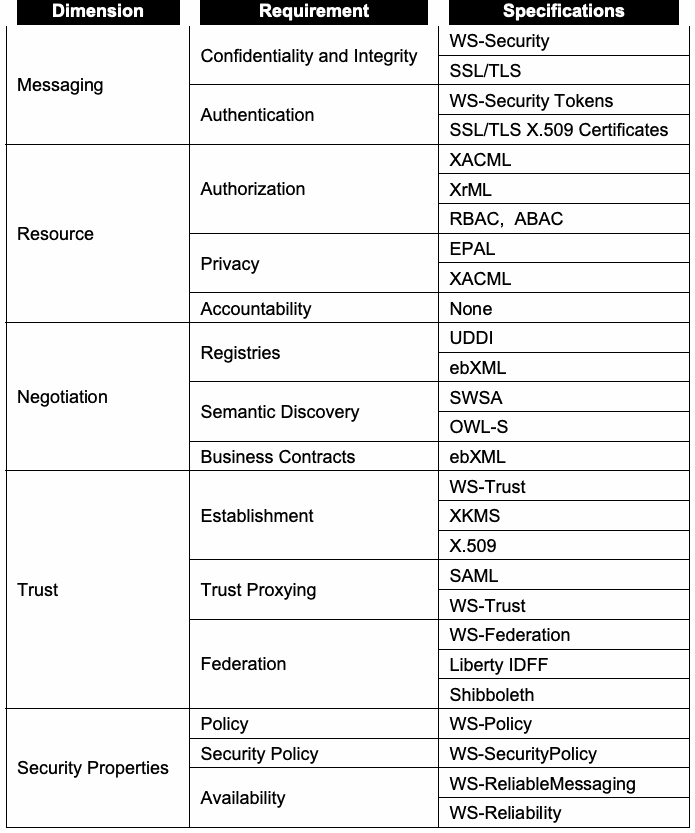
抽出したテキスト（原本と未照合・参考）
| Dimension | Requirement | Specifications |
| Messaging | Confidentiality and Integrity | WS-Security |
| SSL/TLS | ||
| Authentication | WS-Security Tokens | |
| SSL/TLS X.509 Certificates | ||
| Resource | Authorization | XACML |
| XrML | ||
| RBAC, ABAC | ||
| Privacy | EPAL | |
| XACML | ||
| Accountability | None | |
| Negotiation | Registries | UDDI |
| ebXML | ||
| Semantic Discovery | SWSA | |
| OWL-S | ||
| Business Contracts | ebXML | |
| Trust | Establishment | WS-Trust |
| XKMS | ||
| X.509 | ||
| Trust Proxying | SAML | |
| WS-Trust | ||
| Federation | WS-Federation | |
| Liberty IDFF | ||
| Shibboleth | ||
| Security Properties | Policy | WS-Policy |
| Security Policy | WS-SecurityPolicy | |
| Availability | WS-ReliableMessaging | |
| WS-Reliability |
抽出したテキストの訳（原本と未照合・参考）
| 側面 | 要件 | 仕様 |
| メッセージング | 機密性と完全性 | WS-Security |
| SSL/TLS | ||
| 認証 | WS-Securityトークン | |
| SSL/TLS X.509証明書 | ||
| リソース | 認可 | XACML |
| XrML | ||
| RBAC、ABAC | ||
| プライバシー | EPAL | |
| XACML | ||
| 説明責任 | なし | |
| 交渉 | レジストリ | UDDI |
| ebXML | ||
| セマンティックディスカバリ | SWSA | |
| OWL-S | ||
| ビジネス契約 | ebXML | |
| 信頼 | 確立 | WS-Trust |
| XKMS | ||
| X.509 | ||
| 信頼プロキシ | SAML | |
| WS-Trust | ||
| フェデレーション | WS-Federation | |
| Liberty IDFF | ||
| Shibboleth | ||
| セキュリティ特性 | ポリシー | WS-Policy |
| セキュリティポリシー | WS-SecurityPolicy | |
| 可用性 | WS-ReliableMessaging | |
| WS-Reliability |
Each SOA security dimension has one or more security requirements. Each requirement may have any number of standards that support it. For example, both SSL/TLS and WS-Security provide confidentiality, integrity and authentication support for the messaging dimension, while the accountability requirement of the resource protection dimension does not have any supporting standards.
SOAの各セキュリティ側面には、1つ以上のセキュリティ要件がある。各要件には、それをサポートする標準がいくつあってもよい。例えば、SSL/TLSとWS-Securityはいずれも、メッセージング側面に対して機密性、完全性、および認証をサポートする。一方、リソース保護側面の説明責任要件をサポートする標準はない。
2.5 Core Services
2.5 コアサービス
The notion of core services has yet to be completely defined. Traditionally, these are services that can be used by any of the Web services in an organization’s SOA. Two examples are the Open Grid Services Architecture (OGSA), developed for the Globus Grid, and the Department of Defense’s (DoD’s) Net-Centric Enterprise Services (NCES), developed for the Global Information Grid. Both OGSA and NCES provide a set of services available throughout an organization that are commonly used or essential to most Web services, such as discovery, authentication, and authorization. OGSA provides a comprehensive list of what can be offered as core services: service management, service communication, policy services, and security services. Most SOAs use these same categories of core services but may provide differing names:
コアサービスの概念は、まだ完全には定義されていない。従来、コアサービスとは、組織のSOA内のあらゆるWebサービスが利用できる（can）サービスを指す。2つの例として、Globus Grid向けに開発されたOpen Grid Services Architecture（OGSA）と、Global Information Grid向けに開発された国防総省（DoD）のNet-Centric Enterprise Services（NCES）がある。OGSAとNCESはいずれも、ディスカバリ、認証、認可など、組織内で広く利用可能であり、ほとんどのWebサービスに共通または不可欠な一連のサービスを提供する。OGSAは、コアサービスとして提供できる（can）ものの包括的な一覧を提示している。具体的には、サービス管理、サービス通信、ポリシーサービス、およびセキュリティサービスである。ほとんどのSOAはこれらと同じ分類のコアサービスを使用するが、名称が異なる場合がある（may）。
Service management services: assist in managing a SOA by providing mechanisms to install, maintain, monitor, and troubleshoot Web services.
サービス管理サービス：Webサービスのインストール、保守、監視、およびトラブルシューティングの仕組みを提供し、SOAの管理を支援する。
Service communication services: provide support for various types of communications models between services: queued messaging, publish-subscribe event notification, and distributed logging services.
サービス通信サービス：キューイングメッセージング、パブリッシュ／サブスクライブ型イベント通知、および分散ログサービスなど、サービス間のさまざまな通信モデルをサポートする。
Policy services: provide a framework for creating, administering, and managing policies for the infrastructure; these policies cover security, resource allocation, and performance.
ポリシーサービス：インフラストラクチャのポリシーを作成、管理運営、および管理するための枠組みを提供する。これらのポリシーはセキュリティ、リソース割り当て、および性能を対象とする。
Security services: provide support for different security models, mechanisms, protocols, and technologies that extend core Web services security protocols to support activities such as authorization, authentication, trust policy enforcement, and credential transformation.17
セキュリティサービス：認可、認証、信頼ポリシーの適用、およびクレデンシャル変換などの活動を支援するため、コアWebサービスセキュリティプロトコルを拡張する各種セキュリティモデル、機構、プロトコル、および技術をサポートする。17
Authentication
認証
Rate
金利
Core Web Service
コアWebサービス
Web Service
Webサービス
Loan Web Service
融資Webサービス
Authorization Core Web Service
認可 コアWebサービス
Identification Core Web Service
識別 コアWebサービス
Figure 2-10. Core Services Used by the Loan Service
図2-10. 融資サービスが使用するコアサービス
In the loan service example, shown in Figure 2-10, core services are used to offload identification, authentication, and authorization, among other capabilities, so that developers of the loan, rate, and credit services do not have to implement their own security functionality. For instance, when the loan service makes a request, it first retrieves an identifier from the identification service associated with the subject. When the rate service receives the request, it uses the authentication service to validate both the subject and the loan service. If authentication is successful, the rate service queries the authorization service to ensure the loan service and subject are authorized to receive policy information.
図2-10に示す融資サービスの例では、融資サービス、金利サービス、および信用サービスの開発者が独自のセキュリティ機能を実装せずに済むよう、識別、認証、認可などの機能をコアサービスに委譲する。例えば、融資サービスが要求を行う際、まず識別サービスから対象者に関連付けられた識別子を取得する。金利サービスは要求を受信すると、認証サービスを使用して対象者と融資サービスの両方を検証する。認証に成功すると、金利サービスは認可サービスに照会し、融資サービスと対象者がポリシー情報を受け取る権限を有することを確認する。
By offloading some of the processing to these core services, the implementation of the loan, rate and credit services is simplified when compared to a single Web service with similar functionality. This further improves security by lowering the number of possible defects that could exist in the individual services, but it introduces a slight performance penalty associated with the communication with the core services. Core services may also introduce a single point of failure in the SOA.
これらのコアサービスに一部の処理を委譲することで、融資、金利、および信用サービスの実装は、同等の機能を持つ単一Webサービスと比べて簡素化される。これにより、個々のサービスに存在し得る欠陥の数が減少し、セキュリティがさらに向上する一方、コアサービスとの通信に伴う若干の性能ペナルティが生じる。コアサービスは、SOAに単一障害点をもたらすこともある（may）。
2.6 Threats Facing Web Services
2.6 Webサービスが直面する脅威
Security decisions must always be made with an understanding of the threats facing the system to be secured. While there are a wealth of security standards and technologies available for securing Web services, they may not be adequate or necessary for a particular organization or an individual service. For that reason, it is important to understand the threats that face Web services so that organizations can determine which threats their Web services must be secured against. According to WS-I, the top threats facing Web services are:18
セキュリティ上の判断は、保護対象システムが直面する脅威を理解したうえで常に行わなければならない（must）。Webサービスを保護するために利用可能なセキュリティ標準や技術は豊富にあるが、特定の組織または個々のサービスにとって適切または必要とは限らない（may）。そのため、組織が自らのWebサービスをどの脅威から保護しなければならない（must）かを判断できる（can）よう、Webサービスが直面する脅威を理解することが重要である。WS-Iによると、Webサービスが直面する主な脅威は以下のとおりである。18
Message alteration. An attacker inserts, removes or modifies information within a message to deceive the receiver
メッセージの改ざん。攻撃者が受信者を欺くため、メッセージ内の情報を挿入、削除、または変更する。
Loss of confidentiality. Information within a message is disclosed to an unauthorized individual
機密性の喪失。メッセージ内の情報が権限のない個人に開示される。
Falsified messages. Fictitious messages that an attacker intends the receiver to believe are sent from a valid sender
偽造メッセージ。攻撃者が、正当な送信者から送られたと受信者に信じさせることを意図して作成した架空のメッセージ。
Man in the middle. A third party sits between the sender and provider and forwards messages such that the two participants are unaware, allowing the attacker to view and modify all messages
中間者攻撃。第三者が送信者とプロバイダーの間に介在してメッセージを転送するため、2者はそれに気付かず、攻撃者がすべてのメッセージを閲覧および変更できる。
Principal spoofing. An attacker constructs and sends a message with credentials such that it appears to be from a different, authorized principal
プリンシパルのなりすまし。攻撃者が、別の認可されたプリンシパルからのものに見えるようなクレデンシャルを伴うメッセージを作成し、送信する。
Forged claims. An attacker constructs a message with false credentials that appear valid to the receiver
偽造クレーム。攻撃者が、受信者には有効に見える偽のクレデンシャルを含むメッセージを作成する。
Replay of message. An attacker resends a previously sent message
メッセージの再送。攻撃者が、以前に送信されたメッセージを再送する。
Replay of message parts. An attacker includes portions of one or more previously sent messages in a new message
メッセージ部分の再送。攻撃者が、以前に送信された1つ以上のメッセージの一部を新しいメッセージに含める。
Denial of service. An attacker causes the system to expend resources disproportionately such that valid requests cannot be met.
サービス拒否。攻撃者がシステムに不釣り合いな量のリソースを消費させ、その結果、正当な要求を処理できなくなる。
The importance of these threats may vary depending on an organization’s needs and purpose. In some instances, messages need not be kept confidential, so loss of confidentiality is not a concern. Similarly, organizations may offer a Web service to the public. For example, a Web service that provides information about the current weather forecast need not be concerned if a request is from a falsified sender. Regardless, it is important to understand these threats and what technologies are available to mitigate them.
これらの脅威の重要性は、組織のニーズと目的によって異なる場合がある。場合によっては、メッセージを機密に保つ必要がないため、機密性の喪失は懸念事項ではない。同様に、組織は一般向けにWebサービスを提供する場合がある。例えば、現在の天気予報情報を提供するWebサービスでは、要求が偽装された送信者からのものであることを懸念する必要はない。いずれにせよ、これらの脅威と、それらを軽減するために利用可能な技術を理解することが重要である。
The following Web services and HTTP standards can protect against many of these threats:
以下のWebサービスおよびHTTP標準は、これらの脅威の多くから保護できる（can）。
W3C XML Encryption. Used by WS-Security to encrypt messages and provide confidentiality of part or all of a SOAP message
W3C XML Encryption。WS-Securityでメッセージを暗号化し、SOAPメッセージの一部または全体の機密性を提供するために使用される。
W3C XML Signature. Used by WS-Security to digitally sign messages and provide message integrity and sender authentication
W3C XML Signature。WS-Securityでメッセージにデジタル署名し、メッセージ完全性と送信者認証を提供するために使用される。
WS-Security Tokens. Allows messages to include credentials to aid receivers in determining whether or not the message sender is authorized to perform the requested action. Supported token types include:
WS-Securityトークン。要求された操作をメッセージ送信者が認可されているかどうかを受信者が判断するためのクレデンシャルを、メッセージに含められるようにする。サポートされるトークンの種類は以下のとおり。
•Username/password. The most common credentials in Web applications
•ユーザー名／パスワード。Webアプリケーションで最も一般的なクレデンシャル
•OASIS SAML Assertion. Asserts that the sender has been authenticated and/or supply attributes associated with the sender
•OASIS SAMLアサーション。送信者が認証済みであること、および／または送信者に関連付けられた属性を示す。
•IETF X.509 certificate. Coupled with XML Signature, a receiver can verify that the CA issued the certificate used to sign the SOAP message
•IETF X.509証明書。XML Signatureと組み合わせることで、受信者はSOAPメッセージの署名に使用された証明書が認証局（CA）によって発行されたことを検証できる（can）。
•ISO Rights Expression Language. Used to provide public key information, attributes of those keys, as well as information about the sender’s license
•ISO Rights Expression Language。公開鍵情報、鍵の属性、および送信者のライセンスに関する情報を提供するために使用される。
•IETF Kerberos token. Allows Web services to exist in a Kerberos domain.
•IETF Kerberosトークン。WebサービスがKerberosドメイン内で動作できるようにする。
W3C WS-Addressing IDs. Allows the message sender to supply a unique identifier for the message
W3C WS-Addressing ID。メッセージ送信者がメッセージに一意の識別子を付与できるようにする。
IETF SSL/TLS. Secures the HTTP protocol over which SOAP messages are sent and received
IETF SSL/TLS。SOAPメッセージの送受信に使用されるHTTPプロトコルを保護する。
SSL/TLS with client authentication. Requires both the sender and receiver to authenticate with one another before securing the HTTP protocol
クライアント認証を伴うSSL/TLS。HTTPプロトコルを保護する前に、送信者と受信者の双方に相互認証を要求する。
IETF HTTP authentication. Allows usernames, passwords (via HTTP Basic) or password digests (via HTTP Digest) to be sent as part of the HTTP header.
IETF HTTP認証。ユーザー名、パスワード（HTTP Basic経由）、またはパスワードダイジェスト（HTTP Digest経由）をHTTPヘッダーの一部として送信できるようにする。
These technologies, along with other technologies that support them, are discussed in-depth in Section 3. Table 2-2 illustrates which standards provide protection against these threats. As the table shows, SSL/TLS and WS-Security, through XML Encryption and XML Signature, provide similar protections against threats; Section 3.6 discusses SSL/TLS, WS-Security and WS-SecureConversation and the trade-offs associated with each technology.
これらの技術およびそれらをサポートする関連技術については、第3節で詳しく論じる。表2-2に、各標準がこれらの脅威をどのように防御するかを示す。表に示すとおり、SSL/TLSとWS-Securityは、XML EncryptionおよびXML Signatureを通じて、脅威に対する同様の保護を提供する。第3.6節では、SSL/TLS、WS-Security、WS-SecureConversationおよび各技術に伴うトレードオフを論じる。
Table 2-2. Threats Addressed by Current Web Service Standards
表2-2. 現行のWebサービス標準が扱う脅威
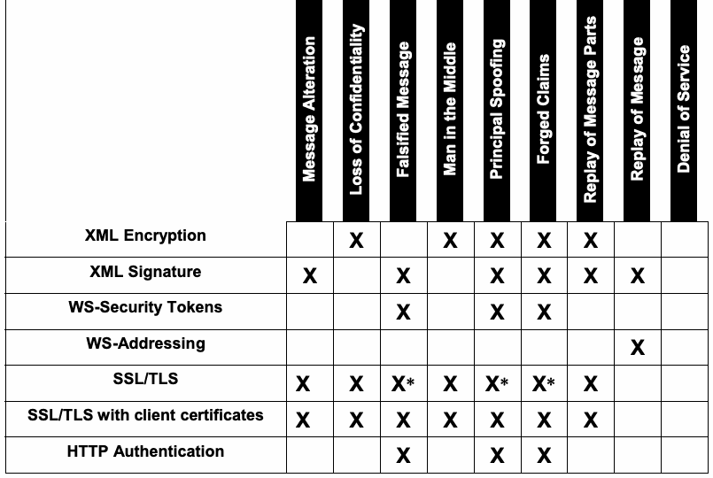
抽出したテキスト（原本と未照合・参考）
| noitaretlA egasseM | ytilaitnedifnoC fo ssoL | egasseM deifislaF | elddiM eht ni naM | gnifoopS lapicnirP | smialC degroF | straP egasseM fo yalpeR / egasseM fo yalpeR / ecivreS fo laineD | |
| XML Encryption | X | X | X | X | X | ||
| XML Signature | X | X | X | X | X / X | ||
| WS-Security Tokens | X | X | X | ||||
| WS-Addressing | X | ||||||
| SSL/TLS | X | X | X* | X | X* | X* | X |
| SSL/TLS with client certificates | X | X | X | X | X | X | X |
| HTTP Authentication | X | X | X |
抽出したテキストの訳（原本と未照合・参考）
| メッセージ改ざん | 機密性の喪失 | 偽造メッセージ | 中間者攻撃 | プリンシパルのなりすまし | 偽造クレーム | サービス拒否／メッセージの再送／メッセージ部分の再送 | |
| XML Encryption | X | X | X | X | X | ||
| XML Signature | X | X | X | X | X / X | ||
| WS-Security Tokens | X | X | X | ||||
| WS-Addressing | X | ||||||
| SSL/TLS | X | X | X* | X | X* | X* | X |
| SSL/TLS with client certificates | X | X | X | X | X | X | X |
| HTTP Authentication | X | X | X |
* Threat mitigated only for provider messages to requester, not for requester messages to provider.
* 脅威を軽減するのは、プロバイダーから要求者へのメッセージに限られ、要求者からプロバイダーへのメッセージは対象外。
As shown in Table 2-2, there are no standards that protect against DoS attacks. While the OASIS WS-Reliability standard and the work produced by the OASIS WS-RX technical committee address message reliability, ensuring the availability of Web services remains a hard problem. Many of the availability techniques used by high volume Web applications, such as load balancing, clustering and replication, can be used to aid in preserving availability.
表2-2に示すとおり、DoS攻撃を防ぐ標準はない。OASIS WS-Reliability標準およびOASIS WS-RX技術委員会の成果はメッセージの信頼性を扱うが、Webサービスの可用性を確保することは依然として難しい問題である。負荷分散、クラスタリング、複製など、大量利用されるWebアプリケーションで用いられる可用性技法の多くは、可用性の維持に役立てることができる。
Web services also face threats associated with all software: defects in a Web service implementation may lead to exploitable vulnerabilities. Web services, like Web applications, are remotely accessible, so attackers can take advantage of the Web service’s availability to probe it for potential exploits. As with any remotely accessible service, it is important that Web services be implemented securely and that traditional network security tools and techniques be used to limit access to the Web service to only those networks and systems that should have legitimate access. Some aspects of secure Web service development are discussed in Section 6.
Webサービスはすべてのソフトウェアに共通する脅威にも直面しており、Webサービス実装の欠陥が悪用可能な脆弱性につながる場合がある（may）。Webアプリケーションと同様に、Webサービスはリモートからアクセスできるため、攻撃者はその可用性を利用して潜在的な悪用手段を探ることができる（can）。リモートからアクセス可能なあらゆるサービスと同様、Webサービスを安全に実装すること、および、正当なアクセスが必要なネットワークおよびシステムのみにWebサービスへのアクセスを制限するために従来型のネットワークセキュリティツールと技法を使用することが重要である。セキュアなWebサービス開発のいくつかの側面については、第6節で論じる。
2.7 Common Risks Facing Web Services
2.7 Webサービスが直面する一般的なリスク
As a software-based service that is network-enabled, Web services are at risk for many of the same security exploits that target any other software. An extensive listing and descriptions of common attacks targeting Web services appear in Appendix A.
ネットワーク対応のソフトウェアベースのサービスであるWebサービスは、他のあらゆるソフトウェアを標的とする多くのセキュリティ攻撃のリスクにさらされる。Webサービスを標的とする一般的な攻撃の広範な一覧と説明は付録Aに記載されている。
Traditional security technologies are by and large inadequate to secure Web services. Perimeter-based network security technologies (e.g., firewalls, IDS) are inadequate because Web services are transmitted using HTTP, which is usually given free reign by firewalls, and SOAP may not be supported by an organization’s IDS. While certain types of firewalls support filtering HTTP content, and some can support filtering SOAP, filtering all XML messages with traditional firewalls can prove to be expensive and reduce the throughput of the firewall. Due to the SOA paradigm, which allows for messages to be passed via intermediaries rather than simply by point-to-point communication, SSL/TLS is inadequate for a number of possible SOAP transactions because SSL/TLS is designed to secure transactions between individual Web services—and will not protect against an intermediary performing a man-in-the-middle attack. The SOAP specification explains that SOAP was designed with the intent of leaving security for an extension:
従来のセキュリティ技術は、概してWebサービスを保護するには不十分である。境界ベースのネットワークセキュリティ技術（ファイアウォール、IDSなど）は、WebサービスがHTTPを使用して送信され、HTTPは通常ファイアウォールで自由に通過できるうえ、SOAPが組織のIDSでサポートされない場合がある（may）ため、不十分である。特定の種類のファイアウォールはHTTPコンテンツのフィルタリングをサポートし、一部はSOAPのフィルタリングもサポートできる（can）が、従来型ファイアウォールですべてのXMLメッセージをフィルタリングすると、コストがかさむことがあり、ファイアウォールのスループットが低下する可能性がある。メッセージを単純なポイントツーポイント通信ではなく仲介者経由で渡せるSOAパラダイムのため、SSL/TLSは、個々のWebサービス間の取引を保護するよう設計されているものの、中間者攻撃を行う仲介者からは保護しない（will not）ため、多くのSOAP取引には不十分である。SOAP仕様は、SOAPがセキュリティを拡張機能に委ねる意図で設計されたと説明している：
“Two major design goals for SOAP are simplicity and extensibility. SOAP attempts to meet these goals by omitting, from the messaging framework, features that are often found in distributed systems. Such features include but are not limited to ‘reliability’, ‘security’, ‘correlation’, ‘routing’, and ‘Message Exchange Patterns’ (MEPs). While it is expected that many features will be defined, this specification provides specifics only for two MEPs. Other features are left to be defined as extensions by other specifications.”19
「SOAPの設計目標は、単純さと拡張性の2つである。SOAPは、分散システムで一般的に見られる機能をメッセージングフレームワークから除外することで、これらの目標を達成しようとする。そうした機能には、『信頼性』『セキュリティ』『相関』『ルーティング』『メッセージ交換パターン』（MEP）が含まれるが、これらに限定されない。多くの機能が定義されることが予想される（will）が、本仕様が具体的に規定するのは2つのMEPのみである。その他の機能は、他の仕様による拡張として定義されることに委ねられている。」19
WS-I has produced a document describing SOAP’s security challenges, which include the following:
WS-Iは、SOAPのセキュリティ上の課題を説明する文書を作成しており、以下の事項を挙げている。
SOAP does not perform any authentication between SOAP endpoints or intermediaries, so there is no way to verify the origin of a SOAP message.
SOAPはSOAPエンドポイントまたは仲介者間の認証を行わないため、SOAPメッセージの送信元を検証する方法がない。
SOAP does not provide a mechanism for ensuring data integrity or confidentiality either at rest or during transit.
SOAPには、保存時または転送中のデータ完全性や機密性を確保する仕組みがない。
SOAP does not provide a mechanism for detecting resubmitted SOAP messages.
SOAPには、再送されたSOAPメッセージを検出する仕組みがない。
The WSDL description of a Web service is usually automatically provided by the Web service framework used (e.g., appending ?wsdl to the Web service URI will return its WSDL) and may openly reveal the entire API of the Web service—even parts of the Web service that may have been disabled or that are used solely for debugging purposes.20 Exposing too much information about a Web service through its WSDL descriptor may provide information about the design and security requirements of the Web service.
WebサービスのWSDL記述は、通常、そのWebサービスが使用するフレームワークによって自動的に提供される（例えば、WebサービスURIに「?wsdl」を追加すると、そのWSDLが返される（will））。また、WSDLはWebサービスのAPI全体を公に明らかにする場合があり（may）、無効化された部分やデバッグ目的にのみ使用される部分も含まれる可能性がある（may）。20 WebサービスのWSDL記述子を通じて過剰な情報を公開すると、そのWebサービスの設計およびセキュリティ要件に関する情報が明らかになる場合がある（may）。
UDDI registries openly provide details about the purpose of a Web service as well as how to access it. In particular, UDDI provides tModels (described in Section 3.9.1) as “a way to mark a description with information that designates how it behaves, what conventions it follows, and what specifications or standards the service complies with.”21 Attackers may use this information to find potential flaws in the Web service. For example, the UDDI entry may show that the Web service uses a vulnerable specification. Any information in excess of that required to bind to the Web service may benefit an attacker.
UDDIレジストリは、Webサービスの目的とアクセス方法の詳細を公開している。特にUDDIはtModel（第3.9.1節で説明）を提供し、これは「記述に、動作方法、従う規約、およびサービスが準拠する仕様や標準を示す情報を付加する方法」である。21 攻撃者はこの情報を使用して、Webサービスの潜在的な欠陥を見つける場合がある（may）。例えば、UDDIエントリから、そのWebサービスが脆弱な仕様を使用していることが分かる場合がある（may）。Webサービスへのバインドに必要な範囲を超える情報は、いずれも攻撃者に利益をもたらす場合がある（may）。
Additionally, Web services use UDDI registries to discover and dynamically bind to Web services at run time. Because the UDDI specifications did not address digitally signing entries until version 3.0.2 (released as an OASIS standard in 2005), many UDDI registries do not provide a robust mechanism for verifying the authenticity of registry entries. This may allow malicious Web services to be added to the registry and used by other Web services.
さらに、WebサービスはUDDIレジストリを使用して、実行時に他のWebサービスを発見し、動的にバインドする。UDDI仕様がエントリへのデジタル署名に対応したのは、バージョン3.0.2（2005年にOASIS標準として公開）以降であるため、多くのUDDIレジストリにはレジストリエントリの真正性を検証する堅牢な仕組みがない。これにより、悪意あるWebサービスがレジストリに追加され、他のWebサービスに使用される可能性がある（may）。
2.8 Web Services’ Interfaces with Network/Infrastructure Security Architectures
2.8 Webサービスとネットワーク／インフラストラクチャのセキュリティアーキテクチャとのインターフェース
Because much of Web services security relies on XML Encryption and XML Signature or SSL/TLS, all of which use X.509 digital certificates to store cryptographic keys, most Web services frameworks seamlessly support and interface with a PKI. In particular, WS-Security supports the X.509 Certificate Token Profile. While the Web service itself does not need to implement XKMS or non-XML PKI protocols, PKI protocols should be supported by the host system to properly interact with the PKI.
Webサービスセキュリティの多くは、XML Encryption、XML Signature、またはSSL/TLSに依存しており、これらはいずれも暗号鍵の保存にX.509デジタル証明書を使用するため、ほとんどのWebサービスフレームワークはPKIをシームレスにサポートし、連携する。特に、WS-SecurityはX.509 Certificate Token Profileをサポートする。Webサービス自体がXKMSまたは非XMLのPKIプロトコルを実装する必要はないが、PKIと適切に連携するには、ホストシステムがPKIプロトコルをサポートすべきである（should）。
In general, .NET and Java Web services rely on Windows and Java mechanisms, respectively, to store the various certificates that will be used by the Web service. By default, these key storage mechanisms require administrative interaction to fully interact with a PKI. Commercial off the shelf (COTS) products are available to integrate with a PKI. Additional Web services can also be developed to interact with the key management infrastructure.22
一般に、.NETおよびJavaのWebサービスは、それぞれWindowsおよびJavaの機構を利用して、Webサービスが使用することになる（will）各種証明書を保存する。既定では、これらの鍵保存機構を使用してPKIと完全に連携するには、管理者の操作が必要である。PKIとの統合に利用可能な市販既製品（COTS）がある。鍵管理基盤と連携するための追加Webサービスを開発することもできる（can）。22
Web services frameworks provide support beyond simply abstracting the technical SOAP implementation. They often provide authentication and authorization services. Java Enterprise Edition (Java EE) and .NET both provide client authentication via SSL/TLS as well as sophisticated authorization services that can interface with any authentication mechanism. In particular, frameworks use widely used and robust libraries for authentication and authorization, which make these implementations less likely than others to have bugs. An additional security feature provided by Java and .NET frameworks is sandboxing, which is designed to separate all actions of the Web service from the operating system. Sandboxing affords added benefits to developers and administrators: stricter permissions and capabilities than those provided by the operating system can be applied to a Web service, and the sandbox helps to prevent the Web service from inadvertently or maliciously harming the underlying operating system, providing the sandbox itself is robust against attack.
Webサービスフレームワークは、技術的なSOAP実装の抽象化だけにとどまらないサポートを提供する。多くの場合、認証および認可サービスも提供する。Java Enterprise Edition（Java EE）と.NETはいずれも、SSL/TLSによるクライアント認証に加えて、あらゆる認証機構と連携できる（can）高度な認可サービスを提供する。特に、フレームワークは広く使用され実績のある認証・認可ライブラリを使用しており、そのため、これらの実装にバグが含まれる可能性は他より低い。Javaおよび.NETフレームワークが提供する追加のセキュリティ機能にサンドボックス化がある。これは、Webサービスのすべての動作をオペレーティングシステムから分離するよう設計されている。サンドボックス化は開発者と管理者にさらなる利点をもたらす。オペレーティングシステムが提供するものより厳格な権限と能力をWebサービスに適用できる（can）うえ、サンドボックス自体が攻撃に対して堅牢であれば、基盤となるオペレーティングシステムをWebサービスが誤って、または悪意をもって損なうことを防ぐのに役立つ。
Web services frameworks provide a number of benefits to developers in addition to well-tested tools and libraries: automatic creation of WSDL descriptors, client and server stubs, and potentially some implementation code. While this support can greatly improve the productivity of the development team, some developers may begin to rely on these tools when developing Web services and may not fully understand the code that is automatically generated. Should such developers be required to use a different development environment for Web services, they may not be adaptable and may inadvertently introduce security vulnerabilities. Additionally, the use of non-vetted, automatically generated code can itself lead to security vulnerabilities; most automatically generated code is intended merely to guide and aid developers, not for production use.
Webサービスフレームワークは、十分に試験されたツールやライブラリのほかにも、WSDL記述子、クライアントおよびサーバーのスタブ、場合によっては実装コードを自動生成するなど、多くの利点を開発者に提供する。このサポートは開発チームの生産性を大幅に高めることができる（can）が、一部の開発者はWebサービス開発時にこれらのツールに依存し始める場合がある（may）。また、自動生成されたコードを十分理解しない場合がある（may）。そのような開発者がWebサービス用に別の開発環境を使用する必要が生じた場合（Should）、適応できない場合がある（may）。その場合、意図せずセキュリティ脆弱性を持ち込む場合がある（may）。さらに、審査されていない自動生成コードを使用すると、それ自体がセキュリティ脆弱性につながる場合がある（can）。自動生成コードの大半は、開発者を導き支援するためのものであり、本番利用を意図したものではない。
Developers need to be fully versed in the libraries supported by the framework when dealing with libraries that perform authentication, authorization, and other security functions that are not supported by the base framework. For example, XACML and SAML provide a flexible and platform-independent framework for distributed authorization. To properly implement XACML and SAML support may require overriding the framework’s authentication mechanism at various points, which could lead to potential vulnerabilities in the Web service application. Supporting SAML or WS-Security in place of native authentication mechanisms may require the Web service to bypass authentication services provided by the framework, leading to potentially vulnerable code. Until frameworks provide native support for platform-independent authentication and authorization mechanisms, there will always be the potential for custom-developed code to be inadequately robust and lead to potential security breaches.
開発者は、基盤フレームワークでサポートされていない認証、認可、その他のセキュリティ機能を実行するライブラリを扱う場合、フレームワークがサポートするライブラリについて十分に理解する必要がある。例えば、XACMLとSAMLは、柔軟でプラットフォームに依存しない分散認可フレームワークを提供する。XACMLとSAMLのサポートを適切に実装するには、複数の箇所でフレームワークの認証機構をオーバーライドする必要がある場合があり（may）、Webサービスアプリケーションに脆弱性が生じる可能性がある。ネイティブ認証機構の代わりにSAMLまたはWS-Securityをサポートする場合も、フレームワークが提供する認証サービスをWebサービスが迂回する必要がある場合があり（may）、脆弱性を含むコードにつながる可能性がある。フレームワークがプラットフォームに依存しない認証および認可機構をネイティブにサポートするまでは、独自開発コードが堅牢さに欠け、セキュリティ侵害につながる可能性が常にある（will）。
2.9 Summary
2.9 まとめ
This section introduced the underlying concepts of Web services and the security challenges they face. The challenges have five dimensions:
本節では、Webサービスの基礎概念と、それらが直面するセキュリティ上の課題を紹介した。課題は5つの側面に分類される。
Secure messaging. Ensure that SOAP messages traversing networks are not viewed or modified by attackers. WS-Security and WS-SecureConversation provide the confidentiality and integrity services necessary.
セキュアなメッセージング。ネットワークを通過するSOAPメッセージが攻撃者に閲覧または変更されないようにする。WS-SecurityとWS-SecureConversationは、必要な機密性および完全性サービスを提供する。
Protection of resources. Ensure that individual Web services are adequately protected through appropriate identification, authentication, and access control mechanisms. There is a plethora of standards available for controlling access to Web services.
リソース保護。適切な識別、認証、およびアクセス制御機構により、個々のWebサービスが十分に保護されていることを確実にする。Webサービスへのアクセスを制御するための標準は数多くある。
Negotiation of contracts. To truly meet the goals of SOA and automate business processes, Web services should be capable of negotiating business contracts as well as the QoP and QoS of the associated transactions. While this remains a hard problem, standards are emerging to address portions of contract negotiation—particularly in the QoP and QoS field.
契約交渉。SOAの目標を真に達成し、ビジネスプロセスを自動化するには、Webサービスはビジネス契約に加え、関連する取引の保護品質（QoP）およびサービス品質（QoS）を交渉できるべきである（should）。これは依然として難しい課題だが、契約交渉の一部、とりわけQoPおよびQoS分野に対処する標準が現れつつある。
Trust management. One of the underlying principles of security is ensuring that all entities involved in a transaction trust one another. To this end, Web services support a variety of trust models that can be used to enable Web services to trust the identities of entities within the SOA.
信頼管理。セキュリティの基本原則の1つは、取引に関与するすべての主体が互いを信頼することを確実にすることである。このため、Webサービスは、SOA内の主体の身元をWebサービスが信頼できる（can）ようにする、さまざまな信頼モデルをサポートする。
Security properties. All Web service security processes, tools, and techniques rely on secure implementation. A vulnerable Web service may allow attackers to bypass many—if not all—of the security mechanisms discussed in Section 3.
セキュリティ特性。すべてのWebサービスのセキュリティプロセス、ツール、および技法は、安全な実装に依存する。脆弱なWebサービスは、第3節で論じるセキュリティ機構の多く、場合によってはすべてを攻撃者が迂回できるようにする可能性がある（may）。
To adequately meet the challenges posed by each security dimension, the Web services community has developed a large number of standards. Each standard meets a different security challenge faced by Web services. WS-Security and SSL/TLS, for example, address the secure messaging domain, while WS-Federation and Liberty Identity Federation Framework (IDFF) address the trust management domain. Some security domains, such as messaging and trust management, are addressed by competing or overlapping standards, while others, such as the security properties domain, require further research within the community to fully address the challenges faced. Some standards address relevant security properties. For example, WS-Reliability and WS-ReliableMessaging provide some QoS functionality, allowing guaranteed message passing even if the network is under attack. More standards and technology are necessary to provide full support for all of the necessary security properties. When determining which Web services standards and technologies to adopt, it is important to be aware of the threats facing an organization’s Web services and prioritize them to ensure that resources are distributed appropriately for the Web services being secured.
各セキュリティ側面がもたらす課題に十分に対応するため、Webサービスコミュニティは多数の標準を策定してきた。各標準は、Webサービスが直面する異なるセキュリティ課題に対処する。例えば、WS-SecurityとSSL/TLSはセキュアなメッセージング分野を扱い、WS-FederationとLiberty Identity Federation Framework（IDFF）は信頼管理分野を扱う。メッセージングや信頼管理など、一部のセキュリティ分野には競合または重複する標準が存在する一方、セキュリティ特性分野などでは、直面する課題に完全に対処するため、コミュニティによるさらなる研究が必要である。いくつかの標準は関連するセキュリティ特性に対処する。例えば、WS-ReliabilityとWS-ReliableMessagingは、ネットワークが攻撃を受けている場合でもメッセージ配信を保証するなど、一定のQoS機能を提供する。必要なすべてのセキュリティ特性を完全にサポートするには、さらなる標準と技術が必要である。採用するWebサービス標準および技術を決める際には、組織のWebサービスが直面する脅威を把握し、保護対象のWebサービスに応じてリソースを適切に配分できるよう、その優先順位を付けることが重要である。
3. Web Service Security Functions and Related Technologies
3. Webサービスのセキュリティ機能と関連技術
Web service security standards, functions, and technologies continue to evolve at a rapid pace, driven by changes in the types of software attacks, community stakeholders, and Web services policy decision makers. This section describes several current and emerging standards, initiatives, and techniques aimed at improving the security of Web services. Many of the concepts used in securing Web applications are useful for understanding the security of Web services. Several resources on the subject of Web application security are provided in Appendix F for further reference.
Webサービスのセキュリティ標準、機能、および技術は、ソフトウェア攻撃の種類、コミュニティの関係者、Webサービスのポリシー決定者の変化に伴い、急速に進化し続けている。本節では、Webサービスのセキュリティ向上を目的とした複数の現行および新興の標準、取り組み、技法を説明する。Webアプリケーションのセキュリティ確保に用いられる概念の多くは、Webサービスのセキュリティを理解するうえで有用である。Webアプリケーションセキュリティに関する情報源を、参考資料として付録Fにいくつか掲載する。
3.1 Service-to-Service Authentication
3.1 サービス間認証
Authentication is required to limit access to resources, to identify participants in transactions, and to create seamless personalization of information based on identity. A means of sharing the fact that authentication has been performed successfully is necessary to support single sign-on, allowing users to authenticate with one system and use other services and applications within a SOA.
認証は、リソースへのアクセス制限、取引参加者の識別、およびアイデンティティに基づく情報のシームレスな個別化を実現するために必要である。シングルサインオンをサポートするには、認証が成功した事実を共有する手段が必要であり、これによりユーザーは1つのシステムで認証を受け、SOA内の他のサービスやアプリケーションを利用できる。
Service-to-service authentication can be performed using a variety of methods, from HTTP-based token authentication to SSL/TLS-certificate based authentication, or by passing tokens along with the SOAP request. The HTTP and SSL/TLS-based methods are performed below the SOAP message layer and are transparent to the Web services involved, while SOAP-based token protocols require interaction between Web services.
サービス間認証は、HTTPベースのトークン認証、SSL/TLS証明書ベース認証、SOAP要求にトークンを添付する方式など、さまざまな方法で実施できる（can）。HTTPおよびSSL/TLSベースの方式はSOAPメッセージ層より下位で実行され、関係するWebサービスには見えない。一方、SOAPベースのトークンプロトコルではWebサービス間のやり取りが必要となる。
Token-based Web services authentication is usually performed using the OASIS WS-Security standard, which supports tokens based on a variety of authentication standards: usernames, X.509 PKI certificates, Kerberos tickets, or SAML assertions (SAML is discussed in-depth in Section 3.5.3). WS-Security libraries are available for most of the widely used Java and .NET Web services development platforms. When a service provider attempts to access a remote Web service on behalf of a user, it should send an authentication token within a WS-Security message. These tokens convey that the initiating entity (e.g., a user or requester) has been authenticated and provide information about the entity, such as the authentication mechanism, time, and possibly subject attributes that may be applicable. Often, these tokens take the form of a SAML assertion.
トークンベースのWebサービス認証は、通常、OASIS WS-Security標準を使用して実施される。この標準は、ユーザー名、X.509 PKI証明書、Kerberosチケット、SAMLアサーションなど、さまざまな認証標準に基づくトークンをサポートする（SAMLの詳細は第3.5.3節を参照）。広く使われているほとんどのJavaおよび.NET Webサービス開発プラットフォーム向けに、WS-Securityライブラリが提供されている。サービスプロバイダーがユーザーに代わってリモートWebサービスへアクセスする際は、WS-Securityメッセージ内に認証トークンを送信すべきである（should）。これらのトークンは、開始主体（ユーザーまたは要求者など）が認証済みであることを伝え、認証機構、時刻、適用される場合がある（may）主体属性など、その主体に関する情報を提供する。多くの場合、これらのトークンはSAMLアサーションの形式をとる。
For authenticating Web services between organizations using identity federation, the Liberty Alliance developed Liberty ID-WSF, which supports service-to-service authentication based on pairwise trust and federated identity. Federated authentication can also be performed using the WS-Trust and WS-Federation specifications developed to support WS-Security. Web service authentication using SAML and WS-Security is described in the following section. Identity federation technologies are discussed in-depth in Section 3.2.
アイデンティティフェデレーションを使用して組織間のWebサービスを認証するため、Liberty Allianceは、ペアワイズ信頼とフェデレーションアイデンティティに基づくサービス間認証をサポートするLiberty ID-WSFを開発した。WS-Securityをサポートするために策定されたWS-TrustおよびWS-Federation仕様を使用して、フェデレーション認証を実施することもできる（can）。SAMLおよびWS-SecurityによるWebサービス認証については、次節で説明する。アイデンティティフェデレーション技術の詳細は第3.2節で論じる。
3.1.1 Service Chaining
3.1.1 サービスチェイニング
Sometimes, a service provider may not be able to perform the actions that a user or requester wishes it to perform, but it knows of a remote Web service that can. The service provider may invoke another remote service to satisfy the requester’s request, which is known as service chaining. The service provider may use a SAML assertion, a WS-Security message, or both to make certain that both Web services trust each other.
サービスプロバイダーがユーザーまたは要求者の望む操作を実行できない場合がある（may）が、その操作を実行できる（can）リモートWebサービスを知っている。サービスプロバイダーは、要求者の要求を満たすために別のリモートサービスを呼び出すことがあり（may）、これをサービスチェイニングという。サービスプロバイダーは、両方のWebサービスが互いを信頼することを確実にするため、SAMLアサーション、WS-Securityメッセージ、またはその両方を使用する場合がある（may）。
There are two different approaches to service chaining. The Web service can access the remote Web service either as itself or by taking on the identity of the originator of the request. In the first case, the two Web services would communicate with each other as normal. In the second case, the remote Web service needs to be provided the identity of the originator in a trusted fashion. This can be satisfied using WS-Security and SAML.
サービスチェイニングには2つの方式がある。Webサービスは、自身としてリモートWebサービスにアクセスするか、要求の発信者のアイデンティティを引き受けてアクセスできる（can）。最初の方式では、2つのWebサービスは通常どおり相互に通信するだろう（would）。2つ目の方式では、信頼できる方法で発信者のアイデンティティをリモートWebサービスに提供する必要がある。これはWS-SecurityおよびSAMLを使用して実現できる（can）。
There are two ways to pass the identity of the originator on to a remote service. First, if the Web service received a SAML assertion with the originator’s request, that SAML assertion can be passed on to the remote Web service. It may be necessary for the requester service to sign either the SAML assertion or the SOAP message so that its own identity is passed to the remote service as well. Another option is for the requester service to generate and sign a SAML assertion for the originator itself and pass this SAML assertion on to the remote Web service. In this type of configuration it is not possible for the remote Web service to determine who originally requested the information. This limitation may be a hindrance in chain of trust deployments, as the chain is limited to the last requester.
発信者のアイデンティティをリモートサービスに渡す方法は2つある。まず、Webサービスが発信者の要求とともにSAMLアサーションを受信した場合、そのSAMLアサーションをリモートWebサービスに転送できる（can）。要求者サービス自身のアイデンティティもリモートサービスに伝わるように、要求者サービスがSAMLアサーションまたはSOAPメッセージに署名する必要がある場合がある（may）。別の方法として、要求者サービス自身が発信者のためにSAMLアサーションを生成・署名し、そのアサーションをリモートWebサービスに転送できる。この構成では、リモートWebサービスが情報を最初に要求した人物を特定できない。信頼チェーンの展開では、この制限によってチェーンが最後の要求者までに限られるため、支障となる場合がある（may）。
By contrast, if the originator’s SAML assertion is used or is signed, it is possible to trace the request back to the requesting entity. By forwarding a SAML assertion to the remote Web service, the requester service is able to assert the identity of the originator of the request. By either signing the SOAP message using WS-Security or the SAML assertion, the remote Web service is provided with the identity of the requester and can then determine whether or not it will trust the SAML assertion provided. If the authentication information requires confidentiality, SSL/TLS or WS-Security’s encryption functionality should be used.
これに対し、発信者のSAMLアサーションが使用または署名されている場合、要求を要求元の主体まで追跡できる（can）。リモートWebサービスにSAMLアサーションを転送することで、要求者サービスは要求の発信者のアイデンティティを主張できる。WS-Securityを使用してSOAPメッセージまたはSAMLアサーションのいずれかに署名することで、リモートWebサービスには要求者のアイデンティティが提供され、その後、提示されたSAMLアサーションを信頼する（will）かどうかを判断できる。認証情報に機密性が必要な場合は、SSL/TLSまたはWS-Securityの暗号化機能を使用すべきである（should）。
The use of signed SAML authentication or authorization assertions should be approached with caution. A signed SAML assertion is a token that can be reused by an attacker or a malicious service. Care must be taken to ensure that timestamps and validity periods are used and enforced. To address this, SAML assertions can be cryptographically bound to individual SOAP messages by signing the parent tag of the SAML assertion (e.g., using WS-Security to sign the Security element rather than the contained SAML token). While the SAML assertion may be reused, it will be invalid unless the entire signed portion of the message is also re-used, making it easier for service providers to detect replay attacks.
署名付きSAML認証アサーションまたは認可アサーションの使用には注意を払うべきである（should）。署名付きSAMLアサーションは、攻撃者または悪意あるサービスが再利用できる（can）トークンである。タイムスタンプと有効期間が使用され、強制されるよう注意しなければならない（must）。この問題に対処するため、SAMLアサーションの親タグ（例えば、含まれるSAMLトークンではなくSecurity要素にWS-Securityで署名する）に署名することにより、SAMLアサーションを個々のSOAPメッセージに暗号学的に結び付けることができる（can）。SAMLアサーション自体は再利用される場合がある（may）が、メッセージの署名された部分全体も再利用されない限り無効となる（will）ため、サービスプロバイダーがリプレイ攻撃を検出しやすくなる。
3.1.2 WS-Security for Authentication
3.1.2 認証のためのWS-Security
Many Web services rely on the authentication mechanisms provided by HTTP and SSL/TLS. These solutions are only acceptable over a direct connection between two SOAP endpoints. If a SOAP message is to travel between multiple SOAP endpoints before reaching its destination, it is not acceptable to rely on HTTP and SSL/TLS for authentication, confidentiality, and integrity. There is no guarantee in this type of configuration that one of the Web services that handled the message did not misuse or store the data. In 2002, Microsoft, IBM, and Verisign released the WS-Security specification to address this shortcoming. In 2003, WS-Security was submitted as an OASIS standard, and in 2004 it was released as an OASIS standard. The ability of WS-Security to provide authentication (as well as confidentiality and integrity) at the SOAP message level is important for Web services to trust the messages they receive.
多くのWebサービスはHTTPおよびSSL/TLSが提供する認証機構に依存している。これらの方式が許容されるのは、2つのSOAPエンドポイント間の直接接続に限られる。SOAPメッセージが宛先に到達する前に複数のSOAPエンドポイント間を移動する場合、認証、機密性、および完全性をHTTPやSSL/TLSに依存して確保することは許容されない。この構成では、メッセージを処理したWebサービスの1つがデータを不正使用または保存しなかったという保証はない。2002年、Microsoft、IBM、およびVerisignは、この不足に対処するためWS-Security仕様を公開した。2003年にWS-SecurityはOASIS標準として提出され、2004年にOASIS標準として公開された。SOAPメッセージ層で認証（ならびに機密性および完全性）を提供するWS-Securityの能力は、Webサービスが受信メッセージを信頼するうえで重要である。
Authentication in WS-Security is performed by including claims in the WS-Security header of a SOAP message. Claims provide information about the identity of the SOAP message sender which can then be used to determine whether or not the sender is authorized to access the resources requested. Claims can either be endorsed or unendorsed. An endorsed claim, such as an X.509 certificate, provides inherent proof that the sender is the entity referenced, because the key referenced in the X.509 certificate can be used to verify the signed portion of the SOAP message. An example of an unendorsed claim is a username/password pair or a SAML assertion. In an unendorsed claim, there is no inherent method for determining that the sender of the SOAP message is the entity that the header specifies.
WS-Securityでの認証は、SOAPメッセージのWS-Securityヘッダーにクレームを含めることによって実施される。クレームはSOAPメッセージ送信者のアイデンティティに関する情報を提供し、その情報は送信者が要求されたリソースにアクセスする権限を持つかどうかの判断に使用できる（can）。クレームには、裏付けのあるものと裏付けのないものがある（can）。X.509証明書などの裏付けのあるクレームは、X.509証明書内で参照される鍵をSOAPメッセージの署名部分の検証に使用できる（can）ため、送信者が記載された主体であることを本質的に証明する。裏付けのないクレームの例は、ユーザー名／パスワードの組またはSAMLアサーションである。裏付けのないクレームには、SOAPメッセージの送信者がヘッダーに記載された主体であることを判断する本質的な方法がない。
WS-Security also provides mechanisms for encrypting and signing elements of a SOAP message, including any WS-Security tokens. WS-Security explains how to use the XML Security and specifications within SOAP messages and what headers and elements are necessary to correctly process the ciphertext.
WS-Securityは、WS-Securityトークンを含むSOAPメッセージの要素を暗号化および署名する機構も提供する。WS-Securityは、SOAPメッセージ内でXML Securityおよび仕様をどのように使用するか、また暗号文を正しく処理するためにどのヘッダーや要素が必要かを説明する。
3.1.3 Security Concerns of WS-Security
3.1.3 WS-Securityに関するセキュリティ上の懸念
There are several concerns prevalent in a WS-Security compliant Web service. Many of these concerns are not specific to WS-Security and apply to message integrity and confidentiality mechanisms in general.
WS-Security準拠のWebサービスには、いくつかの一般的な懸念事項がある。これらの多くはWS-Security固有ではなく、一般的なメッセージ完全性および機密性の機構にも当てはまる。
WS-Security can be susceptible to replay attacks. An attacker may be able to reuse a WS-Security packet that is recorded. To mitigate this problem, timestamps, sequence numbers, and expirations should be sent signed within the WS-Security message. The receiving endpoint should then check to make sure that the message received has not been replayed.
WS-Securityはリプレイ攻撃の影響を受ける可能性がある（can）。記録されたWS-Securityパケットを攻撃者が再利用できる場合がある（may）。この問題を軽減するには、タイムスタンプ、シーケンス番号、および有効期限をWS-Securityメッセージ内で署名して送信すべきである（should）。受信側エンドポイントは、受信したメッセージが再送されたものではないことを確認すべきである（should）。
WS-Security provides support for tokens that can be sent in the WS-Security header of a SOAP message. Without proper safeguards, these security tokens can be substituted. It is important when using WS-Security tokens to sign the appropriate portions of the message. WS-Security headers that are signed by the sender can be used to detect alterations.
WS-Securityは、SOAPメッセージのWS-Securityヘッダー内で送信できる（can）トークンをサポートする。適切な保護策がなければ、これらのセキュリティトークンは差し替えられる可能性がある（can）。WS-Securityトークンを使用する際は、メッセージの適切な部分に署名することが重要である。送信者が署名したWS-Securityヘッダーは、改ざんの検出に使用できる（can）。
Credential management may be a concern with WS-Security. PKI is most commonly deployed using X.509 certificates. PKI is used in e-commerce for performing SSL/TLS transactions over the World Wide Web. In many security architectures, user credentials are presented in the form of X.509 certificates. To this end, XML protocols and Web services security protocols have been developed to work with PKIs and X.509 in particular. XML Encryption can use a PKI for encrypting XML messages while XML Signature relies on a PKI for digitally signing XML content using algorithms similar to those defined in FIPS 186-223. As such, Web services innately support working within a PKI. Management of X.509 certificates and other credentials may or may not be provided by the SOA. While SOAP-compliant services exist to interact with a PKI (e.g., XKMS), most installed PKIs use older non-XML-based protocols which require certificate management to take place out-of-band from XML-based communication.
WS-Securityではクレデンシャル管理が懸念事項となる場合がある（may）。PKIは、通常、X.509証明書を使用して導入される。PKIは、World Wide Web上でSSL/TLS取引を行う電子商取引に使用される。多くのセキュリティアーキテクチャでは、ユーザーのクレデンシャルはX.509証明書の形で提示される。このため、XMLプロトコルおよびWebサービスセキュリティプロトコルは、PKI、とりわけX.509と連携するよう開発されてきた。XML EncryptionはPKIを使ってXMLメッセージを暗号化できる（can）が、XML SignatureはFIPS 186-223で定義されたものと同様のアルゴリズムを用いてXMLコンテンツにデジタル署名する際にPKIに依存する。そのため、Webサービスは本来的にPKI環境での動作をサポートする。X.509証明書およびその他のクレデンシャルの管理は、SOAによって提供される場合もあれば、されない場合もある（may or may not）。PKIと連携するSOAP準拠サービス（XKMSなど）は存在するが、導入済みPKIの多くは、XMLベースの通信とは帯域外で証明書管理を行う必要がある旧式の非XMLプロトコルを使用する。
Most WS-Security, SAML, and XML Security libraries do not perform full certificate validation by default. All certificate libraries will validate to make sure that the certificate was signed by a trusted Certificate Authority (CA). Most certificate libraries are not configured—and may not adequately support—checking the certificate against the CA’s Certificate Revocation List (CRL) or the Online Certificate Status Protocol (OCSP), the two main standards for detecting whether or not a certificate has been revoked. To support the more advanced features of PKI certificate management, either additional libraries or appropriate versions of the Web services framework should be used. For example, newer versions of Java (1.5+) support OCSP, and Microsoft’s Windows XP and Windows Server 2003 support OCSP for .NET-based Web services. For some applications, they may need to interact explicitly with the CRL or OCSP responder through some API to fully use PKI certificate management. Some PKI libraries, however, will perform CRL or OCSP checking automatically when validating digital signatures. The use of CRLs, OCSP, and PKI authentication is described in more detail in FIPS 19624, NIST SP 800-3225 and NIST SP 800-2526.
ほとんどのWS-Security、SAML、およびXML Securityライブラリは、既定では証明書の完全な検証を実行しない。すべての証明書ライブラリは、信頼された認証局（CA）が証明書に署名したことを検証する（will）。ほとんどの証明書ライブラリは、証明書をCAの証明書失効リスト（CRL）またはオンライン証明書状態プロトコル（OCSP）と照合するよう構成されておらず、照合を十分にサポートしない場合がある（may）。これらは証明書の失効を検出するための2つの主要な標準である。PKI証明書管理のより高度な機能をサポートするには、追加ライブラリまたは適切なバージョンのWebサービスフレームワークを使用すべきである（should）。例えば、新しいJavaバージョン（1.5以降）はOCSPをサポートし、MicrosoftのWindows XPおよびWindows Server 2003は.NETベースのWebサービス向けにOCSPをサポートする。アプリケーションによっては、PKI証明書管理を十分に活用するため、API経由でCRLまたはOCSP応答者と明示的に連携する必要がある場合がある（may）。一方、一部のPKIライブラリは、デジタル署名の検証時にCRLまたはOCSPの確認を自動的に実行する（will）。CRL、OCSP、およびPKI認証の使用については、FIPS 19624、NIST SP 800-3225、およびNIST SP 800-2526で詳しく説明する。
Attribute management can also be a concern with WS-Security. With the availability of SAML, many Web services may use Attribute Based Access Control (ABAC), which allows users to be authorized based on their attributes rather than their roles or user IDs. Attributes can include a user’s role, location, nationality, organization or clearance. Attribute management is important even without ABAC, as Web services may require information about various entities during the course of a Web service transaction.
属性管理もWS-Securityに関する懸念事項となる場合がある（can）。SAMLが利用可能になったことで、多くのWebサービスが属性ベースアクセス制御（ABAC）を使用する場合があり（may）、ABACではユーザーIDや役割ではなく属性に基づいてユーザーを認可する。属性には、ユーザーの役割、所在地、国籍、組織、またはクリアランスを含めることができる（can）。ABACがなくても属性管理は重要である。Webサービスは、取引中にさまざまな主体に関する情報を必要とする場合がある（may）。
3.2 Identity Management
3.2 アイデンティティ管理
Identity management for SOA encompasses the full range of identity-related events, information, and documents by which an entity’s identity is verified, identity documents and credentials are issued to the entity, and entity identities are authenticated at point of entry into the SOA. In the SOA, an entity’s identity forms the basis for both authorization and trust.
SOAのアイデンティティ管理は、主体のアイデンティティを検証し、アイデンティティ文書とクレデンシャルを主体に発行し、SOAへの入口で主体のアイデンティティを認証するまでの、アイデンティティに関連するイベント、情報、および文書の全範囲を包含する。SOAでは、主体のアイデンティティが認可と信頼の両方の基盤となる。
An Identity Management System (IDMS), such as that pictured in Figure 3-1, is responsible for verifying the identities of entities, registering them, and issuing them digital identifiers. In accordance with Homeland Security Presidential Directive (HSPD) 12, Subject: Policy for a Common Identification Standard for Federal Employees and Contractors27, NIST Federal Information Processing Standard (FIPS) 201-1, Personal Identity Verification of Federal Employees and Contractors28, describes a number of requirements that must be satisfied before a human entity may be registered in a Federal IDMS, including a National Agency Check and Inquiries (NACI) background check. Non-government organizations may have different rules for registration. For example, users who wish to gain access to many e-commerce sites often need to provide only a valid email address and a credit card number.
図3-1に示すようなアイデンティティ管理システム（IDMS）は、主体のアイデンティティを検証して登録し、デジタル識別子を発行する責任を負う。国土安全保障大統領指令（HSPD）12「連邦職員および請負業者の共通識別標準に関する方針」27に基づき、NIST連邦情報処理標準（FIPS）201-1『連邦職員および請負業者の個人識別情報検証』28は、連邦IDMSに人間の主体を登録する前に満たさなければならない（must）複数の要件を定めており、その中には国家機関照会および調査（NACI）による身元調査が含まれる。非政府組織では、登録に異なる規則が適用される場合がある（may）。例えば、多くの電子商取引サイトへのアクセスを希望するユーザーは、有効なメールアドレスとクレジットカード番号を提供するだけでよい場合がある（may）。
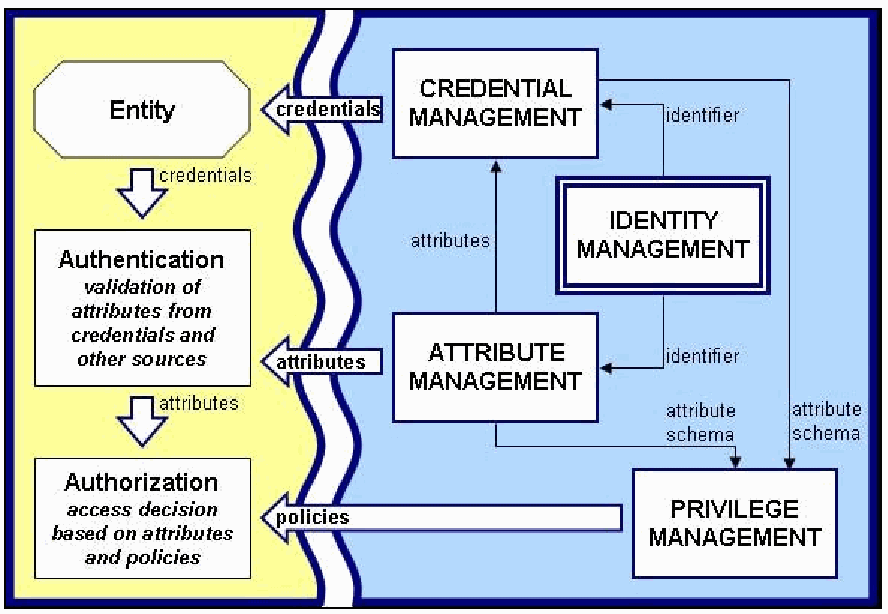
Figure 3-1. Identity Management Overview
図3-1. アイデンティティ管理の概要
Once an entity has been issued a digital identifier, that identifier can be used within that organization to associate other information with the entity, such as role and authorization attributes. The identifier may also become part of the digital credential that authorizes the entity to access different resources in the SOA.
主体にデジタル識別子が発行されると、その識別子を組織内で使用し、役割や認可属性などの他の情報を主体に関連付けることができる（can）。その識別子は、SOA内のさまざまなリソースへのアクセスを主体に認可するデジタルクレデンシャルの一部となる場合もある（may）。
Once registered, an entity must provide a portion of its credentials sufficient to authenticate that entity’s identity. Again, different organizations have different policies for what constitutes sufficient authentication credentials. Many e-commerce sites require the entity to supply a username and password; other organizations may require the entity to submit an X.509 certificate.
登録後、主体は、その身元を認証するのに十分な範囲のクレデンシャルを提示しなければならない（must）。何を十分な認証クレデンシャルとみなすかに関する方針は、組織によって異なる。多くの電子商取引サイトは、主体にユーザー名とパスワードを要求する一方、他の組織は主体にX.509証明書の提出を求める場合がある（may）。
After the entity’s identity has been authenticated, the policy decision point (PDP) of the system or resource to which it desires access must determine whether the now-authenticated entity is also authorized to access the resource. To perform authorization, the PDP relies on privilege management and attribute management. Privilege management enforces the policies that govern entity access. The policy decision to allow or deny access may be based on a single entity attribute such as the entity’s role, or it may require a combination of fine-grained attributes such as the physical location of the entity, its currently active role in the system, and its clearance level. The attribute management system uses the entity’s digital identifier (issued by the IDMS) to locate and retrieve those of the entity’s attributes that are required by the privilege management policy.
主体の身元が認証された後、主体がアクセスを希望するシステムまたはリソースのポリシー決定点（PDP）は、認証済みの主体がそのリソースへのアクセスも認可されているかどうかを判断しなければならない（must）。認可を実行するため、PDPは特権管理と属性管理に依拠する。特権管理は、主体のアクセスを統制するポリシーを適用する。アクセスを許可または拒否するポリシー判断は、主体の役割など単一の属性に基づく場合もあれば（may）、主体の物理的所在地、システム内で現在有効な役割、クリアランスレベルなど、きめ細かな属性の組み合わせを必要とする場合もある（may）。属性管理システムは、主体のデジタル識別子（IDMSが発行）を使用し、特権管理ポリシーが必要とする主体属性を特定して取得する。
3.2.1 Identity Management Architectures
3.2.1 アイデンティティ管理アーキテクチャ
There are three major identity architectures29 available for use in Web services:
Webサービスで利用できる主要なアイデンティティアーキテクチャは3つある。29
Isolated identity management. Isolated identity management is the architecture used by most Web applications on the Internet. In isolated identity management, service providers act both as a credential provider and identity provider. This simplifies management for a single service and negates the need for a TTP to handle either the credentials or providers. The drawback for an isolated identity management system is that every service must know the credentials and identifiers for all authorized requesters. In a large SOA, administering each provider may become unmanageable.
分離型アイデンティティ管理。分離型アイデンティティ管理は、インターネット上のほとんどのWebアプリケーションが使用するアーキテクチャである。分離型アイデンティティ管理では、サービスプロバイダーがクレデンシャルプロバイダーとアイデンティティプロバイダーの両方を兼ねる。これにより単一サービスの管理が簡素化され、クレデンシャルまたはプロバイダーを扱う信頼できる第三者（TTP）が不要となる。分離型アイデンティティ管理システムの欠点は、各サービスが認可されたすべての要求者のクレデンシャルと識別子を把握しなければならない（must）ことである。大規模なSOAでは、各プロバイダーの管理が困難になる場合がある（may）。
Federated identity management. In identity federation, a group of providers agrees to recognize user identifiers from one another. Each service provider acts as a credential and identity provider for a subset of requesters. By issuing assertions (e.g., SAML authentication and attribute assertions), a service provider can supply other providers with the necessary information about the requester without requiring the requester to authenticate a second time. This simplifies identity and credential management for the SOA as a whole, but requires individual services to be aware of and trust assertions from one another. In a single enterprise-wide SOA, it may not be difficult for providers to trust one another, but they may be less willing to trust assertions when the SOA includes providers from different organizations. A requester in the SOA may make a request to a provider and supply an arbitrary assertion to gain access. In identity federation, it is important to develop organizational policies appropriate for the types of data that traverse the SOA.
フェデレーション型アイデンティティ管理。アイデンティティフェデレーションでは、プロバイダー群が互いのユーザー識別子を認識することに合意する。各サービスプロバイダーは、一部の要求者に対するクレデンシャルプロバイダーおよびアイデンティティプロバイダーとして機能する。アサーション（SAML認証アサーションや属性アサーションなど）を発行することで、サービスプロバイダーは、要求者に再認証を求めずに、要求者に関する必要な情報を他のプロバイダーに提供できる（can）。これによりSOA全体のアイデンティティおよびクレデンシャル管理が簡素化されるが、個々のサービスは互いのアサーションを認識し、信頼する必要がある。単一企業全体のSOAでは、プロバイダー同士が信頼することは難しくない場合がある（may）が、異なる組織のプロバイダーが含まれるSOAでは、互いのアサーションを信頼する意欲が低い場合がある（may）。SOA内の要求者は、アクセスを得るため、プロバイダーに要求を行い、任意のアサーションを提示する場合がある（may）。SOAを通過するデータの種類に適した組織ポリシーを策定することは、アイデンティティフェデレーションにおいて重要である。
Centralized identity management. In centralized identity management, providers rely on a single TTP to provide credentials and identifiers to requesters. Centralized identity management is similar to federated identity management in that the identity and credential providers supply assertions directly to service providers, allowing requesters access without authenticating a second time. In this architecture, individual service providers need only be aware of the identity provider. In a cross-organizational SOA, organizations may be willing to trust another organization's identity providers more than individual services. A major drawback of the centralized identity management architecture is that the identity providers may act as a single point of failure. Should all of an organization's identity providers suffer a DoS, it will not be possible for providers to accept any requests.
集中型アイデンティティ管理。集中型アイデンティティ管理では、プロバイダーは、要求者にクレデンシャルと識別子を提供する単一のTTPに依拠する。集中型アイデンティティ管理は、アイデンティティおよびクレデンシャルのプロバイダーがアサーションをサービスプロバイダーに直接提供し、要求者が再度認証を受けなくてもアクセスできる点で、フェデレーション型アイデンティティ管理に類似する。このアーキテクチャでは、個々のサービスプロバイダーはアイデンティティプロバイダーだけを認識していればよい。組織間SOAでは、組織は個々のサービスよりも、他組織のアイデンティティプロバイダーを進んで信頼する場合がある（may）。集中型アイデンティティ管理アーキテクチャの大きな欠点は、アイデンティティプロバイダーが単一障害点となり得る（may）ことである。組織のアイデンティティプロバイダーすべてがDoS攻撃を受けた場合、プロバイダーは一切の要求を受け付けられなくなる。
When developing a new SOA or updating an existing SOA, it is important to consider the size of the SOA and the organization's priorities. One or more of these architectures may not be suitable for SOAs of a certain size or may violate organizational policies.
新しいSOAを開発する場合、または既存のSOAを更新する場合、SOAの規模と組織の優先事項を考慮することが重要である。これらのアーキテクチャのうち1つ以上が、特定の規模のSOAに適さない場合（may）、または組織ポリシーに違反する場合がある（may）。
3.2.2 Laws of Identity
3.2.2 アイデンティティに関する原則
In May 2005, Kim Cameron, Identity and Access Architect at Microsoft, authored The Laws of Identity 30 based on his research into the requirements for a unified identity metasystem, a system of identity systems that exposes a unified interface for disparate underlying identity technologies. Organizations that follow these laws when developing or deploying an identity management architecture will be able to better support cross-organizational collaboration. The seven laws are as follows:
2005年5月（May 2005）、MicrosoftのアイデンティティおよびアクセスアーキテクトであるKim Cameronは、異なる基盤アイデンティティ技術に統一インターフェースを提供するアイデンティティシステム群である統合アイデンティティメタシステムの要件を研究し、『The Laws of Identity』30を執筆した。アイデンティティ管理アーキテクチャの開発または展開にあたり、これらの原則に従う組織は、組織間協業をよりよく支援できる（will）。7つの原則は次のとおりである。
User Control and Consent. Identity systems must not reveal identifying information without the user's consent.
ユーザーによる制御と同意。アイデンティティシステムは、ユーザーの同意なしに、個人を特定できる情報を開示してはならない（must not）。
Minimal Disclosure for a Constrained Use. Identity systems must disclose the least amount of identifying information while simultaneously limiting its use as much as possible.
用途を制限した最小限の開示。アイデンティティシステムは、個人を特定できる情報の開示を最小限にすると同時に、その利用を可能な限り制限しなければならない（must）。
Justifiable Parties. Identity systems must disclose identifying information only to parties having a justifiable need to know it.
正当な当事者。アイデンティティシステムは、知る正当な必要性を有する当事者に限って、個人を特定できる情報を開示しなければならない（must）。
Directed Identity. An identity system must support both omni-directional and uni-directional identifiers. An omni-directional identifier can be shared with any third party while a uni-directional identifier can only be used between two parties.
指向性アイデンティティ。アイデンティティシステムは、全方向識別子と一方向識別子の両方をサポートしなければならない（must）。全方向識別子はあらゆる第三者と共有できる（can）が、一方向識別子は2者間でのみ使用できる（can）。
Pluralism of Operators and Technologies. An identity system must support multiple identity technologies and multiple identity providers.
運用者と技術の多元性。アイデンティティシステムは、複数のアイデンティティ技術と複数のアイデンティティプロバイダーをサポートしなければならない（must）。
Human Integration. The identity system must define the human user as a component of the distributed system.
人間の統合。アイデンティティシステムは、分散システムの構成要素として人間のユーザーを定義しなければならない（must）。
Consistent Experience Across Contexts. The identity system must provide users with a consistent experience while enabling support for different technologies and providers.
コンテキスト間で一貫した体験。アイデンティティシステムは、異なる技術およびプロバイダーのサポートを可能にしつつ、ユーザーに一貫した体験を提供しなければならない（must）。
Each of the major identity architectures discussed in Section 3.2.1 can be configured to follow these laws. By harnessing these laws, identity architectures can securely and adequately share identifying information amongst themselves so that large organizations or multiple organizations with differing policies and identity management architectures can better support a SOA.
第3.2.1節で論じた主要な各アイデンティティアーキテクチャは、これらの原則に従うよう構成できる（can）。これらの原則を活用することで、アイデンティティアーキテクチャは個人を特定できる情報を相互に安全かつ適切に共有できる（can）。これにより、規模の大きな組織、または方針やアイデンティティ管理アーキテクチャが異なる複数組織が、SOAをよりよく支援できる（can）。
3.2.3 Identity Management and Web Services
3.2.3 アイデンティティ管理とWebサービス
Web services provide a standardized mechanism for communicating and sharing information across organizational boundaries. To maintain accountability and ensure that only authorized users gain access to restricted operations or information, Web services must be able to communicate identifying information across these organizational boundaries. According to Axel Buecker and Heather Hinton31, successful cross-organizational Web services require a way for providers to securely identify and provide services to authorized requesters and a way for requesters to securely invoke Web services with the necessary credentials.
Webサービスは、組織の境界を越えて情報を通信・共有するための標準化された仕組みを提供する。説明責任を維持し、認可されたユーザーのみが制限対象の操作または情報にアクセスすることを確実にするため、Webサービスは組織の境界を越えて個人特定情報を通信できなければならない（must）。Axel BueckerおよびHeather Hinton31によると、組織間Webサービスを成功させるには、プロバイダーが認可された要求者を安全に識別し、サービスを提供する方法と、要求者が必要なクレデンシャルを用いてWebサービスを安全に呼び出す方法が必要である。
Without an identity management framework, it becomes difficult for Web services to securely identify one another or provide recognizable credentials. For example, organization A may use X.509 certificates to identify Web services and individual users, while organization B may use Kerberos tickets for identification. If a requester from B sends a SOAP message with a Kerberos ticket to a provider from A, the provider will not be able to authorize the requester and will deny access. Identity management frameworks for Web services abstract this information and allow Web servers to securely identify one another regardless of the underlying identification technology. According to Buecker and Hinton, organizations need only develop a single set of Web services to facilitate Web service identity management across organizational boundaries:
アイデンティティ管理フレームワークがなければ、Webサービスが互いを安全に識別したり、認識可能なクレデンシャルを提示したりすることは困難になる。例えば、組織AがWebサービスと個々のユーザーの識別にX.509証明書を使用する場合がある（may）。一方、組織Bは識別にKerberosチケットを使用する場合がある（may）。Bの要求者がKerberosチケットを含むSOAPメッセージをAのプロバイダーに送信すると、プロバイダーは要求者を認可できず、アクセスを拒否する（will）。Webサービス向けアイデンティティ管理フレームワークはこの情報を抽象化し、基盤となる識別技術にかかわらず、Webサーバーが互いを安全に識別できるようにする。BueckerとHintonによると、組織間のWebサービスアイデンティティ管理を容易にするには、組織はWebサービス一式だけを開発すればよい（will）：
Trust services. These services issue and validate authentication tokens for use across boundaries. Trust services can also exchange these tokens with a local identity provider.
信頼サービス。これらのサービスは、境界を越えて使用する認証トークンを発行および検証する。信頼サービスは、これらのトークンをローカルのアイデンティティプロバイダーと交換することもできる（can）。
Authentication and validation services. These services are provided by the local identity providers, granting tokens to authenticated users and validating tokens presented by a trust service.
認証および検証サービス。これらのサービスはローカルのアイデンティティプロバイダーによって提供され、認証済みユーザーにトークンを付与し、信頼サービスが提示するトークンを検証する。
Identity and attribute mapping services. Often included within the trust services, these services map supplied identifying information or attributes to their local equivalents.
アイデンティティおよび属性マッピングサービス。多くの場合、信頼サービスに含まれるこれらのサービスは、提供された個人特定情報または属性を、対応するローカル情報にマッピングする。
User lifecycle management services. These services allow the establishment or mapping of identifying information and attributes for a user from a different organization.
ユーザーライフサイクル管理サービス。これらのサービスは、別組織のユーザーについて、個人特定情報および属性を確立またはマッピングできるようにする。
Authorization services. Often implemented locally for individual services, authorization services can process the credentials provided by the sender, query the appropriate security policy and determine whether the sender is allowed to perform the requested action.
認可サービス。個々のサービス向けにローカルで実装されることが多い認可サービスは、送信者が提供したクレデンシャルを処理し、適切なセキュリティポリシーを照会し、送信者が要求された操作を実行することを認可されているかどうかを判断できる（can）。
Identity management systems may provide these abstract services in various configurations, with some being explicit Web services while others are implicitly supplied. Should an organization choose to implement its own identity management architecture, it should determine which of these services are necessary and implement them accordingly.
アイデンティティ管理システムは、これらの抽象サービスをさまざまな構成で提供する場合があり（may）、明示的なWebサービスとして提供されるものもあれば、暗黙的に提供されるものもある。組織が独自のアイデンティティ管理アーキテクチャを実装することを選択した場合、これらのサービスのうちどれが必要かを判断し、それに応じて実装すべきである（should）。
3.3 Establishing Trust between Services
3.3 サービス間の信頼の確立
For SAML or WS-Security to be useful on a large scale, trust relationships need to be established between remote Web services. A signed SAML assertion or WS-Security message is of no use if the receiver of the assertion cannot guarantee that the information asserted is trustworthy.
SAMLまたはWS-Securityを大規模に有効活用するには、リモートWebサービス間に信頼関係を確立する必要がある。アサーションの受信者が、主張された情報の信頼性を保証できない（cannot）のであれば、署名付きSAMLアサーションまたはWS-Securityメッセージは役に立たない。
In the original SAML specification, only direct trust relationships are discussed—these are referred to as pairwise circles of trust. By contrast, SAML v2.0 provides two additional trust models for SAML: brokered trust and community trust.
初期のSAML仕様では直接的な信頼関係のみを扱い、これらはペアワイズ信頼サークルと呼ばれる。これに対し、SAML v2.0は、SAMLの信頼モデルとしてブローカ型信頼とコミュニティ信頼という2つを追加で定めている。
Pairwise trust circles are the tightest and most direct form of trust relationship. Each entity that is authorized to communicate with another must share its key information. In a pairwise trust circle, if a SAML assertion can be verified, it is from an authorized entity. One major drawback of pairwise trust is that each entity must have a copy of the public key from every other entity with which it communicates, making the system inherently unscalable.
ペアワイズ信頼サークルは、最も緊密で直接的な信頼関係の形態である。別の主体との通信を認可された各主体は、鍵情報を共有しなければならない（must）。ペアワイズ信頼サークルでは、SAMLアサーションを検証できる（can）なら、それは認可された主体からのものである。ペアワイズ信頼の大きな欠点は、各主体が通信相手となる他のすべての主体の公開鍵の複製を保持しなければならない（must）ため、システムが本質的に拡張不能になることである。
Brokered trust models are an extension of the pairwise trust model. When two services communicate that do not know each other’s keys, a TTP is used to exchange the key information for them. This scales better than the pairwise trust circle because adding a new service provider involves simply exchanging its key information with the TTP. The Web service providers have to trust that the TTP has not been compromised. This differs from the pairwise model in which each service provider is independently responsible for trust.
ブローカ型信頼モデルはペアワイズ信頼モデルを拡張したものである。互いの鍵を知らない2つのサービスが通信する場合、TTPを使用して両者の鍵情報を交換する。この方式は、新しいサービスプロバイダーを追加する際に、その鍵情報をTTPと交換するだけでよいため、ペアワイズ信頼サークルより拡張性が高い。Webサービスプロバイダーは、TTPが侵害されていないことを信頼しなければならない。これは、各サービスプロバイダーが個別に信頼の責任を負うペアワイズモデルとは異なる。
Another difficulty with the brokered trust model is that there may be a situation where the two services can communicate with the TTP but should not communicate with each other. In the pairwise model, entities that should not communicate with one another would simply not have the appropriate cryptographic keys to do so, preventing any messages from being passed. In the brokered trust model, each entity can communicate with the TTP and thus with other entities. Either the TTP or the individual entities must know who should and should not communicate with one another.
ブローカ型信頼モデルのもう1つの課題は、2つのサービスがTTPとは通信できる（can）が、互いには通信すべきでない（should）場合がある（may）ことである。ペアワイズモデルでは、互いに通信すべきでない（should）主体には、そのための適切な暗号鍵を与えず、メッセージが渡されないようにする（would）。ブローカ型信頼モデルでは、各主体がTTPと通信できる（can）ため、他の主体とも通信できる。TTPまたは個々の主体のいずれかが、どの主体が相互に通信すべき（should）か、また通信すべき（should）でないかを把握しなければならない（must）。
The community trust model relies on an external PKI for establishing trust. This trust model assumes that the PKI interfaces are implemented correctly and that none of the certificate authorities have been compromised. This model provides simplicity similar to that of the pairwise trust model and scalability superior to the brokered trust model. If the remote entity’s key can be retrieved through the PKI interface, a trusted authority has signed its key and it is safe to communicate with it. There must be a mechanism in place preventing two entities from communicating against policy even if they can retrieve each other’s keys. This could be done either through PKI or the individual entities. Adding a new service is as simple as adding its key to the PKI.
コミュニティ信頼モデルは、信頼確立に外部PKIを利用する。この信頼モデルは、PKIインターフェースが正しく実装され、どの認証局も侵害されていないことを前提とする。このモデルはペアワイズ信頼モデルと同程度に単純であり、ブローカ型信頼モデルより拡張性に優れる。PKIインターフェースを介してリモート主体の鍵を取得できる（can）なら、信頼された機関がその鍵に署名しており、その主体と安全に通信できる。ポリシーに反して2主体が通信することを防ぐ機構が必要であり（must）、両者が互いの鍵を取得できる場合も同様である（can）。これはPKIまたは個々の主体によって実現できる。新たなサービスを追加するのは、PKIにその鍵を追加するだけで簡単に行える。
Signed SAML assertions have the same security shortcomings as any technology that uses public key cryptography: the private key must not be compromised. The best way to protect against this situation is to keep keys secured and generate new keys on a regular basis. Once an attacker has compromised an entity’s private key, that entity can be impersonated. 32
署名付きSAMLアサーションは、公開鍵暗号を使用するすべての技術と同じセキュリティ上の弱点を持つ。秘密鍵を侵害されてはならない（must）。この状況から保護する最善の方法は、鍵を安全に保管し、定期的に新しい鍵を生成することである。攻撃者が主体の秘密鍵を侵害すると、その主体になりすますことができる（can）。32
Whether Web services need to trust one another within a single organization or across multiple organizational boundaries, trust federation frameworks provide support for all of the aforementioned trust models. Section 3.3.2 discusses the various frameworks available for federation of trust.
Webサービスが単一組織内で互いを信頼する必要がある場合も、複数組織の境界を越えて信頼する必要がある場合も、信頼フェデレーションフレームワークは前述のすべての信頼モデルをサポートする。第3.3.2節では、信頼フェデレーションに利用可能な各種フレームワークを論じる。
3.3.1 Federation of Trust
3.3.1 信頼のフェデレーション
Trust in distributed computing environments is usually verified using PKI certificates signed by a certificate authority or by passing custom tokens generated by a TTP, as is done in a Kerberos environment. Traditionally, these trust mechanisms have worked well within a single organization. Once information sharing crosses organizational boundaries, entities communicating with one another do not necessarily have the same source of trust. Before the advent of Web services, information sharing across organizational boundaries traditionally was handled by using a proxy that bridges the boundary or by cross-signing certificates.
分散コンピューティング環境における信頼は、通常、認証局が署名したPKI証明書を使用するか、Kerberos環境と同様にTTPが生成したカスタムトークンを渡すことで検証される。従来、これらの信頼機構は単一組織内で有効に機能してきた。情報共有が組織境界を越えると、相互に通信する主体が同じ信頼の起点を持つとは限らない。Webサービスが登場する以前、組織境界を越えた情報共有は、従来、境界を橋渡しするプロキシを使用するか、証明書に相互署名することで処理されていた。
In a SOA, Web services from multiple organizations should be able trust one another without requiring extensive restructuring of the trust environment. To this end, trust federation frameworks can be configured to use an organization’s pre-existing authentication mechanisms. Liberty Alliance provides both Web application and Web service federation using SAML to perform the trust brokering. WS-Federation allows different security realms to federate by defining trust brokers, who will validate security tokens used between Web services using WS-Trust.
SOAでは、複数組織のWebサービスは、信頼環境の大規模な再構築を必要とせず、互いを信頼できるべきである（should）。このため、信頼フェデレーションフレームワークは、組織が既に備えている認証機構を使用するよう構成できる（can）。Liberty Allianceは、信頼の仲介を行うためにSAMLを用い、WebアプリケーションとWebサービスの両方のフェデレーションを提供する。WS-Federationは信頼ブローカーを定義することで異なるセキュリティ領域のフェデレーションを可能にし、そのブローカーはWS-Trustを使用してWebサービス間で用いられるセキュリティトークンを検証する（will）。
The following subsections provide additional information on the trust frameworks identified above. It must be noted, however, that these frameworks continue to evolve. Thus, the material provided is meant to offer a current snapshot of the features they offer as of this guide’s date of publication.
以下の各節では、前述した信頼フレームワークについて追加情報を示す。ただし、これらのフレームワークは進化を続けていることに留意しなければならない（must）。したがって、ここに示す内容は、本ガイドの発行日時点で提供されている機能の現状を示すことを目的とする。
3.3.2 Trust Federation Frameworks
3.3.2 信頼フェデレーションのフレームワーク
The following subsections provide additional details of the Liberty Alliance and WS-Trust frameworks. These standards provide similar features and functionality using different techniques and have been designed with different goals in mind. Determining which framework is best for a particular organization depends greatly on what is deployed and on the organization’s architectural goals.
以下の各節では、Liberty AllianceとWS-Trustのフレームワークについて詳しく説明する。これらの標準は異なる技法を用いて類似の機能を提供し、それぞれ異なる目標を念頭に設計されている。どのフレームワークが特定の組織に最適かは、導入済みの仕組みと組織のアーキテクチャ目標に大きく左右される。
3.3.2.1 Liberty Alliance
3.3.2.1 Liberty Alliance
The Liberty Alliance aims to develop a standards-based identity federation framework suitable for businesses and governments. Liberty Alliance-compliant products can interact with one another within a federated environment, allowing organizations to federate identities without having to agree on the same providers.
Liberty Allianceは、企業および政府に適した標準ベースのアイデンティティフェデレーションフレームワークの開発を目指している。Liberty Alliance準拠製品は、フェデレーション環境内で相互運用できる（can）。これにより組織は、同じプロバイダーに合意することなくアイデンティティを連携できる。
The Liberty Alliance has defined the Identity Web Services Framework, which defines how Web services can interact on a user’s behalf through appropriate use of SAML by defining several services, including the following:
Liberty AllianceはIdentity Web Services Frameworkを定義している。このフレームワークは、複数のサービスを定義することで、SAMLを適切に使用し、Webサービスがユーザーに代わってどのように相互作用できる（can）かを定める。これらのサービスには以下が含まれる。
Discovery Services. Allow Web services to dynamically look up the identity providers of a particular principal
ディスカバリサービス。特定のプリンシパルのアイデンティティプロバイダーをWebサービスが動的に検索することを可能にする。
Interaction Services. Provide a mechanism for getting the principal’s permission to perform various actions
インタラクションサービス。さまざまな操作を実行するため、プリンシパルの許可を得る仕組みを提供する。
Data Services. Provide the Web service functionality that will be used on behalf of the principal
データサービス。プリンシパルに代わって使用されるWebサービス機能を提供する（will）。
•Identity Services. Provide access to information about the principal that may not be provided by the SAML assertion associated with the Web service request.
•アイデンティティサービス。Webサービス要求に関連付けられたSAMLアサーションでは提供されない可能性がある、主体に関する情報へのアクセスを提供する。
3.3.2.2 WS-Federation and WS-Trust
3.3.2.2 WS-FederationおよびWS-Trust
WS-Federation and WS-Trust were developed by IBM, Microsoft, RSA, Verisign, BEA, and several other vendors to create an identity federation system based on extensions to WS-Security that uses the core Web services protocols: SOAP and WSDL. WS-SecurityPolicy is an extension of the WS-Policy framework that allows a Web service to define a set of requirements detailing how messages should be secured and what tokens are required by the Web service. It is used by WS-Trust to determine what tokens are needed to interact with a particular Web service. As discussed in Section 3.1.2, these are referred to as claims.
WS-FederationおよびWS-Trustは、IBM、Microsoft、RSA、Verisign、BEA、およびその他複数のベンダーにより、コアWebサービスプロトコルであるSOAPとWSDLを使用し、WS-Securityを拡張するアイデンティティフェデレーションシステムとして開発された。WS-SecurityPolicyはWS-Policyフレームワークの拡張であり、メッセージをどのように保護すべきか（should）、およびWebサービスがどのトークンを必要とするかを詳細に定める一連の要件をWebサービスが定義できるようにする。これはWS-Trustが、特定のWebサービスとやり取りするために必要なトークンを判断する際に使用される。第3.1.2節で説明したように、これらはクレームと呼ばれる。
WS-Trust is used to exchange trust tokens between Web services. WS-Trust is an extension to WS-Security that provides methods for issuing, renewing, and validating security tokens as well as methods for establishing and brokering trust relationships between Web services. If the requester does not supply appropriate claims, it can use the security policy declared by WS-SecurityPolicy to determine the URI of the provider’s Security Token Service (STS), who can provide the requester with the appropriate claims. Additionally, WS-Trust supports multi-messaging exchanges, allowing providers to use a challenge-response mechanism for authorization. Because WS-Trust builds upon WS-Security, claims can be anything from a digital signature to a X.509 certificate or an XML-based token such as a SAML assertion.
WS-Trustは、Webサービス間で信頼トークンを交換するために使用される。WS-TrustはWS-Securityの拡張であり、セキュリティトークンの発行、更新、検証の方法と、Webサービス間の信頼関係を確立・仲介する方法を提供する。要求者が適切なクレームを提示しない場合、要求者はWS-SecurityPolicyで宣言されたセキュリティポリシーを用いて、適切なクレームを要求者に提供できる提供者のセキュリティトークンサービス（STS）のURIを特定できる。さらに、WS-Trustは複数メッセージによる交換をサポートしており、提供者は認可にチャレンジレスポンス方式を利用できる。WS-TrustはWS-Securityを基盤としているため、クレームにはデジタル署名からX.509証明書、SAMLアサーションのようなXMLベースのトークンまで、あらゆるものを用いることができる。
WS-Federation expands on WS-Trust by providing various protocols by which STSs (interchangeably called Identity Providers in WS-Federation), requesters, and providers can interact with one another to allow Web services to trust each other across organizational boundaries. Each organization is a separate trust realm. WS-Federation allows Web services to communicate between multiple trust realms. Additionally, WS-Federation provides two profiles for how requesters interact with providers and STSs: the active requester profile and the passive requester profile. The passive requester profile details how messages should be passed between a requester Web browser, the provider, the Identity Providers (IPs) and STSs of both organizations so that WS-Federation can be used within the context of Web applications, providing users with a single sign-on experience. The active requester profile details how requesters should interact with the provider and the IP/STSs to access a provider in another trust realm.
WS-FederationはWS-Trustを拡張し、STS（WS-FederationではIdentity Providerとも呼ばれる）、要求者、およびプロバイダーが相互にやり取りするための各種プロトコルを提供する。これによりSTS、要求者、およびプロバイダーが相互にやり取りできる（can）ようになり、Webサービスが組織境界を越えて互いを信頼できるようになる。各組織は個別の信頼領域である。WS-Federationにより、Webサービスは複数の信頼領域間で通信できる。さらにWS-Federationは、要求者がプロバイダーおよびSTSとやり取りする方法として、アクティブ要求者プロファイルとパッシブ要求者プロファイルの2つを定める。パッシブ要求者プロファイルは、要求者のWebブラウザー、プロバイダー、および両組織のIdentity Provider（IP）とSTS間でメッセージをどのように受け渡すべきか（should）を詳述する。これによりWS-FederationをWebアプリケーション内で使用できる（can）ようにし、ユーザーにシングルサインオン環境を提供する。アクティブ要求者プロファイルは、要求者が別の信頼領域にあるプロバイダーへアクセスするために、プロバイダーおよびIP／STSとどのようにやり取りすべきか（should）を詳述する。
3.4 Describing Web Services Policies (WS-Policy)
3.4 Webサービスのポリシー（WS-Policy）の記述
WSDL describes how to communicate with a Web service by detailing the protocol bindings and message formats the Web service expects. In many cases, knowledge of protocol bindings and message formats is not sufficient for requesters to dynamically bind to the provider. WSDL is limited to describing what needs to be placed in the message itself; it does not specify what type of metadata should be supplied, such as how the message will be authenticated or what portions of the message should be signed. To this end, Microsoft, IBM, BEA and others developed the Web Services Policy (WS-Policy) Framework, which allows providers to express the capabilities, requirements and characteristics of the Web service.
WSDLは、Webサービスが期待するプロトコルバインディングとメッセージ形式を詳述して、Webサービスとの通信方法を記述する。多くの場合、要求者がプロバイダーに動的にバインドするには、プロトコルバインディングとメッセージ形式に関する知識だけでは不十分である。WSDLが記述できるのはメッセージ自体に何を含める必要があるかに限られ、メッセージがどのように認証される（will）か、またはメッセージのどの部分に署名すべきか（should）など、どの種類のメタデータを提供すべきか（should）を指定しない。これを受け、Microsoft、IBM、BEAなどはWeb Services Policy（WS-Policy）Frameworkを開発した。これによりプロバイダーは、Webサービスの機能、要件、および特性を表明できる。
WS-Policy requirements can range from specific on-the-wire requirements, such as requiring WS-Security encryption and signatures, to more abstract requirements, such as QoS or privacy requirements. A WS-Policy policy expression can provide senders with the essential metadata to fully automate the task of dynamic binding. A policy expression contains a set of policy alternatives encompassing sets of assertions.
WS-Policyの要件は、WS-Securityによる暗号化や署名の要求など、通信時の具体的な要件から、QoSまたはプライバシー要件などの抽象的な要件まで幅広く設定できる（can）。WS-Policyポリシー式は、動的バインディングの作業を完全に自動化するために必要なメタデータを送信者に提供できる（can）。ポリシー式は、複数のアサーション群を包含する一連のポリシー代替案で構成される。
Policy assertions are defined for a number of WS-* specifications, including WS-SecurityPolicy, WS-ReliableMessaging Policy Assertion (WS-RM Policy) and WS-Addressing WSDL Binding. The WS-Policy Primer34 defines how these specifications can be used within a policy expression. As of mid-2007, there are three primary specifications defining WS-Policy assertions:
WS-SecurityPolicy、WS-ReliableMessaging Policy Assertion（WS-RM Policy）、およびWS-Addressing WSDL Bindingなど、複数のWS-*仕様に対してポリシーアサーションが定義されている。WS-Policy Primer34は、これらの仕様をポリシー式内でどのように使用できる（can）かを定義する。2007年半ば時点で、WS-Policyアサーションを定義する主要仕様は3つある。
WS-SecurityPolicy defines assertions to specify integrity, confidentiality, and information about security tokens.
WS-SecurityPolicyは、完全性、機密性、およびセキュリティトークンに関する情報を指定するアサーションを定義する。
WS-RM Policy defines assertions that can be used to specify how a Web service uses WS-ReliableMessaging.
WS-RM Policyは、WebサービスによるWS-ReliableMessagingの使用方法を指定するために使える（can）アサーションを定義する。
WS-Addressing WSDL Binding defines elements that can be used within a WSDL descriptor to specify the use of WS-Addressing.
WS-Addressing WSDL Bindingは、WS-Addressingの使用を指定するためにWSDL記述子内で使用できる（can）要素を定義する。
Figure 3-2 shows a sample WS-Policy expression.35
図3-2にWS-Policy式の例を示す。35
<Policy> <All> <wsap:UsingAddressing/> <sp:TransportBinding> <All> <sp:TransportToken> <Policy>
<Policy> <All> <wsap:UsingAddressing/> <sp:TransportBinding> <All> <sp:TransportToken> <Policy>
<sp:HttpsToken RequireClientCertificate=”true”/> </Policy> </sp:TransportToken> <sp:AlgorithmSuite> <Policy> <sp:Basic256Sha256Rsa15/> </Policy> </sp:AlgorithmSuite>
<sp:HttpsToken RequireClientCertificate=”true”/> </Policy> </sp:TransportToken> <sp:AlgorithmSuite> <Policy> <sp:Basic256Sha256Rsa15/> </Policy> </sp:AlgorithmSuite>
</All> </sp:TransportBinding> </All>
</All> </sp:TransportBinding> </All>
</Policy>
</Policy>
Figure 3-2. Sample WS-Policy Expression
図3-2. WS-Policy式の例
The root expression of the example in Figure 3-2 is an All tag, which is used to specify that all of the contained expressions must be met by the requester for it to comply with the provider policy. The All tag contains the following expressions:
図3-2の例のルート式はAllタグである。このタグは、プロバイダーポリシーに準拠するため、要求者がその中に含まれるすべての式を満たす必要がある（must）ことを示す。Allタグには以下の式が含まれる。
wsap:UsingAddressing, which specifies that requesters should include WS-Addressing information in the SOAP header.
wsap:UsingAddressing。要求者がSOAPヘッダーにWS-Addressing情報を含めるべきである（should）ことを指定する。
sp:TransportBinding, which specifies that requesters should use TLS to secure the SOAP message and defines the required parameters.
sp:TransportBinding。要求者がSOAPメッセージを保護するためTLSを使用すべきである（should）ことを指定し、必要なパラメーターを定義する。
The sp:TransportBinding element contains an All tag containing two expressions:
sp:TransportBinding要素には、2つの式を含むAllタグがある。
sp:TransportToken, which specifies what type of token the sender must provide. In this example, sp:HttpsToken indicates that senders must provide a client certificate through TLS.
sp:TransportToken。送信者が提供しなければならない（must）トークンの種類を指定する。この例ではsp:HttpsTokenにより、送信者はTLS経由でクライアント証明書を提示しなければならない（must）。
sp:AlgorithmSuite specifies what algorithms the sender's TLS library must support. In this example, sp:Basic256Sha256Rsa15, defined by WS-SecurityPolicy, is used to indicate that the Advanced Encryption Standard (AES) algorithm should be used with a key size of 256 bits for symmetric cryptography, the 256-bit Secure Hash Algorithm (SHA) should be used for hashing, and version 1.5 of the RSA encryption algorithm for asymmetric cryptography.
sp:AlgorithmSuiteは、送信者のTLSライブラリがサポートしなければならない（must）アルゴリズムを指定する（原文表記：sender's）。この例では、WS-SecurityPolicyが定義するsp:Basic256Sha256Rsa15を使用し、対称暗号では鍵長256ビットのAdvanced Encryption Standard（AES）を使用すべきである（should）こと、ハッシュ計算には256ビットのSecure Hash Algorithm（SHA）を使用すべきである（should）こと、および非対称暗号にはRSA暗号アルゴリズムのバージョン1.5を使用することを示す。
WS-Policy can also be used to describe the parameters necessary when using WS-ReliableMessaging to ensure message delivery. Figure 3-3 shows a policy defining an inactivity timeout of 2 seconds, a base retransmission interval of 5 seconds using the exponential backoff algorithm and an acknowledgement interval of 5 seconds.
WS-Policyは、メッセージ配信を確実にするためWS-ReliableMessagingを使用する際に必要なパラメーターを記述するためにも使用できる（can）。図3-3は、非アクティブタイムアウトを2秒、指数バックオフアルゴリズムを使用する基本再送間隔を5秒、確認応答間隔を5秒とするポリシーを示す。
<Policy> <wsrm:RMAssertion> <All>
<Policy> <wsrm:RMAssertion> <All>
<wsrm:InactivityTimeout Milliseconds=”2000”/> <wsrm:BaseRetransmissionInterval Milliseconds=”5000”/> <wsrm:ExponentialBackoff/> <wsrm:AcknowledgementInterval Milliseconds=”5000”/> </All> </wsrm:RMAssertion>
<wsrm:InactivityTimeout Milliseconds=”2000”/> <wsrm:BaseRetransmissionInterval Milliseconds=”5000”/> <wsrm:ExponentialBackoff/> <wsrm:AcknowledgementInterval Milliseconds=”5000”/> </All> </wsrm:RMAssertion>
</Policy>
</Policy>
Figure 3-3. Sample WS-ReliableMessaging Policy Expression
図3-3. WS-ReliableMessagingポリシー式の例
Receivers have the option of specifying whether senders should use TLS or WS-Security to secure SOAP messages. Some receivers may wish to let senders decide which option to support. In this case, the ExactlyOne expression would be used to indicate the option in a manner similar to Figure 3-4.
受信側は、送信者がSOAPメッセージを保護するためにTLSまたはWS-Securityのどちらを使用すべきか（should）を指定できる。受信側によっては、送信者にサポートする方式を選ばせたい場合がある（may）。この場合、図3-4と同様に、選択肢を示すExactlyOne式が使用されるだろう（would）。
<Policy> <ExactlyOne>
<Policy> <ExactlyOne>
<sp:TransportBinding>...</sp:TransportBinding> <All> <sp:SignedParts> <All>
<sp:TransportBinding>...</sp:TransportBinding> <All> <sp:SignedParts> <All>
<sp:Body/> <sp:Header/> </All> </sp:SignedParts> <sp:EncryptedParts> <Policy> <sp:Body/> </Policy> </sp:EncryptedParts>
<sp:Body/> <sp:Header/> </All> </sp:SignedParts> <sp:EncryptedParts> <Policy> <sp:Body/> </Policy> </sp:EncryptedParts>
</All> </ExactlyOne> </Policy>
</All> </ExactlyOne> </Policy>
Figure 3-4. Sample WS-Policy Expression Using ExactlyOne
図3-4. ExactlyOneを使用したWS-Policy式の例
The ExactlyOne expression in Figure 3-4 contains two expressions related to securing Web service messages between the requester and provider. Senders must choose exactly one of these options when sending a SOAP message to this service:
図3-4のExactlyOne式には、要求者とプロバイダー間のWebサービスメッセージ保護に関する2つの式が含まれる。送信者は、このサービスにSOAPメッセージを送信する際、これらの選択肢のいずれか1つだけを選ばなければならない（must）。
sp:TransportBinding, which indicates requesters may use SSL/TLS to secure messages
sp:TransportBinding。要求者がメッセージの保護にSSL/TLSを使用してもよい（may）ことを示す。
All, which contains two WS-SecurityPolicy expressions that must be followed when using WS-Security in place of SSL/TLS:
All。SSL/TLSの代わりにWS-Securityを使用する際に従わなければならない（must）WS-SecurityPolicy式が2つ含まれる。
•sp:SignedParts, which indicates that both the SOAP message body and header must be signed
•sp:SignedParts。SOAPメッセージの本文とヘッダーの両方に署名しなければならない（must）ことを示す。
•sp:EncryptedParts, which indicates that the SOAP message body must be encrypted.
•sp:EncryptedParts。SOAPメッセージの本文を暗号化しなければならない（must）ことを示す。
Each policy expression can contain an All expression, an ExactlyOne expression or a policy expression element from a WS-Policy grammar, such as WS-Security, WS-RM, or WS-Addressing. Each of these expressions may contain another Policy expression. This level of flexibility allows providers to completely specify the requirements that must be met by requesters beyond those described in the provider's WSDL description.
各ポリシー式には、All式、ExactlyOne式、またはWS-Security、WS-RM、WS-AddressingなどWS-Policy文法に含まれるポリシー式要素を含めることができる（can）。これらの各式には、別のPolicy式が含まれる場合がある（may）。この柔軟性により、プロバイダーは、自身のWSDL記述に記載された要件を超えて、要求者が満たさなければならない（must）要件を完全に指定できる。
Policy expressions are external to the metadata stored in UDDI and WSDL, so providers must rely on a separate mechanism for distributing WS-Policy information: WS-MetadataExchange or WS-PolicyAttachment. The WS-MetadataExchange specification defines an encapsulation format for Web service metadata (such as WS-Policy expressions), a mechanism for metadata-driven message exchange, and relies on the WS-Transfer specification to provide a Web service endpoint from which requesters can retrieve the metadata. The WS-PolicyAttachment specification defines how to reference policies from WSDL definitions, how to associate policies with deployed endpoints, and how to associate policies with UDDI entries.
ポリシー式はUDDIやWSDLに保存されるメタデータの外部にあるため、プロバイダーはWS-Policy情報を配布するための別の仕組み（WS-MetadataExchangeまたはWS-PolicyAttachment）に依存しなければならない（must）。WS-MetadataExchange仕様は、Webサービスのメタデータ（WS-Policy式など）のカプセル化形式と、メタデータ駆動型メッセージ交換の仕組みを定義し、要求者がメタデータを取得できる（can）Webサービスエンドポイントを提供するためWS-Transfer仕様に依存する。WS-PolicyAttachment仕様は、WSDL定義からポリシーを参照する方法、展開済みエンドポイントにポリシーを関連付ける方法、およびUDDIエントリにポリシーを関連付ける方法を定義する。
In 2006, WS-Policy and WS-PolicyAttachment were submitted to W3C for standardization. They are scheduled to be released as W3C Recommendations in 2007. In 2005, WS-SecurityPolicy was submitted to the OASIS Web Services Secure Exchange Technical Committee. Even though these specifications are not official OASIS standards, interoperable commercial and open source implementations are available from organizations that were not involved in developing the specification, such as the Apache Software Foundation and Sun Microsystems.
2006年、WS-PolicyとWS-PolicyAttachmentは標準化のためW3Cに提出された。これらは2007年にW3C勧告として公開される予定である。2005年、WS-SecurityPolicyはOASIS Web Services Secure Exchange Technical Committeeに提出された。これらの仕様は公式なOASIS標準ではないものの、Apache Software FoundationやSun Microsystemsなど、仕様策定に関与していない組織から相互運用可能な商用実装およびオープンソース実装が提供されている。
3.5 Distributed Authorization and Access Management
3.5 分散認可とアクセス管理
Given the distributed nature of Web services architectures, managing authorization and access control credentials for users in a SOA environment can be challenging. Section 3.5 describes a number of traditional and emerging models and practices that may be extended to capture, manage, and enforce access control decisions for authorized users.
Webサービスアーキテクチャは分散型であるため、SOA環境でユーザーの認可およびアクセス制御クレデンシャルを管理することは困難になり得る（can）。第3.5節では、認可ユーザーのアクセス制御判断を取得、管理、適用するために拡張できる（may）複数の従来型および新興のモデルと実務を説明する。
3.5.1 Authorization Models
3.5.1 認可モデル
The following subsections describe the authorization models most relevant to access management in a SOA, namely role-based, attribute-based, policy-based, and risk-adaptive access control. While role-based access control models may be familiar to most software designers and developers, knowledge of the other models can provide a perspective on the direction in which Web services access management is heading.
以下の各節では、SOAのアクセス管理に最も関連する認可モデル、すなわち役割ベース、属性ベース、ポリシーベース、およびリスク適応型アクセス制御を説明する。役割ベースアクセス制御モデルはほとんどのソフトウェア設計者や開発者に馴染みがあるかもしれないが（may）、他のモデルに関する知識は、Webサービスのアクセス管理が向かう方向について視点を与えることができる（can）。
3.5.1.1 Role-Based Access Control
3.5.1.1 役割ベースアクセス制御
Role-based access control (RBAC) is an authorization mechanism that associates a set of access privileges with a particular role, often corresponding to a job function. With RBAC, all user access is mediated through roles. RBAC simplifies security management by providing a role hierarchy structure. In addition, RBAC has extensive provisions for constraints on user access based on administrator-defined relationships. This feature makes it possible to implement complex controls such as separation of duty. Constraints can include either static or dynamic attributes. Most commercially available RBAC systems conform to some of the RBAC standards, which are summarized on the NIST RBAC Web site.36 Additionally, OASIS provides the Core and hierarchical role based access control profile of XACML, allowing organizations to support RBAC using the flexible and platform-independent XACML specification.37
役割ベースアクセス制御（RBAC）は、職務機能に対応することの多い特定の役割に、一連のアクセス権限を関連付ける認可機構である。RBACでは、すべてのユーザーアクセスが役割を介して仲介される。RBACは、役割階層構造を提供することでセキュリティ管理を簡素化する。さらにRBACには、管理者が定義する関係に基づいてユーザーアクセスを制約するための広範な規定がある。この機能により、職務分離などの複雑な制御を実装できる（can）。制約には静的属性と動的属性のいずれも含められる。市販されているRBACシステムの多くは、NIST RBAC Webサイトで要約されているRBAC標準の一部に準拠する。36 さらにOASISは、XACMLのCoreおよびHierarchical Role Based Access Controlプロファイルを提供し、柔軟でプラットフォームに依存しないXACML仕様を使用したRBACのサポートを組織に可能にしている。37
In most cases, COTS Web servers or Web service platforms will support designation and assignment of privileges to roles as part of their standard definition of user accounts and access control privileges. In worst cases, the administrator will have to create the necessary user groups, enroll the appropriate users, and assign them role-appropriate privileges.
ほとんどの場合、市販既製品（COTS）のWebサーバーまたはWebサービスプラットフォームは、ユーザーアカウントとアクセス制御権限の標準定義の一環として、役割への権限指定および割り当てをサポートする（will）。最悪の場合、管理者は必要なユーザーグループを作成し、適切なユーザーを登録し、各役割に適した権限を割り当てなければならない（will）。
RBAC on a Web service platform should be implemented at a minimum for the administrator, developers, and any other privileged accounts that will be required for the Web service to operate. The Web service platform must be configured to enforce separation of roles (i.e., not allowing a user assigned to one role to perform functions exclusively assigned to another role). The privileges associated with each role should be assigned in a way that implements least privilege—each role should be assigned only the minimum privileges needed to perform the functions required by the role.
Webサービスプラットフォーム上のRBACは、管理者、開発者、およびWebサービスの運用に必要となる（will）その他の特権アカウントに対して、最低限実装すべきである（should）。Webサービスプラットフォームは役割の分離を強制するよう構成しなければならない（must）。つまり、ある役割に割り当てられたユーザーが、別の役割にのみ割り当てられた機能を実行できないようにする。各役割に関連付けられる権限は、最小権限を実現する方法で割り当てるべきである（should）。各役割には、その役割に必要な機能を実行するために必要な最小限の権限だけを割り当てるべきである（should）。
Most vendors implement some form of RBAC in their core Web services products. Another alternative is to implement or deploy RBAC at the Web services level, which is supported by a number of XML gateways and Web service vendors. However, the RBAC policies supported are less granular because a COTS product may need to be generic so it can support many different types of organizational policies.
ほとんどのベンダーは、コアWebサービス製品に何らかのRBACを実装している。別の選択肢として、WebサービスレベルでRBACを実装または展開する方法があり、複数のXMLゲートウェイおよびWebサービスベンダーがこれをサポートする。ただし、市販既製品はさまざまな組織ポリシーをサポートできる（can）よう汎用的である必要がある（may）場合があり、サポートされるRBACポリシーの粒度は低い。
3.5.1.2 Attribute-Based Access Control (ABAC)
3.5.1.2 属性ベースアクセス制御（ABAC）
ABAC provides a mechanism for representing a subject’s (either a user or application) access profile through a combination of the following attribute types:
ABACは、次の種類の属性を組み合わせることで、主体（ユーザーまたはアプリケーション）のアクセスプロファイルを表す仕組みを提供する。
•Subject Attributes (S). Associated with a subject that defines the identity and characteristics of that subject
•主体属性（S）。主体に関連付けられ、その主体の識別情報と特性を定義する。
•Resource Attributes (R). Associated with a resource, such as a Web service, system function, or data
•資源属性（R）。Webサービス、システム機能、データなどの資源に関連付けられる。
•Environment Attributes (E). Describes the operational, technical, or situational environment or context in which the information access occurs.
•環境属性（E）。情報へのアクセスが行われる運用上、技術上、または状況上の環境や文脈を記述する。
ABAC policy rules are generated as Boolean functions of S, R, and E attributes and dictate whether a subject S can access a resource R in a particular environment E - as loosely indicated in Figure 3-5:38
ABACポリシー規則は、S、R、Eの属性のブール関数として生成され、特定の環境Eにおいて主体Sが資源Rにアクセスできるかどうかを決定する。その概略を図3-5に示す。38
Figure 3-5. ABAC Policy Function
図3-5：ABACポリシー関数
ABAC clearly provides an advantage over traditional RBAC when extended into SOA environments, which can be extremely dynamic in nature. ABAC policy rules can be custom-defined with consideration for semantic context and are significantly more flexible than RBAC for fine-grained alterations or adjustments to a subject’s access profile. ABAC also integrates seamlessly with XACML, which relies on policy-defined attributes to make access control decisions.
SOA環境は本質的に非常に動的になり得るため、そのような環境へ拡張する場合、ABACには従来のRBACに対する明確な利点がある。ABACポリシー規則は、意味上の文脈を考慮して個別に定義でき、主体のアクセスプロファイルを細かく変更・調整する柔軟性がRBACより大幅に高い。また、ABACは、ポリシーで定義した属性に基づいてアクセス制御を判断するXACMLとも円滑に統合できる。
One additional benefit to Web service implementations of ABAC lies in the nature of the loose definition of subjects. Because ABAC provides the flexibility to associate policy rules to any actor, it can be extended to Web service software agents as well. Figure 3-6 illustrates how an ABAC attribute authority (AA) can be integrated with a SAML framework. In this diagram, the AA generates attribute assertions, which contain all the attributes necessary for an access control decision based on an ABAC policy written in XACML. The PDP uses the attribute assertions, the authentication assertion, and the XACML policy to generate an authorization decision assertion. XACML is discussed in detail in Section 3.5.4.
ABACをWebサービスに実装するもう1つの利点は、主体を柔軟に定義できることにある。ABACではポリシー規則を任意のアクターに関連付けられるため、Webサービスのソフトウェアエージェントにも拡張できる。図3-6は、ABACの属性機関（AA）をSAMLフレームワークと統合する方法を示す。この図では、AAが属性アサーションを生成する。属性アサーションには、XACMLで記述されたABACポリシーに基づくアクセス制御の判断に必要なすべての属性が含まれる。PDPは、属性アサーション、認証アサーション、およびXACMLポリシーを使用して、認可決定アサーションを生成する。XACMLの詳細は第3.5.4節で説明する。
Figure 3-6. Use of SAML and XACML in Implementing ABAC
図3-6. ABAC実装におけるSAMLおよびXACMLの使用
In Figure 3-6, the requester’s authentication assertion is provided by the identity provider before accessing the resource. The following steps describe how SAML and XACML use the requester’s attributes to determine whether access should be granted:
図3-6では、リソースへのアクセス前に、アイデンティティプロバイダーが要求者の認証アサーションを提供する。以下に、SAMLおよびXACMLが要求者の属性を使用してアクセスを許可すべきか（should）どうかを判断する手順を示す。
1.The requester attempts to access the resource and supply the authentication assertion.
1.要求者がリソースへのアクセスを試み、認証アサーションを提示する。
2.The Policy Enforcement Point (PEP) sends a SAML authorization decision request to the PDP.
2.ポリシー実施ポイント（PEP）が、SAML認可決定要求をPDPに送信する。
3.The PDP requests certain attribute assertions that are associated with the requester.
3.PDPが、要求者に関連付けられている特定の属性アサーションを要求する。
4.The AA returns the appropriate attribute assertions.
4.AAが該当する属性アサーションを返す。
5.The PDP requests the XACML policy from the policy store.
5.PDPがポリシーストアにXACMLポリシーを要求する。
6.The PDP receives the XACML policy.
6.PDPがXACMLポリシーを受信する。
7.After querying the XACML policy, the PDP sends an authorization decision assertion to the PEP.
7.XACMLポリシーを照会した後、PDPが認可決定アサーションをPEPに送信する。
8.Based on the authorization decision assertion, the PEP grants the requester access to the resource.
8.認可決定アサーションに基づき、PEPが要求者にリソースへのアクセスを許可する。
3.5.1.3 Policy-Based Access Control
3.5.1.3 ポリシーベースのアクセス制御
Policy-based access control (PBAC) is a logical and somewhat bounded extension of ABAC that is useful for enforcing strict environment-level access control policies. PBAC introduces the notion of a policy authority, which serves as the access decision point for the environment in question. PBAC leverages the granular policy rule functions inherent to ABAC; it focuses more on automatically enforcing mandatory access controls (MAC), which are traditionally much more bounded than discretionary controls.
ポリシーベースのアクセス制御（PBAC）は、ABACを論理的かつある程度限定的に拡張したものであり、厳格な環境レベルのアクセス制御ポリシーの実施に有用である。PBACはポリシー機関という概念を導入する。この機関は、対象環境のアクセス決定ポイントとして機能する。PBACはABACに固有のきめ細かなポリシールール機能を活用するが、従来、裁量的制御よりもはるかに限定的である強制アクセス制御（MAC）を自動的に実施することに、より重点を置く。
3.5.1.4 Risk Adaptive Access Control
3.5.1.4 リスク適応型アクセス制御
Risk adaptive access control (RAdAC) is another variation on traditional access control methods. As opposed to RBAC, ABAC, and PBAC, however, RAdAC makes access control decisions on the basis of a relative risk profile of the subject and not necessarily strictly on the basis of a predefined policy rule. Figure 3-7 illustrates the logical process governing RAdAC, which uses a combination of a measured level of risk the subject poses and an assessment of operational need as the primary attributes by which the subject’s access rights are determined.
リスク適応型アクセス制御（RAdAC）は、従来のアクセス制御方式のもう一つのバリエーションである。ただし、RBAC、ABAC、PBACとは異なり、RAdACは必ずしも事前定義されたポリシールールのみに厳密に基づくのではなく、主体の相対的なリスクプロファイルに基づいてアクセス制御を決定する。図3-7はRAdACを支配する論理的プロセスを示す。このプロセスでは、主体がもたらすリスクの測定レベルと運用上の必要性の評価を組み合わせ、これらを主体のアクセス権を決定する主な属性として用いる。
Request
要求
Determine level of risk
リスクレベルを判定
Risk level
リスクレベル
Determine
判定
抽出したテキストの訳（原本と未照合・参考）
いいえ抽出したテキストの訳（原本と未照合・参考）
はいNo consistent with
いいえ 整合する
operational need
運用上の必要性
policy?
ポリシー？
Operational
運用上の
Operational
運用上の
抽出したテキストの訳（原本と未照合・参考）
はい抽出したテキストの訳（原本と未照合・参考）
はいYes need greater Yes
はい 必要性がより大きい はい
need exists?
必要性が存在するか？
than risk?
リスクより？
抽出したテキストの訳（原本と未照合・参考）
| い | え |
ACCESS
アクセス
ACCESS
アクセス
DENIED
拒否
GRANTED
許可
Figure 3-7. RAdAC Decision Tree
図3-7. RAdAC決定木
As a policy-driven mechanism, RAdAC is ostensibly an abstraction of PBAC. Unlike PBAC, however, a RAdAC framework requires associations with sources that are able to provide real-time, situation aware information upon which risk can be assessed with each authentication request.
ポリシー主導のメカニズムとして、RAdACは表向きはPBACを抽象化したものである。ただしPBACとは異なり、RAdACフレームワークでは、各認証要求に際してリスクを評価するために、リアルタイムで状況を認識した情報を提供できる（can）情報源との連携が必要となる。
3.5.2 Enforcing Least Privilege for Services
3.5.2 サービスに対する最小権限の徹底
Trust and privilege are not synonymous. This said, trusted objects are often used to perform privileged functions. Least privilege can and should be applied regardless of what access control methodology is in use. In a Web services environment, each Web service should be designed to not request or expect to obtain privileges that exceed the minimum privileges it needs to perform its current operation.
信頼性と特権は同義ではない。とはいえ、信頼されたオブジェクトは特権機能の実行に用いられることが多い。どのアクセス制御方式を使用しているかにかかわらず、最小権限は適用でき（can）、また適用すべきである（should）。Webサービス環境では、各Webサービスは、現在の操作を実行するために必要な最小限を超える特権を要求したり取得を期待したりしないよう設計すべきである（should）。
Because of the functions they perform, trusted objects often require higher privileges than untrusted objects. Regardless of whether an object is trusted or untrusted, a privilege should be granted to it only at the moment the object needs that privilege, and the object should relinquish the privilege as soon as it completes the function/access for which the privilege was needed. Objects should not be allowed to retain a privilege that they are not actively using. Privileges should never be granted in anticipation of their being needed to perform some function/access in the future.
信頼されたオブジェクトは、その実行する機能上、信頼されていないオブジェクトより高い特権を必要とすることが多い。オブジェクトが信頼されているか否かにかかわらず、特権はそのオブジェクトが必要とする時点でのみ付与すべきであり（should）、特権が必要だった機能／アクセスを完了したら直ちにその特権を放棄させるべきである（should）。オブジェクトに、現在積極的に使用していない特権を保持させてはならない（should not）。将来何らかの機能／アクセスを実行する際に必要になることを見越して、特権を付与することは決してあってはならない（should never）。
The application’s design should ensure that only a minimal number of application objects need to be trusted or are ever granted privileges that exceed those of the end users that are associated with those objects. Whenever possible, implement objects without privileges, and if necessary, divide the complex functions they must perform into multiple simple functions, with a separate minimal required privilege for each function.
アプリケーションの設計では、信頼される必要がある、または関連付けられたエンドユーザーより高い特権を付与されるアプリケーションオブジェクトを最小限の数にとどめるべきである（should）。可能な限り、特権を持たないオブジェクトを実装し、必要な場合は、それらが実行しなければならない（must）複雑な機能を複数の単純な機能に分割し、各機能に必要な最小限の特権を個別に割り当てる。
The application should also support minimization of permissions granted to a user, with each user granted only those minimal privileges needed to execute the application and access the data/resources for which the user is authorized. In most cases, user privileges will be determined by the user’s role. As with other application objects, user privileges should be assigned at the moment they are needed, and revoked as soon as they are no longer being used.
アプリケーションは、ユーザーに付与する権限の最小化もサポートすべきであり（should）、各ユーザーには、アプリケーションの実行およびユーザーが認可されたデータ／リソースへのアクセスに必要な最小限の特権のみを付与する。ほとんどの場合、ユーザーの特権はそのユーザーの役割によって決まる（will）。ほかのアプリケーションオブジェクトと同様、ユーザー特権は必要な時点で割り当て、使用されなくなったら直ちに取り消すべきである（should）。
Web services should be designed so that only a few components perform trusted operations. By restricting trusted functions to a small number of components, the overall architecture is simplified and the potential attack scenarios are minimized. Nevertheless, trusted functions should not be limited solely to a single component, which introduces a single point of failure. If the single trusted component fails, none of the dependent components will be able to function adequately, leading to a loss of availability. Trusted Web services should be deployed to be as available as possible.
Webサービスは、信頼された操作を実行するコンポーネントが少数に限られるよう設計すべきである（should）。信頼された機能を少数のコンポーネントに限定すると、全体的なアーキテクチャが簡素化され、潜在的な攻撃シナリオが減る。それでも、単一障害点を生じさせるため、信頼された機能を単一のコンポーネントだけに限定すべきではない（should not）。唯一の信頼されたコンポーネントが故障すると、それに依存するコンポーネントはどれも適切に機能できなくなり（will）、可用性が失われる。信頼されたWebサービスは、可能な限り高い可用性を確保できるよう配置すべきである（should）。
There are three important concepts to consider when developing the access control policy for Web services. These concepts apply equally within the OS itself and within the SOA as a whole.
Webサービスのアクセス制御ポリシーを策定する際に考慮すべき重要な概念は3つある。これらの概念は、OS自体の内部にも、SOA全体にも同様に当てはまる。
Separation of Duties. Developers should write Web services to require only appropriate system roles or attributes to operate correctly.
職務の分離。開発者は、Webサービスが正しく動作するために適切なシステムの役割または属性のみを必要とするよう記述すべきである（should）。
Separation of Roles and Separation of Privileges. The roles or attributes required for Web services should directly correspond to the set of functions to be performed.
役割の分離と特権の分離。Webサービスに必要な役割または属性は、実行する機能の集合に直接対応すべきである（should）。
Separation of Domains (Compartmentalization). Access control policy may benefit from separating Web services into various compartments. For example, separating roles associated with rate service A from those associated with rate service B will allow an administrator to modify each service’s permissions separately. The difficulty of compartmentalization depends on the access control mechanism used: this could be implemented in ABAC using resource attributes or through additional roles in RBAC.
ドメインの分離（区画化）。アクセス制御ポリシーでは、Webサービスを複数の区画に分けることが有益な場合がある（may）。例えば、料金サービスAに関連する役割を料金サービスBに関連する役割から分離すれば、管理者は各サービスの権限を個別に変更できる（will）。区画化の難易度は使用するアクセス制御メカニズムによって異なる。ABACではリソース属性を使用して実装でき（could）、RBACでは役割を追加して実装できる。
Note that most general purpose operating systems’ access controls cannot isolate intentionally cooperating programs. If the cooperation of malicious programs is a concern, the application should be implemented on a system which implements mandatory access controls and limits covert channels.
ほとんどの汎用オペレーティングシステムのアクセス制御では、意図的に協調するプログラムを分離できない（cannot）。悪意のあるプログラム同士の協調が懸念される場合、強制アクセス制御を実装し、 隠れチャネル（covert channel）を制限するシステム上でアプリケーションを実装すべきである（should）。
3.5.3 SAML
3.5.3 SAML
SAML defines an XML vocabulary for sharing security assertions that specify whether and how an entity was authenticated, information about an entity's attributes or whether an entity is authorized to perform a particular action. These assertions enable identity federation and distributed authorization within a SOA.
SAMLは、エンティティが認証されたかどうか、およびその方法、エンティティの属性（entity's attributes）に関する情報、またはエンティティが特定のアクションを実行する認可を受けているかどうかを指定するセキュリティアサーションを共有するためのXML語彙を定義する。これらのアサーションにより、SOA内でアイデンティティフェデレーションと分散認可が可能になる。
3.5.3.1 SAML Assertions
3.5.3.1 SAMLアサーション
The SAML specification defines a framework for creating and exchanging generic assertions with given validity periods, signatures, encrypted elements and unique identifiers (among other attributes). Assertions are associated with a given subject (a named entity). When using SAML, there are two parties: the relying party and the asserting party. The asserting party asserts information about a particular subject, such as whether or not a user has been authenticated or has a particular attribute. The relying party uses the information supplied by the asserting party to make decisions, including, but not limited to, whether or not to trust the asserting party's assertion. By trusting the asserting party’s information, the relying party can provide services without requiring the principal to authenticate again.
SAML仕様は、所定の有効期間、署名、暗号化要素、一意の識別子（その他の属性を含む）を備えた汎用アサーションを作成および交換するためのフレームワークを定義する。アサーションは、所定の主体（名前を持つエンティティ）に関連付けられる。SAMLを使用する場合、依拠当事者とアサーション発行当事者の2者が存在する。アサーション発行当事者は、ユーザーが認証されたか、特定の属性を持つかなど、特定の主体に関する情報を表明する。依拠当事者は、アサーション発行当事者のアサーション（asserting party's assertion）を信頼するかどうかを含む（ただしそれに限定されない）判断を行うために、アサーション発行当事者から提供された情報を使用する。アサーション発行当事者の情報を信頼することで、依拠当事者はプリンシパルに再認証を要求せずにサービスを提供できる（can）。
SAML assertions contain a number of required elements (except where otherwise noted):
SAMLアサーションには、別途注記がある場合を除き、次の必須要素が含まれる。
ID. Uniquely identifies this assertion
ID。一意にこのアサーションを識別する。
IssueInstant. Timestamp indicating when the SAML assertion was created
IssueInstant。このSAMLアサーションが作成された時刻を示すタイムスタンプ。
Issuer. Information about the entity that created the assertion
Issuer。アサーションを作成したエンティティに関する情報。
Signature. Digital signature of the SAML assertion (optional)
Signature。SAMLアサーションのデジタル署名（任意）。
Subject. Information about the entity to which this assertion applies (optional)
Subject。このアサーションが適用されるエンティティに関する情報（任意）。
Conditions. Information used to determine the validity of the assertion, such as a validity period (optional)
Conditions。有効期間など、アサーションの有効性を判断するために使用される情報（任意）。
Advice. Information that may be useful in processing the assertion (optional)
Advice。アサーションの処理に役立つ場合がある（may）情報（任意）。
Statements. SAML statements can provide information about subject authentication, authorization decision or attributes. Additional types of statements can be defined by an extension. (optional)
Statements。SAMLステートメントは、主体の認証、認可決定、または属性に関する情報を提供できる（can）。拡張機能によって、追加の種類のステートメントを定義できる（can）。（任意）
Figure 3-8 shows a SAML assertion containing a single authentication statement. This assertion indicates that John Doe was authenticated on January 15, 2007 at 14:15:07 UTC via X.509 certificate and that this assertion is valid for one hour from the initial time of authentication.
図3-8は、単一の認証ステートメントを含むSAMLアサーションを示す。このアサーションは、John Doeが2007年1月15日14:15:07 UTCにX.509証明書を介して認証され、そのアサーションが最初の認証時刻から1時間有効であることを示す。
<saml:Assertion xmlns:saml=”urn:oasis:names:tc:SAML:2.0:assertion” Version="2.0" IssueInstant="2007-01-15T14:15:07Z"> <saml:Issuer Format=urn:oasis:names:SAML:2.0:nameid-format:entity> http://issuer.example.com </saml:Issuer> <saml:Subject> <saml:NameID Format="urn:oasis:names:tc:SAML:1.1:nameid-format:x509SubjectName"> CN=Doe.John, OU=NIST, O=U.S. Government, C=US </saml:NameID> </saml:Subject> <saml:Conditions NotBefore="2007-01-15T14:15:07Z" NotOnOrAfter="2007-01-15T15:15:07Z"> </saml:Conditions> <saml:AuthnStatement AuthnInstant="2005-01-15T14:15:07Z"> <saml:AuthnContext>
<saml:Assertion xmlns:saml=”urn:oasis:names:tc:SAML:2.0:assertion” Version="2.0" IssueInstant="2007-01-15T14:15:07Z"> <saml:Issuer Format=urn:oasis:names:SAML:2.0:nameid-format:entity> http://issuer.example.com </saml:Issuer> <saml:Subject> <saml:NameID Format="urn:oasis:names:tc:SAML:1.1:nameid-format:x509SubjectName"> CN=Doe.John, OU=NIST, O=U.S. Government, C=US </saml:NameID> </saml:Subject> <saml:Conditions NotBefore="2007-01-15T14:15:07Z" NotOnOrAfter="2007-01-15T15:15:07Z"> </saml:Conditions> <saml:AuthnStatement AuthnInstant="2005-01-15T14:15:07Z"> <saml:AuthnContext>
<saml:AuthnContextClassRef> urn:oasis:names:tc:SAML:2.0:ac:classes:X509 </saml:AuthnContextClassRef> </saml:AuthnContext> </saml:AuthnStatement>
<saml:AuthnContextClassRef> urn:oasis:names:tc:SAML:2.0:ac:classes:X509 </saml:AuthnContextClassRef> </saml:AuthnContext> </saml:AuthnStatement>
</saml:Assertion>
</saml:Assertion>
Figure 3-8. SAML Assertion
図3-8. SAMLアサーション
In addition to having digital signatures, SAML assertions may be encrypted using the EncryptedAssertion element, preventing third party entities from viewing the assertion.
デジタル署名を含めることに加え、SAMLアサーションはEncryptedAssertion要素を使用して暗号化できる（may）。これにより、第三者エンティティがアサーションを閲覧できなくなる。
3.5.3.2 SAML Statements
3.5.3.2 SAMLステートメント
SAML defines three types of statements—authentication, attribute, and authorization—allowing SAML assertions to provide a wealth of information about individual subjects.
SAMLは、認証、属性、認可の3種類のステートメントを定義しており、SAMLアサーションが個々の主体に関する豊富な情報を提供できるようにする。
SAML authentication statements indicate that a subject was authenticated and provide specific details, such as what authentication method was used, when the authentication occurred, and who the authenticating entity was. Different techniques for establishing identity are supported, ranging from use of a password to use of hardware tokens and personal physical attributes (biometrics). SAML allows assertions to specify any type of authentication mechanism used and provides a vocabulary for a number of commonly used mechanisms. Figure 3-8 shows a sample authentication statement.
SAML認証ステートメントは、主体が認証されたことを示し、使用された認証方法、認証が行われた時刻、認証を行ったエンティティなどの詳細を提供する。パスワードからハードウェアトークン、個人の身体的属性（生体情報）まで、アイデンティティを確立するためのさまざまな技法がサポートされる。SAMLでは、使用された任意の種類の認証メカニズムをアサーションに指定でき、一般的に用いられる複数のメカニズムについて語彙が用意されている。図3-8に認証ステートメントの例を示す。
A SAML authorization decision statement may be used to assert that a request by a subject to access a specified resource has resulted in the specified decision and may optionally include evidence to support the decision.
SAML認可決定ステートメントを使用して、指定されたリソースへの主体によるアクセス要求が特定の決定に至ったことを表明できる（may）。また、決定を裏付ける証拠を任意で含めることもできる（may）。
SAML attribute statements provide information about a particular subject that may be useful or necessary for determining whether or not access should be granted. In an RBAC environment, a SAML attribute statement can provide information about the subject's roles; similarly, in an ABAC environment, a SAML attribute statement can provide the attributes required by the policy.
SAML属性ステートメントは、アクセスを許可すべきか（should）どうかを判断する際に有用または必要となる場合がある（may）特定の主体に関する情報を提供する。RBAC環境では、SAML属性ステートメントに主体の役割に関する情報（subject's roles）を含めることができる（can）。同様に、ABAC環境では、ポリシーが必要とする属性をSAML属性ステートメントに含めることができる（can）。
3.5.3.3 SAML Protocols
3.5.3.3 SAMLプロトコル
The SAML specification defines the SAML protocol, an XML-based request and response protocol for processing SAML assertions.39 The SAML binding specification describes how to embed SAML requests and responses within HTTP and SOAP, allowing SAML to support both traditional Web applications and Web services.
SAML仕様は、SAMLアサーションを処理するためのXMLベースの要求／応答プロトコルであるSAMLプロトコルを定義する。39 SAMLバインディング仕様は、HTTPおよびSOAP内にSAML要求と応答を埋め込む方法を記述し、従来型のWebアプリケーションとWebサービスの両方をSAMLでサポートできるようにする。
As shown in Figure 3-9 below, SAML requests contain the following required information (unless otherwise specified):
以下の図3-9に示すように、SAML要求には次の必須情報が含まれる（別途指定されている場合を除く）。
ID: uniquely identifies the SAML request
ID: SAML要求を一意に識別する。
IssueInstant: a timestamp indicating when the request was made
IssueInstant: 要求が行われた時刻を示すタイムスタンプ
Destination: a URI representing the receiver of the SAML request (optional)
Destination: SAML要求の受信者を表すURI（任意）
Consent: indicates whether or not the principal's consent was obtained for the request (optional)
Consent: 要求に対するプリンシパルの同意が得られたかどうかを示す（principal's consent）（任意）
Issuer: identifies the sender (optional)
Issuer: 送信者を識別する（任意）
Signature: a digital signature of the request (optional)
Signature: 要求のデジタル署名（任意）
Extensions: optional extensions, such as the XACMLPolicyQuery element defined by the XACML 2.0 SAML Profile (optional)
Extensions: XACML 2.0 SAML Profileで定義されたXACMLPolicyQuery要素などの任意拡張（任意）
<samlp:AuthnRequest xmlns:samlp="urn:oasis:names:tc:SAML:2.0:protocol" xmlns:saml="urn:oasis:names:tc:SAML:2.0:assertion" Version="2.0" ID="2b67a31b17b64aff9827281f0c8eb25b" IssueInstant="2007-01-15T15:00:00Z" Destination="https://www.nist.gov/identityprovider/"> <saml:Issuer>http://csrc.nist.gov/</saml:Issuer> <saml:Subject> <saml:NameID
<samlp:AuthnRequest xmlns:samlp="urn:oasis:names:tc:SAML:2.0:protocol" xmlns:saml="urn:oasis:names:tc:SAML:2.0:assertion" Version="2.0" ID="2b67a31b17b64aff9827281f0c8eb25b" IssueInstant="2007-01-15T15:00:00Z" Destination="https://www.nist.gov/identityprovider/"> <saml:Issuer>http://csrc.nist.gov/</saml:Issuer> <saml:Subject> <saml:NameID
Format="urn:oasis:names:tc:SAML:1.1:nameid-format:x509SubjectName"> CN=Doe.John, OU=NIST, O=U.S. Government, C=US </saml:NameID> </saml:Subject> <samlp:RequestedAuthnContext> <saml:AuthnContextClassRef> urn:oasis:names:tc:SAML:2.0:ac:classes:X509 </saml:AuthnContextClassRef> <samlp:RequestedAuthnContext> <samlp:NameIDPolicy Format="urn:oasis:names:tc:SAML:1.1:nameid-format:X509" </samlp:NameIDPolicy>
Format="urn:oasis:names:tc:SAML:1.1:nameid-format:x509SubjectName"> CN=Doe.John, OU=NIST, O=U.S. Government, C=US </saml:NameID> </saml:Subject> <samlp:RequestedAuthnContext> <saml:AuthnContextClassRef> urn:oasis:names:tc:SAML:2.0:ac:classes:X509 </saml:AuthnContextClassRef> <samlp:RequestedAuthnContext> <samlp:NameIDPolicy Format="urn:oasis:names:tc:SAML:1.1:nameid-format:X509" </samlp:NameIDPolicy>
</samlp:AuthnRequest>
</samlp:AuthnRequest>
Figure 3-9. SAML Protocol Request
図3-9. SAMLプロトコル要求
As shown in Figure 3-10 below, SAML responses contain similar information (required unless otherwise specified):
以下の図3-10に示すように、SAML応答には（別途指定されている場合を除き）同様の情報が含まれる。
ID
InResponseTo: the ID of the corresponding request (optional)
InResponseTo: 対応する要求のID（任意）
IssueInstant
IssueInstant
Destination (optional)
Destination（任意）
Consent (optional)
Consent（任意）
Issuer (optional)
Issuer（任意）
Signature (optional)
Signature（任意）
Extensions (optional)
Extensions（任意）
Status: a code representing the status of the response (optional).
Status: 応答のステータスを表すコード（任意）。
<samlp:Response xmlns:samlp="urn:oasis:names:tc:SAML:2.0:protocol" xmlns:saml="urn:oasis:names:tc:SAML:2.0:assertion" Version="2.0" ID="df57420e8a724e3188d4d81e68f7a97f" IssueInstant="2007-01-15T15:01:42Z" InResponseTo="2b67a31b17b64aff9827281f0c8eb25b"> <saml:Issuer>http://www.nist.gov/</saml:Issuer> <samlp:Status> <samlp:StatusCode Value="urn:oasis:names:tc:SAML:2.0:status:Success"/> </samlp:Status> <saml:Assertion xmlns:saml=”urn:oasis:names:tc:SAML:2.0:assertion” Version="2.0" IssueInstant="2007-01-15T14:15:07Z"> <saml:Issuer Format=urn:oasis:names:SAML:2.0:nameid-format:entity>
<samlp:Response xmlns:samlp="urn:oasis:names:tc:SAML:2.0:protocol" xmlns:saml="urn:oasis:names:tc:SAML:2.0:assertion" Version="2.0" ID="df57420e8a724e3188d4d81e68f7a97f" IssueInstant="2007-01-15T15:01:42Z" InResponseTo="2b67a31b17b64aff9827281f0c8eb25b"> <saml:Issuer>http://www.nist.gov/</saml:Issuer> <samlp:Status> <samlp:StatusCode Value="urn:oasis:names:tc:SAML:2.0:status:Success"/> </samlp:Status> <saml:Assertion xmlns:saml=”urn:oasis:names:tc:SAML:2.0:assertion” Version="2.0" IssueInstant="2007-01-15T14:15:07Z"> <saml:Issuer Format=urn:oasis:names:SAML:2.0:nameid-format:entity>
http://issuer.example.com </saml:Issuer> <saml:Subject> <saml:NameID Format="urn:oasis:names:tc:SAML:1.1:nameid-format:x509SubjectName"> CN=Doe.John, OU=NIST, O=U.S. Government, C=US </saml:NameID> </saml:Subject> <saml:Conditions NotBefore="2007-01-15T14:15:07Z" NotOnOrAfter="2007-01-15T15:15:07Z"> </saml:Conditions> <saml:AuthnStatement AuthnInstant="2005-01-15T14:15:07Z"> <saml:AuthnContext> <saml:AuthnContextClassRef> urn:oasis:names:tc:SAML:2.0:ac:classes:X509 </saml:AuthnContextClassRef> </saml:AuthnContext> </saml:AuthnStatement> </saml:Assertion>
http://issuer.example.com </saml:Issuer> <saml:Subject> <saml:NameID Format="urn:oasis:names:tc:SAML:1.1:nameid-format:x509SubjectName"> CN=Doe.John, OU=NIST, O=U.S. Government, C=US </saml:NameID> </saml:Subject> <saml:Conditions NotBefore="2007-01-15T14:15:07Z" NotOnOrAfter="2007-01-15T15:15:07Z"> </saml:Conditions> <saml:AuthnStatement AuthnInstant="2005-01-15T14:15:07Z"> <saml:AuthnContext> <saml:AuthnContextClassRef> urn:oasis:names:tc:SAML:2.0:ac:classes:X509 </saml:AuthnContextClassRef> </saml:AuthnContext> </saml:AuthnStatement> </saml:Assertion>
</samlp:Response>
</samlp:Response>
Figure 3-10. SAML Response
図3-10. SAML応答
SAML requests and responses are extended by each of the SAML protocols, providing support for a variety of SAML use cases. The SAML specification defines six protocols, allowing extensions to provide support for future protocols.
SAML要求と応答は各SAMLプロトコルによって拡張され、さまざまなSAMLユースケースをサポートする。SAML仕様は6つのプロトコルを定義しており、将来のプロトコルをサポートする拡張を可能にしている。
The assertion query and request protocol allows services to request specific assertions from a SAML authority. Services can request an assertion based on its ID, or query for authentication, attribute or authorization decision assertions.
アサーション照会および要求プロトコルを使用すると、サービスはSAML機関に特定のアサーションを要求できる。サービスはIDを指定してアサーションを要求するか、認証、属性、または認可決定アサーションを照会できる（can）。
The authentication request protocol allows services to request that an entity be authenticated by the identity provider; the subject may be authenticated before, during, or after the identity provider receives the authentication request. The authentication request protocol can play an important role in authenticating users in a seamless fashion when traversing from a publicly available service to a protected service. Similarly, the authentication request protocol can support re-authenticating subjects or requiring stronger authentication when accessing sensitive services.
認証要求プロトコルを使用すると、サービスはアイデンティティプロバイダーにエンティティの認証を要求できる。アイデンティティプロバイダーは、認証要求を受信する前、受信中、または受信後に主体を認証できる（may）。認証要求プロトコルは、公開サービスから保護されたサービスへ移動する際にユーザーをシームレスに認証するうえで重要な役割を果たし得る（can）。同様に、このプロトコルは、主体を再認証したり、機微なサービスへのアクセス時により強い認証を要求したりすることをサポートできる（can）。
The artifact resolution protocol allows a SAML provider to retrieve a SAML message based on its artifact, which is a reference to the message. The SAML-aware service passes the artifact to the provider instead of the SAML message itself. Artifacts are intended to be used when the transport mechanism has size constraints or cannot provide a secure channel through which to send a SAML message. For example, a SAML artifact can be passed as an HTTP GET parameter, allowing a traditional Web browser to pass a SAML assertion from the identity provider to a Web application without requiring the Web browser to be SAML-compliant.
アーティファクト解決プロトコルを使用すると、SAMLプロバイダーは、そのメッセージへの参照であるアーティファクトに基づいてSAMLメッセージを取得する。SAML対応サービスは、SAMLメッセージそのものではなくアーティファクトをプロバイダーに渡す。アーティファクトは、転送メカニズムにサイズ制約がある場合、またはSAMLメッセージを送信するためのセキュアチャネルを提供できない（cannot）場合に使用することを想定している。例えば、SAMLアーティファクトはHTTP GETパラメーターとして渡すことができ（can）、従来型のWebブラウザーがSAML準拠でなくても、アイデンティティプロバイダーからWebアプリケーションにSAMLアサーションを渡せるようになる。
The name identifier management protocol provides a mechanism through which SAML identity providers and service providers can notify one another that a principal's identifier has a new or modified value or format. Identity providers supply a ManageNameIDRequest element containing a NameID or EncryptedNameID element and NewID, NewEncryptedID, or Terminate element. Privacy concerns may be met by submitting the identifiers in encrypted form. Through the Terminate element, an identity provider can inform service providers that it will no longer supply assertions for the specified principal, or a service provider can inform the identity provider that it will no longer accept assertions for the specified principal.
名前識別子管理プロトコルは、SAMLアイデンティティプロバイダーとサービスプロバイダーが、プリンシパルの識別子（principal's identifier）の値または形式が新しくなった、あるいは変更されたことを相互に通知できる（can）メカニズムを提供する。アイデンティティプロバイダーは、NameIDまたはEncryptedNameID要素と、NewID、NewEncryptedID、またはTerminate要素を含むManageNameIDRequest要素を送信する。識別子を暗号化形式で送信することで、プライバシー上の懸念に対処できる（may）。Terminate要素を使用して、アイデンティティプロバイダーは指定されたプリンシパルのアサーションを今後提供しない（will）ことをサービスプロバイダーに通知できる（can）。またはサービスプロバイダーが、指定されたプリンシパルのアサーションを今後受け入れない（will）ことをアイデンティティプロバイダーに通知できる（can）。
The single logout protocol allows a principal to simultaneously log out of multiple sessions from a single service provider. When a principal has authenticated to an identity provider, the identity provider may initiate a session so that the principal does not need to re-authenticate (the identity provider becomes a session authority). When the principal accesses service providers, they may wish to initiate sessions to alleviate the need to communicate with the identity provider for each of the principal's requests (the service provider becomes a session participant). Should the principal wish to terminate all sessions associated with the initial authentication, a LogoutRequest may be sent to any of the session participants. If a session participant received the LogoutRequest, it will forward the LogoutRequest to the session authority. The session authority will send a LogoutRequest to all session participants except for the participant that initiated the LogoutRequest. The single logout protocol ensures that the principal does not need to be aware of all sessions associated with the original authentication.
シングルログアウトプロトコルを使用すると、プリンシパルは1つのサービスプロバイダーから複数のセッションを同時にログアウトできる。プリンシパルがアイデンティティプロバイダーで認証されると、アイデンティティプロバイダーはセッションを開始することがあり（may）、それによってプリンシパルは再認証する必要がなくなる（アイデンティティプロバイダーはセッション機関となる）。プリンシパルがサービスプロバイダーにアクセスすると、プリンシパルの各要求（principal's requests）のたびにアイデンティティプロバイダーと通信する必要を軽減するため、サービスプロバイダーがセッションを開始することがある（may）（サービスプロバイダーはセッション参加者となる）。プリンシパルが最初の認証に関連するすべてのセッションを終了したい場合（Should）、LogoutRequestをいずれかのセッション参加者に送信できる（may）。セッション参加者がLogoutRequestを受信した場合、LogoutRequestをセッション機関に転送する（will）。セッション機関は、LogoutRequestを開始した参加者を除くすべてのセッション参加者にLogoutRequestを送信する（will）。シングルログアウトプロトコルにより、プリンシパルは元の認証に関連するすべてのセッションを把握する必要がなくなる。
The name identifier mapping protocol allows a provider to request a principal's name identifier from an identity provider in a specific format. A service provider must send a NameIDMappingRequest to the identity provider with a BaseID, NameID or EncryptedID element identifying the principal and a NameIDPolicy element indicating the format of the identifier to be returned. Use of an EncryptedID element can ensure that the principal's privacy is adequately maintained during the exchange. The identity provider will return a NameID or EncryptedID that satisfies the request parameters.
名前識別子マッピングプロトコルを使用すると、プロバイダーは特定の形式でプリンシパルの名前識別子（principal's name identifier）をアイデンティティプロバイダーに要求できる。サービスプロバイダーは、プリンシパルを識別するBaseID、NameID、またはEncryptedID要素と、返却する識別子の形式を示すNameIDPolicy要素を含むNameIDMappingRequestをアイデンティティプロバイダーに送信しなければならない（must）。EncryptedID要素を使用すると、交換中にプリンシパルのプライバシー（principal's privacy）を適切に保護できる（can）。アイデンティティプロバイダーは、要求パラメーターを満たすNameIDまたはEncryptedIDを返す（will）。
3.5.3.4 SAML Profiles
3.5.3.4 SAMLプロファイル
The SAML specification provides a number of profiles40 that specify how SAML messages, assertions and protocols are to be used in various contexts. Because SAML is a versatile specification, there are five categories of profiles. Some categories only define a single profile, leaving room for future SAML specifications to expand. The five profile categories are:
SAML仕様は、さまざまなコンテキストにおけるSAMLメッセージ、アサーション、プロトコルの使用方法を規定する複数のプロファイル40を提供する。SAMLは汎用性の高い仕様であるため、プロファイルには5つのカテゴリがある。一部のカテゴリでは単一のプロファイルのみを定義しており、将来のSAML仕様による拡張の余地を残している。5つのプロファイルカテゴリは次のとおり。
Single sign-on (SSO). These profiles define the protocols necessary to support SSO across multiple Web applications. There are profiles defining how to support SAML SSO when the client uses a
シングルサインオン（SSO）。これらのプロファイルは、複数のWebアプリケーション間でSSOをサポートするために必要なプロトコルを定義する。SAML SSOをサポートする方法を定めるプロファイルとして、クライアントが
Web browser or a SAML-aware client or proxy, a profile for discovery identity providers, a profile for single logout, and a profile for managing identifiers among multiple service providers.
Webブラウザー、SAML対応クライアント、またはプロキシを使用する場合のもの、アイデンティティプロバイダーを検出するためのプロファイル、シングルログアウトのプロファイル、および複数のサービスプロバイダー間で識別子を管理するためのプロファイルがある。
Artifact resolution. This profile defines how SAML-aware providers should retrieve the SAML assertion associated with a SAML artifact provided by a requester.
アーティファクト解決。このプロファイルは、SAML対応プロバイダーが要求者から提供されたSAMLアーティファクトに関連付けられたSAMLアサーションを取得すべき方法を定義する（should）。
Assertion query/request. This profile describes how to use the SAML assertion query/request protocol over a synchronous protocol, such as SOAP.
アサーション照会／要求。このプロファイルは、SOAPなどの同期プロトコル上でSAMLアサーション照会／要求プロトコルを使用する方法を説明する。
Name identifier mapping. This profile describes how to use the SAML name identifier mapping protocol.
名前識別子マッピング。このプロファイルは、SAML名前識別子マッピングプロトコルの使用方法を説明する。
Attribute. These profiles define how to represent attributes from common attribute stores in SAML assertions.
属性。これらのプロファイルは、一般的な属性ストアの属性をSAMLアサーションで表現する方法を定義する。
3.5.3.5 SAML Attributes
3.5.3.5 SAML属性
In Web services, attributes are usually disseminated using either SAML attribute assertions or X.509 certificates containing the required attributes. While X.509 certificates only provide a limited set of attributes, SAML attributes can encompass any type of attribute. In most enterprise systems, user attributes are stored in various Lightweight Directory Access Protocol (LDAP) or X.500 directories, Relational Data Base Management Systems (RDBMS), or Active Directories (AD). In the SAML architecture, these are referred to as attribute stores. By abstracting the various forms of attribute stores into a single entity, the SAML request/response protocol can be used to query any attribute store, regardless of its underlying structure.
Webサービスでは、属性は通常、SAML属性アサーション、または必要な属性を含むX.509証明書のいずれかを使用して配布される。X.509証明書が提供する属性は限られているが、SAML属性にはあらゆる種類の属性を含めることができる（can）。ほとんどのエンタープライズシステムでは、ユーザー属性は各種のLightweight Directory Access Protocol（LDAP）またはX.500ディレクトリ、リレーショナルデータベース管理システム（RDBMS）、あるいはActive Directory（AD）に保存される。SAMLアーキテクチャでは、これらを属性ストアと呼ぶ。さまざまな形態の属性ストアを単一のエンティティとして抽象化することで、基盤となる構造にかかわらず、SAML要求／応答プロトコルを使用して任意の属性ストアに照会できる（can）。
Through the SAML attribute profiles, interoperability between the attribute store’s SAML interface and the Web service accessing it is guaranteed. SAML V2.0 provides attribute profiles for X.500/LDAP attributes, Universally Unique Identifiers (UUID), DCE PAC attributes, and XACML attributes. The X.500/LDAP, UUID, and DCE PAC attribute profiles detail how to convert between SAML attributes and the structures of the individual attribute stores. While XACML is not an attribute store, the XACML attributes profile details how SAML assertions can be used as input to XACML authorization decisions. SAML can be extended to support any other form of attribute store, allowing attributes to be accessed in a Web services environment.
SAML属性プロファイルにより、属性ストアのSAMLインターフェースと、それにアクセスするWebサービスとの間の相互運用性が保証される。SAML V2.0は、X.500/LDAP属性、Universally Unique Identifiers（UUID）、DCE PAC属性、およびXACML属性の属性プロファイルを提供する。X.500/LDAP、UUID、およびDCE PACの属性プロファイルは、SAML属性と個々の属性ストアの構造との間の変換方法を詳述する。XACMLは属性ストアではないが、XACML属性プロファイルは、SAMLアサーションをXACML認可決定への入力として使用できる（can）方法を詳述する。SAMLは、他のあらゆる形態の属性ストアをサポートするよう拡張でき（can）、Webサービス環境で属性にアクセスできるようになる。
While SAML provides a mechanism for accessing attributes, it does not provide a mechanism for updating attributes in a SOA. As of this writing, there is no Web services standard for modifying the contents of data stores used by a SOA. For Web services to alter the contents of the various attribute stores, custom Web services would have to be developed using appropriate WS-Security and authorization techniques.
SAMLは属性にアクセスする仕組みを提供するが、SOA内で属性を更新する仕組みは提供しない。本書執筆時点では、SOAで使用されるデータストアの内容を変更するためのWebサービス標準は存在しない。Webサービスがさまざまな属性ストアの内容を変更するには、適切なWS-Securityおよび認可技法を使用してカスタムWebサービスを開発する必要がある（would）。
3.5.3.6 SAML Security
3.5.3.6 SAMLセキュリティ
The Security and Privacy Considerations for the OASIS Security Assertion Markup Language41 document42 outlines the threats faced when using SAML and provides guidance in securing a SAML-based architecture. In particular, it is important to recognize that once a SAML assertion has been issued, it is not possible to control its dissemination. An entity that receives a SAML assertion may pass it on to other, potentially malicious entities as part of the system. It is important to ensure that all SAML assertions and entities that will receive them follow appropriate organizational policies. Because of this, it is possible that a malicious entity may attempt to use SAML assertions in replay attacks (in particular, authentication assertions and authorization decision assertions are likely to be replayed). There are a number of techniques that can mitigate this threat, including:
文書「Security and Privacy Considerations for the OASIS Security Assertion Markup Language」41 42では、SAML使用時に直面する脅威を概説し、SAMLベースのアーキテクチャを保護するための指針を示している。特に、SAMLアサーションが発行された後は、その配布を制御できないことを認識することが重要である。SAMLアサーションを受信したエンティティは、システム内の潜在的に悪意ある他のエンティティにそれを渡す可能性がある（may）。すべてのSAMLアサーションと、それらを受信する（will）エンティティが、適切な組織ポリシーに従うようにすることが重要である。このため、悪意あるエンティティがリプレイ攻撃でSAMLアサーションを使用しようとする可能性があり（may）（特に、認証アサーションと認可決定アサーションはリプレイされる可能性が高い）、この脅威を軽減できる（can）技法がいくつかある。例えば、次のとおり。
Encrypting the assertion will prevent a third party from viewing it, although a malicious entity may attempt to resend the encrypted assertion.
アサーションを暗号化すれば第三者による閲覧を防ぐ（will）が、悪意あるエンティティが暗号化されたアサーションを再送しようとする可能性がある（may）。
Signing the entire message rather than the assertion itself, using WS-Security in a SOAP response or SSL/TLS in a HTTP response. This way, an attacker must resend the whole message to be successful.
SOAP応答ではWS-Securityを、HTTP応答ではSSL/TLSを使用して、アサーション自体ではなくメッセージ全体に署名する。この方法では、攻撃者が成功するにはメッセージ全体を再送しなければならない（must）。
Enforcing validity periods and ensuring that the IssueInstant of the assertion is reasonable. This will minimize the amount of time during which an attacker may successfully execute a replay attack.
有効期間を適用し、アサーションのIssueInstantが妥当であることを確認する。これにより、攻撃者がリプレイ攻撃を成功させる可能性がある（may）期間を最小限にできる（will）。
If a SAML authority is publicly accessible, an attacker may send SAML queries to gain information about the subjects within the system. Similarly, an attacker may construct a malicious SAML authority. In each case, it is especially important that entities using SAML authenticate one another before requesting or providing information about subjects within the SOA.
SAML機関が一般公開されている場合、攻撃者はシステム内の主体に関する情報を得るためにSAML照会を送信する可能性がある（may）。同様に、攻撃者が悪意あるSAML機関を構築する可能性もある（may）。いずれの場合も、SAMLを使用するエンティティは、SOA内の主体に関する情報を要求または提供する前に、相互認証することが特に重要である。
3.5.4 XACML
3.5.4 XACML
Within Web services extensions, a vocabulary is required for expressing the rules needed to make authorization decisions. One such vocabulary is XACML. XACML is a language- and platform-neutral method for representing and enforcing security policies. Using XML as a basis for a security policy language is the natural choice because its syntax can easily be extended to conform to the requirements of individual applications. XACML defines both a policy language and a request/response language for access control decisions. The policy language is used to define the access control requirements of a particular system or organization. The request/response language provides a mechanism for asking whether or not a particular action is allowed. XACML also defines a method for mapping the request to the policy and determining whether or not the policy allows the requested action.
Webサービス拡張では、認可決定に必要なルールを表現する語彙が求められる。その語彙の一つがXACMLである。XACMLは、セキュリティポリシーを表現し、実施するための言語およびプラットフォームに依存しない方式である。XMLはセキュリティポリシー言語の基盤として自然な選択肢である。構文を個々のアプリケーションの要件に合わせて容易に拡張できる（can）ためである。XACMLは、アクセス制御の決定のためのポリシー言語と要求／応答言語の両方を定義する。ポリシー言語は、特定のシステムまたは組織のアクセス制御要件を定義するために使用される。要求／応答言語は、特定のアクションが許可されるかどうかを問い合わせる仕組みを提供する。XACMLはさらに、要求をポリシーに対応付け、要求されたアクションをポリシーが許可するかどうかを判断する方法を定義する。
XACML is used in conjunction with SAML to provide a means for standardizing access control decisions for resources over a network. XACML uses a context that can easily be mapped on SAML requests to determine if access should be granted to a resource based on XACML policies. Once the policy is evaluated and returns a true or false value to indicate whether or not access is granted, a SAML authorization decision assertion is returned, which is then processed accordingly.
XACMLはSAMLと組み合わせて使用され、ネットワーク上のリソースに関するアクセス制御決定を標準化する手段を提供する。XACMLは、SAML要求に容易に対応付けることができる（can）コンテキストを使用し、XACMLポリシーに基づいてリソースへのアクセスを許可すべきか（should）どうかを判断する。ポリシーを評価し、アクセスが許可されるかどうかを示す真偽値を返すと、SAML認可決定アサーションが返され、それに応じて処理される。
The following subsections describe additional details on the XACML specification, including major inherent features and a discussion of how the transparent components of XACML operate in the background. Also provided are summaries on how XACML is implemented in a SOA and examples of practical extensions/implementations of XACML within the community.
以下の各節では、XACML仕様の追加の詳細、主要な組み込み機能、およびXACMLの透過的なコンポーネントがバックグラウンドでどのように動作するかを説明する。また、SOAでのXACML実装の概要と、コミュニティにおけるXACMLの実用的な拡張／実装の例も示す。
3.5.4.1 How XACML Works
3.5.4.1 XACMLの仕組み
XACML defines a language for creating policies. The basic elements for policies are Policy and PolicySet. A PolicySet can contain Policies and references to external policies. A Policy defines a single access control policy that is expressed through one or more Rules. XACML defines several combining algorithms for determining a single decision from the results of multiple rules. Figure 3-11 shows an XACML policy that uses the permit-overrides combining policy in which any result of “permit” will grant access. This policy shows that members with a group attribute of “developers” can perform the read action on http://server.example.com/code/docs/guide.html.
XACMLはポリシーを作成するための言語を定義する。ポリシーの基本要素はPolicyとPolicySetである。PolicySetにはPolicyと外部ポリシーへの参照を含めることができる（can）。Policyは1つ以上のRuleを通じて表現される単一のアクセス制御ポリシーを定義する。XACMLは、複数のルールの結果から単一の決定を導くための複数の結合アルゴリズムを定義する。図3-11は、permit-overrides結合ポリシーを使用するXACMLポリシーを示す。このポリシーでは、いずれかの結果が「permit」であればアクセスが許可される（will）。このポリシーは、group属性の値が「developers」であるメンバーが、http://server.example.com/code/docs/guide.html に対するreadアクションを実行できる（can）ことを示す。
<Policy PolicyId=“ExamplePolicy” RuleCombiningAlgId=“urn:oasis:names:tc:xacml:1.0:rule-combining-algorithm:permit-overrides”> <Target> <Subjects> <AnySubject/> </Subjects> <Resources>
翻訳準備中
<Resource> <ResourceMatch MatchId=“urn:oasis:names:tc:xacml:1.0:function:anyURI-equal”> <AttributeValue DataType=“http://www.w3.org/2001/XMLSchema#anyURI”>http://server.example.com/code/docs/guide.html</AttributeValue>
翻訳準備中
<ResourceAttributeDesignator DataType=“http://www.w3.org/2001/XMLSchema#anyURI” AttributeId=“urn:oasis:names:tc:xacml:1.0:resource:resource-id”/> </ResourceMatch> </Resource>
翻訳準備中
</Resources> <Actions> <AnyAction/> </Actions> </Target> <Rule RuleId=“ReadRule” Effect=“Permit”> <Target> <Subjects> <AnySubject/> </Subjects> <Resources> <AnyResource/> </Resources> <Actions> <Action>
翻訳準備中
<ActionMatch MatchId=“urn:oasis:names:tc:xacml:1.0:function:string-equal”> <AttributeValue DataType=“http://www.w3.org/2001/XMLSchema#string”>read</AttributeValue> <ActionAttributeDesignator DataType=“http://www.w3.org/2001/XMLSchema#string” AttributeId=“urn:oasis:names:tc:xacml:1.0:action:action-id”/> </ActionMatch> </Action> </Actions>
翻訳準備中
</Target> <Condition FunctionId=“urn:oasis:names:tc:xacml:1.0:function:string-equal”> <Apply FunctionId=“urn:oasis:names:tc:xacml:1.0:function:string-one-and-only”> <SubjectAttributeDesignator DataType=“http://www.w3.org/2001/XMLSchema#string” AttributeId=“group”/> </Apply> <AttributeValue DataType=“http://www.w3.org/2001/XMLSchema#string”>developers</AttributeValue> </Condition> </Rule> </Policy>
翻訳準備中
Figure 3-11. An XACML Policy
翻訳準備中
The XACML specification uses the term policy enforcement point (PEP) to refer to the entity that performs the access control, such as a file system or Web server. The PEP sends XACML requests to the PDP and receives XACML responses that it uses to grant or deny access. The PDP is the entity that receives access requests from the PEP. It looks at the request and the applicable policy and sends a response as to whether or not access should be granted.
翻訳準備中
Figure 3-12 shows an XACML request in which the user, jsmith@users.example.com, is attempting to perform a read action on http://server.example.com/docs/guide.html. This request provides the user’s group attribute, which is required by the policy to make the access decision. From the request, jsmith@users.example.com’s group attribute is “developers.” This request is sent by the PEP to the PDP.
翻訳準備中
<Request> <Subject> <Attribute AttributeId=“urn:oasis:names:tc:xacml:1.0:subject:subject-id” DataType=“urn:oasis:names:tc:xacml:1.0:data-type:rfc822Name”> <AttributeValue>jsmith@users.example.com</AttributeValue> </Attribute> <Attribute AttributeId=“group” DataType=“http://www.w3.org/2001/XMLSchema#string” Issuer=“admin@users.example.com”>
<Request> <Subject> <Attribute AttributeId=“urn:oasis:names:tc:xacml:1.0:subject:subject-id” DataType=“urn:oasis:names:tc:xacml:1.0:data-type:rfc822Name”> <AttributeValue>jsmith@users.example.com</AttributeValue> </Attribute> <Attribute AttributeId=“group” DataType=“http://www.w3.org/2001/XMLSchema#string” Issuer=“admin@users.example.com”>
<AttributeValue>developers</AttributeValue> </Attribute> </Subject> <Resource> <Attribute AttributeId=“urn:oasis:names:tc:xacml:1.0:resource:resource-id” DataType=“http://www.w3.org/2001/XMLSchema#anyURI”> <AttributeValue>http://server.example.com/code/docs/guide.html</AttributeValue> </Attribute> </Resource> <Action> <Attribute AttributeId=“urn:oasis:names:tc:xacml:1.0:action:action-id” DataType=“http://www.w3.org/2001/XMLSchema#string”> <AttributeValue>read</AttributeValue> </Attribute> </Action> <Environment/>
<AttributeValue>developers</AttributeValue> </Attribute> </Subject> <Resource> <Attribute AttributeId=“urn:oasis:names:tc:xacml:1.0:resource:resource-id” DataType=“http://www.w3.org/2001/XMLSchema#anyURI”> <AttributeValue>http://server.example.com/code/docs/guide.html</AttributeValue> </Attribute> </Resource> <Action> <Attribute AttributeId=“urn:oasis:names:tc:xacml:1.0:action:action-id” DataType=“http://www.w3.org/2001/XMLSchema#string”> <AttributeValue>read</AttributeValue> </Attribute> </Action> <Environment/>
</Request>
</Request>
Figure 3-12. An XACML Request.
図3-12. XACML要求。
Once the PDP receives the request, it processes the request against the policy provided in Figure 3-11. Because jsmith@users.example.com’s group attribute is “developers”, the resulting decision is “permit.” This decision is sent to the PEP in the form of an XACML response as shown in Figure 3-13. The PEP will then permit jsmith@users.example.com to read http://server.example.com/code/docs/guide.html.
PDPは要求を受信すると、図3-11のポリシーに照らして要求を処理する。jsmith@users.example.comのgroup属性が「developers」であるため、決定結果は「permit」となる。この決定は、図3-13に示すXACML応答の形式でPEPに送信される。その後PEPは、jsmith@users.example.comが http://server.example.com/code/docs/guide.html をreadできるよう許可する（will）。
<Response> <Result> <Decision>Permit</Decision> <Status>
<Response> <Result> <Decision>Permit</Decision> <Status>
<StatusCode Value=“urn:oasis:names:tc:xacml:1.0:status:ok”/> </Status> </Result>
<StatusCode Value=“urn:oasis:names:tc:xacml:1.0:status:ok”/> </Status> </Result>
</Response>
</Response>
Figure 3-13. An XACML Response
図3-13. XACML応答
Access control policies are comprised of Targets and Rules. A Target defines a set of conditions for the Subject, Resource, and Action that must be met for a PolicySet, Policy, or Rule to apply to a request. The Target is used by the PDP to determine whether or not the request applies to this particular rule. Once an applicable policy is found, the Rules are activated. Most Rules consist of an Effect and a Condition. The Effect determines what the results of the Condition mean, while the Condition can test that any attribute meets a certain requirement.
アクセス制御ポリシーはTargetとRuleで構成される。Targetは、Subject、Resource、およびActionに関する一連の条件を定義する。これらの条件は、要求にPolicySet、Policy、またはRuleを適用するために満たされなければならない（must）。Targetは、要求がこの特定のルールに適用されるかどうかをPDPが判断するために使用される。適用可能なポリシーが見つかると、Ruleが有効になる。ほとんどのRuleはEffectとConditionで構成される。EffectはConditionの結果が何を意味するかを決定し、Conditionは任意の属性が特定の要件を満たすかどうかを検査できる（can）。
Attributes are used in XACML to aid in creating access control policies. In essence, attributes refer to individual properties of the Subject, Resource, Action, or Environment that are applicable to the access request, such as the Subject’s user name or the Environment’s current time. A Policy uses the AttributeDesignator and the AttributeSelector to retrieve attributes from a request. The AttributeDesignator specifies an attribute with a given name and type that the PDP will retrieve from the request or some external source. AttributeSelectors provide an XPath query for resolving the values in the request or elsewhere. The attributes received are used in Rules to determine whether or not to grant access.
XACMLでは、アクセス制御ポリシーの作成を支援するために属性を使用する。属性とは基本的に、アクセス要求に関連するSubject、Resource、Action、またはEnvironmentの個々のプロパティを指す。例えば、Subjectのユーザー名やEnvironmentの現在時刻である。PolicyはAttributeDesignatorとAttributeSelectorを使用して、要求から属性を取得する。AttributeDesignatorは、指定された名前と型を持つ属性を指定し、PDPはその属性を要求または外部ソースから取得する（will）。AttributeSelectorは、要求内またはその他の場所で値を解決するためのXPath照会を提供する。受信した属性はRuleで使用され、アクセスを許可するかどうかを判断する。
3.5.4.2 Using XACML
3.5.4.2 XACMLの使用
XACML does not have the inherent ability to control access to anything. It is used to provide an access control policy and to determine whether or not a requested action is allowed. The policy and requested action can be anything from read-access of a particular element in an XML file to a request for entry through a physical door. When using XACML in a Web service or Web application, it is important to understand that the application itself must be the PEP. All requests for information from the client or requester service must be translated into an access request. In many implementations, XACML is used solely for authentication, in which case only the authentication request needs to be translated while all subsequent requests would be allowed. As mentioned earlier, the PEP needs to send XACML requests to the PDP. The PDP will take the XACML request and determine the appropriate XACML response to send to the PEP, which will then grant or deny the request.
XACML自体には、何かへのアクセスを制御する固有の能力はない。XACMLは、アクセス制御ポリシーを提供し、要求されたアクションが許可されるかどうかを判断するために使用される。ポリシーおよび要求されたアクションの対象は、XMLファイル内の特定要素への読み取りアクセスから物理的なドアを通って入る要求まで、あらゆるものとなり得る（can）。WebサービスまたはWebアプリケーションでXACMLを使用する場合、アプリケーション自体がPEPでなければならない（must）ことを理解することが重要である。クライアントまたは要求元サービスからの情報要求はすべて、アクセス要求に変換しなければならない（must）。多くの実装では、XACMLは認証だけに使用される。その場合、認証要求のみを変換する必要があり、その後のすべての要求は許可されることになる（would）。前述のとおり、PEPはXACML要求をPDPに送信する必要がある。PDPはXACML要求を受け取り、PEPに送信する適切なXACML応答を決定する（will）。その後PEPが要求を許可または拒否する（will）。
Because there is no mechanism for transmitting XACML over a network in the XACML specification, SAML is traditionally used to transmit requests, responses, and attributes over a network. SAML was designed for the secure exchange of authentication and authorization information, but not for performing the actual decisions. This makes it a perfect match for transmitting XACML information over a network. The PEP converts the XACML request into a SAML query and sends it to the PDP. The PDP converts the SAML query into an XACML request and processes the request against the XACML policy. The XACML response is converted into a SAML response and sent back to the PEP, which converts it back into an XACML response. SAML does not provide message confidentiality—only message integrity. If any of the data being transmitted is sensitive, it must be transmitted using SSL/TLS or WS-Security. If the SAML protocol is being used without SSL/TLS, all SAML messages must be signed appropriately.
XACML仕様にはネットワーク経由でXACMLを送信する仕組みがないため、従来、ネットワーク経由で要求、応答、および属性を送信するにはSAMLが使用される。SAMLは認証情報および認可情報を安全に交換するために設計されたが、実際の決定を行うためのものではない。そのため、ネットワーク経由でXACML情報を送信する用途に適している。PEPはXACML要求をSAML照会に変換してPDPに送信する。PDPはSAML照会をXACML要求に変換し、XACMLポリシーに照らして要求を処理する。XACML応答はSAML応答に変換されてPEPに返送され、PEPはこれをXACML応答に戻す。SAMLが提供するのはメッセージの完全性だけであり、機密性は提供しない。送信されるデータに機微情報が含まれる場合は、SSL/TLSまたはWS-Securityを使用して送信しなければならない（must）。SSL/TLSを使用せずにSAMLプロトコルを使用する場合、すべてのSAMLメッセージに適切な署名を付与しなければならない（must）。
The XACML v2.0 specification only supports a configuration where the PDP and PEP are on the same system. There is no standard specified for transmitting XACML policies, requests, or responses over a network. SAML is designed for the secure transmission of security attributes, which are used by XACML to determine whether or not to grant access. To this end, SAML v2.0 includes an XACML binding.
XACML v2.0仕様がサポートするのは、PDPとPEPが同一システム上にある構成のみである。ネットワーク経由でXACMLポリシー、要求、または応答を送信するための標準は規定されていない。SAMLは、アクセスを許可するかどうかの判断にXACMLが使用するセキュリティ属性を安全に送信するために設計されている。この目的のため、SAML v2.0にはXACMLバインディングが含まれる。
Because XACML can be used over a variety of languages and platforms, tools for generating XACML policies can be used for any application and platform that supports XACML, unlike current policy generators that only work with a specific application.
XACMLはさまざまな言語およびプラットフォームで使用できる（can）ため、XACMLポリシー生成ツールは、特定のアプリケーションでしか動作しない現行のポリシー生成ツールとは異なり、XACMLをサポートするあらゆるアプリケーションおよびプラットフォームで使用できる（can）。
3.5.5 Role of XML Schema in Implementing Access Control
3.5.5 アクセス制御の実装におけるXML Schemaの役割
While not developed specifically for access control, XML schemas can be effective for controlling access to Web services. XML parsing libraries often support validating XML documents against a defined XML Schema. Because XML Schemas can rigidly define the types of data and format of XML elements, they can be used to prevent the Web service from processing invalid requests. For example, the SOAP XML Schema could be modified by a Web service developer to only allow portTypes that match a particular regular expression. All other requests would not pass through the XML validator and would not reach the Web service. In addition, the XML parser could be configured to use a different XML Schema based on the identity of the remote Web service, which would not require the developer to implement the necessary authorization functionality in the Web service itself. In fact, use of XML Schema-based access control could prove to be more powerful than programmatic access control since many malicious SOAP requests would not reach the application code. One of the drawbacks of using XML Schema validation for access control is that it could put a heavy load on the system, because Schema validation is processor-intensive; this could lead to a degradation of service.
アクセス制御専用に開発されたものではないが、XML SchemaはWebサービスへのアクセス制御に有効となり得る（can）。XML解析ライブラリは、多くの場合、定義済みのXML Schemaに照らしてXML文書を検証する機能をサポートする。XML SchemaはXML要素のデータ型と形式を厳密に定義できる（can）ため、Webサービスが無効な要求を処理するのを防ぐために使用できる（can）。例えば、Webサービス開発者はSOAP XML Schemaを変更できる（could）。特定の正規表現に一致するportTypeだけを許可するためである。その他の要求はXMLバリデーターを通過しない（would）し、Webサービスにも到達しない（would）。さらに、リモートWebサービスの識別情報に応じて異なるXML Schemaを使用するようXMLパーサーを構成できる（could）。これにより、開発者がWebサービス自体に必要な認可機能を実装する必要はない（would）。実際、XML Schemaベースのアクセス制御はプログラムによるアクセス制御より強力になり得る（could）。悪意あるSOAP要求の多くはアプリケーションコードに到達しない（would）ためである。アクセス制御にXML Schema検証を使用する欠点の一つは、システムに大きな負荷をかける可能性がある（could）ことである。Schema検証はプロセッサー負荷の高い処理であるためである。これによりサービス品質が低下するおそれがある（could）。
3.5.6 Use of Specialized Security Metadata for Access Control
3.5.6 アクセス制御のための特殊なセキュリティメタデータの使用
If the Web service handles personally identifiable information (PII), proprietary, or other sensitive data, it may need to label or otherwise mark output from the application. For labeling of Web pages, one approach is to use metatags to store the label information directly in the HTML source of the page, to be displayed as part of the page in the user’s browser. If the Web page is printed from the browser, this label will be included in the printed output.
Webサービスが個人識別情報（PII）、専有情報、またはその他の機微データを扱う場合、アプリケーションの出力にラベルを付ける、または別の方法でマーキングする必要がある（may）。Webページにラベルを付ける方法の一つは、メタタグを使用してラベル情報をページのHTMLソース内に直接格納し、ユーザーのブラウザーでページの一部として表示することである。Webページをブラウザーから印刷した場合、このラベルも印刷出力に含まれる（will）。
Some government agencies have defined XML-based markup syntax and schema for implementing security labels in data. The Intelligence Community (IC) Metadata Standards Working Group (MSWG) develops standards for affixing security labels to online XML and HTML content and downloadable electronic documents posted on the IC’s Intelink World Wide Web-like intranet. While these standards are developed specifically for the IC, they can serve as a basis for any organization’s metadata standards. In addition, any organization that interacts with the IC may improve communications efficiency by embracing these standards.
一部の政府機関は、データにセキュリティラベルを実装するためのXMLベースのマークアップ構文およびスキーマを定義している。Intelligence Community（IC）Metadata Standards Working Group（MSWG）は、ICのIntelink World Wide Web型イントラネットに掲載されたオンラインのXMLおよびHTMLコンテンツ、ならびにダウンロード可能な電子文書にセキュリティラベルを付与するための標準を策定している。これらの標準はIC専用に策定されたものだが、あらゆる組織のメタデータ標準の基盤として利用できる。さらに、ICと連携する組織は、これらの標準を採用することで通信効率を向上させられる可能性がある。
The IC security metadata standards are intended to be consistent with the key XML security standards (XML-Signature, XML-Encryption and XKMS). The relevant IC standards are:
ICのセキュリティメタデータ標準は、主要なXMLセキュリティ標準（XML-Signature、XML-Encryption、およびXKMS）との整合を意図している。関連するIC標準は次のとおり。
IC Metadata Standard for Publication (IC MSP)
IC Metadata Standard for Publication（IC MSP）
IC Metadata Standard for Information Security Markings (IC ISM)
IC Metadata Standard for Information Security Markings（IC ISM）
IC Standard for Core Metadata (IC Core).
IC Standard for Core Metadata（IC Core）。
Within DoD, a similar effort has been put forth called the DoD Discovery Metadata Standard (DDMS). DDMS does not directly support embedding metadata tags within XML documents. Instead, it focuses on creating metadata registries that can be accessed in conjunction with DoD resources. As with the IC standards, use of DDMS may improve efficiency in communications for organizations that interact closely with DoD.
DoDでは、DoD Discovery Metadata Standard（DDMS）と呼ばれる同様の取り組みが進められている。DDMSは、XML文書内へのメタデータタグの埋め込みを直接サポートしない。その代わり、DoDのリソースと併せてアクセスできるメタデータレジストリの作成に重点を置いている。IC標準と同様に、DDMSを使用すると、DoDと緊密に連携する組織の通信効率が向上する可能性がある。
The DoD and the IC are working on harmonization of security labels based on the labeling specifications defined by the IC’s Controlled Access Program Coordination Office (CAPCO) and those based on DoD Directive 5200.1, DoD Information Security Program (13 December 1996).43
DoDとICは、ICのControlled Access Program Coordination Office（CAPCO）が定めるラベル付け仕様、およびDoD Directive 5200.1, DoD Information Security Program（1996年12月13日）に基づくラベル付け仕様を調和させる作業を進めている。43
In the private sector, a number of organizations are developing metadata specifications to address regulations such as the Health Insurance Portability and Accountability Act (HIPAA) of 1996. The Food and Drug Administration (FDA) approved the Structured Product Labeling (SPL) specification from Health Level Seven (HL7) as a mechanism for exchanging medication information. SPL Release 244 provides confidentiality codes that can be used to specify whether a particular entity can view the information in the document.
民間部門では、Health Insurance Portability and Accountability Act（HIPAA）of 1996などの規制に対応するメタデータ仕様を策定している組織が複数ある。Food and Drug Administration（FDA）は、医薬品情報を交換する仕組みとして、Health Level Seven（HL7）のStructured Product Labeling（SPL）仕様を承認した。SPL Release 244は、文書内の情報を特定のエンティティが閲覧できる（can）かどうかを指定するために使用できる（can）機密性コードを提供する。
The objective of these standards is to describe XML metadata tags and their possible values. These tags and values can be embedded in XML content to indicate the classification or sensitivity level associated with the tagged data. In addition, the standards describe one or more DTDs or XML Schemas specifying the rules for parsing the metadata security tags.
これらの標準の目的は、XMLメタデータタグとその取り得る値を記述することである。これらのタグと値をXMLコンテンツに埋め込むことで、タグ付けされたデータに関連する分類レベルまたは機微度を示すことができる。さらに、標準ではメタデータセキュリティタグを解析する規則を定める1つ以上のDTDまたはXML Schemaについても記述する。
3.6 Confidentiality and Integrity of Service to Service Interchanges
3.6 サービス間通信における機密性と完全性
Although transport layer security mechanisms are provided through using secure transport protocols such as SSL/TLS, message layer security of XML is still needed for the following:
SSL/TLSなどのセキュアなトランスポートプロトコルを使用することでトランスポート層のセキュリティ機構を利用できるが、次の理由によりXMLのメッセージ層セキュリティも必要である。
End-to-End Security. Secure transport protocols can assure the security of messages only during transmission. Because messages are received and processed by intermediaries, secure end-to-end communication is not possible if these intermediaries are not completely trusted.
エンドツーエンドセキュリティ。セキュアなトランスポートプロトコルがメッセージの安全性を保証できるのは、送信中に限られる。メッセージは中間者によって受信および処理されるため、中間者を完全に信頼できない場合、安全なエンドツーエンド通信は不可能である。
Transport Independence. Even if all the communication links are secure and the intermediaries can be trusted, security information such as the authenticity of the originator of the message needs to be translated to the next secure transport protocol along the message path. This could be tedious and complex, which may lead to security breaches. It is important to deal with the security concerns at the message layer independently of the transport layers.
トランスポートからの独立性。すべての通信リンクが安全で、中間者を信頼できる（can）場合であっても、メッセージの送信元の真正性などのセキュリティ情報は、メッセージ経路上の次のセキュアなトランスポートプロトコルへ引き継ぐ必要がある。これは煩雑かつ複雑になる可能性があり（could）、セキュリティ侵害につながるおそれがある（may）。トランスポート層とは独立して、メッセージ層でセキュリティ上の懸念に対処することが重要である。
Security of Stored Messages. Once a transmission is received and decrypted, transport layer security does not protect data from illicit accesses and alterations. In situations where messages are stored and then forwarded, message layer security is necessary.
保存されたメッセージのセキュリティ。送信内容が受信され復号された後は、トランスポート層セキュリティによって不正なアクセスや改変からデータを保護することはできない。メッセージを保存してから転送する状況では、メッセージ層セキュリティが必要である。
The following subsections describe technologies that may be leveraged to improve the confidentiality and integrity of Web services. This includes both session/transport level security (i.e., SSL/TLS) as well as message-level security, such as that provided through WS-Security (as described below). Integrity can be enforced to an extent through the use of XML gateways (i.e., XML firewalls), and further explanation of this notion is provided in Section 3.6.4.
以下の各節では、Webサービスの機密性と完全性の向上に利用できる（may）技術について説明する。これには、セッション／トランスポートレベルのセキュリティ（SSL/TLSなど）と、WS-Security（後述）によって提供されるメッセージレベルのセキュリティの両方が含まれる。XMLゲートウェイ（XMLファイアウォールなど）を使用することで、ある程度の完全性を強制できる（can）。この考え方については3.6.4節でさらに説明する。
3.6.1 Transport Layer Confidentiality and Integrity: HTTPS
3.6.1 トランスポート層の機密性と完全性: HTTPS
Because Web services rely on HTTP as the transport layer, they can be easily configured to communicate over HTTP Secure (HTTPS). The HTTPS protocol is defined as HTTP over SSL/TLS. SSL/TLS provide socket-layer security, encrypting all communication over a particular TCP connection— immediately granting an insecure application-layer protocol security without altering it. Through SSL/TLS, HTTPS supports authentication, confidentiality, and integrity of data sent between the endpoints. Use of HTTPS provides the following:
Webサービスはトランスポート層としてHTTPに依存するため、HTTP Secure（HTTPS）を介して通信するよう容易に構成できる。HTTPSプロトコルはSSL/TLS上のHTTPとして定義される。SSL/TLSはソケット層のセキュリティを提供し、特定のTCP接続上のすべての通信を暗号化する。つまり、安全でないアプリケーション層プロトコルを変更せずに、そのセキュリティを即座に確保する。SSL/TLSを通じて、HTTPSはエンドポイント間で送信されるデータの認証、機密性、および完全性をサポートする。HTTPSを使用すると、次の利点が得られる。
Each service only needs to have knowledge of those services it directly communicates with, which reduces the certificate distribution problem.
各サービスが認識する必要があるのは、直接通信するサービスのみであり、これによって証明書配布の問題が軽減される。
Each Web service uses the framework’s authentication and authorization mechanism rather than implementation-specific code.
各Webサービスは、実装固有のコードではなく、フレームワークの認証および認可メカニズムを使用する。
3.6.2 XML Confidentiality and Integrity
3.6.2 XMLの機密性と完全性
The XML security standards define a framework and processing rules that can be shared across applications using common tools, avoiding the need for extensive customization of applications to add security. The XML security standards reuse the concepts, algorithms and core technologies of legacy security systems while introducing changes necessary to support extensible integration with XML. This allows interoperability with a wide range of existing infrastructures and across deployments.
XMLセキュリティ標準は、共通ツールを使用するアプリケーション間で共有できる（can）フレームワークと処理規則を定義しており、セキュリティを追加するための大規模なアプリケーションのカスタマイズを不要にする。XMLセキュリティ標準は、拡張可能なXMLとの統合をサポートするために必要な変更を導入しつつ、従来のセキュリティシステムの概念、アルゴリズム、および中核技術を再利用する。これにより、幅広い既存インフラストラクチャおよび各種の展開環境との相互運用性が可能になる。
The XML security standards define XML vocabularies and processing rules using established cryptographic and security technologies, to provide flexible, extensible and practical ways of satisfying security requirements. The core XML security standards include the following:
XMLセキュリティ標準は、確立された暗号技術およびセキュリティ技術を用いてXML語彙と処理規則を定義し、セキュリティ要件を満たすための柔軟で拡張可能かつ実用的な方法を提供する。中核となるXMLセキュリティ標準には、次のものが含まれる。
XML Signature. For integrity and signatures, XML Signature defines digital signatures and related cryptographic integrity and authentication measures for XML.
XML Signature。完全性および署名について、XML SignatureはXMLのデジタル署名と、関連する暗号学的完全性および認証の手段を定義する。
XML Encryption. For confidentiality, XML Encryption supports encryption using a variety of both symmetric and asymmetric cryptographic algorithms.
XML Encryption。機密性について、XML Encryptionはさまざまな対称および非対称暗号アルゴリズムを用いた暗号化をサポートする。
XML Key Management Specification (XKMS). For key management, XKMS addresses PKI and key management network services in XML.
XML Key Management Specification（XKMS）。鍵管理について、XKMSはXMLにおけるPKIおよび鍵管理ネットワークサービスを扱う。
Many other confidentiality and integrity technologies, such as SSL/TLS or virtual private networks (VPN), only provide confidentiality while the information is in transit, not while it is stored at a server. XML Encryption and XML Signature use the same cryptographic algorithms as other cryptographic technologies and may be subject to similar attacks. All applications depending on XML Encryption and XML Signature should follow the guidelines set forth in NIST SP 800-21-145, SP 800-3246, SP 800-5747, FIPS 140-248 and FIPS 186-249.
SSL/TLSや仮想プライベートネットワーク（VPN）など、他の多くの機密性および完全性技術は、情報が転送中にある間のみ機密性を提供し、サーバーに保存されている間は提供しない。XML EncryptionとXML Signatureは他の暗号技術と同じ暗号アルゴリズムを使用しており、同様の攻撃を受ける可能性がある（may）。XML EncryptionおよびXML Signatureに依存するすべてのアプリケーションは、NIST SP 800-21-145、SP 800-3246、SP 800-5747、FIPS 140-248、およびFIPS 186-249に定められた指針に従うべきである（should）。
XKMS defines protocols for Public Key management services. Public Key management includes the creation of public and private key pairs, the binding of key pairs with identity and other attributes, and the representation of key pairs in different formats. Public key technology is essential to XML Signature, XML Encryption, and other security applications. When signing, the private key is used to sign and the public key is used to verify signatures. When encrypting, the public key is used to encrypt and the private key is used to decrypt. In both cases, the private key must be maintained under control of the owner and the public key may be shared with others. XKMS is designed to help manage the sharing of the public key to enable signature verification and encryption. XKMS enables users to delegate key management functions to a trust service accessed via SOAP and XML. XKMS enables key management to be provided as a service to the application, without having to use a PKI toolkit to implement the service.
XKMSは公開鍵管理サービスのプロトコルを定義する。公開鍵管理には、公開鍵と秘密鍵のペアの作成、鍵ペアとアイデンティティおよびその他の属性との結び付け、ならびに異なる形式での鍵ペアの表現が含まれる。公開鍵技術はXML Signature、XML Encryption、およびその他のセキュリティアプリケーションに不可欠である。署名では秘密鍵を署名に使用し、公開鍵を署名の検証に使用する。暗号化では公開鍵を暗号化に使用し、秘密鍵を復号に使用する。いずれの場合も秘密鍵は所有者の管理下に置かなければならない（must）が、公開鍵は他者と共有してよい（may）。XKMSは、署名検証と暗号化を可能にするための公開鍵共有の管理を支援するよう設計されている。XKMSにより、ユーザーはSOAPおよびXMLを介してアクセスされるトラストサービスに鍵管理機能を委任できる。XKMSにより、サービスを実装するためのPKIツールキットを使用せずに、アプリケーションに鍵管理をサービスとして提供できる。
When using XML Security standards in Web services, both the requester and provider must support the particular algorithms chosen and must decrypt or verify the SOAP messages before acting upon them. Also, because the SOAP specification does not provide support for encrypting portions of SOAP messages, both SOAP endpoints must understand the protocol and tags used to represent encrypted or signed SOAP elements. To prevent proprietary and incompatible Web service security mechanisms, the WS-Security standard was developed by Microsoft, IBM, and Verisign to define a unified mechanism for securing SOAP messages.
WebサービスでXMLセキュリティ標準を使用する場合、要求側と提供側の両方が選択されたアルゴリズムをサポートしなければならず（must）、処理に進む前にSOAPメッセージを復号するか署名を検証しなければならない（must）。また、SOAP仕様はSOAPメッセージの一部を暗号化する機能を提供しないため、暗号化または署名されたSOAP要素を表すために使用されるプロトコルとタグを、両方のSOAPエンドポイントが理解しなければならない（must）。独自で互換性のないWebサービスセキュリティメカニズムを防ぐため、SOAPメッセージを保護する統一的なメカニズムを定義するWS-Security標準がMicrosoft、IBM、およびVerisignによって策定された。
3.6.3 WS-Security for SOAP Confidentiality and Integrity
3.6.3 SOAPの機密性と完全性のためのWS-Security
As mentioned earlier, the WS-Security standard was designed to use the XML Encryption and XML Signature specifications for message-layer confidentiality and integrity. By signing and encrypting at the message level, senders control whether intermediaries can modify or view the content in transit. Additionally, the entire message can be stored intact, maintaining integrity or confidentiality while at rest. Because message integrity is provided by digital signatures, non-repudiation can be achieved by logging individual messages for later retrieval (Section 3.7.2 describes non-repudiation in more detail). To fully support WS-Security, a Web service needs to be able to access public keys for all nodes with which it will interact, not simply those nodes it communicates with directly. This allows WS-Security to prevent man-in-the-middle attacks.
前述のとおり、WS-Security標準は、メッセージ層の機密性と完全性のためにXML Encryption仕様とXML Signature仕様を使用するよう設計された。メッセージレベルで署名と暗号化を行うことで、送信者は、転送中の内容を仲介者が変更または閲覧できるかどうかを制御できる。さらに、メッセージ全体をそのままの形で保存でき、保存時にも完全性や機密性を維持できる。メッセージの完全性はデジタル署名によって提供されるため、個々のメッセージを後で取り出せるようにログに記録することで否認防止を実現できる（否認防止の詳細は3.7.2節で述べる）。WS-Securityを完全にサポートするには、Webサービスは、直接通信するノードだけでなく、やり取りするすべてのノードの公開鍵にアクセスできる必要がある。これにより、WS-Securityは中間者攻撃を防止できる。
One of the main drawbacks associated with WS-Security is its use of asymmetric cryptographic algorithms for encryption, which are computationally intensive. To remedy this situation, the WS-SecureConversation specification was developed, allowing Web services to create a symmetric session key (similar to how SSL/TLS functions) to allow faster symmetric cryptographic algorithms to be used for message-level security. WS-SecureConversation is well-suited for Web services that receive or send large volumes of messages to a small number of services.
WS-Securityの主な欠点の一つは、暗号化に計算負荷の高い非対称暗号アルゴリズムを使用することである。この状況を改善するためにWS-SecureConversation仕様が開発された。この仕様により、Webサービスは（SSL/TLSの動作と同様に）対称セッション鍵を生成でき、メッセージレベルのセキュリティに、より高速な対称暗号アルゴリズムを使用できる。WS-SecureConversationは、少数のサービスとの間で大量のメッセージを送受信するWebサービスに適している。
3.6.4 Role of XML Gateways in Integrity Protection
3.6.4 完全性保護におけるXMLゲートウェイの役割
SOAP travels over HTTP, which is traditionally left open for Web traffic at perimeter firewalls. Additionally, with the advent of Liberty and SAML V2.0’s Reverse SOAP (PAOS) specification, SOAP messages can pass through firewalls that limit incoming HTTP traffic but allow outgoing HTTP traffic. Some firewalls have begun to support blocking or allowing SOAP requests based on the source or destination of the request, but more robust and intelligent firewalls are needed to defend networks against malicious SOAP attacks.
SOAPはHTTP上を通る。HTTPは従来、境界ファイアウォールでWebトラフィックに対して開放されている。また、LibertyとSAML V2.0のReverse SOAP（PAOS）仕様の登場により、受信HTTPトラフィックを制限しつつ送信HTTPトラフィックを許可するファイアウォールをSOAPメッセージが通過できる（can）。一部のファイアウォールは、要求元または宛先に基づいてSOAP要求をブロックまたは許可する機能をサポートし始めているが、悪意あるSOAP攻撃からネットワークを防御するには、より堅牢でインテリジェントなファイアウォールが必要である。
To this end, XML gateways were developed to offer the functionality of application-level firewalls specifically for Web services. Application-aware firewalls are nothing new; they have been around in the form of HTTP proxies for HTTP-based traffic and allow organizations to limit what an application-layer protocol can and cannot do.
この目的のため、XMLゲートウェイはWebサービス専用のアプリケーションレベルファイアウォール機能を提供するものとして開発された。アプリケーション認識型ファイアウォールは新しいものではない。HTTPベースのトラフィック用HTTPプロキシという形で以前から存在し、アプリケーション層プロトコルが実行できることと実行できないことを組織が制限する。
An XML gateway acts as the Web service and forwards all communication to the internal Web service, acting as an intermediary between untrusted services and the internal Web service. XML gateways can provide sophisticated authentication and authorization services, potentially improving the security of the Web service by having all SOAP messages pass through a hardened gateway before reaching any of the custom-developed code. XML gateways can restrict access based on source, destination, or WS-Security authentication tokens.
XMLゲートウェイはWebサービスとして動作し、すべての通信を内部Webサービスに転送することで、信頼されていないサービスと内部Webサービスの間の中間者として機能する。XMLゲートウェイは高度な認証および認可サービスを提供でき（can）、すべてのSOAPメッセージを強化されたゲートウェイ経由で通過させてからカスタム開発コードに到達させることにより、Webサービスのセキュリティを向上させる可能性がある。XMLゲートウェイは、送信元、宛先、またはWS-Security認証トークンに基づいてアクセスを制限できる（can）。
XML gateways also support schema validation and some offer support for SOAP intrusion prevention against the following attacks that target vulnerabilities native to XML and XML based services:
XMLゲートウェイはスキーマ検証もサポートする。また、一部のゲートウェイは、XMLおよびXMLベースのサービスに固有の脆弱性を標的とする次の攻撃に対するSOAP侵入防止機能も提供する。
WSDL scanning. Attempts to retrieve the WSDL of Web services to gain information that may be useful for an attack
WSDLスキャン。攻撃に役立つ可能性のある（may）情報を得るため、WebサービスのWSDLを取得しようとする試み。
Parameter tampering. Modification of the parameters a Web service expects to receive in an attempt to bypass input validation and gain unauthorized access to some functionality
パラメーター改ざん。入力検証を回避し、一部の機能への不正アクセスを得ようとして、Webサービスが受け取ることを想定したパラメーターを変更すること。
Replay attacks. Attempts to resend SOAP requests to repeat sensitive transactions
リプレイ攻撃。機微なトランザクションを繰り返すため、SOAP要求を再送しようとする試み。
Recursive/oversized payload attacks. Attempts to perform a denial of service against the Web service by sending messages designed to overload the XML parser
再帰／過大サイズのペイロード攻撃。XMLパーサーに過負荷をかけるよう設計されたメッセージを送信し、Webサービスに対するサービス拒否を試みること。
External reference attacks. Attempts to bypass protections by including external references that will be downloaded after the XML has been validated but before its processed by the application
外部参照攻撃。XMLの検証後、アプリケーションによる処理前にダウンロードされる（will）外部参照を含めることで、保護を回避しようとする試み。
•Schema poisoning. Supplying a schema with the XML document such that the XML validator will use the supplied schema, allowing a malicious XML document to be validated without error
•スキーマポイズニング。XML文書とともにスキーマを提供し、XMLバリデータにその提供されたスキーマを使用させることで、悪意のあるXML文書をエラーなしで検証させる攻撃
•Structured Query Language (SQL) injection. Providing specially crafted parameters that will be combined within the Web service to generate a SQL query defined by the attacker
•Structured Query Language（SQL）インジェクション。特別に細工したパラメータを与え、それらがWebサービス内で組み合わされて、攻撃者が定義したSQLクエリが生成されるようにする攻撃
Buffer overflows. Providing specially crafted parameters that will overload the input buffers of the application and will crash the Web service—or potentially allow arbitrary code to be executed.
バッファーオーバーフロー。アプリケーションの入力バッファーに過負荷をかけ、Webサービスをクラッシュさせる、または任意のコードの実行を可能にする可能性があるよう細工したパラメーターを提供すること。
Additionally, Web services behind an XML gateway may not need to implement the security functionality provided by the firewall, allowing developers to focus only on what the firewall does not support. Because SSL/TLS can be used between the firewall and the Web service, all communication between the Web service and the XML gateway can be trusted. If Web services behind the firewall do not implement security mechanisms to support confidentiality, integrity, and authentication, attackers that bypass the XML gateway may be able to subvert internal Web services. As such, it is always beneficial to implement defense-in-depth using XML gateways at the perimeter along with WS-Security or HTTPS for all internal Web services.
さらに、XMLゲートウェイの背後にあるWebサービスは、ファイアウォールが提供するセキュリティ機能を実装する必要がない場合がある。これにより、開発者はファイアウォールがサポートしない機能だけに集中できる。ファイアウォールとWebサービス間でSSL/TLSを使用できるため、WebサービスとXMLゲートウェイ間のすべての通信を信頼できる。ファイアウォールの背後にあるWebサービスが機密性、完全性、および認証をサポートするセキュリティメカニズムを実装していない場合、XMLゲートウェイを迂回する攻撃者が内部Webサービスを侵害できる可能性がある。したがって、境界にXMLゲートウェイを配置するとともに、すべての内部WebサービスでWS-SecurityまたはHTTPSを使用する多層防御を実装することは常に有益である。
Finally, XML gateways support in-depth logging facilities for audit purposes. In conjunction with individual audit logs at each Web service, this allows administrators to keep track of what anomalies the XML gateway is experiencing to potentially fine-tune the XML gateway or notice when an attack has been successful and compromised an internal Web service. Nevertheless, the effectiveness of an XML gateway is dependent on the richness of the feature set and the granularity of policy control. Like any Web service, XML gateways are susceptible to threats from external attackers, so it is important to apply updates and define a policy for handling any intrusions related to the XML gateway.
最後に、XMLゲートウェイは監査目的の詳細なログ機能をサポートする。各Webサービスの個別監査ログと組み合わせることで、管理者はXMLゲートウェイで発生している異常を追跡し、場合によってはゲートウェイを微調整したり、攻撃が成功して内部Webサービスが侵害されたことに気づいたりできる。それでも、XMLゲートウェイの有効性は、機能セットの充実度とポリシー制御の粒度に左右される。ほかのWebサービスと同様、XMLゲートウェイも外部攻撃者の脅威にさらされるため、更新を適用し、XMLゲートウェイに関連する侵入への対処方針を定めることが重要である。
3.7 Accountability End-to-End throughout a Service Chain
3.7 サービスチェーン全体にわたるエンドツーエンドの説明責任
Because of the SOA property allowing Web services to dynamically bind to one another, it is difficult to implement accountability in a service chain. Auditing is essential in many transactions to be able to ensure, after the fact, that the transaction took place as expected. For example, financial transactions often require extensive auditing. The lack of auditing standards for Web services serves as the primary hindrance to effectively implementing accountability across a SOA.
SOAの特性としてWebサービスが相互に動的にバインドされるため、サービスチェーン内で説明責任を実装することは難しい。多くのトランザクションでは、事後にトランザクションが想定どおりに行われたことを確認できるよう、監査が不可欠である。例えば、金融取引では広範な監査が必要となることが多い。Webサービスに関する監査標準が存在しないことが、SOA全体で説明責任を効果的に実装するうえでの主な障害となっている。
In a SOA, auditing is accomplished by using a secure, distributed logging facility and WS-Security digital signatures. Through the use of a secure logging facility, all important WS-Security signed elements can be stored for audit purposes to determine which Web service performed what action. One common mechanism for implementing the logging facility is to develop Web service intermediaries that transparently log information about captured SOAP messages. Web services developed from scratch can be implemented to support an organization’s distributed logging facility, but many COTS and government off-the-shelf (GOTS) Web services use their own non-standard logging mechanism. Standards efforts are on the horizon to enable interoperability between logging mechanisms, but until they are in place, organizations must support the wide variety of logging mechanisms in use.
SOAでは、安全な分散ログ機能とWS-Securityデジタル署名を使用して監査を実施する。安全なログ機能を使用することで、重要なWS-Security署名付き要素を監査目的で保存できる（can）ため、どのWebサービスがどのアクションを実行したかを特定できる。ログ機能を実装する一般的な方法の一つは、捕捉したSOAPメッセージに関する情報を透過的に記録するWebサービス中間者を開発することである。新規に開発するWebサービスは、組織の分散ログ機能をサポートするよう実装できる（can）が、多くの市販（COTS）および政府既製（GOTS）Webサービスは、独自の非標準ログ機構を使用する。ログ機構間の相互運用性を可能にする標準化の取り組みが進行中だが、標準が整備されるまでは、組織は使用されている多種多様なログ機構をサポートしなければならない（must）。
Regardless of what logging mechanisms are in use within an organization, there is no way in a SOA to require all participants in a service chain to use WS-Security or logging. For example, one member of the service chain may not perform logging but may advertise that it does; while another member of the service chain does not support WS-Security but the service that accesses it performs signatures itself. It is important that the Web services a requester communicates with be trusted—and that trust should imply that each subsequent service in the chain will be held to the same standard of trust. When going through audit logs it will be apparent which member of a service chain did not follow the requirements of the SOA, as the required logs or signed elements will not be available for examination.
組織内でどのログ機構を使用しているかにかかわらず、SOAではサービスチェーンのすべての参加者にWS-Securityまたはログ記録の使用を義務付ける方法はない。例えば、サービスチェーンのあるメンバーはログを記録しない（may）が、記録していると表明することもある（may）。一方、別のメンバーはWS-Securityをサポートしないが、それにアクセスするサービスが自ら署名を行うこともある。要求者が通信するWebサービスは信頼できることが重要であり、その信頼は、チェーン内の後続する各サービスも同じ信頼基準に従う（will）ことを意味すべきである（should）。監査ログを確認すれば、SOAの要件に従わなかったサービスチェーンのメンバーが明らかになる（will）。そのメンバーを調査するために必要なログまたは署名付き要素が存在しない（will）ためである。
Enforcing accountability in a SOA (or other) environment requires the use of diligent auditing mechanisms, such that forensic data can be captured, compiled, and accurately attributed to users. The following subsections explain how auditing can be performed in SOAs. Section 3.7.2 explains the relevance of non-repudiation in a Web services environment and the means by which it can be enforced.
SOA（またはその他の）環境で説明責任を徹底するには、ユーザーに正確に帰属させられる（can）フォレンジックデータを捕捉、集約するため、綿密な監査メカニズムを使用する必要がある。以下の各節では、SOAで監査を実施できる（can）方法を説明する。3.7.2節では、Webサービス環境における否認防止の重要性と、それを実施できる（can）方法を説明する。
3.7.1 Audit in the SOA Environment
3.7.1 SOA環境における監査
Most COTS Web servers include an audit or security event logging service that provides the application with the mechanism it needs to log security events to multiple destination logs. Configurable property-driven parameters allow the administrator to modify the semantics of the application’s log data capture without needing to rewrite the application code. For example, Java’s standard logging API provides an extensible event logging service for many Java applications. Logging and audit entries captured may be routed to the local operating system audit trail, or to audit middleware, using pluggable logging modules.
ほとんどのCOTS Webサーバーには、アプリケーションがセキュリティイベントを複数の宛先ログに記録するための仕組みを提供する監査またはセキュリティイベントログサービスが含まれる。構成可能なプロパティ駆動型パラメーターにより、管理者はアプリケーションコードを書き換えることなく、アプリケーションのログデータ捕捉の意味付けを変更できる。例えば、Java標準ログAPIは、多くのJavaアプリケーション向けに拡張可能なイベントログサービスを提供する。捕捉されたログおよび監査エントリーは、プラグ可能なログモジュールを使用して、ローカルのオペレーティングシステム監査証跡または監査ミドルウェアに振り分けられることがある。
As noted, the audit/security event log data must be stored securely to prevent unauthorized tampering or disclosure of the log data. This secure storage may be implemented by channeling the log data via a secure connection to an external audit system, such as a central audit collection server, audit middleware, or the operating system audit trail. The audit/security event logs should be secured, either by transmitting the log data via an encrypted API, socket, or network connection, or by encrypting the log data before transferring them via an unencrypted or encrypted channel. In the case of a COTS audit server or audit middleware, the secure interface will ideally be provided as a standard feature of that product. If it is not, the application could provide it using a secure protocol or tunnel common to both it and the external audit system. Many organizations provide a logging core service within their SOA that other Web services can dynamically bind to securely submit logging data for storage in a central location. In addition to storing audit information on a remote system, it may be beneficial for Web services to store audit information locally in the event the central logging service fails or is temporarily inaccessible. NIST SP 800-9250 provides guidance on managing security logs throughout an organization. While this guidance is not specific to SOA, many of the concepts introduced in the guide can be applied to Web services.
前述のとおり、監査／セキュリティイベントログデータは、未許可の改ざんまたは開示を防ぐため、安全に保存しなければならない（must）。この安全な保存は、ログデータをセキュアな接続経由で外部監査システム（中央監査収集サーバー、監査ミドルウェア、またはオペレーティングシステム監査証跡など）に送ることで実現できる（may）。監査／セキュリティイベントログは、暗号化API、ソケット、またはネットワーク接続経由でログデータを送信するか、暗号化または非暗号化チャネル経由で転送する前にログデータを暗号化することで保護すべきである（should）。COTS監査サーバーまたは監査ミドルウェアの場合、その製品の標準機能としてセキュアなインターフェースが提供されることが理想的である（will）。そうでない場合、アプリケーションは、外部監査システムとの間で共通するセキュアプロトコルまたはトンネルを使用してそれを提供できる（could）。多くの組織は、SOA内にログコアサービスを設けており、他のWebサービスはそれに動的かつ安全にバインドして、ログデータを中央の場所に送信し保存できる（can）。リモートシステムに監査情報を保存することに加え、中央ログサービスが停止または一時的に利用できなくなった場合に備え、Webサービスが監査情報をローカルに保存することも有益な場合がある（may）。NIST SP 800-9250は、組織全体のセキュリティログ管理に関する指針を提供する。この指針はSOAに固有ではないが、同ガイドで紹介される概念の多くはWebサービスにも適用できる（can）。
3.7.2 Non-Repudiation of Web Service Transactions
3.7.2 Webサービスのトランザクションにおける否認防止
WS-Security provides non-repudiation services through its use of the XML Signature standard. Digital signatures can provide the necessary level of assurance required for non-repudiation. Through asymmetric encryption, each Web service has a unique key that can be used to sign SOAP elements. This signature can be verified by any subsequent Web service to verify which Web service performed the signature—and verify whether or not the signed element has changed, as a digital signature is only valid if the signed data remains unchanged.
WS-Securityは、XML Signature標準を使用して否認防止サービスを提供する。デジタル署名は、否認防止に必要な保証レベルを提供できる。非対称暗号化を通じて、各WebサービスはSOAP要素への署名に使用できる一意の鍵を持つ。この署名は後続する任意のWebサービスが検証できる。これにより、どのWebサービスが署名を行ったか、および署名対象のデータが変更されていないかを確認できる。デジタル署名が有効なのは、署名対象のデータが変更されていない場合に限られるためである。
WS-Security can provide non-repudiation of both the SOAP message itself and its contents. WS-Security supports signing the SOAP header, to ensure that the recipient and sender of the SOAP message have not changed since the message was sent. The SOAP message can be logged so that an audit can reveal that the SOAP message was valid. Additionally, sensitive information can be signed by another Web service for inclusion in the SOAP message. This allows a Web service to include signed data in different SOAP messages while maintaining that the original Web service signed the data—allowing the message sender to sign the SOAP header for a message that was originally sent by a different Web service. This can be particularly useful in Web service choreographies and orchestrations as the data may pass between a number of Web services before reaching its intended destination.
WS-Securityは、SOAPメッセージ自体とその内容の両方について否認防止を提供できる。WS-SecurityはSOAPヘッダーへの署名をサポートし、SOAPメッセージの送信後に受信者と送信者が変更されていないことを保証する。SOAPメッセージをログに記録できるため、監査によってそのメッセージが有効だったことを示せる。さらに、機微情報に別のWebサービスが署名し、SOAPメッセージに含めることができる。これにより、元のWebサービスがデータに署名したことを維持しながら、あるWebサービスは署名済みデータを異なるSOAPメッセージに含めることができる。その結果、メッセージ送信者は、もともと別のWebサービスが送信したメッセージのSOAPヘッダーに署名できる。データが意図した宛先に到達するまで複数のWebサービス間を移動することがあるため、これはWebサービスのコレオグラフィーおよびオーケストレーションで特に有用となり得る。
3.8 Availability of Web Services
3.8 Webサービスの可用性
There is a close relationship between availability, QoS, and reliability. Availability is intended to ensure that QoS and reliability are maintained even when the Web service is subjected to intentional attempts to compromise its operation.
可用性、QoS、および信頼性には密接な関係がある。可用性は、Webサービスの動作を侵害しようとする意図的な試みを受けた場合でも、QoSと信頼性が維持されるようにすることを目的とする。
Where QoS is concerned with ensuring the Web service consistently operates at its expected level of performance, and reliability deals with ensuring the Web service continues to operate correctly and predictably in the presence of unintentional faults, availability ensures that:
QoSがWebサービスの性能を期待されるレベルで一貫して動作させることに関係し、信頼性が意図しない障害の存在下でWebサービスが正しく予測どおりに動作し続けることを確保するのに対し、可用性は次のことを確保する。
The Web service will continue to operate correctly and predictably in the presence of the types of intentionally-induced faults associated with DoS attacks
Webサービスが、DoS攻撃に伴う意図的に誘発された種類の障害が存在する場合でも、正しく予測どおりに動作し続ける。
If the Web service cannot avoid failing, it will not fail into an insecure state (i.e., its failure will not leave the service itself, its data, or its environment vulnerable to being compromised, subverted, or exploited to compromise something else) unless organizational policy requires the service to continue operating.
Webサービスが障害を回避できない場合でも、組織の方針がサービスの運用継続を求める場合を除き、Webサービスは安全でない状態に陥る形で障害を起こすことはない（すなわち、その障害によって、サービス自体、そのデータ、またはその環境が、侵害される、本来の機能を不正に損なわれる、または他の対象を侵害するために悪用されるおそれのある状態に置かれることはない）。
To achieve availability, a Web service must not only be designed and implemented to achieve QoS and reliability, but also to:
可用性を実現するには、WebサービスをQoSと信頼性を達成するよう設計・実装するだけでなく、次のことも行わなければならない。
Recognize and react to the attack patterns associated with DoS.
DoSに関連する攻撃パターンを認識し、それに対応する。
When resistance is no longer possible, constrain and isolate the results of the DoS attack. This means preventing the DoS attack patterns from propagating beyond the point where they were first detected by the Web service.
DoS攻撃への抵抗がもはや不可能な場合は、その結果を封じ込めて隔離する。これは、DoS攻撃のパターンがWebサービスによって最初に検出された地点を越えて伝播しないようにすることを意味する。
Recover and resume secure operation as soon as possible after a DoS.
DoS攻撃の後、可能な限り速やかに復旧して安全な運用を再開する。
It is particularly important that any planned performance degradations or orderly partial shutdowns not be extended to any of the service’s security functions or self-protections. If the DoS attack becomes too persistent, or its propagation cannot be prevented, the entire Web service should shut down in a safe, secure manner. Unless a service is mission-critical as defined by organizational policy, it must never be allowed to continue operating without fully-operational security functions and self-protections.
計画された性能低下や秩序ある部分停止を、サービスのセキュリティ機能または自己保護機能に及ぼさないことが特に重要である。DoS攻撃があまりに持続する場合、またはその伝播を防止できない場合、Webサービス全体を安全かつセキュアな方法で停止すべきである。組織ポリシーで定義されるミッションクリティカルなサービスでない限り、完全に稼働するセキュリティ機能および自己保護機能を備えずに運用を継続することを決して許してはならない。
The service should also be designed and implemented to transition to a fallback state if it detects that any of the external mechanisms it relies on to accomplish its security functions (e.g., SAML Attribute Authority, PKI components) become unavailable.
また、セキュリティ機能を実現するために依存している外部メカニズム（SAML Attribute Authority、PKIコンポーネントなど）が利用不能になったことを検出した場合、フォールバック状態に移行するよう、サービスを設計および実装すべきである（should）。
The following approaches to the design, implementation, and sustainment (operation and maintenance) of the Web service will increase its ability to recognize, resist, and recover from DoS:
Webサービスの設計、実装、および維持（運用・保守）に関する以下のアプローチにより、DoSを認識し、抵抗し、回復する能力が高まる。
Design to include redundancy of critical functions, with diversity of how those critical functions are implemented.
重要な機能に冗長性を持たせ、各重要機能の実装方法に多様性を持たせる設計とする。
Design exception and error handling capabilities that:
次の機能を備える例外およびエラー処理機能を設計する。
•Are specific to the various types of faults expected (do not simply throw general exceptions for every fault)
•想定されるさまざまな種類の障害に固有の処理を行う（あらゆる障害に対して単に一般的な例外を投げるのではない）。
•Detect, recognize, and respond specifically and appropriately to attack patterns associated with denial of service
•サービス拒否に関連する攻撃パターンを検出、認識し、具体的かつ適切に対応する。
•Always fail into a secure state
•常にセキュアな状態にフェイルする。
•Gracefully degrade performance or perform partial shutdown of functions (but not security- or protection-related functions) according to a predefined plan
•事前に定めた計画に従い、性能を円滑に低下させるか、機能の一部を停止する（ただし、セキュリティ関連または保護関連の機能は対象外）。
•Are configurable by the administrator at runtime
•管理者が実行時に設定できる。
•Perform transaction rollback and checkpoint restart (for Web services that update data stores)
•トランザクションのロールバックとチェックポイントからの再開を実行する（データストアを更新するWebサービスの場合）。
•Perform informative event logging
•情報量のあるイベントログを生成する。
•Generate only safe error messages to users (i.e., error messages that do not contain information that can be exploited by an attacker to craft a more effective attack).
•安全なエラーメッセージのみをユーザーに生成する（すなわち、攻撃者がより効果的な攻撃を仕掛けるために悪用できる（can）情報を含まないエラーメッセージ）。
Use defensive programming techniques and information hiding to make the Web service software more robust.
防御的プログラミング技法と情報隠蔽を使用して、Webサービスソフトウェアの堅牢性を高める。
Through QoS and reliable messaging, Web services can ensure that messages are not lost even if the network is saturated.
QoSおよび信頼性の高いメッセージングにより、ネットワークが飽和状態であってもメッセージが失われないことをWebサービスは保証できる。
Web services, due to either their implementation or that of the frameworks on which they depend, may begin to degrade through residual cache data, temporary files, or even a fragmented hard drive. To prevent availability risks due to this degradation, it is useful to perform periodic software rejuvenations and reconfigurations to return the service software to a known reliable state.51 The techniques used vary among OSs and applications. Rejuvenation is common in organizations taking advantage of virtualization, because it can be performed by taking virtual machine snapshots and reverting back to them after a period of time.
Webサービスは、その実装または依存するフレームワークの実装に起因して、残留キャッシュデータ、一時ファイル、さらには断片化したハードドライブによって劣化し始める可能性がある（may）。この劣化に起因する可用性リスクを防ぐには、ソフトウェアの定期的なリフレッシュと再構成を行い、サービスソフトウェアを既知の信頼できる状態に戻すことが有用である。51 使用する技法はOSやアプリケーションによって異なる。仮想化を活用する組織では、仮想マシンのスナップショットを作成し、一定期間後にそこへ戻すことで実行できる（can）ため、リフレッシュは一般的である。
Organizations deploying and implementing Web services should also be aware of two of the most common accidental threats against availability: service recursion and service deadlock. Through Web services’ support for dynamic discovery and binding, it is possible that a single Web service may attempt to bind to itself, possibly resulting in a DoS. Deadlocks are an equally important threat that arises when multiple entities are requesting access to the same resource.
Webサービスを展開および実装する組織は、可用性に対する最も一般的な偶発的脅威であるサービス再帰とサービスデッドロックにも注意すべきである（should）。Webサービスが動的な発見およびバインディングをサポートするため、単一のWebサービスが自分自身にバインドしようとする可能性があり（may）、その結果DoSが発生するおそれがある。デッドロックも同様に重要な脅威であり、複数のエンティティが同じリソースへのアクセスを要求すると発生する。
3.8.1 Failover
3.8.1 フェイルオーバー
One of the primary goals of a distributed system is the ability to recover when a node in the system fails. Through dynamic discovery and binding, Web services can be designed to recover if a single service fails, whether the failure is accidental or intentional. UDDI supports listing multiple URIs for each Web service. When one instance of a Web service has failed, requesters can use an alternate URI.
分散システムの主な目標の一つは、システム内のノードに障害が発生した場合に復旧できることである。動的な発見およびバインディングにより、Webサービスは単一サービスの障害が偶発的か意図的かを問わず、障害発生時に復旧するよう設計できる（can）。UDDIは各Webサービスに複数のURIを登録することをサポートする。Webサービスのインスタンスが1つ失敗した場合、要求者は代替URIを使用できる（can）。
Using UDDI to support failover causes the UDDI registry to become a single point of failure. To remedy this, UDDI supports replication. Through replication, UDDI registries can support multiple nodes, where each node is an instance of the UDDI registry. This way, backup nodes can be used when an individual node is faced with a DoS attack.
フェイルオーバーのためにUDDIを使用すると、UDDIレジストリが単一障害点になる。この問題を解決するため、UDDIは複製をサポートする。複製により、UDDIレジストリは複数のノードをサポートできる（can）。各ノードはUDDIレジストリのインスタンスである。このようにして、個々のノードがDoS攻撃を受けた場合にバックアップノードを使用できる（can）。
3.8.2 Quality of Service
3.8.2 サービス品質
Most Web services deployed do not provide guarantees for QoS. QoS defines what the expected level of performance a particular Web service will have. By prioritizing traffic, overall performance of the system can be improved, allowing the system to make informed decisions when faced with few resources. For example, a Web service operating on a saturated network may use prioritization to allow only the highest priority traffic to be processed while letting the other traffic wait until network traffic returns to normal.
展開されているほとんどのWebサービスは、QoSを保証しない。QoSは、特定のWebサービスが備えることになる（will）期待性能レベルを定義する。トラフィックに優先順位を付けることで、システム全体の性能を向上させることができる（can）。これにより、リソースが不足した場合にシステムが情報に基づく判断を下せるようにする。例えば、飽和状態のネットワーク上で動作するWebサービスは、優先順位付けを使用して最優先トラフィックだけを処理し、他のトラフィックはネットワークトラフィックが正常に戻るまで待機させることがある（may）。
Standards are beginning to be developed and released to support availability of Web services. In particular, two competing standards are available that provide reliable messaging support: WS-Reliability and WS-ReliableMessaging, discussed in Section 3.8.3. Standards and techniques for providing QoS, detecting, resisting and recovering from DoS attacks are still under development. Sections 3.8.4 and 3.8.5 discuss two common design or implementation defects that can lead to a loss of availability without the malicious intent: deadlock and recursion.
Webサービスの可用性を支援する標準が開発・公開され始めている。特に、信頼性の高いメッセージングをサポートする競合標準として、3.8.3節で説明するWS-ReliabilityおよびWS-ReliableMessagingが利用できる。QoSを提供し、DoS攻撃を検出、抵抗、回復するための標準や技法は、なお開発中である。3.8.4節および3.8.5節では、悪意がなくても可用性の喪失につながる可能性がある（can）一般的な設計または実装上の欠陥、すなわちデッドロックと再帰について説明する。
The standards state that other QoS parameters, such as rate of failure or average latency, are out of scope because they are usually dealt with by lower layer protocols. For Web services to truly support QoS, existing QoS support must be extended so that the packets corresponding to individual Web service messages can be routed accordingly.
この標準では、障害率や平均遅延などの他のQoSパラメーターは通常下位層のプロトコルで扱われるため、対象範囲外であると規定している。WebサービスがQoSを真にサポートするには、個々のWebサービスメッセージに対応するパケットを適切にルーティングできるよう、既存のQoSサポートを拡張しなければならない（must）。
3.8.3 Reliable Messaging
3.8.3 信頼性の高いメッセージング
The WS-Reliability and WS-ReliableMessaging standards provide guaranteed message delivery using one of the following semantics:
WS-ReliabilityおよびWS-ReliableMessaging標準は、次のいずれかのセマンティクスを使用して、メッセージの配信を保証する。
At-Least-Once semantics, which is a guarantee that a message will be delivered.
少なくとも1回（At-Least-Once）セマンティクス。メッセージが配信される（will）ことを保証する。
At-Most-Once semantics, which is a guarantee that a duplicate message will not be delivered.
最大1回（At-Most-Once）セマンティクス。重複したメッセージが配信されない（will）ことを保証する。
Exactly-Once semantics, which is a guarantee that a message will be delivered without duplication.
ちょうど1回（Exactly-Once）セマンティクス。重複せずにメッセージが配信される（will）ことを保証する。
In addition to the message guarantee semantics, both standards provide a mechanism for sending messages in order. These features are crucial for critical applications that may rely on Web services. Previously, implementers would have to develop their own reliability mechanisms, which could prove costly or ineffective in practice. With the advent of these standards, robust implementations can be developed and used in the development of reliable Web services. Nevertheless, the existence of two competing standards makes it difficult for organizations to fully adopt either standard.
メッセージ保証セマンティクスに加え、両標準はメッセージを順番どおりに送信する仕組みを提供する。これらの機能は、Webサービスに依存する可能性がある（may）重要なアプリケーションに不可欠である。以前は、実装者は独自の信頼性メカニズムを開発しなければならず（would）、それは実際には高コストまたは効果のないものとなる可能性があった（could）。これらの標準の登場により、堅牢な実装を開発し、信頼性の高いWebサービスの開発に使用できる（can）。それでも、競合する標準が2つ存在するため、組織がいずれかの標準を全面的に採用することは難しい。
3.8.4 Handling Service Deadlock
3.8.4 サービスデッドロックの処理
Deadlock is a condition that occurs when two processes are each waiting for the other to complete before proceeding. The result is that neither process can continue. Deadlocks can occur whenever the following four conditions are present in a system:
デッドロックとは、2つのプロセスがそれぞれ、処理を進める前に相手の完了を待機する状態である。その結果、どちらのプロセスも続行できなくなる（can）。システム内に次の4つの条件が存在する場合、デッドロックが発生することがある（can）。
Mutual exclusion. A resource can only be accessed by one process at a time.
相互排他。リソースには一度に1つのプロセスだけがアクセスできる（can）。
Hold and wait. Processes already holding resources can request more resources.
保持と待機。すでにリソースを保持しているプロセスは、さらにリソースを要求できる（can）。
No preemption. Only the process holding a resource has the power to release it.
横取り不可。リソースを解放する権限を持つのは、そのリソースを保持しているプロセスだけである。
Circular wait. Processes form a circular chain of waiting.
循環待ち。プロセスが循環する待機チェーンを形成する。
Ideally, either the programs that experience deadlock or the underlying operating system would be able to automatically detect and recover from the deadlock, but it is difficult for individual systems in a SOA to detect deadlocked SOAP requests. SOA environments are susceptible to both local and distributed deadlocks. In a local deadlock, a provider is poorly designed and has an internal deadlock preventing it from returning a response to the requester. In a distributed deadlock, one Web service that is not responding may lead to the entire choreography stalling until an administrator notices.
理想的には、デッドロックが発生したプログラムまたは基盤となるオペレーティングシステムが、デッドロックを自動的に検出して回復できる（would）。しかし、SOA内の個々のシステムがデッドロックしたSOAP要求を検出することは難しい。SOA環境では、ローカルデッドロックと分散デッドロックの両方が発生し得る。ローカルデッドロックでは、プロバイダーの設計が不適切で、内部デッドロックにより要求者への応答が妨げられる。分散デッドロックでは、応答しない1つのWebサービスによって、管理者が気付くまでコレオグラフィー全体が停止する可能性がある（may）。
If deadlock occurs, multiple requesters could have their requests blocked indefinitely and could cause the clients awaiting the responses to suspend all other activities until the responses are received, thus rendering them unavailable to their users. Because Web services can be sequenced (i.e., a provider responding to one requester sometimes needing to act as a requester of services from another provider), the probabilities of a circular chain of waiting are increased. A deadlock may also occur if one of the systems in a circular chain of waiting crashes during a request, leaving some systems endlessly waiting for a response.
デッドロックが発生すると、複数の要求者からの要求が無期限にブロックされる可能性があり（could）、応答を待つクライアントが応答を受信するまで他のすべての活動を停止せざるを得なくなる可能性もある（could）。その結果、これらのクライアントはユーザーから利用できなくなる。Webサービスは順序付けられる（can）ことがあり（例えば、ある要求者に応答するプロバイダーが、別のプロバイダーのサービスを要求者として呼び出す必要がある場合）、待機の循環チェーンが発生する確率は高まる。要求の処理中に循環待機チェーン内のシステムの一つがクラッシュし、一部のシステムが応答を無期限に待ち続ける場合にも、デッドロックが発生することがある（may）。
3.8.5 Service Recursion
3.8.5 サービス再帰
Similar to a deadlock, Web services can also experience an infinite recursion, where Web services keep initiating requests to one another to solve a problem. For example, Web service A implements a service by forwarding it to Web service B, and Web service B searches the UDDI registry to dynamically bind a Web service that performs the required functionality and finds Web service A, so it forwards the request back to Web service A. Because neither Web service implements the required functionality, they will continue to send requests until they run out of resources. Such a situation needs to be carefully avoided, which may be difficult in a highly dynamic SOA.
デッドロックと同様に、Webサービスでは無限再帰も発生し得る（can）。これは、問題を解決するためにWebサービスが相互に要求を繰り返し開始する状態である。例えば、WebサービスAが要求をWebサービスBに転送してサービスを実装し、WebサービスBが必要な機能を実行するWebサービスを動的にバインドするためUDDIレジストリを検索した結果、WebサービスAを見つけて要求をAに戻す場合がある。どちらのWebサービスも必要な機能を実装していないため、リソースを使い果たすまで要求を送り続ける（will）。このような状況は慎重に回避する必要があり、動的性が高いSOAでは困難な場合がある（may）。
Execution flow diagrams are the method development teams usually use to mitigate deadlock and recursion. These diagrams are fairly effective for predicting interactions within a single application. The interfaces from the Web service under development with other services, especially those provided by third parties (COTS, Open Source Software [OSS]), are more difficult to manage.
実行フロー図は、開発チームがデッドロックと再帰を軽減するために通常使用する方法である。これらの図は、単一アプリケーション内の相互作用を予測するうえでかなり有効である。開発中のWebサービスと他のサービスとのインターフェース、特に第三者が提供するサービス（COTS、Open Source Software［OSS］）のインターフェースは、管理がより困難である。
At the design level, service interface information for third-party services needs to be thoroughly reviewed so shortcomings can be effectively mitigated in the Web service design. At the design level, the most effective antideadlock mechanisms are to implement asynchronous (non-blocking) service-to-service calls and to design the Web service to use message buffering.
設計段階では、第三者サービスのインターフェース情報を十分に確認し、欠点をWebサービスの設計で効果的に軽減できる（can）ようにする必要がある。設計段階で最も効果的なデッドロック防止策は、非同期（ノンブロッキング）のサービス間呼び出しを実装し、メッセージバッファリングを使用するようWebサービスを設計することである。
3.9 Securing the Discovery Service: Secure Interfaces to UDDI and WSDL
3.9 発見サービスの保護: UDDIおよびWSDLへのセキュアなインターフェース
UDDI provides a medium for publishing and locating Web services. Originally, UDDI’s main focus was the Universal Business Registry (UBR), a publicly accessible directory of Web services. Most Web services are not for public use, so the UDDI specification expanded to include private implementations of the UDDI registry. A private UDDI registry provides a mechanism for internal applications and users to discover and access Web services within an organization with little, if any, human interaction. UDDI v3 was approved as an OASIS Standard in 2005, but as of this writing a number of UDDI registries implement UDDI v2, so UDDI v2 is also discussed. The following subsections provide additional details into the structure, operations, and security inherent to UDDI, as well as explanations of the APIs relevant to UDDI.
UDDIはWebサービスを公開し、検索するための媒体を提供する。もともとUDDIは、一般公開されたWebサービスディレクトリであるUniversal Business Registry（UBR）に主眼を置いていた。ほとんどのWebサービスは一般利用向けではないため、UDDI仕様はUDDIレジストリのプライベートな実装も含むように拡張された。プライベートUDDIレジストリは、組織内の内部アプリケーションおよびユーザーが、人的介入をほとんど、またはまったく必要とせずに、組織内のWebサービスを発見してアクセスする仕組みを提供する。UDDI v3は2005年にOASIS標準として承認されたが、本書執筆時点では複数のUDDIレジストリがUDDI v2を実装しているため、UDDI v2についても説明する。以下の各節では、UDDIの構造、運用、およびセキュリティの詳細と、UDDIに関連するAPIについて説明する。
3.9.1 UDDI Structure
3.9.1 UDDIの構造
UDDI registries provide information about organizations and the Web services they provide through three different interfaces:
UDDIレジストリは、次の3種類のインターフェースを通じて組織とその組織が提供するWebサービスに関する情報を提供する。
White pages, which provide the identity and contact information of an organization
White pages。組織の識別情報および連絡先情報を提供する。
Yellow pages, which divide organizations into categories and provide information about their services
Yellow pages。組織をカテゴリに分類し、サービスに関する情報を提供する。
Green pages, which provide information about an organization’s services: the locations of services, and binding information.
Green pages。組織のサービスに関する情報、すなわちサービスの場所とバインディング情報を提供する。
There are six data types in a UDDI registry that provide all the information:
UDDIレジストリには、すべての情報を提供する6種類のデータ型がある。
businessEntity. Holds the name, address, and contact information of an organization
businessEntity。組織の名称、住所、および連絡先情報を保持する。
businessService. Holds technical data about what services and products the organization offers
businessService。組織が提供するサービスおよび製品に関する技術データを保持する。
bindingTemplate. Provides details on a particular Web service offered
bindingTemplate。提供される特定のWebサービスの詳細を提供する。
tModel. Defines how to interact with the target Web service, which is usually done by providing a technical specification, such as a wire protocol, interchange format, or interchange sequencing rule (e.g., WSDL document)
tModel。対象Webサービスとの対話方法を定義する。通常、ワイヤープロトコル、交換形式、交換順序規則（例えばWSDL文書）などの技術仕様を提供することで定義する。
publisherAssertion. Describes the relationship between businessEntity entries
publisherAssertion。businessEntityエントリー間の関係を記述する。
subscription. Describes a request to monitor changes to certain entities within the registry.
subscription。レジストリ内の特定エンティティに対する変更を監視する要求を記述する。
A WSDL document provides requesters with all the necessary information to send SOAP requests to a provider service. A WSDL document defines services as a collection of endpoints, which are referred to as ports. It also provides an abstract description of the types of messages and operations a Web service performs along with what inputs are required for each operation and as what format the result is returned. A UDDI registry provides a method to search for Web services and provides requester services with the location of the WSDL document for the target Web service.
WSDL文書は、要求者がプロバイダーサービスにSOAP要求を送信するために必要な情報をすべて提供する。WSDL文書は、サービスをエンドポイントの集合として定義し、これらのエンドポイントをポートと呼ぶ。また、Webサービスが実行するメッセージおよび操作の型についての抽象的な記述と、各操作に必要な入力、および結果が返される形式も提供する。UDDIレジストリは、Webサービスを検索する方法と、対象WebサービスのWSDL文書の場所を要求元サービスに提供する。
UDDI registries are generally hosted within organizational boundaries and allow access to certain services within an individual SOA to be restricted. There are four types of private registries:
UDDIレジストリは一般に組織の境界内に設置され、個々のSOA内の特定サービスへのアクセスを制限できる。プライベートレジストリには次の4種類がある。
Internet-based services registry. Hosted by a group of organizations and provides information about these organizations for public consumption
インターネットベースのサービスレジストリ。複数の組織によってホストされ、一般公開を目的としてそれらの組織に関する情報を提供する。
Portal registry. Resides outside of an organization’s firewall and provides information about that particular organization’s Web services
ポータルレジストリ。組織のファイアウォールの外部に配置され、その組織のWebサービスに関する情報を提供する。
Partner catalog registry. Resides on an internal network and provides information on the services offered by a particular organization and its partners
パートナーカタログレジストリ。内部ネットワーク上に配置され、特定の組織およびそのパートナーが提供するサービスに関する情報を提供する。
Internal services registry. Resides on an internal network and provides information on the services offered within that network.
内部サービスレジストリ。内部ネットワーク上に配置され、そのネットワーク内で提供されるサービスに関する情報を提供する。
In addition, UDDI v3 provides a framework for access privileges to keep portions of the registry available only to authorized users.
さらに、UDDI v3は、レジストリの一部を認可されたユーザーだけが利用できるようにするアクセス権限の枠組みを提供する。
3.9.2 UDDI Operations
3.9.2 UDDIの操作
In UDDI, the process of locating Web services through a registry is referred to as discovery. There are two types of discovery: direct discovery and indirect discovery. In direct discovery, the information is retrieved through a registry maintained by the service provider. In indirect discovery, the information is retrieved through a third party registry.
UDDIでは、レジストリを通じてWebサービスを探すプロセスをディスカバリーと呼ぶ。ディスカバリーには直接ディスカバリーと間接ディスカバリーの2種類がある。直接ディスカバリーでは、サービスプロバイダーが管理するレジストリを通じて情報を取得する。間接ディスカバリーでは、第三者のレジストリを通じて情報を取得する。
UDDI provides three SOAP-based APIs to access the registry:
UDDIはレジストリにアクセスするため、SOAPベースのAPIを3種類提供する。
A publishing API is used to place information into the registry. The publishing is restricted, so publishers must be authenticated. Authentication can be performed using a username/password combination, SAML, Kerberos, or some other method.
パブリッシングAPIは、レジストリに情報を登録するために使用される。公開権限は制限されているため、公開者は認証されなければならない（must）。認証は、ユーザー名とパスワードの組み合わせ、SAML、Kerberos、またはその他の方法を使用して実施できる（can）。
An inquiry API provides read-only access to the registry. The inquiry API allows Web services to search for organization details, services offered, and binding information for the services. This API is usually publicly accessible. In UDDI v2, the inquiry API does not support authentication, but in UDDI v3, authentication can be required for inquiries—limiting access to the registry only to trusted Web services.
照会APIはレジストリへの読み取り専用アクセスを提供する。照会APIを使用すると、Webサービスは組織の詳細、提供されるサービス、およびサービスのバインディング情報を検索できる。このAPIは通常、一般公開されている。UDDI v2では照会APIは認証をサポートしないが、UDDI v3では照会に認証を必須とすることができ（can）、それによってレジストリへのアクセスを信頼されたWebサービスだけに制限する。
UDDI v3 introduces a new subscription API that provides notifications about additions or updates to the registry. The subscription API is also restricted, requiring authentication by the registry.
UDDI v3では、新しいサブスクリプションAPIが導入され、レジストリへの追加または更新に関する通知を提供する。サブスクリプションAPIも制限されており、レジストリによる認証が必要である。
In addition to the SOAP-based APIs, many implementations of UDDI registries provide a Web interface for publishing to and searching the registry. Because this is not part of the UDDI standard and is not implemented by all UDDI registry vendors, these UDDI Web interfaces are not covered in this guide.
SOAPベースのAPIに加え、多くのUDDIレジストリ実装はレジストリへの公開および検索用Webインターフェースを提供する。これはUDDI標準の一部ではなく、すべてのUDDIレジストリベンダーが実装しているわけでもないため、このガイドではUDDI Webインターフェースを対象としない。
3.9.3 Secure Access to the Registry
3.9.3 レジストリへのセキュアなアクセス
As described in Section 3.9.2, some portions of the UDDI API require authentication. SOAP over HTTPS is usually required to make certain that publisher credentials cannot be intercepted during transmission. In addition, all publishers should be designated as Tier 1 publishers. In UDDI v2, Tier 1 publishers have defined restrictions for what services they can publish to the registry. In a private registry, these restrictions can vary based on the needs of the organization. In contrast, the specification does not require restrictions on a Tier 2 publisher.
3.9.2節で説明したとおり、UDDI APIの一部では認証が必要である。送信中に公開者の資格情報が傍受されない（cannot）ようにするため、通常SOAP over HTTPSが必要となる。さらに、すべての公開者をTier 1公開者として指定すべきである（should）。UDDI v2では、Tier 1公開者がレジストリに公開できる（can）サービスに明確な制限が設けられている。プライベートレジストリでは、これらの制限は組織のニーズに応じて異なる場合がある（can）。対照的に、仕様はTier 2公開者に対する制限を要求していない。
Some UDDI registries provide the ability to restrict publishers’ activities at the account level, which provides some control over Tier 2 publishers. UDDI v3 provides the ability to define policies, which provide finer control over publishers than the Tier model available in v2. UDDI v3 adds support for XML Signatures to the registry, providing a way for inquirers to verify the integrity and publisher of data in the registry. In UDDI registries, a publisher is only allowed to alter entries the publisher created, so inquirers can be reasonably certain that any changes made to an entry in the registry were made by the appropriate publisher. Nevertheless, even with digital signatures, there is no guarantee the information in a UDDI registry is correct—only that it was published by a trusted entity.
一部のUDDIレジストリは、アカウントレベルで公開者の活動を制限でき、それによってTier 2公開者に対する一定の制御が可能になる。UDDI v3はポリシー定義をサポートしており、v2で利用できるTierモデルより細かな公開者制御を提供する。UDDI v3はレジストリでXML署名をサポートし、照会者がレジストリ内データの完全性および公開者を検証する方法を提供する。UDDIレジストリでは、公開者は自身が作成したエントリーのみを変更することが許可されるため、照会者はレジストリ内のエントリーに加えられた変更が適切な公開者によるものだと合理的に確信できる（can）。それでも、デジタル署名があっても、UDDIレジストリ内の情報が正しいという保証はなく、信頼されたエンティティによって公開されたことだけが保証される。
3.9.4 Service Inquiry API
3.9.4 サービス照会API
The inquiry API is used to search for Web services within the UDDI registry that meet the requester’s needs. In UDDI v2, the inquiry API is accessed through SOAP over HTTP and requires no authentication. The requester must have a pre-existing trust relationship with the UDDI service, which can be achieved by accessing a private UDDI registry within the organization or a trusted public UDDI registry (e.g., the UBR). Most UDDI registries run from a functioning Web server and are unaware as to whether or not the Web server is using HTTPS. It may be possible to configure a UDDI v2 registry’s inquiry API to use SSL/TLS, which in turn can be configured for authentication in addition to encryption.
照会APIは、要求者のニーズを満たすWebサービスをUDDIレジストリ内で検索するために使用される。UDDI v2では、照会APIはHTTP上のSOAPを介してアクセスされ、認証は不要である。要求者はUDDIサービスとの既存の信頼関係を持たなければならない（must）。これは、組織内のプライベートUDDIレジストリ、または信頼された公開UDDIレジストリ（UBRなど）にアクセスすることで確立できる（can）。ほとんどのUDDIレジストリは稼働中のWebサーバー上で動作し、そのWebサーバーがHTTPSを使用しているかどうかを認識しない。UDDI v2レジストリの照会APIをSSL/TLSを使用するよう構成できる可能性がある（may）。SSL/TLSは、暗号化に加えて認証用にも構成できる（can）。
UDDI v3 specifies that the inquiry API can be accessed over HTTPS and supports authorization. If a UDDI v3 service is being used with authentication, the requester has previously established a relationship with the registry and can likely trust its results. In UDDI v3, authentication usually consists of a username and plaintext password transmitted over SSL/TLS, but the UDDI specification states that any authentication method can be used to access the registry, from X.509 certificates to SAML assertions. Also, because UDDI v3 allows the inquiry API to use SSL/TLS, the requesting service can be certain that the results from the registry were not tampered with during transit.
UDDI v3では、照会APIにHTTPS経由でアクセスできる（can）と規定され、認可がサポートされる。認証を使用するUDDI v3サービスを利用する場合、要求者はレジストリとの関係をあらかじめ確立しており、その結果を信頼できる可能性が高い（can）。UDDI v3では通常、認証はSSL/TLS経由で送信されるユーザー名と平文パスワードで行われるが、UDDI仕様は、X.509証明書からSAMLアサーションまで、任意の認証方式をレジストリへのアクセスに使用できる（can）と規定している。また、UDDI v3では照会APIでSSL/TLSを使用できるため、要求元サービスはレジストリからの結果が転送中に改ざんされていないと確信できる（can）。
In UDDI v2, there is no way for the requester to verify the integrity or origin of data retrieved through the registry. Some integrity assumptions may be made because publishers are required to authenticate to the registry, but it is not possible to determine whether or not a particular publisher is legitimate.
UDDI v2では、要求者がレジストリ経由で取得したデータの完全性または出所を検証する方法はない。公開者はレジストリで認証することを要求されるため、完全性について一定の前提を置くことはできる（may）が、特定の公開者が正当であるかどうかを判断することはできない。
In UDDI v3, all data entries stored in the registry can be signed using XML Signatures. After receiving information about a candidate, the requester can retrieve the public key associated with the candidate and verify the integrity of the data from the registry. This is the best solution for verifying that entries in a UDDI registry are valid.
UDDI v3では、レジストリに保存されたすべてのデータエントリーにXML署名を付与できる（can）。候補サービスに関する情報を受信した後、要求者はその候補に関連付けられた公開鍵を取得し、レジストリのデータの完全性を検証できる（can）。これは、UDDIレジストリのエントリーが有効であることを検証する最善の方法である。
In UDDI v2, it is possible to include digital signatures for entries in the optional “description” element of each data type, as this element is designed to contain textual information about the entry. Both the requester and the publisher must agree on a protocol for performing this type of signature so that verification can be possible.
UDDI v2では、各データ型の任意要素である「description」にエントリーのデジタル署名を含めることができる。これは、この要素がエントリーに関するテキスト情報を含むよう設計されているためである。この種類の署名を実施するプロトコルについて、検証が可能となる（can）よう、要求者と公開者の両方が合意しなければならない（must）。
3.9.5 Service Publishing API
3.9.5 サービス公開API
The publishing API is used to publish information about a Web service in the UDDI registry. According to the UDDI specification, SOAP over HTTPS should be used exclusively for all calls in the publisher API. In addition, the publisher must authenticate with the UDDI registry via the “get_authToken” call. All calls within the publisher API require the authentication token to be passed as an argument.
公開APIは、UDDIレジストリにWebサービスの情報を公開するために使用される。UDDI仕様によると、公開者API内のすべての呼び出しにはSOAP over HTTPSのみを使用すべきである（should）。さらに、公開者は「get_authToken」呼び出しを介してUDDIレジストリで認証されなければならない（must）。公開者API内のすべての呼び出しでは、認証トークンを引数として渡す必要がある。
The UDDI specification does not define what authentication methods should be used, so they can range from a simple username/password combination to a SAML assertion, depending on the implementation. Once the publisher has received the authorization token, it must be kept securely until it is has been discarded so that an attacker cannot use the token.
UDDI仕様は、どの認証方式を使用すべきか（should）を定義していないため、実装に応じて単純なユーザー名／パスワードの組み合わせからSAMLアサーションまで、さまざまな方式を使用できる（can）。公開者が認可トークンを受信した後は、攻撃者がそのトークンを使用できない（cannot）よう、破棄されるまで安全に保管しなければならない（must）。
In a UDDI registry, there are limits for how much each publisher can publish. In UDDI v2, the limits are broken up between Tier 1 publishers and Tier 2 publishers. Tier 1 publishers are limited to publishing a hard-coded number of UDDI entries.52 Tier 2 publishers have no hard-coded limit and they are to be strictly monitored by the UDDI registry’s operator. In UDDI v3, operators have more fine-grained control over the limits imposed upon publishers through policies.
UDDIレジストリでは、各公開者が公開できる情報量に上限がある。UDDI v2では、この上限はTier 1公開者とTier 2公開者に分けられている。Tier 1公開者は、ハードコードされた数のUDDIエントリーのみ公開できる（can）。52 Tier 2公開者にはハードコードされた上限がなく、UDDIレジストリの運用者が厳格に監視することになっている。UDDI v3では、運用者はポリシーを通じて公開者に課す上限をより細かく制御できる。
A requester can independently verify the validity of these structures using the UDDI API. In UDDI v3, an additional method for verifying the publisher of any data structure is an XML Signature. When using a UDDI v3 registry, XML Signatures should be used, as they are the best method for verification. If signatures are to be used in a UDDI v2 registry, it may be possible to place them in the description element. The publisher and the inquirer must have a predefined method for calculating signatures in this case.
要求者はUDDI APIを使用して、これらの構造の有効性を独自に検証できる（can）。UDDI v3では、任意のデータ構造の公開者を検証するための追加手段としてXML署名がある。UDDI v3レジストリを使用する場合、検証に最適な方法であるため、XML署名を使用すべきである（should）。UDDI v2レジストリで署名を使用する場合、それらをdescription要素内に配置できる可能性がある（may）。この場合、公開者と照会者は署名を計算する方法を事前に定めておかなければならない（must）。
Publisher assertions are used to establish a relationship between two businessEntities, such as one entity being a subsidiary of the other. For a publisherAssertion to be recognized by the UDDI registry, both entities must create the publisherAssertion. This allows inquirers to be certain that there is a relationship between two entities.
公開者アサーションは、あるエンティティが別のエンティティの子会社である場合など、2つのbusinessEntity間の関係を確立するために使用される。publisherAssertionがUDDIレジストリに認識されるには、両方のエンティティがpublisherAssertionを作成しなければならない（must）。これにより、照会者は2つのエンティティ間に関係があると確信できる。
The publisher is also responsible for verifying that the records and assertions published are correct. Any mistake made while publishing will result in incorrect results when inquirers access the UDDI registry.
公開者は、公開したレコードおよびアサーションが正しいことを検証する責任も負う。公開時に誤りがあれば、照会者がUDDIレジストリにアクセスした際に誤った結果が生じる。
3.9.6 UDDI and WSDL
3.9.6 UDDIとWSDL
While UDDI provides a registry for searching for and automatically connecting to Web services, there is no mechanism for describing how to connect to candidate services. This is done through the WSDL document. A Web service’s WSDL document is referenced through the bindingTemplate and tModel data structures.53
UDDIはWebサービスを検索し、自動的に接続するためのレジストリを提供するが、候補サービスへの接続方法を記述する仕組みはない。これはWSDL文書によって行われる。WebサービスのWSDL文書は、bindingTemplateおよびtModelのデータ構造を通じて参照される。53
When publishing a Web service, a UDDI publisher must make certain that there is a tModel associated with the WSDL for the Web service being published. These are referred to as wsdlSpec tModels. wsdlSpec tModels allow inquirers to locate Web services that correspond to the same published WSDL document. For example, there are standard WSDL specifications for UDDI and NCES services, but there may be multiple Web services that implement them.
Webサービスを公開する際、UDDI公開者は、公開対象のWebサービスのWSDLに関連付けられたtModelが存在することを確認しなければならない（must）。これらはwsdlSpec tModelと呼ばれる。wsdlSpec tModelを使用すると、照会者は同じ公開済みWSDL文書に対応するWebサービスを検索できる。例えば、UDDIおよびNCESサービスには標準WSDL仕様があるが、それを実装するWebサービスは複数存在する場合がある（may）。
tModels are referenced from the bindingTemplate data structure by providing a tModelInstanceInfo entry for each tModel that corresponds to the service’s WSDL document. A tModel provides the location to a Web service’s WSDL document, but the bindingTemplate’s accessPoint element specifies the location of the Web service itself. UDDI allows for Web services and WSDL documents to be in separate locations.
tModelは、サービスのWSDL文書に対応する各tModelについてtModelInstanceInfoエントリーを提供することで、bindingTemplateデータ構造から参照される。tModelはWebサービスのWSDL文書の場所を提供するが、bindingTemplateのaccessPoint要素はWebサービス自体の場所を指定する。UDDIでは、WebサービスとWSDL文書を別々の場所に置くことができる。
Once the requester receives the WSDL document for the candidate Web service, it must be validated. The simplest method for doing this is to provide a digital signature of the WSDL document for the requester to use. WSDL v1.1 does not provide an internal mechanism for signing WSDL documents. Until such a mechanism is available, the candidate Web service should provide an external signature for the WSDL document or the requester should independently verify via out-of-band communications that the site providing the WSDL document is a trusted entity.
要求者が候補WebサービスのWSDL文書を受信したら、それを検証しなければならない。最も単純な方法は、要求者が使用するWSDL文書のデジタル署名を提供することである。WSDL v1.1にはWSDL文書に署名する内部機構がない。そのような機構が利用可能になるまでは、候補WebサービスがWSDL文書の外部署名を提供すべきであり、または要求者が帯域外通信を通じて、WSDL文書を提供するサイトが信頼されたエンティティであることを独自に検証すべきである。
Requesters cannot connect to most providers without some form of authentication. WSDL v1.1 does not provide a method for specifying the security requirements of a Web service. Future versions of WSDL are slated to have this feature. At the moment, the requesting Web service must use some external method for determining what authentication requirements a candidate service has. This can be done using tModels.
何らかの認証方式がなければ、要求者はほとんどのプロバイダーに接続できない（cannot）。WSDL v1.1にはWebサービスのセキュリティ要件を指定する方法がない。WSDLの将来のバージョンでは、この機能が追加される予定である。現時点では、要求元Webサービスは候補サービスが持つ認証要件を外部の方法で判断しなければならない（must）。これはtModelを使用して行うことができる（can）。
In a UDDI registry, a bindingTemplate structure can hold zero or more references to tModels. tModels are used to represent the different WSDL service interfaces, but may be used to reference other metadata related to the Web service.
UDDIレジストリでは、bindingTemplate構造にtModelへの参照を0個以上保持できる。tModelは異なるWSDLサービスインターフェースを表すために使用されるが、Webサービスに関連するその他のメタデータを参照するためにも使用できる。
Because tModels are used to describe the particular interfaces and behavior of a Web service, an additional unique tModel could be developed for each method of authentication that Web services in the registry may use. When a requesting Web service sees this tModel, the requester will know what methods of authentication the candidate Web service requires. This approach is implemented for the NCES service discovery services.
tModelはWebサービスの特定のインターフェースおよび動作を記述するために使用されるため、レジストリ内のWebサービスが使用する可能性のある（may）各認証方式について、追加の一意なtModelを開発できる（could）。要求元WebサービスがこのtModelを認識すると、候補Webサービスが必要とする認証方式を把握できる（will）。この方式はNCESサービスディスカバリーサービスで実装されている。
3.10 Summary
3.10 要約
Web service security standards are developed and maintained by several different organizations: W3C, OASIS, Liberty Alliance, and an industry forum headed by Microsoft and IBM. Some industry forum specifications, such as WS-Security, are submitted to OASIS for maintenance and acceptance as a standard. In contrast, other industry forum specifications directly conflict with OASIS or W3C standards, like the WS-Reliability and WS-ReliableMessaging standards. Where such conflicts exist, one or more of the involved standards may change or cease to be implemented. Organizations should take care when adopting such overlapping standards to avoid expensive upgrades or overhauls of the SOA.
Webサービスのセキュリティ標準は、W3C、OASIS、Liberty Alliance、およびMicrosoftとIBMが主導する業界フォーラムなど、複数の組織によって開発・維持されている。WS-Securityなどの一部の業界フォーラム仕様は、標準として維持・承認されるためOASISに提出される。対照的に、WS-ReliabilityおよびWS-ReliableMessaging標準のように、OASISまたはW3C標準と直接競合する他の業界フォーラム仕様もある。このような競合が存在する場合、関係する標準の1つ以上が変更されたり、実装されなくなったりする可能性がある（may）。組織は、費用のかかるアップグレードや全面的な見直しを避けるため、このように重複する標準を採用する際には注意すべきである（should）。
The WS-Security specification provides confidentiality, integrity, and non-repudiation using the XML Signature and XML Encryption standards. It also supports authentication via SAML, X.509, Kerberos, REL, and username and password combinations. WS-Security should be employed as an integral part of any organization's Web services deployment, but it does not secure the entire SOA. For Web services that were not implemented with support for WS-Security, XML gateways can be used to act as intermediaries and apply WS-Security to SOAP requests and verify SOAP responses, using HTTPS to secure communication directly between the legacy Web service and the XML gateway. While confidentiality and integrity can be assured via WS-Security, there are no established standards for specifying the required QoP of a particular SOAP message or Web service. By sharing the QoP information about individual Web services, requesters and providers can support dynamic binding in a secure environment.
WS-Security仕様は、XML SignatureおよびXML Encryption標準を使用して、機密性、完全性、および否認防止を提供する。また、SAML、X.509、Kerberos、REL、およびユーザー名とパスワードの組み合わせによる認証もサポートする。WS-Securityは、あらゆる組織のWebサービス（organization's Web services）展開に不可欠な要素として採用すべきである（should）が、SOA全体を保護するものではない。WS-Securityをサポートするよう実装されていないWebサービスでは、XMLゲートウェイを中間者として使用し、SOAP要求にWS-Securityを適用するとともに、HTTPSを使用してレガシーWebサービスとXMLゲートウェイ間の通信を保護しながらSOAP応答を検証できる（can）。WS-Securityによって機密性と完全性を保証できる（can）が、特定のSOAPメッセージまたはWebサービスに必要なQoPを指定する確立済みの標準はない。個々のWebサービスに関するQoP情報を共有することで、要求者とプロバイダーはセキュアな環境で動的バインディングをサポートできる（can）。
WS-Security provides a powerful framework for authentication within a single organization. For authentication within large organizations or across multiple organizations, using a single TTP may not be feasible. To facilitate authentication across trust boundaries, a trust federation framework should be adopted. Organizations face several options: Liberty Alliance, WS-Federation, and Shibboleth. Liberty Alliance works closely with OASIS, and SAML v2.0 incorporated many of the features from earlier Liberty Alliance specifications. Because the same functionality is provided by each framework, the choice may largely depend on whether COTS products already deployed support one of these frameworks.
WS-Securityは、単一組織内の認証に強力なフレームワークを提供する。大規模な組織内または複数組織間の認証では、単一のTTPを使用することは現実的でない場合がある。信頼境界を越えた認証を実現するには、信頼フェデレーションの枠組みを採用すべきである。組織には、Liberty Alliance、WS-Federation、およびShibbolethという複数の選択肢がある。Liberty AllianceはOASISと緊密に連携しており、SAML v2.0には以前のLiberty Alliance仕様の機能の多くが取り込まれている。各フレームワークが同じ機能を提供するため、選択は主に、すでに導入済みのCOTS製品がいずれかのフレームワークをサポートするかどうかに左右される場合がある。
Distributed authorization is becoming increasingly common in organizational SOAs where each Web service is a PEP that communicates with a PDP to get authorization information. To this end, SAML and XACML were developed to provide support for multiple authorization models. SAML assertions are generated by TTPs and can be used as security tokens by entities within the SOA. When a request is received, PEPs use the SAML protocol to communicate with the PDP to determine whether the requester is authorized. XACML provides a flexible, extensible policy language and mechanisms for querying XACML policies. Similarly, authorization rules may affect individual content or services. Security metadata can be used to determine what entities are authorized to access content or services. By providing policy along with the content or service, PEPs are able to make some authorization decisions without communicating remotely over the network.
分散認可は、各Webサービスが認可情報を取得するためにPDPと通信するPEPである組織のSOAにおいて、ますます一般的になっている。この目的のため、複数の認可モデルをサポートするSAMLとXACMLが開発された。SAMLアサーションはTTPによって生成され、SOA内のエンティティがセキュリティトークンとして使用できる。要求を受信すると、PEPはSAMLプロトコルを使用してPDPと通信し、要求者が認可されているかどうかを判断する。XACMLは、柔軟で拡張可能なポリシー言語と、XACMLポリシーを照会する仕組みを提供する。同様に、認可ルールは個々のコンテンツまたはサービスに影響する場合がある。セキュリティメタデータは、どのエンティティがコンテンツまたはサービスへのアクセスを認可されているかを判断するために使用できる。コンテンツまたはサービスとともにポリシーを提供することで、PEPはネットワーク経由でリモート通信を行わずに一部の認可決定を下すことができる。
Securing the discovery process is also important for an organizational SOA. If the registry can be corrupted, or if the provider's WSDL document is wrong, an attacker may gain access to restricted information or the entire SOA may fail. UDDI v3 provides support for digitally signing registry information using XML Signatures, allowing requesters to verify the authenticity and the integrity of the information. WSDL documents, however, do not inherently support digital signatures, meaning that verifying the authenticity and integrity requires an out-of-band mechanism. True automated discovery is still hampered by the fact that even though an individual's identity is trusted, the published service may be malicious or may itself use a malicious service.
組織のSOAでは、ディスカバリープロセスを保護することも重要である。レジストリが破損され得る場合、またはプロバイダーのWSDL文書が誤っている場合、攻撃者は制限された情報にアクセスする可能性があり、SOA全体が機能しなくなる可能性もある。UDDI v3は、XML署名を使用してレジストリ情報にデジタル署名する機能を提供し、要求者が情報の真正性と完全性を検証できるようにする。しかし、WSDL文書は本来的にはデジタル署名をサポートしていないため、その真正性と完全性を検証するには帯域外メカニズムが必要となる。個人のアイデンティティが信頼されていても、公開されたサービスが悪意あるものである可能性があり、またはサービス自体が悪意あるサービスを使用する可能性があるため、真の自動ディスカバリーの実現は依然として妨げられている。
Some of the biggest challenges facing Web services are in the realm of accountability and availability. While XML Signatures and the algorithms defined in FIPS 186-2 can be used to support non-repudiation, accountability also requires the use of auditing. There is no standard for distributed auditing within a Web services environment. NIST SP 800-92, Guide to Security Log Management54 provides guidance on managing security logs within an organization, but any portion of a SOA transaction outside of the organization's control may not retain security logs.
Webサービスが直面する最大の課題の一部は、説明責任と可用性の領域にある。XML署名およびFIPS 186-2で定義されたアルゴリズムを否認防止のサポートに使用できる（can）が、説明責任には監査も必要である。Webサービス環境における分散監査の標準は存在しない。NIST SP 800-92, Guide to Security Log Management54は、組織内でセキュリティログを管理するための指針を提供するが、組織の管理外にあるSOAトランザクションの一部では、セキュリティログが保持されない可能性がある（may）。
Availability is increasingly becoming a concern with Web services, so QoS is becoming increasingly important. For mission critical applications to be built with the SOA paradigm, the SOA must be able to withstand one or more services becoming unavailable, either due to a DoS or a failure. Web services’ support for dynamic discovery and binding allows for failover Web services to be accessed when a DoS occurs. Similarly, reliable messaging technologies can be used to ensure that messages will be received in spite of a DoS attack. Finally, QoS technologies can be used to prioritize Web service traffic so that high priority Web services will still remain functional in the face of an attack on the availability of the network.
可用性はWebサービスにとってますます懸念事項となっており、QoSの重要性も高まっている。SOAパラダイムでミッションクリティカルなアプリケーションを構築するには、DoSまたは障害によって1つ以上のサービスが利用不能になっても、SOAが耐えられなければならない（must）。Webサービスの動的ディスカバリーおよびバインディングのサポートにより、DoS発生時にフェイルオーバー用Webサービスへアクセスできる。信頼性の高いメッセージング技術を使用すると、DoS攻撃にもかかわらずメッセージが受信される（will）ようにできる（can）。最後に、QoS技術を使用してWebサービスのトラフィックに優先順位を付けることで、ネットワークの可用性に対する攻撃の最中でも、高優先度のWebサービスを機能させ続けることができる（can）（will）。
4. Human User’s Entry Point into the SOA: Web Portals
4. SOAへの人間ユーザーの入口: Webポータル
A Web portal is a starting point for Web activities. By logging into a Web portal, a user is granted access to the information and services connected to the authenticating portal. Common implementations for portals are Internet search engines that expand into information centers, and Web interfaces for corporate knowledge management systems.
WebポータルはWeb上の活動を開始するための入口である。Webポータルにログインすると、ユーザーは認証を行うポータルに接続された情報およびサービスへのアクセスを許可される。ポータルの一般的な実装には、情報センターへと発展したインターネット検索エンジンや、企業のナレッジ管理システム向けWebインターフェースがある。
Web portals that sit at the boundary of a SOA have multiple roles: a Web server for users and a requester to other Web services in the SOA. This dual role brings with it security implications that could impact Web services interacting with the portal. Some of these implications include:
SOAの境界に位置するWebポータルには、ユーザー向けWebサーバーと、SOA内の他のWebサービスに対する要求者という複数の役割がある。この二重の役割は、ポータルとやり取りするWebサービスに影響を及ぼす可能性がある（could）セキュリティ上の含意を伴う。含意の一部を次に示す。
Authentication. Who is sending this message?
認証。誰がこのメッセージを送信しているのか。
Authorization. Is the authenticated subject entitled to access?
認可。認証された主体にはアクセス権があるか。
Audit. Can it be proved that this transaction occurred?
監査。このトランザクションが発生したことを証明できるか。
Integrity. Was the message, or the system, tampered with?
完全性。メッセージまたはシステムは改ざんされたか。
Confidentiality. Can the information be read while it is in transit? In storage?
機密性。情報は転送中に読み取られる可能性があるか。保存中はどうか。
Privacy. Can personally identifiable information be released to the public?
プライバシー。個人識別情報が一般に公開される可能性があるか。
Availability. Is it vulnerable to a denial of service attack (brute force or otherwise)?
可用性。ブルートフォース攻撃などによるサービス拒否攻撃に対して脆弱か。
Non-Repudiation. Can it be proven that the sender and the recipient did in fact send and receive the message?
否認防止。送信者と受信者が実際にメッセージを送受信したことを証明できるか。
Policy Administration. How easy is it to apply or change a security policy rule or configuration parameter?
ポリシー管理。セキュリティポリシールールまたは構成パラメーターを適用または変更することは、どれほど容易か。
Additionally, Web service faces many challenges to fulfilling these basic security requirements. The threats to Web services security include both the traditional exploits associated with the underlying protocols such as HTTP, as well as new threats associated with new protocols and services, such as SOAP and XML.
さらに、Webサービスはこれらの基本的なセキュリティ要件を満たすうえで多くの課題に直面する。Webサービスのセキュリティに対する脅威には、HTTPなどの基盤プロトコルに関連する従来型の悪用だけでなく、SOAPやXMLなどの新しいプロトコルおよびサービスに関連する新たな脅威も含まれる。
This section expands on the information provided above, with particular focus on explaining the role of proxy agents, authorization and access control considerations for portals, and potential mechanisms for enforcing XML filtering constraints on content provided to portal users.
この節では、前述の情報をさらに詳しく説明し、特にプロキシエージェントの役割、ポータルにおける認可およびアクセス制御上の考慮事項、ならびにポータルユーザーに提供されるコンテンツに対するXMLフィルタリング制約を実施するための仕組みに焦点を当てる。
4.1 Proxy Agents
4.1 プロキシエージェント
As mentioned above, Web services that reside on the edge of the SOA are used to represent users during communications from the client on the edge of the service and other Web services. A number of Web service invocations are at the request of users through edge applications, such as portals, Web servers, and single sign-on servers. These edge applications are server-based Web applications that interface, as proxy agents on behalf of the user, with the Web services in the SOA. All security functions that require direct interaction with users (via their clients) are expected to be performed by the edge applications. The Web services connected to the portal would then presume that when the edge applications assert a user’s authenticity and privileges, such an assertion is trustworthy.
前述のとおり、SOAのエッジに位置するWebサービスは、サービスのエッジにいるクライアントと他のWebサービスとの通信において、ユーザーを代理するために使用される。ポータル、Webサーバー、シングルサインオン（SSO）サーバーなどのエッジアプリケーションを介し、ユーザーの要求によって呼び出されるWebサービスは数多くある。これらのエッジアプリケーションはサーバーベースのWebアプリケーションであり、ユーザーに代わるプロキシエージェントとしてSOA内のWebサービスと連携する。ユーザー（クライアント経由）との直接的なやり取りを必要とするすべてのセキュリティ機能は、エッジアプリケーションが実行することを想定している。その後、ポータルに接続されたWebサービスは、エッジアプリケーションがユーザーの真正性と権限を表明した場合、その表明は信頼できると見なす。
For Web services to communicate, the interacting parties must trust each other. When communicating using Web services, there are a number of different entities involved: the client application through which the user operates, a portal, a requester, a provider service, an SSO server, and SAML-enabled Web applications.
Webサービスが通信するには、相互にやり取りする当事者が互いを信頼しなければならない（must）。Webサービスを使用して通信する場合、ユーザーが操作するクライアントアプリケーション、ポータル、要求者、プロバイダーサービス、SSOサーバー、およびSAML対応Webアプリケーションなど、さまざまなエンティティが関与する。
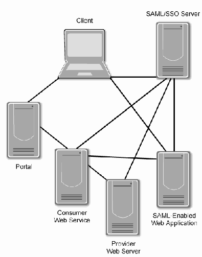
Figure 4-1. Web Services Trust Relationships
図4-1. Webサービスの信頼関係
In a Web services trust environment, a user will communicate with an SSO server and one or more SAML-enabled Web applications, as shown in Figure 4-1. For this SSO environment to function correctly, all three entities must trust each other. A user may also access a portal application, which provides Web service proxy agents access to providers on behalf of the user. In addition, requesters will often talk to providers on their own behalf. For all of these interactions to function, the entities involved must trust one another. WS-Security enables two Web services to trust each other, while SAML enables one entity to assert that it trusts another entity. In this type of configuration, it is possible to build a chain of trust, where a Web service trusts another Web service regardless of the fact the two Web services have no direct relationship.
図4-1に示すように、Webサービスの信頼環境では、ユーザーはSSOサーバーおよび1つ以上のSAML対応Webアプリケーションと通信する。SSO環境が正しく機能するには、3つのエンティティすべてが互いを信頼しなければならない。ユーザーは、ユーザーに代わってWebサービスプロバイダーへのアクセスをプロキシエージェントに提供するポータルアプリケーションにもアクセスすることがある。さらに、要求者は多くの場合、自ら（自身のために）プロバイダーと通信する。これらすべてのやり取りが機能するには、関係するエンティティが互いを信頼しなければならない。WS-Securityにより、2つのWebサービスは互いを信頼できる一方、SAMLにより、あるエンティティは別のエンティティを信頼していると表明できる。この構成では、2つのWebサービス間に直接的な関係がない場合でも、一方のWebサービスが他方を信頼する信頼の連鎖を構築できる。
4.2 Using the Portal to Control User Authorization and Access to Web Services
4.2 ユーザー認可およびWebサービスへのアクセス制御におけるポータルの使用
A portal may use SAML assertions to express a user’s identity to other Web services, so SAML assertions may be extended into authorization and access controls. Portals can be implemented using one of the available Liberty or SAML libraries or using one of the many COTS products that will act as an identity server. By implementing an identity server, the portal’s presentation functions are combined with the SSO and distributed access management services, providing only authorized information to be presented to the user.
ポータルは、他のWebサービスにユーザーのアイデンティティを表明するためにSAMLアサーションを使用することがあり、そのためSAMLアサーションを認可およびアクセス制御へ拡張できる場合がある。ポータルは、利用可能なLibertyまたはSAMLライブラリのいずれか、またはアイデンティティサーバーとして動作する多数のCOTS製品のいずれかを使用して実装できる。アイデンティティサーバーを実装することで、ポータルのプレゼンテーション機能がSSOおよび分散アクセス管理サービスと統合され、認可された情報のみがユーザーに提示される。
COTS identity servers provide robust support for the complexities of the SAML specification. Additionally, most COTS identity providers support a wide variety of authentication mechanisms—from certificates to passwords. While these are designed to prevent attacks at the protocol level, COTS identity providers must be configured correctly to be secure.
COTSアイデンティティサーバーは、SAML仕様の複雑さに対する堅牢なサポートを提供する。さらに、ほとんどのCOTSアイデンティティプロバイダーは、証明書からパスワードまで幅広い認証メカニズムをサポートする。これらはプロトコルレベルの攻撃を防ぐよう設計されているが、安全性を確保するにはCOTSアイデンティティプロバイダーを正しく構成しなければならない（must）。
4.3 Portal Interaction with the SOA’s Discovery Service
4.3 SOAのディスカバリーサービスとポータルの連携
As described in Section 4.2, pages presented to the user can be tailored to analyze a user’s credentials to prevent users from searching for services that the user is not authorized to interact with.
4.2節で説明したとおり、ユーザーに提示するページは、ユーザーの資格情報を分析して、ユーザーが利用を認可されていないサービスを検索するのを防ぐよう調整できる（can）。
If a portal’s SAML assertion (on behalf of a user) does not include the proper credentials to access a service (as determined by the discovery service), the user will not be permitted to know that the service exists. Controlling access to services at the discovery level may be beneficial to the service. It can simplify the administration of access controls required to maintain the service’s expected level of security.
ユーザーに代わるポータルのSAMLアサーションに、サービスへアクセスするための適切な資格情報が含まれていない場合（ディスカバリーサービスによる判定）、ユーザーはそのサービスの存在を知ることを許可されない（will）。ディスカバリーレベルでサービスへのアクセスを制御することは、サービスにとって有益な場合がある（may）。これにより、サービスが期待されるセキュリティレベルを維持するために必要なアクセス制御の管理を簡素化できる（can）。
4.4 Summary
4.4 要約
In a SOA, the Web portal is an SSO starting point for users interfacing with a SOA. Web portals interact with provider services and identity providers to perform actions on behalf of the user. By acting as a middleman between the user and the provider services, portals must provide authentication information about the user, coordinate with the provider's authorization mechanisms and policy administration as well as provide auditing services, integrity, confidentiality, availability, and non-repudiation of messages sent to both the user and provider. Through SAML and WS-Security, these goals can be achieved. SAML allows the user to authenticate with the identity provider and will provide SAML assertions that can be sent along with all requests on behalf of the user. Provider services can then verify the contents of the SAML assertions and determine whether the user is authorized to perform the action.
SOAでは、Webポータルが、SOAを利用するユーザーのSSO起点となる。Webポータルは、ユーザーに代わってアクションを実行するため、プロバイダーサービスおよびアイデンティティプロバイダーと連携する。ユーザーとプロバイダーサービスの仲介役として、ポータルはユーザーに関する認証情報を提供し、プロバイダーの認可メカニズムおよびポリシー管理と連携するとともに、ユーザーとプロバイダーの両方に送信されるメッセージについて、監査、完全性、機密性、可用性、および否認防止を提供しなければならない。これらの目標はSAMLおよびWS-Securityを通じて達成できる。SAMLにより、ユーザーはアイデンティティプロバイダーで認証でき、ユーザーに代わるすべての要求とともに送信できるSAMLアサーションが提供される。その後、プロバイダーサービスはSAMLアサーションの内容を検証し、ユーザーがそのアクションを実行する認可を受けているかどうかを判断できる。
5. Secure Web Service-Enabling of Legacy Applications
5. レガシーアプリケーションのセキュアなWebサービス化
Migrating applications to Web services can expose the legacy application and backend databases to new threats that were not considered when the applications were initially developed. Securely enabling Web services on legacy applications requires customized Web service adapters to be securely coded and implemented. Like any Web service, these adapters must be resistant to attack. Authentication, authorization and access control are among the first concerns to address when migrating a legacy application to a Web service architecture.
アプリケーションをWebサービスへ移行すると、当初の開発時には想定されていなかった新たな脅威にレガシーアプリケーションやバックエンドデータベースがさらされる可能性がある（can）。レガシーアプリケーションでWebサービスをセキュアに利用可能にするには、カスタマイズされたWebサービスアダプターを安全にコーディングし、実装する必要がある。ほかのWebサービスと同様、これらのアダプターは攻撃に耐えられなければならない（must）。レガシーアプリケーションをWebサービスアーキテクチャに移行する際、最初に対処すべき課題には認証、認可、およびアクセス制御がある。
5.1 Legacy Authentication to Web Services
5.1 Webサービスに対するレガシー認証
Web applications are typically designed for client-server communication. SSL/TLS allows both the client and server to authenticate their PKI certificates, yet in most situations, Web servers are not configured to authenticate clients’ SSL/TLS certificates. Instead, they rely on less strong authentication, such as a username and password. Authenticating both the client and server certificates can allow for strong authentication between Web services. Authentication using Web service technologies can be achieved using WS-Security as described in Section 3.1.2.
Webアプリケーションは通常、クライアント／サーバー通信向けに設計される。SSL/TLSでは、クライアントとサーバーの両方がPKI証明書を認証できるが、ほとんどの場合、WebサーバーはクライアントのSSL/TLS証明書を認証するよう構成されていない。代わりに、ユーザー名とパスワードなど、強度の低い認証に依存する。クライアント証明書とサーバー証明書の両方を認証することで、Webサービス間に強力な認証を実現できる。3.1.2節で説明したWS-Securityを使用して、Webサービス技術による認証を実現できる。
To Web service-enable a standalone legacy application using its own proprietary authentication mechanism requires some mechanism for mapping Web service credentials to their associated legacy credentials and an adapter for mapping incoming or outgoing Web service messages to the legacy application’s protocols. Typically, these credentials are in the form of a username and password combination; in some cases, these are stored or transmitted via an insecure encryption scheme. The legacy adapter should encrypt and securely store the legacy credentials when they are not in use. In addition, the adapter connection to the legacy application should be secured using technologies like SSL/TLS or IPsec.
独自の認証メカニズムを持つスタンドアロンのレガシーアプリケーションをWebサービス化するには、Webサービスの資格情報を対応するレガシー資格情報に対応付ける仕組みと、受信または送信したWebサービスメッセージをレガシーアプリケーションのプロトコルに対応付けるアダプターが必要である。通常、これらの資格情報はユーザー名とパスワードの組み合わせであり、場合によっては安全でない暗号化方式を用いて保存または送信される。レガシーアダプターは、使用していないレガシー資格情報を暗号化して安全に保存すべきである。さらに、レガシーアプリケーションへのアダプター接続は、SSL/TLSやIPsecなどの技術を使用して保護すべきである。
Whenever possible, legacy adapters should not be developed from scratch. A robust, well-tested third-party product is likely to be more secure and reliable than a from-scratch adapter. There are a number of COTS products (e.g., middleware solutions) capable of integrating with legacy applications.
可能な限り、レガシーアダプターを一から開発すべきではない（should not）。堅牢で十分にテストされたサードパーティ製品は、一から開発するアダプターより安全で信頼性が高い可能性がある。レガシーアプリケーションとの統合が可能なCOTS製品（ミドルウェアソリューションなど）が複数存在する。
Regardless of how the Web service-to-legacy adapter is implemented, it should include logging sufficient to satisfy the audit and reporting requirements discussed in Section 5.5. Ideally, the Web service and legacy application should support a single authentication method throughout the end-to-end solution.
Webサービスとレガシーアプリケーション間のアダプターをどのように実装する場合でも、5.5節で説明する監査および報告要件を満たすのに十分なログ機能を含めるべきである（should）。理想的には、Webサービスとレガシーアプリケーションは、エンドツーエンドのソリューション全体で単一の認証方式をサポートすべきである（should）。
5.2 Authorization and Access Control in Legacy Applications
5.2 レガシーアプリケーションにおける認可とアクセス制御
If the legacy Web application performs its own user authorizations (rather than relying on a centralized authorization service provided by a portal or SSO server), the application process that allocates permissions and privileges to users and processes must be correct and unable to be subverted. The authorization process will have to trust the authentication system’s assurance that the users and processes to be authorized have already been properly authenticated.
レガシーWebアプリケーションが、ポータルまたはSSOサーバーが提供する集中型認可サービスに依存せず、独自にユーザー認可を実行する場合、ユーザーおよびプロセスに権限と特権を割り当てるアプリケーションプロセスは正しく、侵害され得ないものでなければならない（must）。認可プロセスでは、認可対象となるユーザーとプロセスがすでに適切に認証されたという認証システムの保証を信頼する必要がある（will）。
If the authorization information used by the application will be stored and managed in a directory (for example, the LDAP or X.500 directory used by the PKI), the transmission path over which authorization information will be sent from the directory to the application’s authorization process should be secured. When the authorization data is stored in the directory, it should be protected by the directory’s access controls and, when feasible, by encryption.
アプリケーションが使用する認可情報をディレクトリ（例えば、PKIが使用するLDAPまたはX.500ディレクトリ）に保存・管理する場合、ディレクトリからアプリケーションの認可プロセスへ認可情報が送信される経路を保護すべきである。認可データをディレクトリに保存する場合、ディレクトリのアクセス制御によって保護し、実行可能な場合は暗号化によって保護すべきである。
If standard user/group/world authorizations are inadequately fine-grained, the application’s authorization system may have to implement its own access control mechanism (Section 3.5.1 discusses access control models).
標準的なユーザー／グループ／ワールド認可の粒度が不十分な場合、アプリケーションの認可システムは独自のアクセス制御メカニズムを実装しなければならないことがある（アクセス制御モデルについては3.5.1節を参照）。
Because of the additional requirements for access control for systems that contain or process sensitive information, it may be necessary for such applications to augment the underlying file system’s access controls by ensuring that the data that require additional protection are encrypted when they are written by the application to a file system directory (or database). In practical terms, encryption of data at rest is a form of access control: access to the encrypted data is controlled by limiting access to the cryptographic keys required to decrypt that data.
機微情報を含む、または処理するシステムでは、アクセス制御に追加の要件があるため、追加保護を必要とするデータをアプリケーションがファイルシステムのディレクトリ（またはデータベース）に書き込む際に暗号化されるようにし、基盤となるファイルシステムのアクセス制御を補強する必要がある場合がある（may）。実際には、保存データの暗号化もアクセス制御の一形態である。暗号化データへのアクセスは、そのデータの復号に必要な暗号鍵へのアクセスを制限することで制御される。
The application’s design should implement separation of duties, roles and privileges for subjects as well as minimize the resources needed by the application process. When designing the application, the actions that any component will be allowed to perform should be explicitly specified. Custom processes and scripts should not be granted or allowed to retain privileges that would enable them to perform actions not expressly defined for them. Instead, each process in the application should be designed to do the following:
アプリケーションの設計では、職務、役割、および主体の特権を分離し、アプリケーションプロセスが必要とするリソースを最小化すべきである（should）。アプリケーションを設計する際、各コンポーネントが実行を許可される（will）アクションを明示的に指定すべきである（should）。カスタムプロセスおよびスクリプトに、明示的に定義されていないアクションを実行できる（would）特権を付与したり、保持を許可したりすべきではない（should not）。代わりに、アプリケーション内の各プロセスは、次を実行するよう設計すべきである（should）。
Perform only the actions explicitly defined
明示的に定義されたアクションのみを実行する。
Strictly enforce the processing order defined
定義された処理順序を厳格に適用する。
Call only those other processes and libraries absolutely needed to invoke
呼び出しに絶対必要な他のプロセスおよびライブラリのみを呼び出す。
Execute only one task at a time
一度に1つのタスクのみを実行する。
Initiate a new task only after the previous task has completed
前のタスクが完了した後にのみ新しいタスクを開始する。
Access only data absolutely needed to successfully perform tasks.
タスクを正常に実行するために絶対必要なデータのみへアクセスする。
5.3 Extending Non-Web Applications to Be Able to Participate in SOAs
5.3 非WebアプリケーションがSOAに参加できるよう拡張する
Allowing non-Web applications such as database and directory server applications to securely interact with Web services involves many of the same measures as enabling Web applications. The same procedures are used for creating a Web service and extending an existing application’s functionality as a discoverable Web service.
データベースやディレクトリサーバーのアプリケーションなど、非WebアプリケーションをWebサービスと安全に連携させるには、Webアプリケーションのサービス化と多くの同じ対策が必要となる。Webサービスを作成する場合と、既存アプリケーションの機能を拡張して発見可能なWebサービスとする場合には、同じ手順が使用される。
Web services can extend any application, as long as there are robust and easy-to-use business objects or an API built into the application. It will be more difficult to Web service-enable applications that have business logic built into the graphical user interface (GUI), because the business logic must usually be rewritten to accommodate the new Web service extension of the business object.
堅牢で使いやすいビジネスオブジェクトまたはAPIがアプリケーションに組み込まれていれば、Webサービスはあらゆるアプリケーションを拡張できる。ビジネスロジックがグラフィカルユーザーインターフェース（GUI）に組み込まれているアプリケーションをWebサービス化するのはより困難となる。これは、ビジネスロジックを新しいWebサービス拡張に対応させるため、通常は書き換えなければならないからである。
5.4 Public Key Enabling Concerns Specific to Web Services and SOAs
5.4 WebサービスおよびSOAに特有の公開鍵対応に関する考慮事項
Both SSL/TLS and WS-Security, the primary methods for securing SOAP messages, rely on PKI certificates for authentication. Many legacy applications only support username and password authentication over time. Organizations may benefit from transitioning these legacy applications to PKI authentication. Initially, the legacy application should provide the capability for users to test their certificates while maintaining username password access. Then, the application should allow users who have certificates to authenticate using these certificates while still allowing users to authenticate with their existing usernames and passwords. Once users have become familiar with certificate-based authentication, the application should publish a date after which usernames and passwords will no longer be accepted. In the transition to Web services, an API should be developed that can be used to communicate with the discovery service as well as authenticate users.
SOAPメッセージを保護する主要な方式であるSSL/TLSとWS-Securityは、どちらも認証にPKI証明書を使用する。多くのレガシーアプリケーションは、長年にわたりユーザー名とパスワードによる認証のみをサポートしている。組織は、これらのレガシーアプリケーションをPKI認証へ移行することで利点を得られる可能性がある（may）。まず、レガシーアプリケーションは、ユーザー名とパスワードによるアクセスを維持しながら、ユーザーが証明書をテストできる機能を提供すべきである（should）。次に、証明書を持つユーザーがその証明書を使って認証できるようにする一方、既存のユーザー名とパスワードによる認証も引き続き許可すべきである（should）。ユーザーが証明書ベースの認証に慣れた後、ユーザー名とパスワードが受け付けられなくなる（will）日付をアプリケーションが公表すべきである（should）。Webサービスへの移行にあたっては、ディスカバリーサービスとの通信とユーザー認証に使用できる（can）APIを開発すべきである（should）。
For applications with a large number of current users, an applet can be written to establish a mapping between an existing username—and associated privileges—and a subscriber certificate. The first time each user is authenticated based on the certificate, the user will be asked to provide the old username and password. The applet will then establish the mapping of the privileges associated with that username to the new certificate, so that the next time the user logs in, those privileges will be granted based on the certificate presented, without the user being required to enter the old username and password.55
現在のユーザー数が多いアプリケーションでは、既存のユーザー名とそれに関連付けられた特権を加入者証明書に対応付けるアプレットを作成できる（can）。各ユーザーが証明書に基づいて初めて認証される際、以前のユーザー名とパスワードの入力を求められる（will）。その後、アプレットはそのユーザー名に関連付けられた特権を新しい証明書に対応付ける（will）。そのため、次回ユーザーがログインすると、以前のユーザー名とパスワードを再入力する必要なく、提示された証明書に基づいて特権が付与される（will）。55
5.5 Accountability for Legacy Application Transactions
5.5 レガシーアプリケーションのトランザクションに関する説明責任
In accordance with the security functions provided by authorization and access control measures, sound Web services security practices also include the maintenance of auditing records. Auditing should be done to maintain appropriate accountability for legacy application transactions in the Web services environment.
認可およびアクセス制御の手段が提供するセキュリティ機能に沿って、適切なWebサービスセキュリティ慣行には監査記録の維持も含まれる。Webサービス環境におけるレガシーアプリケーションのトランザクションについて適切な説明責任を維持するため、監査を実施すべきである。
The legacy application’s auditing mechanisms should be developed to provide sufficient information and secure storage for audit data. Verbose logging is beneficial to later analysis of the system. Appropriate review procedures can identify anomalous access control situations, which may indicate an attacker’s presence. To support analysis, logs should be stored securely for an appropriate length of time, which is usually determined by the organizational policies. NIST SP 800-92 provides guidance for managing logs within an organization.
レガシーアプリケーションの監査メカニズムは、監査データに関する十分な情報と安全な保存を提供するよう開発すべきである（should）。詳細なログは、後の分析に役立つ。適切なレビュー手順により、攻撃者の存在を示す可能性がある（may）異常なアクセス制御状況を特定できる（can）。分析を支援するため、ログは適切な期間、安全に保存すべきであり（should）、その期間は通常、組織のポリシーによって決まる。NIST SP 800-92は、組織内のログ管理に関する指針を提供する。
5.6 Database Security Challenges in SOA Environments
5.6 SOA環境におけるデータベースセキュリティの課題
When a database application is exposed as a service or is simply accessed by a Web service, the security of the database relies entirely on the security of the applications directly accessing it. The exposing application should account for confirming the requester’s authorization to access the database. Additionally, the application must filter requests before forwarding them on to the database. Incoming requests may include SQL injection attacks or other attempts to subvert the database or retrieve sensitive information. The application must also filter the data before providing it to the requester to prevent unintentional leakage.
データベースアプリケーションをサービスとして公開する場合、またはWebサービスから単にアクセスする場合、データベースのセキュリティは、データベースに直接アクセスするアプリケーションのセキュリティに全面的に依存する。公開するアプリケーションは、要求者がデータベースにアクセスする認可を受けていることを確認すべきである（should）。さらに、アプリケーションはデータベースに転送する前に要求をフィルタリングしなければならない（must）。受信要求には、SQLインジェクション攻撃や、データベースを侵害したり機微情報を取得したりするその他の試みが含まれる場合がある（may）。アプリケーションは、意図しない情報漏えいを防ぐため、要求者にデータを提供する前にもフィルタリングしなければならない（must）。
5.7 Maintaining Security of Legacy Systems Exposed via Web Services
5.7 Webサービス経由で公開されるレガシーシステムのセキュリティ維持
When integrating legacy systems as backend servers in a SOA, developers must make sure that security does not stop at the connection between the SOA and the Web service interface to the legacy system. Instead, the developer should incorporate the following measures to ensure the integrity of the data being processed:
SOAのバックエンドサーバーとしてレガシーシステムを統合する際、開発者はSOAとレガシーシステムのWebサービスインターフェース間の接続部分でセキュリティ対策を終わらせてはならない（must）。代わりに、処理対象データの完全性を確保するため、開発者は次の対策を取り入れるべきである（should）。
Establish end-to-end user authentication. Set up an end-to-end user authentication mechanism that reaches from requesters to the mainframe or other backend legacy server.
エンドツーエンドのユーザー認証を確立する。要求者からメインフレームまたはその他のバックエンドレガシーサーバーに至るまで、エンドツーエンドのユーザー認証メカニズムを設定する。
Establish an end-to-end encrypted data channel. Use encryption from the individual requesters to the Web service interface and from the Web service interface to the legacy backend system. This is done to ensure that sensitive data are not exposed in transit over external and internal networks. If the backend system does not natively support encrypted data channels, IPsec or SSL tunneling software can provide an encrypted data channel.
エンドツーエンドの暗号化データチャネルを確立する。個々の要求者からWebサービスインターフェースまで、またWebサービスインターフェースからレガシーバックエンドシステムまで暗号化を使用する。これは、外部および内部ネットワークを転送中に機微データが露出しないようにするためである。バックエンドシステムが暗号化データチャネルをネイティブにサポートしない場合、IPsecまたはSSLトンネリングソフトウェアで暗号化データチャネルを提供できる（can）。
Implement public key security end-to-end. Deploy public key components all the way from the requester to the backend system and integrate them with existing security systems.
エンドツーエンドの公開鍵セキュリティを実装する。要求者からバックエンドシステムまで公開鍵コンポーネントを展開し、既存のセキュリティシステムと統合する。
In addition to certificate-based identification and authentication (I&A), the Web service will also need to perform application-level monitoring and auditing of Web connections, access events, and security violations.
証明書ベースの識別および認証（I&A）に加え、WebサービスはWeb接続、アクセスイベント、およびセキュリティ違反のアプリケーションレベルの監視と監査も実行する必要がある（will）。
In certain high-risk environments, a second factor of authentication, in addition to PKI certificate-based I&A, may be desired. This second factor may include a static password, a dynamic password, or a biometric. In some applications, the user’s initial authentication may be via a second-factor mechanism during the authenticated session.
高リスク環境によっては、PKI証明書ベースの識別および認証（I&A）に加えて、認証の第2要素が望まれる場合がある（may）。この第2要素には、固定パスワード、動的パスワード、または生体認証を含めることができる（may）。一部のアプリケーションでは、認証済みセッション中にユーザーの初回認証を第2要素メカニズムで行う場合がある（may）。
Security for the mainframe was not designed with the SOA processing model in mind. Rather, mainframe security was designed for a closed, well-defined, and tightly controlled environment. Key characteristics of such environments include a known and relatively trusted user population, a well-defined set of applications, and firm connectivity boundaries. Application developers need to leverage existing backend mainframe security systems.
メインフレームのセキュリティは、SOAの処理モデルを念頭に設計されたものではない。むしろ、メインフレームのセキュリティは、閉鎖的で、明確に定義され、厳しく管理された環境向けに設計された。このような環境の主な特徴には、既知で比較的信頼されたユーザー集団、明確に定義されたアプリケーション群、および厳格な接続境界が含まれる。アプリケーション開発者は、既存のバックエンドメインフレームセキュリティシステムを活用する必要がある。
5.8 Summary
5.8 要約
Secure Web service-enabling of legacy applications allows new SOA applications to leverage the functionality and services provided by an organization’s legacy systems. This can prove to be cost-effective when developing Web services that require legacy functionality. Web service-enabling legacy applications can introduce Web service threats to the legacy application and provide a new avenue of attack into the legacy application. Legacy applications built without understanding of SOA or networking may lead to the discovery of new vulnerabilities in the application. When Web service-enabling a legacy application, it is important to be aware of these threats and use appropriate technologies to mitigate them. Similarly, the mechanisms used to Web service-enable legacy software must also be secure, to prevent introducing new vulnerabilities into the system.
レガシーアプリケーションをセキュアにWebサービス化すると、SOAの新しいアプリケーションは組織のレガシーシステムが提供する機能およびサービスを活用できる（can）。レガシー機能を必要とするWebサービスを開発する際、これは費用対効果の高い方法となり得る。レガシーアプリケーションをWebサービス化すると、レガシーアプリケーションにWebサービスの脅威が持ち込まれ、新たな攻撃経路が生じる可能性がある（can）。SOAやネットワークを理解せずに構築されたレガシーアプリケーションでは、アプリケーションに新たな脆弱性が発見される可能性がある（may）。レガシーアプリケーションをWebサービス化する際には、これらの脅威を認識し、それらを軽減する適切な技術を使用することが重要である。同様に、レガシーソフトウェアをWebサービス化するために使用するメカニズムも、新たな脆弱性をシステムに持ち込まないよう安全でなければならない（must）。
Ideally, legacy applications should be modified to support Web service standards, but this may not always be possible. If the application was originally designed as a Web application, it can be configured to use SSL/TLS for authentication, confidentiality and integrity between the Web service front-end and the application itself. In addition, many legacy applications have built-in authentication and authorization mechanisms. If possible, these should be upgraded to support SOA technologies; otherwise the Web service front-end will have to map SOA identities and permissions to those used by the legacy application. While it is important to provide an updated authentication and authorization mechanism, it is equally important to take advantage of logging facilities provided by the application. In addition, these logs should be integrated into the system-wide log management infrastructure. By exposing legacy functionality as a Web service, there are a number of potential attacks that may surface, requiring the Web service front-end to be carefully designed, implemented, and deployed to take full advantage of the legacy application's security functionality while providing the security needed to protect against threats introduced by the SOA.
理想的には、レガシーアプリケーションをWebサービス標準に対応するよう変更すべきであるが、常に可能とは限らない。アプリケーションがもともとWebアプリケーションとして設計されている場合、Webサービスのフロントエンドとアプリケーション自体との間の認証、機密性、および完全性のためSSL/TLSを使用するよう構成できる。さらに、多くのレガシーアプリケーションには認証および認可メカニズムが組み込まれている。可能であれば、これらをSOA技術に対応するようアップグレードすべきである。そうでない場合、WebサービスのフロントエンドはSOAのアイデンティティと権限をレガシーアプリケーションで使用されるものに対応付けなければならない。更新された認証および認可メカニズムの提供が重要であると同時に、アプリケーションが提供するログ機能を活用することも同様に重要である。さらに、これらのログはシステム全体のログ管理インフラストラクチャに統合すべきである。レガシー機能をWebサービスとして公開すると、さまざまな攻撃が表面化する可能性がある。そのため、Webサービスのフロントエンドを慎重に設計、実装、展開し、SOAが持ち込む脅威から保護するために必要なセキュリティを提供しつつ、レガシーアプリケーションのセキュリティ機能を最大限活用する必要がある。
6. Secure Implementation Tools and Technologies
6. セキュアな実装のためのツールと技術
When implementing a secure Web service, developers should be aware of how to use the available development tools, techniques, and languages in a secure manner, in addition to implementing the security functionality already discussed in this guide. While security functionality is an important aspect of secure Web services, security functionality can be compromised by poorly implemented software. See Appendix A for a discussion of some attacks to which Web services are susceptible. The following sections outline the various developer toolkits, XML parsers, available development languages, and security testing methodologies that can aid in testing a Web service.
セキュアなWebサービスを実装する際、開発者はこのガイドで既に説明したセキュリティ機能を実装するだけでなく、利用可能な開発ツール、技法、および言語を安全に使用する方法も理解すべきである。セキュリティ機能はセキュアなWebサービスの重要な側面だが、ソフトウェアの実装が不適切であれば、その機能が損なわれる可能性がある。Webサービスが受ける攻撃については付録Aを参照。以下の各節では、各種開発者ツールキット、XMLパーサー、利用可能な開発言語、およびWebサービスのテストに役立つセキュリティテスト手法の概要を示す。
6.1 Web Services Developer Toolkits
6.1 Webサービス開発者ツールキット
When choosing an appropriate Web services developer toolkit, it is important to first determine whether there are any language requirements of the Web service. Should it be able to interact with a .NET environment, a Java environment, or natively compiled libraries? In most cases, either a Java or .NET Web service will be able to meet all of the functional requirements of the system, but there are times when a Web service written using C or C++ may be necessary. If the language requirement is not an obstacle, there are further attributes of a Web service development toolkit to consider.
適切なWebサービス開発者ツールキットを選ぶ際には、まずWebサービスに言語要件があるかどうかを判断することが重要である。Webサービスは.NET環境、Java環境、またはネイティブにコンパイルされたライブラリと連携できる必要があるか（Should）。ほとんどの場合、Javaまたは.NETのWebサービスでシステムの機能要件をすべて満たすことができる（will）が、CまたはC++を使用して記述されたWebサービスが必要となる場合もある（may）。言語要件が障害でなければ、Webサービス開発ツールキットについて検討すべき属性がほかにもある。
The most important aspect of a Web service development toolkit is its ability to interoperate with Web services developed using other toolkits. The SOAP and WSDL specifications developed by W3C left some design choices to individual Web service toolkit developers, making Web services less interoperable. In particular, by default Java and .NET Web services may not be able to communicate with one another. To this end, WS-I developed WS-I Basic Profile 1.1, which specifies exactly how the WSDL and SOAP specifications should be implemented to achieve full interoperability. Toolkits that support WS-I Basic Profile 1.1 will be able to interoperate with Web services from other toolkits with—at most—only minor changes to the Web service being developed.56
Webサービス開発ツールキットで最も重要なのは、他のツールキットを使用して開発されたWebサービスとの相互運用能力である。W3Cが策定したSOAPおよびWSDL仕様では設計上の選択肢の一部を個々のWebサービスツールキット開発者に委ねていたため、Webサービスの相互運用性が低下していた。特に、既定ではJavaと.NETのWebサービスは相互に通信できない場合がある（may）。この問題に対処するため、WS-Iは完全な相互運用性を実現するためにWSDLおよびSOAP仕様をどのように実装すべきか（should）を厳密に規定するWS-I Basic Profile 1.1を策定した。WS-I Basic Profile 1.1をサポートするツールキットは、開発中のWebサービスにごくわずかな変更を加えるだけで、他のツールキットのWebサービスと相互運用できる（will）。56
Additionally, WS-I is working on WS-I Basic Security Profile 1.0, which will allow Web services to implement interoperable authentication mechanisms. WS-Security implementations do not always interoperate well with other Web services, so the WS-I Basic Security Profile will aid in developing secure interoperable Web services. As this specification has not yet been ratified, few (if any) Web service toolkits support it. Until the WS-I Basic Security Profile has been released by WS-I, toolkits should be used that provide support for (or have libraries available for) the WS-Security and SAML specifications, which are the most commonly used tools for securing and authenticating Web services.
さらに、WS-Iは相互運用可能な認証メカニズムをWebサービスが実装できるようにする（will）WS-I Basic Security Profile 1.0に取り組んでいる。WS-Security実装は他のWebサービスと常に良好に相互運用できるとは限らないため、WS-I Basic Security Profileはセキュアで相互運用可能なWebサービスの開発を支援する（will）。仕様はまだ批准されていないため、これをサポートするWebサービスツールキットはあったとしてもほとんどない（few）。WS-IがWS-I Basic Security Profileを公開するまでは、WS-SecurityおよびSAML仕様（Webサービスの保護と認証に最も一般的に使用されるツール）をサポートする、またはそのためのライブラリを提供するツールキットを使用すべきである（should）。
Finally, WS toolkits should ease the burden placed on the Web service developer by providing tools that will create stubs, the Web service-specific code, that the developer can use without having to delve into XML or SOAP specifics. Usually, these tools are in the form of a command-line program that will take either a pre-existing application and develop the WSDL or develop stubs from a pre-existing WSDL.
最後に、WSツールキットは、開発者がXMLやSOAPの詳細に踏み込まずに使用できる（can）スタブ（Webサービス固有のコード）を作成する（will）ツールを提供し、Webサービス開発者の負担を軽減すべきである（should）。通常、これらのツールはコマンドラインプログラムであり、既存のアプリケーションを受け取ってWSDLを作成するか、既存のWSDLからスタブを作成する（will）。
6.2 XML Parsers
6.2 XMLパーサー
XML parsers are the first portion of a Web service that process input from other Web services. A poorly designed or poorly configured XML parser can be used to compromise the Web service regardless of how secure the Web service is. To this end, it is important to use robust and proven XML parsers.
XMLパーサーは、他のWebサービスからの入力を処理するWebサービスの最初の部分である。設計または構成が不適切なXMLパーサーは、Webサービス自体がどれほどセキュアであっても、Webサービスの侵害に利用される可能性がある（can）。このため、堅牢で実績のあるXMLパーサーを使用することが重要である。
An improperly configured XML Parser is susceptible to several attacks:
構成が不適切なXMLパーサーは、次の複数の攻撃に対して脆弱である。
Large or recursive XML documents can overload the XML parser and lead to a DoS.
大規模または再帰的なXML文書は、XMLパーサーに過負荷をかけ、DoSを引き起こす可能性がある（can）。
XML documents can be configured to refer to and use local files. This can lead to an attacker gaining knowledge about the local system.
XML文書は、ローカルファイルを参照して使用するよう構成できる（can）。その結果、攻撃者がローカルシステムに関する情報を得る可能性がある（can）。
External references to other XML documents or XML schemas can be used to bypass XML validators.
他のXML文書またはXMLスキーマへの外部参照は、XMLバリデーターを回避するために使用できる（can）。
All of these XML parser security concerns can be overcome by properly configuring the system. In particular, oversized XML documents can be prevented by configuring the Web server on which the Web service is running to only accept messages up to a certain size. When the oversized XML document is passed to the Web server, it will prevent the entire document from reaching the Web service. The other XML attacks can be prevented by developing robust local XML schemas for the Web service and configuring the XML parser to validate all incoming XML traffic against the local schemas rather than against remote schemas provided by the incoming traffic. Additionally, one of the main functions of an XML gateway is to provide a robust defense against XML attacks that target the XML parser; XML gateways provide a robust system for detecting and validating XML traffic before it reaches the Web service and can be configured to notify appropriate personnel when such an attack has been attempted.
これらのXMLパーサーに関するセキュリティ上の懸念は、システムを適切に構成することで克服できる（can）。特に、Webサービスが稼働するWebサーバーを、一定サイズまでのメッセージのみを受け入れるよう構成することで、過大サイズのXML文書を防止できる（can）。過大サイズのXML文書がWebサーバーに渡された場合、Webサーバーは文書全体がWebサービスに到達するのを防ぐ（will）。その他のXML攻撃は、Webサービス用の堅牢なローカルXMLスキーマを開発し、受信トラフィックが提供するリモートスキーマではなくローカルスキーマに照らしてすべての受信XMLトラフィックを検証するようXMLパーサーを構成することで防止できる（can）。さらに、XMLゲートウェイの主な機能の一つは、XMLパーサーを標的とするXML攻撃に対する堅牢な防御を提供することである。XMLゲートウェイは、Webサービスに到達する前にXMLトラフィックを検出および検証する堅牢なシステムを提供し、攻撃が試みられた場合に適切な担当者に通知するよう構成できる（can）。
6.3 Languages for Secure Web Service Development
6.3 セキュアなWebサービス開発のための言語
Each of the languages discussed in this section has its own set of sound security-related practices, but all benefit from a common set of secure coding practices that include the following:
この節で説明する各言語には、セキュリティに関する適切な実践方法がそれぞれあるが、いずれも次のような共通のセキュアコーディング実践から恩恵を受ける。
Do not include sensitive data in user-viewable source code (i.e., Web page code that can be displayed by the user using the view source function of his/her browser) or configuration files.
ユーザーが閲覧できるソースコード（すなわち、ブラウザーの「ソースを表示」機能でユーザーが表示できる（can）Webページのコード）または構成ファイルに機微データを含めないこと。
Assemblies that support untrusted or partially trusted callers should never expose objects from assemblies that do not allow untrusted or partially trusted callers.
信頼されていない、または部分的に信頼された呼び出し元をサポートするアセンブリは、信頼されていない、または部分的に信頼された呼び出し元を許可しないアセンブリのオブジェクトを決して公開すべきではない（should）。
Allow untrusted or partially trusted callers only after the developer has carefully reviewed the code, ascertained the security implications, and taken the necessary precautions to defend against attack.
開発者がコードを慎重にレビューし、セキュリティ上の含意を確認し、攻撃から防御するために必要な予防措置を講じた後にのみ、信頼されていない、または部分的に信頼された呼び出し元を許可する。
Disable tracing, debugging, and other diagnostic development or testing-related functions, tools, and hooks before application deployment.
アプリケーションを展開する前に、トレース、デバッグ、およびその他の診断用の開発・テスト関連機能、ツール、フックを無効にする。
Do not issue verbose error information to the user.
詳細なエラー情報をユーザーに提示しないこと。
6.3.1 Procedural Languages
6.3.1 手続き型言語
The procedural languages summarized in the following sections are considered to be relevant to Web service design and development. This does not preclude the importance or relevance of other languages that are not explicitly described; rather, these are the languages most commonly used to implement Web services.
以下の各節で要約する手続き型言語は、Webサービスの設計および開発に関連するとみなされる。これは、明示的に説明していない他の言語の重要性や関連性を否定するものではない。ここに挙げる言語は、Webサービスの実装に最も一般的に使用される言語である。
6.3.1.1 C and C++
6.3.1.1 CおよびC++
There are many cases where Java, .NET, or other forms of managed code are not practical, even when implementing Web services. In particular, Web services based on C and C++ do not require the overhead of a framework to implement Web services specifications. Java EE and .NET can take up hundreds of megabytes of space, which may not be available on a particular system (usually a legacy or embedded system). When adding Web service support to legacy systems, Java and .NET may not be available, as .NET does not run on versions of Windows older than Windows 2000, and there may not be a Java Virtual Machine for the legacy system’s platform or operating system.
Webサービスを実装する場合であっても、Java、.NET、またはその他のマネージドコードが実用的でない状況は多い。特に、CおよびC++ベースのWebサービスでは、Webサービス仕様を実装するためのフレームワークのオーバーヘッドが不要である。Java EEおよび.NETは数百メガバイトの領域を占有することがあり（can）、特定のシステム（通常はレガシーシステムまたは組み込みシステム）では利用できない場合がある（may）。レガシーシステムにWebサービスのサポートを追加する場合、.NETはWindows 2000より古いバージョンでは動作せず、またレガシーシステムのプラットフォームまたはオペレーティングシステム用のJava仮想マシンが存在しない場合がある（may）ため、Javaおよび.NETを利用できないことがある（may）。
To this end, there are a number of Web service frameworks available for C and C++. Web services developed using these frameworks do not have the security benefits provided by managed code such as .NET and Java, so they must rely on operating system-level security support such as restricting user permissions and running the Web service within restricted environments. It is important to ensure that all code is properly written to avoid the potential pitfalls of the language, such as buffer overflows. C and C++ Web services can be implemented without much of the complexity of a Java or .NET Web service and would not be susceptible to vulnerabilities associated with the framework itself. An additional step that can be taken to protect Web services developed in C or C++ would be to place the Web service behind an XML gateway, which would filter XML attacks and protect the C or C++ system from external entities.
この目的のため、CおよびC++用のWebサービスフレームワークが複数提供されている。これらのフレームワークを使用して開発したWebサービスには、.NETやJavaなどのマネージドコードが提供するセキュリティ上の利点がないため、ユーザー権限の制限や制限された環境内でのWebサービス実行など、オペレーティングシステムレベルのセキュリティサポートに依存しなければならない（must）。バッファーオーバーフローなど、言語に伴う潜在的な落とし穴を避けるため、すべてのコードが適切に記述されていることを確認することが重要である。CおよびC++のWebサービスは、Javaまたは.NETのWebサービスほど複雑にせず実装できる（can）うえ、フレームワーク自体に関連する脆弱性の影響を受けない可能性がある（would）。CまたはC++で開発したWebサービスを保護するために取ることができる（can）追加策は、WebサービスをXMLゲートウェイの背後に配置することである（would）。そのゲートウェイはXML攻撃をフィルタリングし、CまたはC++システムを外部エンティティから保護する（would）。
6.3.1.2 Java
6.3.1.2 Java
Java runs in a secure virtual environment through the Java Security Manager (JSM), which provides a sandbox in which Java applications can run. Java also provides more stringent memory protections than C or C++, relying on garbage collection and references memory management in place of the more manual approach used by C and C++. Java allows the user to have almost full control of the virtual environment in which the Java bytecode is run. Java code intended for use on the client runs in a different environment, under a different trust model, than code on the server. There are common requirements, whether the Java code runs on the client or server. Input from untrusted sources should always be checked and filtered. Java code that inherits methods from parents, interfaces, or parents’ interfaces also inherits vulnerabilities in those methods. For this reason, it is critical that the developer use inheritance with caution.
JavaはJava Security Manager（JSM）を通じてセキュアな仮想環境で実行される。JSMはJavaアプリケーションが実行できる（can）サンドボックスを提供する。Javaは、CおよびC++のより手動的な方法に代えて、ガベージコレクションと参照ベースのメモリ管理を用いるため、CまたはC++より厳格なメモリ保護も提供する。Javaでは、Javaバイトコードが実行される仮想環境をユーザーがほぼ完全に制御できる。クライアント上で使用されるJavaコードは、サーバー上のコードとは異なる信頼モデルの異なる環境で実行される。Javaコードがクライアント上で実行される場合も、サーバー上で実行される場合も、共通の要件がある。信頼されていないソースからの入力は常に確認し、フィルタリングすべきである（should）。親クラス、インターフェース、または親インターフェースからメソッドを継承するJavaコードは、それらのメソッドの脆弱性も継承する。このため、開発者は継承を慎重に使用することが極めて重要である。
Because the Java language is compiled into a platform-independent bytecode format, much of the information contained in the original Java source code remains in the compiled bytecode. This makes decompilation by attackers easier for Java than natively compiled languages like C and C++. Bytecode obfuscation is a technique designed to help protect Java bytecodes from decompilation. Preventing bytecode decompilation is a countermeasure both against disclosure and tampering (i.e., confidentiality and integrity concerns).
Java言語はプラットフォームに依存しないバイトコード形式にコンパイルされるため、元のJavaソースコードに含まれる情報の多くがコンパイル後のバイトコードにも残る。そのため、CやC++などのネイティブコンパイル言語よりも、Javaでは攻撃者による逆コンパイルが容易である。バイトコード難読化は、Javaバイトコードの逆コンパイルを防ぐための技法である。バイトコードの逆コンパイル防止は、情報漏えいと改ざん（すなわち機密性および完全性の問題）に対する両方の対策となる。
Java bytecode must be able to undergo bytecode verification, which gives it a measure of protection against malicious code, and it is not possible to distribute the bytecode in a more secure form. Application of digital signatures to the native Java code (code signing) is intended to increase the security of the distribution process by providing a means of verification by the execution environment that the received Java code came from a trusted source and has not been tampered with en route.
Javaバイトコードはバイトコード検証を受けられなければならず（must）、この検証によって悪意あるコードに対する一定の保護が得られる。また、バイトコードをより安全な形式で配布することはできない。ネイティブJavaコードへのデジタル署名の適用（コード署名）は、受信したJavaコードが信頼されたソースからのものであり、転送中に改ざんされていないことを実行環境が検証する手段を提供し、配布プロセスのセキュリティを高めることを目的としている。
The technique most often proposed for reducing this vulnerability is code obfuscation. Code obfuscation transforms the Java program to make it more difficult to understand, yet functionally identical to the original. The program produces the same results, though it may execute more slowly or have other side effects because of the code added to it by the obfuscation technique. Thus, there are trade-offs that must be considered between the security provided by code obfuscation and the execution time and space penalties imposed on the transformed program.
この脆弱性を低減するために最もよく提案される技法は、コード難読化である。コード難読化は、Javaプログラムの機能を元のプログラムと同一に保ちながら、理解をより困難にする変換を行う。プログラムは同じ結果を生成するが、難読化技法によって追加されたコードのため、実行速度が低下したり、その他の副作用が生じたりする場合がある（may）。したがって、コード難読化によるセキュリティ上の利点と、変換後のプログラムに課される実行時間および領域のペナルティとの間で、考慮すべきトレードオフがある（must）。
There are a number of COTS and public domain programs and utilities for performing code obfuscation. Some of these apply optimizations to the Java compiler, such as array and loop reordering and procedure inlining. Code obfuscation can be classified according to the kind of information the obfuscation technique targets and how it affects that target.
コード難読化を実施するためのCOTSおよびパブリックドメインのプログラムやユーティリティが複数存在する。中には、配列やループの並べ替え、手続きのインライン化など、Javaコンパイラーに最適化を適用するものもある。コード難読化は、難読化技法が標的とする情報の種類と、その標的に与える影響に基づいて分類できる（can）。
6.3.1.3 Microsoft’s .NET Languages: C# and VB.NET
6.3.1.3 Microsoftの.NET言語: C#およびVB.NET
C# was developed by Microsoft as part of its .NET initiative to provide developers with the power of languages like Java and C++ for rapid application development. Like Java, C# runs in a secure environment through code access security, which provides a sandbox in which to run Common Language Runtime (CLR) applications, such as C# and VB.NET. C# applications also benefit from a garbage collection system, preventing most memory leaks from affecting C# applications. C# provides a more type-safe environment than C++, but unlike Java, C# applications support accessing raw memory— although this requires certain code access security permissions to be enabled. .NET’s code access security offers security features similar to Java’s, such as code signing, stringent access control and sandboxing.
C#は、迅速なアプリケーション開発においてJavaやC++のような言語の能力を開発者に提供するため、Microsoftが.NET構想の一環として開発した。Javaと同様に、C#はコードアクセスセキュリティを通じてセキュアな環境で実行される。コードアクセスセキュリティは、C#やVB.NETなどのCommon Language Runtime（CLR）アプリケーションを実行するためのサンドボックスを提供する。C#アプリケーションはガベージコレクションシステムの恩恵も受け、ほとんどのメモリーリークがC#アプリケーションに影響するのを防ぐ。C#はC++より型安全性の高い環境を提供するが、Javaとは異なり、C#アプリケーションは生メモリーへのアクセスをサポートする。ただし、そのためには特定のコードアクセスセキュリティ権限を有効にする必要がある。.NETのコードアクセスセキュリティは、コード署名、厳格なアクセス制御、サンドボックス化など、Javaと同様のセキュリティ機能を提供する。
Visual Basic .NET was released alongside of C# as a successor to the legacy Visual Basic language. While the VB.NET syntax is similar to the original Visual Basic language, VB.NET provides a fully object-oriented language in place of the COM-based language of Visual Basic. While Visual Basic has some security concerns, VB.NET’s support of garbage collection, object-oriented design, code access security, and the .NET framework make VB.NET similar to C# and Java. Through the .NET framework and the CLR, C# and VB.NET have access to the same security libraries and both C# and VB.NET applications are subject to code access security.
Visual Basic .NETは、従来のVisual Basic言語の後継としてC#と同時にリリースされた。VB.NETの構文は元のVisual Basic言語に似ているが、VB.NETはCOMベースの言語に代わる完全なオブジェクト指向言語を提供する。Visual Basicにはいくつかのセキュリティ上の懸念があるものの、VB.NETはガベージコレクション、オブジェクト指向設計、コードアクセスセキュリティ、および.NETフレームワークをサポートするため、C#やJavaに類似している。.NETフレームワークとCLRを通じて、C#およびVB.NETは同じセキュリティライブラリにアクセスでき、両方の言語によるアプリケーションはコードアクセスセキュリティの対象となる。
As in Java, code written in C# or VB.NET can be downloaded and run from untrusted sources. To alleviate this problem, Microsoft has integrated code access security into the .NET Framework. Code access security provides varying levels of trust for code based on where the code originates and allows individual users to specify what permissions will be given to an application. Because code access security is part of the .NET Framework, all applications that access the .NET Framework can be subject to code access security. Because policies are defined on a per-machine basis, libraries are provided that allow applications to determine whether the application has a particular permission prior to performing a potentially restricted act—allowing .NET applications to alter their behavior rather than simply generate a security exception.
Javaと同様に、C#またはVB.NETで記述したコードは、信頼されていないソースからダウンロードして実行できる（can）。この問題を軽減するため、Microsoftはコードアクセスセキュリティを.NET Frameworkに統合した。コードアクセスセキュリティは、コードの出所に基づいて異なるレベルの信頼を与え、個々のユーザーがアプリケーションに付与される（will）権限を指定できるようにする。.NET Frameworkの一部であるため、.NET Frameworkにアクセスするすべてのアプリケーションがコードアクセスセキュリティの対象となる（can）。ポリシーはマシンごとに定義されるため、潜在的に制限された操作を実行する前に、アプリケーションが特定の権限を持つかどうかを判定できるライブラリが提供される。これにより、.NETアプリケーションは単にセキュリティ例外を生成するのではなく、動作を変更できる。
6.3.2 XML
6.3.2 XML
Content within SOAP messages is expressed in XML. Because of this, the security technologies used by Web services are based on those developed for XML. XML was designed so that it could be easily extensible and combined with itself. It should be natural to provide integrity, confidentiality and other security benefits to entire XML documents or portions of these documents in a way that does not prevent further processing by standard XML tools.
SOAPメッセージ内のコンテンツはXMLで表現される。そのため、Webサービスが使用するセキュリティ技術はXML向けに開発された技術に基づいている。XMLは、容易に拡張でき、XML自体と組み合わせられるよう設計された（could）。標準的なXMLツールによる後続処理を妨げない方法で、XML文書全体または一部に完全性、機密性、その他のセキュリティ上の利点を提供するのが自然である（should）。
In general, most of the risks posed by XML are not unique. They can appear with many other technologies and systems, new and old. Some of the risks are more severe for XML than for older systems simply because XML is more expressive, flexible and powerful. Some of the risks derive from the ways in which XML is used (e.g., for metadata) and would appear whether using XML or some other technology.
一般に、XMLがもたらすリスクのほとんどは固有のものではない。新旧を問わず、多くの他の技術やシステムでも発生し得る（can）。XMLはより表現力、柔軟性、および能力に優れるため、一部のリスクは旧来のシステムより深刻である。リスクの一部はXMLの使用方法（例えばメタデータとしての使用）に由来し、XMLを使用する場合にも他の技術を使用する場合にも発生する（would）。
Some recognized vulnerabilities and attacks specific to XML and XML Style Sheets (XSL) include the inability to:
XMLおよびXMLスタイルシート（XSL）に固有の、認識されている脆弱性および攻撃には、次のことができないという問題がある。
Prove validity of XML content and originator. Not all XML parsers validate the URIs of entity references before accessing them
XMLコンテンツとその作成者の妥当性を証明する。すべてのXMLパーサーが、アクセス前にエンティティ参照のURIを検証するわけではない。
Prevent exploitation of XML entities to steal information. Because some parsers reference entities without first validating their URIs, it may be possible to inject references to other locations on the target server from which secret information could then be extracted
情報を盗むためのXMLエンティティの悪用を防ぐ。一部のパーサーはURIを先に検証せずにエンティティを参照するため、対象サーバー上の他の場所への参照を挿入し、そこから秘密情報を抽出できる可能性がある。
Prevent exploitation of XML entities to launch DoS attacks. Because some parsers reference entities without first validating their URIs, it may be possible to create DoS attacks by flooding the XML parser with illegitimate entity references
DoS攻撃を開始するためのXMLエンティティの悪用を防ぐ。一部のパーサーはURIを先に検証せずにエンティティを参照するため、不正なエンティティ参照でXMLパーサーを氾濫させてDoS攻撃を作り出せる可能性がある。
Enforce validation. An attacker may be able to subvert the validate command called by the XML application when it has loaded the schema cache with namespaces. Attackers do this by using a root element from a different namespace to redirect xsi:schemaLocation to point to their own schema, in which they include the declaration <xs:any namespace=##any,, processContents=“skip”/>.
検証を強制する。XMLアプリケーションが名前空間を含むスキーマキャッシュを読み込んだ状態で、攻撃者がアプリケーションの呼び出すvalidateコマンドを無効化できる場合がある（may）。攻撃者は別の名前空間のルート要素を使用してxsi:schemaLocationを自分のスキーマに向け直し、そのスキーマに次の宣言を含める。<xs:any namespace=##any,, processContents=“skip”/>。
6.4 Security Testing: Tools and Techniques
6.4 セキュリティテスト: ツールと技法
Security testing in the Web services realm should be included in the overall test plan, and should be performed iteratively throughout the Web service’s lifecycle, not just after implementation or deployment. The characteristics of Web services make security testing more difficult than for more traditional applications. The Web services model provides a completely implementation-independent mechanism through which applications can interact. The tester can make no accurate assumptions about how that application software is built. Thus, the reliance on black box testing is much heavier than it is for other application testing. Testers must also rely heavily for their understanding of the software on its interface and system specifications.
Webサービス領域のセキュリティテストは、全体的なテスト計画に含めるべきである（should）。また、実装や展開の後だけでなく、Webサービスのライフサイクル全体を通して反復的に実施すべきである（should）。Webサービスの特性により、セキュリティテストは従来型のアプリケーションより困難である。Webサービスモデルは、アプリケーションが相互にやり取りできる（can）完全に実装非依存の仕組みを提供する。テスターはアプリケーションソフトウェアの構築方法について正確な前提を置くことができない（can）。そのため、他のアプリケーションテストと比べてブラックボックステストへの依存度がはるかに高い。テスターは、ソフトウェアを理解するうえで、インターフェースとシステム仕様にも大きく依存しなければならない（must）。
The highly distributed nature of Web services technology creates a dependence on complex interactions, which must be testable. The tester will need to adopt new techniques and processes for many aspects of Web services security testing. Security function testing in particular will require greater use of distributed test agents and associated technology, comparable to how load testing is done.
Webサービス技術の高度に分散された性質は、テスト可能でなければならない（must）複雑な相互作用への依存を生む。テスターはWebサービスセキュリティテストの多くの側面で、新たな技法およびプロセスを採用する必要がある（will）。特にセキュリティ機能のテストでは、負荷テストと同様に、分散テストエージェントおよび関連技術をより多く使用する必要がある（will）。
How much security-focused testing is enough? Ideally, the tester would trace all paths through the code and all internal interfaces among components within the service and all external interfaces between the service and other services, and would try out every possible input to ensure it didn’t cause an unexpected security violation. Depending on the complexity of the service, testing every possible path, interface, and input may not be feasible. A more practical goal is to cover every path through each unit, and every inter-unit and external interface at least once.
セキュリティに重点を置いたテストはどの程度行えば十分か。理想的には、テスターはコード内のすべての経路、サービス内のコンポーネント間のすべての内部インターフェース、およびサービスと他のサービス間のすべての外部インターフェースをたどる（would）ことになり、予期しないセキュリティ違反を引き起こさないことを確かめるため、考えられるすべての入力を試すことになる（would）。サービスの複雑さによっては、考えられるすべての経路、インターフェース、および入力をテストすることは実現不可能な場合がある（may）。より実用的な目標は、各ユニット内のすべての経路と、ユニット間および外部の各インターフェースを少なくとも1回ずつ網羅することである。
Each of the categories of Web services security tests is discussed below.
Webサービスセキュリティテストの各カテゴリについて、以下で説明する。
Web Service Security Protocol Conformance Testing. This type of testing is generally performed by an independent testing organization on specific implementations of Web services security protocols by specific vendors in their Web service products, as well as some open source implementations. The objective of this testing is to ensure that individual protocol implementations conform to the relevant published standards from OASIS or W3C.
Webサービスセキュリティプロトコル適合性テスト。この種のテストは通常、独立した試験機関が、特定のベンダーのWebサービス製品におけるWebサービスセキュリティプロトコルの特定実装、および一部のオープンソース実装に対して実施する。このテストの目的は、個々のプロトコル実装がOASISまたはW3Cの関連公開標準に適合することを確認することである。
Correctness Testing of Web Service Security Functionality. This type of testing is focused on ensuring that the security functionality performed by a Web service meets its stated requirements.
Webサービスセキュリティ機能の正確性テスト。この種のテストは、Webサービスが実行するセキュリティ機能が明示された要件を満たすことの確認に重点を置く。
Security Focused Unit Testing. This type of testing focuses on the smallest unit of the Web service application, such as individual classes or functions, apart from the rest of the application. Through unit testing, it is considerably easier to test all of the possible paths that attackers could take to reach unexposed methods or perform illegal operations.
セキュリティ重視のユニットテスト。この種のテストは、アプリケーションの他の部分から切り離した、個々のクラスまたは関数など、Webサービスアプリケーションの最小単位に焦点を当てる。ユニットテストを行うと、攻撃者が公開されていないメソッドに到達したり、不正な操作を実行したりするためにたどり得る（could）すべての経路を、はるかに容易にテストできる。
Whole-Application Vulnerability Assessment. The objective of this testing is to seek residual vulnerabilities that appear in the Web service as a whole, as a result of the interactions between the service and other Web services, instead of tracking down vulnerabilities within and among individual unit components of a single Web service.
アプリケーション全体の脆弱性評価。このテストの目的は、単一のWebサービス内の個々のユニットコンポーネント内および間の脆弱性を追跡するのではなく、そのサービスと他のWebサービスとの相互作用の結果としてWebサービス全体に残存する脆弱性を探すことである。
Web Service Software Security Assessment. This type of testing usually includes threat modeling, requirements risk analysis, and security modeling. Software security test techniques include security-oriented code reviews, security fault injection tests, fuzz testing, and penetration testing.
Webサービスソフトウェアのセキュリティ評価。この種のテストには通常、脅威モデリング、要件リスク分析、およびセキュリティモデリングが含まれる。ソフトウェアセキュリティテスト技法には、セキュリティ指向のコードレビュー、セキュリティ障害注入テスト、ファジングテスト、および侵入テストが含まれる。
From a security standpoint, Web services adoption today is focused on the corporate intranet, with Web services used to simplify and reduce the cost of integration of existing applications and databases behind the firewall. Web services that communicate outside the firewall are showing up in pilot projects, but are typically limited to service interactions with trusted business partners and known IT organizations.
セキュリティの観点から、現在のWebサービス導入は企業イントラネットに重点を置いており、ファイアウォールの内側にある既存アプリケーションおよびデータベースの統合を簡素化し、そのコストを削減するためにWebサービスが使用される。ファイアウォールの外部と通信するWebサービスは試験プロジェクトで登場しているが、通常は信頼されたビジネスパートナーおよび既知のIT組織とのサービス間連携に限定される。
Given this current state of the art, three capabilities are important in the tools used for testing the security of Web services:
現状を踏まえると、Webサービスのセキュリティテストに使用するツールでは、次の3つの機能が重要である。
Generation and testing of SOAP and XML messages, with examination of both messaging interfaces and individual message format
SOAPおよびXMLメッセージの生成とテスト。メッセージングインターフェースと個々のメッセージ形式の両方を調査する。
Automatic generation of test plans from WSDL files containing metadata about the interfaces of the Web services to be tested
テスト対象となるWebサービスのインターフェースに関するメタデータを含むWSDLファイルから、テスト計画を自動生成する。
Simulation of the actions of both requesters and providers.
要求者とプロバイダーの両方の動作をシミュレートする。
There is little automated tool support specifically designed for Web services security testing. This dearth is consistent with the relatively small number of automated software and application security testing tools in general. This said, current Web services security testers will need to rely on the somewhat more prevalent software security testing and application vulnerability assessment techniques and tools to fill in the gaps until a more complete, robust set of Web service specific security testing tools emerges.
Webサービスセキュリティテスト専用に設計された自動化ツールのサポートはほとんどない。この不足は、一般に自動化されたソフトウェアおよびアプリケーションセキュリティテストツールの数が比較的少ないことと一致する。とはいえ、より完全で堅牢なWebサービス専用セキュリティテストツール群が登場するまでは、現在のWebサービスセキュリティテスターは、空白を埋めるために、より普及しているソフトウェアセキュリティテストおよびアプリケーション脆弱性評価の技法とツールに依存する必要がある（will）。
Tools for security testing of groups of Web services interacting across SOAs do not yet exist, nor do tools for testing security of Web services that are dynamically defined at runtime (e.g., through orchestration or choreography).
SOAをまたいで相互作用するWebサービス群のセキュリティテスト用ツールはまだ存在せず、実行時に動的に定義されるWebサービス（例えば、オーケストレーションまたはコレオグラフィーを通じて定義されるサービス）のセキュリティをテストするツールも存在しない。
6.5 Summary
6.5 要約
Web services provide interoperability among a variety of development platforms and operating systems, giving organizations flexibility when implementing them. To maximize this flexibility, it is important to understand the security benefits provided by some of the most widely used Web service development languages and what tools are available in those languages to aid in the development of Web services. Web service toolkits can prove to be essential to developing secure Web services, particularly if they are WS-I Basic Profile and WS-I Basic Security Profile compliant—allowing for interoperability with little or no change to the code generated by the toolkit. In addition, a robust XML parser is essential for developing Web services to prevent attacks designed to compromise the parser.
Webサービスは、多様な開発プラットフォームおよびオペレーティングシステム間の相互運用性を提供し、組織がこれらを実装する際の柔軟性を高める。この柔軟性を最大限に活用するには、広く使用されているWebサービス開発言語がもたらすセキュリティ上の利点と、Webサービスの開発を支援するために各言語で利用できるツールを理解することが重要である。Webサービス・ツールキットは、安全なWebサービスの開発に不可欠（can）となり得る。特に、WS-I Basic ProfileおよびWS-I Basic Security Profileに準拠していれば、ツールキットが生成するコードをほとんど、またはまったく変更せずに相互運用できる。さらに、パーサーを侵害することを目的とした攻撃を防ぐには、堅牢なXMLパーサーがWebサービスの開発に不可欠である。
There are several languages commonly used to develop Web services: Java, C#, VB.NET, C, and C++. Java, C#, and VB.NET rely on managed code frameworks to provide many of the support functions necessary to implement Web services. C and C++ can provide performance improvements over their managed code counterparts and may be the only option when Web service-enabling a legacy application.
Webサービスの開発には、Java、C#、VB.NET、C、C++など、いくつかの言語が一般に使用される。Java、C#、VB.NETは、Webサービスの実装に必要な多くの支援機能を提供するマネージド・コード・フレームワークに依存する。CおよびC++は、対応するマネージド・コードより性能を向上でき（can）、レガシー・アプリケーションをWebサービス化する際に唯一の選択肢となる場合もある（may）。
Regardless of what language is being used, the use of secure software development techniques is essential to preventing a number of vulnerabilities from being introduced into the Web service. To minimize the number of vulnerabilities in a Web service, testing tools and techniques can be used to perform penetration testing, functionality testing, source code review, and other tests. Through the use of WS-I compliant toolkits, secure software development practices, and security testing, it is possible to implement secure Web services that will withstand a wide variety of attacks.
使用する言語にかかわらず、安全なソフトウェア開発技法を用いることは、Webサービスに多数の脆弱性が入り込むのを防ぐうえで不可欠である。Webサービスの脆弱性を最小限に抑えるには、侵入テスト、機能テスト、ソースコード・レビューなどのテストを実施するために、テストツールおよび技法を使用できる（can）。WS-I準拠ツールキット、安全なソフトウェア開発の実践、セキュリティ・テストを用いることで、多種多様な攻撃に耐えられる安全なWebサービスを実装でき、そのサービスは攻撃に耐える（will）。
Appendix A—Common Attacks Against Web Services
付録A—Webサービスに対する一般的な攻撃
The following are common attacks targeting vulnerabilities often found in Web services. With exceptions noted in brackets, Web services are subject to these attacks.
以下に、Webサービスでよく見られる脆弱性を標的とする一般的な攻撃を示す。角括弧内に例外が記されている場合を除き、Webサービスはこれらの攻撃の対象となる。
A.1 Reconnaissance Attacks
A.1 偵察攻撃
Reconnaissance attacks have the objective of collecting information about an application and its execution environment to better target other types of attacks at that application. There are no standards for preventing reconnaissance attacks. UDDI v3.0.2 provides some protection against reconnaissance attacks by requiring identification, authentication and authorization of entities prior to granting access to the registry. Other discovery standards, such as WSDL, can be accessed by any entity and the information may be used in reconnaissance attacks. It is important to ensure that only authorized entities can gain access to discovery information, to Web service interfaces, and to Web service messages in transit.
偵察攻撃の目的は、アプリケーションおよびその実行環境に関する情報を収集し、そのアプリケーションに対する他の種類の攻撃をより効果的に狙うことである。偵察攻撃を防止する規格は存在しない。UDDI v3.0.2は、レジストリへのアクセスを許可する前にエンティティの識別、認証および認可を要求することで、偵察攻撃に対する一定の保護を提供する。WSDLなど他のディスカバリ規格は任意のエンティティがアクセスでき、その情報が偵察攻撃に利用されるおそれがある。認可されたエンティティだけがディスカバリ情報、Webサービス・インターフェース、および転送中のWebサービス・メッセージにアクセスできるようにすることが重要である。
A.1.1 Code Templates
A.1.1 コード・テンプレート
The use of code templates and comments in code can provide information about the backend systems or the development environment of the Web application. Specifically, the use of template code can prove to be dangerous. This code can be obtained from many sources and can contain bugs that are easily identified in the source code. This information can be used to exploit a specific vulnerability or narrow the focus of vulnerability scans performed on the system.
コード内のコード・テンプレートおよびコメントを使用すると、Webアプリケーションのバックエンド・システムまたは開発環境に関する情報が得られることがある。特に、テンプレート・コードの使用は危険となり得る。こうしたコードは多くのソースから入手でき、ソースコードを見れば容易に特定できるバグを含んでいることがある。この情報は、特定の脆弱性を悪用したり、システムに対して実施する脆弱性スキャンの対象範囲を絞ったりするために利用できる。
A.1.2 Forceful Browsing Attack
A.1.2 強制ブラウジング攻撃
Forceful browsing attacks attempt to detect Web services that are not explicitly publicized. An example of forceful browsing is an intruder making repeated requests to the Web service with the URL patterns of typical Web application components such as common gateway interface (CGI) programs. Depending on error messages received, this technique can be used to gain information about the unpublicized Web service.
強制ブラウジング攻撃は、明示的に公開されていないWebサービスの検出を試みる。強制ブラウジングの例として、侵入者が、コモン・ゲートウェイ・インターフェース（CGI）プログラムなど、典型的なWebアプリケーション・コンポーネントのURLパターンを使って、Webサービスに繰り返し要求を送ることが挙げられる。受信したエラー・メッセージによっては、この手法を未公開Webサービスに関する情報の取得に利用できる。
A.1.3 Directory Traversal Attack
A.1.3 ディレクトリー・トラバーサル攻撃
A directory traversal attack is closely related to a forceful browsing attack. Directory traversal occurs when an attacker tries to access restricted files used by a Web service. Usually, the requested files reside outside of the Web service host’s normal file system directory, but they can also include resources within the service’s host server that are restricted from being accessed by the attacker. Directory traversal attacks against Web services can be used to access the host server’s password files or to access executables on the server to execute arbitrary commands.
ディレクトリー・トラバーサル攻撃は、強制ブラウジング攻撃と密接に関連する。攻撃者がWebサービスで使用される制限付きファイルにアクセスしようとすると、ディレクトリー・トラバーサルが発生する。通常、要求されたファイルはWebサービス・ホストの通常のファイル・システム・ディレクトリーの外部にあるが、攻撃者によるアクセスが制限されている、サービスのホスト・サーバー内のリソースも含まれる（can）。Webサービスに対するディレクトリー・トラバーサル攻撃は、ホスト・サーバーのパスワード・ファイルへのアクセスや、サーバー上の実行ファイルへのアクセスを通じた任意のコマンドの実行に利用できる（can）。
A.1.4 WSDL Scanning
A.1.4 WSDLスキャン
This type of attack is comparable to a directory traversal. Web Services Definition Language (WSDL) is an advertising mechanism for Web services to dynamically describe the parameters used when connecting with specific methods. These files are often built automatically using utilities. These utilities, however, are designed to expose and describe all of the information available in a method. A knowledgeable attacker may be able to locate Web services that have been removed from the pregenerated WSDL and subsequently access them.
この種の攻撃は、ディレクトリー・トラバーサルに類似する。Web Services Definition Language（WSDL）は、特定のメソッドへの接続時に使用されるパラメーターを動的に記述する、Webサービスの告知メカニズムである。これらのファイルは、ユーティリティを用いて自動的に構築されることが多い。しかし、こうしたユーティリティは、メソッドで利用可能なすべての情報を公開し、記述するよう設計されている。知識のある攻撃者は、事前生成されたWSDLから削除されたWebサービスを見つけ、その後アクセスできる場合がある。
A.1.5 Registry Disclosure Attacks
翻訳準備中
Attackers can use misconfigured registries (LDAP, X.500, etc.) to obtain information about the Web service being attacked. In particular, these registries can contain authentication information that an attacker may be able to use. Attackers can also use UDDI and ebXML registries to obtain information about the Web service being attacked. Important points of information disclosure are the WSDL descriptions in the UDDI or ebXML registry, and the registry’s audit logs. Further, these registries can be compromised or corrupted, which may allow an attacker to gain information about the Web service’s host or even gain access to that host.
翻訳準備中
A.2 Privilege Escalation Attacks
翻訳準備中
The objective of privilege escalation attempts is to enable the attacker to change the privilege level of a process, thereby taking control of that now-compromised process to bypass security controls that would otherwise limit the attacker’s access to the Web service’s functionality, data, resources, and environment. Web services are often configured to run with specific group or user permissions unrelated to those of the end user (human or requester service) responsible for causing the service’s execution (e.g., “anonymous” or “nobody” permissions). Such Web services, if they also suffer from buffer overflows or race conditions, can be used to increase the permissions grabbed by the attacker, or to escalate the attacker’s ability to cause damage to the Web service, its data, resources, or environment.
翻訳準備中
Attackers can perform privilege escalation by taking advantage of defects in the implementation, design, or configuration of Web services. Any standard developed to prevent privilege escalation attempts would remain susceptible to implementation, design, or configuration defects.
翻訳準備中
A.2.1 Dictionary Attack
翻訳準備中
Many systems have weak password protection and Web service interfaces are no different. Unlike Web portals, XML Web service interfaces are heterogeneous in nature with each system having its own authentication system and methods for deterring undesired behavior. Dictionary attacks are common where an attacker may either manually or programmatically attempt common passwords to gain entry into a system or multiple systems. Administrators should ensure that passwords are difficult to guess and are changed often. Unlike standard user credentials, application credentials are determined by the administrator. Password strengthening rules that are desirable for users should also apply to administrators of Web service interfaces.
翻訳準備中
A.2.2 Format String Attacks
翻訳準備中
Format string vulnerabilities are caused by programmer errors. For example, a C programmer may mean to type:
翻訳準備中
printf(buf, “%s”, str);
翻訳準備中
but instead types:
翻訳準備中
printf(buf, str);
翻訳準備中
When the C code is compiled, it executes exactly as the programmer expected. Because the programmer left out the format string (“%s”), printf will interpret the string str to be the format string. This defect can be exploited by the attacker to compromise the program.
翻訳準備中
To exploit a format string vulnerability, the attacker sends unexpected inputs to the program in the form of strings specifically crafted to cause a privileged program to enable privilege escalation by a normal user. The format string vulnerability can then trick the privileged program into allowing arbitrary data to be written to the stack, thus enabling the attacker to take control of the program and the host on which it runs.
書式文字列の脆弱性を悪用するため、攻撃者は、特権プログラムが一般ユーザーによる権限昇格を可能にするよう特別に細工した文字列形式の予期しない入力をプログラムに送信する。すると、書式文字列の脆弱性によって特権プログラムがだまされ、任意のデータをスタックに書き込むことを許してしまう（can）。これにより攻撃者は、プログラムおよびその実行ホストを掌握できる。
A.2.3 Buffer Overflow Exploits
A.2.3 バッファー・オーバーフローの悪用
Buffer overflow exploits are targeted at Web service components (most often those written in C or C++) that accept data as input and store it in memory (rather than on disk) for later use or manipulation. An overflow of a memory buffer results when the Web service component fails to adequately check the size of the input data to ensure that it is not larger than the memory buffer allocated to receive it, and instead passes the too-large data into the too-small buffer. The result is that the excess data is written into other areas of memory that are not prepared to receive it. Buffer overflows are particularly dangerous when those other areas of memory are allocated to store executable code rather than passive data—for example, an overflow of data onto the Web service program’s execution stack.
バッファー・オーバーフローの悪用は、データを入力として受け入れ、後で使用または操作するために（ディスクではなく）メモリーに格納するWebサービス・コンポーネント（多くの場合、CまたはC++で記述されたもの）を標的とする。Webサービス・コンポーネントが入力データのサイズを適切に確認せず、受け取り用に割り当てられたメモリー・バッファーより大きくないことを確かめないまま、大きすぎるデータを小さすぎるバッファーに渡すと、メモリー・バッファーのオーバーフローが発生する。その結果、余剰データが受け入れる準備のできていない他のメモリー領域に書き込まれる。特に危険なのは、その領域が受動データではなく実行可能コードを格納するために割り当てられている場合である。例えば、データがWebサービス・プログラムの実行スタックにオーバーフローする場合が該当する。
If the oversized data input to the Web service component includes embedded spurious commands or malicious code, the buffer overflow may result in a loading of the malicious code into the service’s execution stack. The stack will then execute the malicious code instead of the valid Web service code that was displaced from the stack by the buffer overflow. Spurious commands planted in this way are usually designed to grant privileges to the malicious code that exceed the service program’s authorized permissions (possibly even granting administrator-level or root level permissions), thus granting the attack code—and through it, the attacker—access to data and control of resources and processes that would never have been granted to the displaced service code. Some buffer overflow attacks have a much simpler objective: they are designed to crash the service or suspend its execution (i.e., to achieve a DoS).
Webサービス・コンポーネントへの過大なデータ入力に偽のコマンドまたは悪意のあるコードが埋め込まれていると、バッファー・オーバーフローによって悪意のあるコードがサービスの実行スタックに読み込まれることがある（may）。その後スタックは、バッファー・オーバーフローで押し出された有効なWebサービス・コードの代わりに、悪意のあるコードを実行する（will）。この方法で埋め込まれる偽のコマンドは通常、サービス・プログラムの認可された権限を超える権限（管理者レベル、あるいはrootレベルの権限さえも）を悪意のあるコードに付与し、攻撃コード、ひいては攻撃者に対して、押し出されたサービス・コードには決して与えられなかったデータへのアクセスとリソースおよびプロセスの制御を許すよう設計されている（would）。一部のバッファー・オーバーフロー攻撃の目的ははるかに単純で、サービスをクラッシュさせるか実行を停止させる（すなわちDoSを達成する）よう設計されている。
There are four basic approaches to defending against buffer overflow vulnerabilities and attacks:
バッファー・オーバーフローの脆弱性および攻撃を防御する基本的な方法は4つある。
Safe programming. Write all Web service code in languages that automatically perform input validation, such as Java and C#, or if writing in C or C++, ensure that all expected input lengths and formats are explicitly specified, and that all inputs received are validated to ensure that they do not exceed those lengths or violate those formats. Error and exception handling should be expressly programmed to reject or truncate any inputs that violate the allowable input lengths/formats.
安全なプログラミング。JavaやC#など、入力検証を自動的に行う言語ですべてのWebサービス・コードを記述する。CまたはC++で記述する場合は、想定される入力長と形式をすべて明示し、受信したすべての入力について、その長さを超えず、形式に違反しないことを検証する。許容される入力長または形式に違反する入力を拒否または切り詰めるよう、エラー処理および例外処理を明示的にプログラムすべきである。
Memory allocation countermeasures. By allocating only non-executable storage areas for input buffers, any attack code embedded in oversized inputs will not be inadvertently executed. This approach can be used to stop those buffer overflow attacks that have the objective of executing malicious code, but will not counteract buffer overflow DoS attacks.
メモリー割り当ての対策。入力バッファーに実行不可の記憶領域だけを割り当てることで、過大な入力に埋め込まれた攻撃コードが誤って実行されることはなくなる。この方法は、悪意のあるコードの実行を目的とするバッファー・オーバーフロー攻撃を阻止するために使用できるが、バッファー・オーバーフローによるDoS攻撃には対処しない。
Compiler-based countermeasures. Several leading C and C++ compilers include antioverflow countermeasures that ensure that source code has array bounds checks performed at compile time on all array accesses. This method completely eliminates the buffer overflow problem by making overflows impossible, but imposes substantial overhead on the compilation process. Other compile-time countermeasures perform integrity checks on code pointers to buffers before dereferencing those pointers. This technique does not make buffer overflows impossible, but it does stop the majority of buffer overflow attacks and makes the attacks that it cannot stop difficult to achieve. These countermeasures have significant compatibility and performance advantages over compiler array bounds checking.
コンパイラーに基づく対策。主要なCおよびC++コンパイラーの中には、すべての配列アクセスについて、コンパイル時にソースコードの配列境界チェックが行われるようにする、バッファー・オーバーフロー対策を備えるものがある。この方法では、オーバーフローを不可能にすることでバッファー・オーバーフロー問題を完全に解消するが、コンパイル処理に大きなオーバーヘッドが生じる。他のコンパイル時対策では、コード・ポインターを参照解除する前に、バッファーへのコード・ポインターの完全性を検査する。この技法はバッファー・オーバーフローを不可能にはしないが、大半のバッファー・オーバーフロー攻撃を阻止し、阻止できない攻撃も実行困難にする。これらの対策には、コンパイラーによる配列境界チェックと比べて、互換性および性能面で大きな利点がある。
Library-based countermeasures. Safe libraries that replace, at link time, commonly used but overflow-prone standard C and C++ functions are available, as are filtering/wrapping mechanisms for adding safe logic (bounds definition and checking logic) to otherwise overflow-prone functions. Libsafe is the best known example of an antioverflow library-based countermeasure.
ライブラリーに基づく対策。リンク時に、一般的に使用されるもののオーバーフローを起こしやすい標準CおよびC++関数を置き換える安全なライブラリーが利用可能である。また、オーバーフローを起こしやすい関数に安全なロジック（境界の定義およびチェックのロジック）を追加するフィルタリング／ラッピング機構も利用できる。Libsafeは、ライブラリーに基づくバッファー・オーバーフロー対策の最もよく知られた例である。
A.2.4 Race Conditions
A.2.4 競合状態
Race conditions most often arise when multiple processes simultaneously attempt to access a shared resource (such as a file or variable), and these multiple access attempts have not been expected by the developer (i.e., the appropriate controls and checks to avoid such conflicts have not been implemented). Race conditions can be triggered intentionally by an attacker who uses the Web service in a way that causes it to spawn a large number of multiple processes that attempt to access the same file.
競合状態は、多くの場合、複数のプロセスが共有リソース（ファイルや変数など）に同時にアクセスしようとし、開発者がこうした複数のアクセス試行を想定していなかった（すなわち、そのような競合を避けるための適切な制御およびチェックが実装されていなかった）場合に発生する。攻撃者は、Webサービスを利用して同じファイルにアクセスしようとする多数のプロセスを生成させることで、意図的に競合状態を引き起こすことができる。
In object-oriented programming, it is important to verify within the program code that race conditions are minimized; this is done by not sharing common variables among object instances. Instead, the developer allocates a unique variable for each object instance. When global variables are used, they should be general values that cannot be changed by individual subroutines or functions; instead, the values are passed via references and stored in local variables. For each file access, the program is written to verify that the file is free before opening it. The program also includes logic for checking for and handling object-in-use errors. If the Web service accesses a database, it does so using appropriate transaction-oriented code.
オブジェクト指向プログラミングでは、プログラム・コード内で競合状態が最小限に抑えられていることを確認することが重要であり、そのためにオブジェクト・インスタンス間で共通の変数を共有しない。代わりに、開発者は各オブジェクト・インスタンスに一意の変数を割り当てる。グローバル変数を使用する場合、それらは個々のサブルーチンまたは関数から変更できない汎用値とすべきである。値は参照を介して渡し、ローカル変数に格納する。ファイルにアクセスするたびに、ファイルを開く前にそのファイルが使用可能であることを確認するようプログラムを記述する。また、プログラムには、オブジェクト使用中エラーを検出して処理するロジックも含める。Webサービスがデータベースにアクセスする場合は、適切なトランザクション指向コードを使用する。
A.2.5 Symlink Attacks
A.2.5 シンボリックリンク攻撃
Symbolic links (symlinks) are links on Unix and Linux systems that point from one file to another file. A symlink vulnerability is exploited by making a symbolic link from a file to which an attacker does have access, to a file to which the attacker does not have access. The objective of the symlink attack is to trick a Web service program that has access rights to a given file into acting as a de facto proxy on the attacker’s behalf by operating on (modifying or deleting) a file on which the program would not otherwise operate. Symlink attacks are often coupled with timing (race condition) attacks. Symlinks do not exist on Windows systems, so symlink attacks cannot be performed against programs/files on those systems.
シンボリックリンク（symlink）は、UnixおよびLinuxシステムにおいて、あるファイルから別のファイルを指すリンクである。シンボリックリンクの脆弱性は、攻撃者がアクセスできるファイルから、攻撃者がアクセスできないファイルへのシンボリックリンクを作成することで悪用される。シンボリックリンク攻撃の目的は、特定のファイルへのアクセス権を持つWebサービス・プログラムを、攻撃者に代わって事実上のプロキシとして動作させ、通常ならそのプログラムが操作しないファイルを操作（変更または削除）させることである。シンボリックリンク攻撃は、タイミング攻撃（競合状態攻撃）と組み合わせられることが多い。Windowsシステムにはシンボリックリンクが存在しないため、それらのシステム上のプログラム／ファイルに対してシンボリックリンク攻撃を行うことはできない。
A.2.6 Exploiting Unprotected Administrator Interfaces
A.2.6 保護されていない管理者インターフェースの悪用
Many Web services have administrative interfaces that contain vulnerabilities. Typical vulnerabilities in local and remote administration interfaces include:
多くのWebサービスには、脆弱性を含む管理者インターフェースがある。ローカルおよびリモートの管理インターフェースに典型的な脆弱性には、次のものがある。
Incorrectly configured access control security levels. If the access controls on the administration interface are set too low (e.g., equal to user-level access), an attacker who manages to gain less-than-administrator privileges may be able to access and exploit the administration interface.
誤って設定されたアクセス制御のセキュリティ・レベル。管理インターフェースのアクセス制御が低すぎるレベル（例えば、ユーザー・レベルのアクセスと同じ）に設定されていると、管理者未満の権限を得た攻撃者が、その管理インターフェースにアクセスして悪用できる場合がある。
Incorrectly configured SSL security levels. If the SSL is configured incorrectly, it may not achieve cryptographic separation of administrator sessions/tunnels from user sessions/tunnels. In addition, incorrectly configured SSL may not perform client or server authentication as expected, allowing for man-in-the-middle attacks.
誤って設定されたSSLセキュリティ・レベル。SSLの設定に誤りがあると、管理者セッション／トンネルとユーザー・セッション／トンネルを暗号学的に分離できない場合がある（may）。さらに、SSLの設定に誤りがあると、期待されるクライアント認証またはサーバー認証が行われず、中間者攻撃を許す場合がある（may）。
Authentication of administrators. When using HTTP Basic Authentication or HTML Form Authentication without SSL, the administrator’s password is transmitted between the administrator’s client and the Web service host in unencrypted form. If intercepted, the attacker gains access not just to administrator-accessible data, but also to privileged processes, configuration files, and security files. While the HTTP Digest Authentication does not send the administrator’s password in cleartext form, the attacker can simply retransmit the digest to gain access to the service.
管理者の認証。SSLを使用せずにHTTP Basic AuthenticationまたはHTML Form Authenticationを使用すると、管理者のパスワードは、管理者のクライアントとWebサービス・ホストとの間で暗号化されていない形式で送信される。傍受された場合、攻撃者は管理者がアクセス可能なデータだけでなく、特権プロセス、構成ファイルおよびセキュリティ・ファイルにもアクセスできる。HTTP Digest Authenticationでは管理者のパスワード自体は平文形式で送信されないが、攻撃者はダイジェストをそのまま再送信するだけでサービスにアクセスできる。
Internal, informative application error messages returned to users. Such messages, if intercepted, can provide important reconnaissance information to attackers. To prevent this, all error messages should be logged and redirected via an SSL-encrypted connection to the administrator. In place of the original error message, an uninformative generic error message should be provided to all other users.
ユーザーに返される内部向けの情報を含むアプリケーション・エラー・メッセージ。このようなメッセージが傍受されると、攻撃者に重要な偵察情報を与えることがある（can）。これを防ぐため、すべてのエラー・メッセージを記録し、SSLで暗号化された接続を介して管理者に転送すべきである（should）。元のエラー・メッセージの代わりに、情報を含まない一般的なエラー・メッセージを他のすべてのユーザーに提示すべきである（should）。
A.3 Attacks on Confidentiality
A.3 機密性に対する攻撃
The objective of a confidentiality attack is to force the targeted application to disclose information that the attacker is not authorized to see, including sensitive information and private information. The XML Encryption, WS-Security, and HTTPS standards provide confidentiality protection for Web services. WS-Security and HTTPS are generally used to protect confidentiality of SOAP messages in transit, leaving data at rest vulnerable to attack. Because most Web service data is stored in the form of XML, using XML Encryption before storing data should provide confidentiality protection while maintaining compatibility. Other forms of data may be encrypted using AES, as defined in FIPS 19757, or public key algorithms such as RSA, ElGamal, and ECC. Confidentiality attacks can also be aimed at subverting the Web service itself or the business process it is part of. To prevent such attacks, Web service designs and configurations should be reviewed by a third party and the developers should practice secure software development techniques.
機密性攻撃の目的は、攻撃者に閲覧権限のない情報（機密情報およびプライベート情報を含む）を標的アプリケーションに開示させることである。XML Encryption、WS-SecurityおよびHTTPSの規格は、Webサービスの機密性を保護する。WS-SecurityおよびHTTPSは一般に、転送中のSOAPメッセージの機密性を保護するために使用されるが、その場合、保存データは攻撃に対して脆弱なままである。Webサービスのデータの大半はXML形式で保存されるため、データの保存前にXML Encryptionを使用すれば、互換性を維持しつつ機密性を保護できる。その他の形式のデータは、FIPS 19757で定義されるAES、またはRSA、ElGamal、ECCなどの公開鍵アルゴリズムを用いて暗号化できる。機密性攻撃は、Webサービス自体、またはその一部を成すビジネス・プロセスを転覆させることを狙う場合もある。こうした攻撃を防ぐため、Webサービスの設計および構成を第三者がレビューし、開発者は安全なソフトウェア開発技法を実践すべきである（should）。
A.3.1 Sniffing
A.3.1 スニッフィング
Sniffing, or eavesdropping, is the act of monitoring network traffic exchanged between Web services to capture sensitive plaintext data such as unencrypted passwords and security configuration information transmitted in SOAP, UDDI, WSDL, and other such messages. With a simple packet sniffer, an attacker can easily read all plaintext traffic. Also, attackers can crack packets encrypted by lightweight algorithms and decipher the payload that the Web service developer considers to be secure. The sniffing of packets requires inserting a packet sniffer into the path between the service-to-service (or portal-to-service) traffic flow.
スニッフィング（盗聴）とは、Webサービス間で交換されるネットワーク・トラフィックを監視し、SOAP、UDDI、WSDLなどのメッセージで送信される、暗号化されていないパスワードやセキュリティ構成情報などの機密平文データを捕捉する行為である。単純なパケット・スニファーを使えば、攻撃者はすべての平文トラフィックを容易に読み取れる。また、攻撃者は軽量アルゴリズムで暗号化されたパケットを解読し、Webサービス開発者が安全だと考えているペイロードを復号できる。パケットをスニッフィングするには、サービス間（またはポータルとサービス間）のトラフィック経路にパケット・スニファーを挿入する必要がある。
A.4 Attacks on Integrity
A.4 完全性に対する攻撃
The objective of an integrity attack is to exploit the targeted application to make unauthorized changes to information accessed/handled by the application. Web service standards for protecting the integrity of data include WS-Security, XML Signature. Through cryptography, services can determine whether a particular SOAP message has been tampered with. Other tools and standards, such as FIPS 197, FIPS 186-2, and HTTPS, provide similar functionality for non-XML content. Due to Web services’ reliance on XML, integrity attacks are not limited to altering messages in transit or data in storage. Integrity attacks can be aimed at the integrity of the Web service itself or the business process it is part of. To prevent such attacks, Web service designs and configurations should be reviewed by a third party and the developers should practice secure software development techniques.
完全性攻撃の目的は、標的アプリケーションを悪用し、アプリケーションがアクセスまたは処理する情報を不正に変更することである。データの完全性を保護するWebサービス規格には、WS-SecurityおよびXML Signatureがある。暗号技術を用いることで、サービスは特定のSOAPメッセージが改ざんされたかどうかを判定できる。FIPS 197、FIPS 186-2、HTTPSなどの他のツールや規格も、XML以外のコンテンツに対して同様の機能を提供する。WebサービスはXMLに依存しているため、完全性攻撃の対象は転送中のメッセージまたは保存データの改変に限られない。完全性攻撃は、Webサービス自体、またはその一部を成すビジネス・プロセスの完全性を狙うこともある。こうした攻撃を防ぐため、Webサービスの設計および構成を第三者がレビューし、開発者は安全なソフトウェア開発技法を実践すべきである（should）。
A.4.1 Parameter Tampering
A.4.1 パラメーター改ざん
In a Web service, arbitrary data can be passed as parameters to Web service methods. These parameters may have been thought to be immutable within the Web service. If sufficient verification mechanisms are not in place, this leads to possible attacks. An example of a verification mechanism is the establishment of constraints on type and format in the WSDL file, then verifying that the correct type and format was received by the Web service.
Webサービスでは、任意のデータをWebサービスのメソッドにパラメーターとして渡すことができる。これらのパラメーターは、Webサービス内では変更されないと想定されている場合がある。十分な検証機構がなければ、攻撃につながるおそれがある。検証機構の例として、WSDLファイルで型および形式の制約を設定し、その後、Webサービスが正しい型および形式を受信したことを検証する方法がある。
A.4.2 Schema Poisoning
A.4.2 スキーマ・ポイズニング
XML schemas provide formatting instructions for parsers when interpreting XML documents. Schemas are used for all of the major XML standard grammars coming out of OASIS. Because these schemas describe necessary preprocessing instructions, they are susceptible to poisoning. An attacker may attempt to compromise the schema in its stored location and replace it with a similar but modified one that will either cause valid XML documents to be rejected, or cause invalid or malicious XML documents to be accepted by the application.
XMLスキーマは、XML文書を解釈する際のパーサー向け書式指示を提供する。スキーマは、OASISが策定する主要なXML標準文法すべてで使用される。こうしたスキーマは必要な前処理指示を記述するため、ポイズニングの影響を受けやすい。攻撃者は、保存場所にあるスキーマを侵害して、類似しているものの改変されたスキーマに置き換え、有効なXML文書を拒否させるか、無効または悪意のあるXML文書をアプリケーションに受け入れさせようとする場合がある（may）。
Similarly, such attacks can be used to manipulate data if the data types described in the schema are also compromised (e.g., by changing dates to integers when the Web service is performing arithmetic operations, or by modifying the data encoding to enable obfuscation of data that will eventually reach the XML parser and be reformed into attack code, similar to the way a Unicode attack traverses directories via Web servers).
同様に、スキーマに記述されたデータ型も侵害されている場合（例えば、Webサービスが算術演算を行う際に日付を整数に変更する場合、またはデータの符号化を変更して、最終的にXMLパーサーに到達して攻撃コードとして再構成されるデータの難読化を可能にする場合）には、この種の攻撃をデータ操作に利用できる。これは、Unicode攻撃がWebサーバーを介してディレクトリーをたどる方法に類似する。
A.4.3 Spoofing of UDDI/ebXML Messages
A.4.3 UDDI／ebXMLメッセージのなりすまし
Dense groups of UDDI or ebXML garbage data can obscure query results related to specific providers. Garbage data within UDDI is defined as useless data either intentionally or carelessly added by users via the publish API defined in the Programmers API Specification. This garbage, if permitted to collect at too great a rate, can shut down one or more UDDI operators. For example, a vast amount of data could be added to UDDI as a form of a denial of service attack upon the registry. Similarly, UDDI entries may be added that reference malicious Web services; without proper protections in place, requesters may access such malicious Web services assuming they can be trusted.
UDDIまたはebXML内に大量のまとまった無意味なデータを投入すると、特定のプロバイダーに関するクエリー結果を見えにくくできる。UDDIにおける無意味なデータとは、Programmers API Specificationで定義されたpublish APIを通じて、ユーザーが意図的または不注意に追加する役に立たないデータである。このようなデータの蓄積速度が過度に高くなると、1つ以上のUDDIオペレーターを停止させるおそれがある。例えば、レジストリに対するサービス拒否攻撃として、膨大な量のデータをUDDIに追加できる。同様に、悪意のあるWebサービスを参照するUDDIエントリーが追加される場合もある。適切な保護がなければ、要求者は信頼できると考えてそのような悪意のあるWebサービスにアクセスすることがある。
Another possible target of attack is the UDDI or ebXML registry used for discovery of Web services. This registry is a directory (comparable to an LDAP or X.500 directory) or database, which is vulnerable to the same types of attacks as other directories and databases, particularly in terms of integrity and availability. It is possible to conceive of a cross-site scripting attack in which a Web service’s entry in a UDDI or ebXML registry is compromised to direct the unsuspecting user to a bogus Web service (i.e., spoofing).
攻撃対象となり得る別の対象は、Webサービスのディスカバリに使われるUDDIまたはebXMLレジストリである。このレジストリはディレクトリー（LDAPまたはX.500ディレクトリーに相当）またはデータベースであり、特に完全性および可用性に関して、他のディレクトリーやデータベースと同じ種類の攻撃に対して脆弱である。UDDIまたはebXMLレジストリ内のWebサービス・エントリーが侵害され、疑うことを知らないユーザーを偽のWebサービスへ誘導するクロスサイト・スクリプティング攻撃（すなわちなりすまし）も想定できる。
A.4.4 Checksum Spoofing
A.4.4 チェックサムのなりすまし
The attacker intercepts and updates a message with a hash attached as an integrity mechanism, recomputes the hash (guessing the algorithm that was used to compute the original hash) and applies it to the altered message, then forwards that message to the intended destination. The provider processes the message, running the plaintext of the message (“Place 100 orders”) through the hashing algorithm to recompute the hash, which will be equal to whatever the attacker computed.
攻撃者は、完全性機構としてハッシュが付加されたメッセージを傍受して更新し、元のハッシュの計算に使用されたアルゴリズムを推測してハッシュを再計算し、それを改変後のメッセージに適用してから、宛先に転送する。プロバイダーはメッセージを処理し、メッセージの平文（「100件の注文を配置」）にハッシュ・アルゴリズムを適用してハッシュを再計算する。その値は攻撃者が計算した値と一致する。
A.4.5 Principal Spoofing
A.4.5 主体のなりすまし
In this attack, a false message is sent which appears to be from a requester. For example, the attacker sends a message that appears as though it is from a valid requester service. Countermeasures for spoofing require correctly configuring perimeter security, such as rejecting incoming packets from the Internet that contain an internal (behind the firewall) IP address in their header, as well as rejecting outgoing packets when their headers indicate that the packets originated from an external IP address (outside the firewall).
この攻撃では、要求元から送信されたように見える偽のメッセージが送られる。例えば、攻撃者は正規の要求元サービスから送信されたように見えるメッセージを送信する。なりすましへの対策としては、境界セキュリティを正しく構成する必要がある。例えば、ヘッダーに内部（ファイアウォール内）のIPアドレスを含むインターネットからの着信パケットを拒否するとともに、ヘッダーから外部（ファイアウォール外）のIPアドレスを発信元とすることが示される送信パケットも拒否する。
A.4.6 Routing Detours
A.4.6 ルーティングの迂回
The WS-Addressing specification provides a way to direct XML traffic through a complex environment. It operates by allowing an interim way station in an XML path to assign routing instructions to an XML document. If one of these Web services way stations is compromised, it may participate in a man-in-the-middle attack by inserting bogus routing instructions to point a confidential document to a malicious location. From that location, it may be possible to forward on the document to its original destination after stripping out the malicious instructions.
WS-Addressing仕様は、複雑な環境を通じてXMLトラフィックを転送する方法を提供する。XML経路上の中継地点がXML文書にルーティング指示を割り当てられるようにすることで動作する。こうしたWebサービスの中継地点の1つが侵害されると、偽のルーティング指示を挿入して機密文書を悪意のある場所へ送る中間者攻撃に加担する場合がある（may）。その場所から、悪意のある指示を取り除いたうえで文書を元の宛先へ転送できる場合がある（may）。
A.4.7 External Entity Attack
A.4.7 外部エンティティ攻撃
XML enables a requester to construct an XML document into which data is dynamically inserted at the time of document creation by pointing to the URI of the data store where the needed data resides. If that data store is not established to be trustworthy (i.e., if the requester service fails to authenticate the data store or validate the source of the data), an attacker may be able to reroute the requests for data to an entity he controls to return malicious content instead of valid data. Additionally, the attacker could intercept the XML data returned by the valid but untrusted data store and replace or augment that data with malicious content, which will then be included by the requester in the dynamically constructed XML document.
XMLでは、必要なデータが存在するデータ・ストアのURIを指定することで、文書の作成時にデータを動的に挿入するXML文書を要求元が構築できる。データ・ストアが信頼できると確認されていない場合（すなわち、要求元サービスがデータ・ストアを認証していない、またはデータの出所を検証していない場合）、攻撃者はデータ要求を自分が制御するエンティティへ転送させ、有効なデータの代わりに悪意のあるコンテンツを返させることができる場合がある（may）。さらに攻撃者は、信頼できないながらも正規のデータ・ストアから返されるXMLデータを傍受し、そのデータを悪意のあるコンテンツに置き換えるか、悪意のあるコンテンツを追加できる（could）。そのデータは、要求元が動的に構築するXML文書に取り込まれる。
A.4.8 Canonicalization
A.4.8 正規化
Different forms of input that resolve to the same standard name (the canonical name) is referred to as canonicalization. Web service code is particularly susceptible to a canonicalization attack if it makes security decisions based on the name of a resource that is passed to it as input. Files, pathnames, URLs/URIs, and user names are the most frequently targeted resources vulnerable to canonicalization; in each case there are many different ways to represent the same name. The Web service should require all input names to be converted to their canonical forms prior to being used by the service to make security decisions, such as whether access should be granted or denied to the specified file indicated by the canonical name.
同じ標準名（正規名）に解決される異なる形式の入力を、正規化（canonicalization）と呼ぶ。Webサービスのコードが入力として渡されたリソース名に基づいてセキュリティ判断を行う場合、特に正規化攻撃を受けやすい。ファイル、パス名、URL／URIおよびユーザー名は、正規化攻撃の標的となりやすいリソースであり、いずれの場合も同じ名前を表す方法は多数ある。Webサービスは、指定ファイルへのアクセスを許可するか拒否するかなどのセキュリティ判断に入力名を使用する前に、すべての入力名を正規形に変換するよう要求すべきである（should）。
A.4.9 Intelligent Tampering and Impersonation
A.4.9 高度な改ざんとなりすまし
This category of attack refers to attacks in which the attacker attempts to spoof a trusted server or service by impersonating or tampering with a legitimate program.
この攻撃カテゴリは、攻撃者が正規のプログラムになりすましたり、それを改ざんしたりして、信頼されたサーバーまたはサービスを偽装しようとする攻撃を指す。
Intelligent tampering refers to topologies in which the intruder modifies the Web service program or its data in some specific way that allows the service to continue to operate in a way that seems normal, but which actually reflects a subverted state or uses corrupted data. For example, overwriting the service program’s data buffers with data that is in the correct format but has different-than-expected values is an example of intelligent tampering. Tampering with the Web service software in a random way (e.g., overwriting random bits in the memory) does not constitute an intelligent tampering attack, although it may result in a denial of service as the tampered program or data can cause execution to fail.
高度な改ざんとは、侵入者がWebサービス・プログラムまたはそのデータを特定の方法で変更し、サービスを正常に見える状態で動作させ続けながら、実際には侵害された状態を反映させる、または破損したデータを使用させる形態を指す。例えば、サービス・プログラムのデータ・バッファーを、形式は正しいが期待値とは異なる値を持つデータで上書きすることは、高度な改ざんの例である。Webサービス・ソフトウェアをランダムな方法（例えば、メモリー内のランダムなビットの上書き）で改ざんすることは、高度な改ざん攻撃には該当しない。ただし、改ざんされたプログラムまたはデータが実行失敗を引き起こし、サービス拒否をもたらす場合がある（may）。
An impersonation attack is similar to intelligent tampering in that the attacker seeks to establish a rogue version of the legitimate Web service program. Whereas intelligent tampering usually involves direct modifications to the internal specifics (e.g., code, data) of the program, impersonation attempts to emulate the observable behavior of the program while subverting its internal state.
なりすまし攻撃では、攻撃者が正規のWebサービス・プログラムの不正な複製を確立しようとする点で、高度な改ざんに類似する。高度な改ざんでは通常、プログラムの内部の詳細（例えばコードやデータ）を直接変更するのに対し、なりすましでは、内部状態を侵害しつつプログラムの観測可能な振る舞いを模倣しようとする。
A.5 Denial of Service Attacks
A.5 サービス拒否攻撃
A direct attack on availability, a DoS attack prevents the service provider from receiving or responding to messages from a requester. Because Web service interfaces are heterogeneous, it takes knowledge about the underlying Web service applications to protect them against DoS attacks. For example, a Web service that provides simple query responses might be able to handle 1,000 requests per second, while a financial system made up of a series or collection of services that collaboratively perform complex financial transactions might only be able to handle five requests per hour because of the complexity of the series of calculations involved. While sending ten requests per hour to the query application would not degrade its performance at all, intentionally sending ten requests per hour to a financial system that is known or suspected to be incapable of handling such a load would constitute a DoS attack.
可用性に対する直接攻撃であるDoS攻撃は、サービス・プロバイダーが要求元からのメッセージを受信したり応答したりすることを妨げる。Webサービス・インターフェースは異種混在であるため、DoS攻撃から保護するには、基盤となるWebサービス・アプリケーションについての知識が必要となる。例えば、単純なクエリー応答を提供するWebサービスは毎秒1,000件の要求を処理できる場合がある一方、複雑な金融取引を共同で実行する一連のサービスから成る金融システムは、一連の計算の複雑さにより1時間に5件の要求しか処理できない場合がある。クエリー・アプリケーションに1時間あたり10件の要求を送っても性能はまったく低下しないが、その負荷を処理できないと既知または推測される金融システムに意図的に同じく1時間あたり10件の要求を送ることは、DoS攻撃に該当する。
DoS attacks such as these would not be detected by a firewall or an intrusion detection system (IDS), mainly because these countermeasures do not provide the granularity necessary to control DoS on a per-transaction/operation basis, and also because these countermeasures tend to be either entry-point or per-host specific. Without sophisticated collection, correlation, and analysis tools, they will not be able to detect DoS attacks specifically launched against a series of services. Only an understanding of real-world usage can prepare the administrator to compile profile information on each Web service so that countermeasures can be correctly selected and configured to protect each service from DoS attacks.
このようなDoS攻撃は、ファイアウォールや侵入検知システム（IDS）では検出されない。主な理由は、これらの対策にはトランザクション／操作単位でDoSを制御するために必要な細分性がなく、また、これらの対策が入口点単位またはホスト単位に特化している傾向があるためである。高度な収集・相関付け・分析ツールがなければ、一連のサービスを個別に狙ったDoS攻撃を検出できない（will）。実世界での使用状況を理解して初めて、管理者は各Webサービスのプロファイル情報をまとめ、各サービスをDoS攻撃から保護する対策を適切に選択し構成できる。
Two competing standards to support reliable Web service messaging are available. The OASIS WS-Reliability standard was released in November 2004, while the BEA, IBM, Microsoft, and TIBCO WS-ReliableMessaging standard was released in February 2005. Both standards provide a mechanism to guarantee that messages are sent and received in a SOA. What is lacking are standards that define how Web services should react to DoS and how QoS should be handled within a SOA. There are standards for QoS and techniques for handling DoS in lower layer protocols like IP, but SOAP messages can be transmitted in multiple IP packets, requiring standards and techniques specifically for Web services. Increasingly, XML gateways are being used to augment widely accepted techniques because they are capable of detecting and preventing XML-based DoS.
信頼性の高いWebサービス・メッセージングを支援する、競合する2つの規格が利用可能である。OASIS WS-Reliability規格は2004年11月に公開され、BEA、IBM、MicrosoftおよびTIBCOによるWS-ReliableMessaging規格は2005年2月に公開された。両規格とも、SOA内でメッセージが送受信されることを保証する機構を提供する。不足しているのは、WebサービスがDoSにどう対応すべきか（should）、またSOA内でQoSをどう扱うべきか（should）を定義する規格である。QoSに関する規格や、IPなどの下位層プロトコルでDoSを扱う技法は存在するが、SOAPメッセージは複数のIPパケットで伝送されるため、Webサービスに特化した規格および技法が必要である。XMLゲートウェイは、XMLベースのDoSを検出および防止できるため、広く受け入れられている技法を補強する目的で、ますます使用されている。
A.5.1 Flooding Attacks
A.5.1 フラッディング攻撃
Flooding attacks most often involve copying valid service requests and resending them to a provider. The attacker may issue repetitive SOAP/XML messages in an attempt to overload the Web service. This type of activity may not be detected as an intrusion because the source IP address will be valid, the network packet behavior will be valid, and the SOAP/XML message will be well-formed. The business behavior will not be legitimate and constitutes a DoS attack.
フラッディング攻撃では、通常、有効なサービス要求を複製してプロバイダーに再送信する。攻撃者は、Webサービスを過負荷にする目的で、SOAP/XMLメッセージを繰り返し送信する場合がある（may）。この種の活動は、送信元IPアドレスが有効で、ネットワーク・パケットの動作も有効であり、SOAP/XMLメッセージも整形式であるため、侵入として検出されない場合がある（may）。ビジネス上の動作は正当ではなく、DoS攻撃に該当する。
Techniques for detecting and handling DoS can be applied against flooding attacks. In some ways, flooding attacks against Web services are easier to detect than those against Web applications, because Web service payload information is more readily available. With the right tools, message traffic patterns indicating possible DoS attacks can be detected even when the same or similar payload is being sent via multiple communications protocols (e.g., HTTP, HTTPS, SMTP, or across different physical or logical interfaces).
DoSを検出して対処する技法を、フラッディング攻撃に適用できる。Webサービスに対するフラッディング攻撃は、Webアプリケーションに対するものより検出しやすい面がある。Webサービスではペイロード情報をより容易に入手できるためである。適切なツールを使えば、複数の通信プロトコル（HTTP、HTTPS、SMTPなど）や異なる物理／論理インターフェースを介して同一または類似のペイロードが送信されている場合でも、DoS攻撃の可能性を示すメッセージ・トラフィックのパターンを検出できる。
A.5.2 Recursive Payloads Sent to XML Parsers
A.5.2 XMLパーサーに送信される再帰的ペイロード
One of the strengths of XML is its ability to nest elements within a document to address the need for complex relationships among elements. XML is valuable for forms that have a form name or purpose that contains many different value elements, such as a purchase order that incorporates shipping and billing addresses as well as various items and quantities ordered. We can intuitively acknowledge the value of nesting elements three or four levels, perhaps more. An attacker can easily create a document that attempts to stress and break an XML parser by creating a document that is 10,000 or 100,000 elements deep.
XMLの強みの1つは、要素間の複雑な関係に対応するため、文書内に要素を入れ子にできることである。XMLは、注文書のように、フォーム名または目的を持つフォーム内に、配送先および請求先住所、ならびに注文した品目と数量など、多様な値の要素を含む形式に有用である。要素を3～4階層、場合によってはそれ以上に入れ子にする価値は直感的に理解できる（can）。攻撃者は、深さが10,000または100,000要素ある文書を作成し、XMLパーサーに負荷をかけて破綻させようとする文書を容易に作れる（can）。
A.5.3 Oversized Payloads Sent to XML Parsers
A.5.3 XMLパーサーに送信される過大なペイロード
XML is verbose by design in its markup of existing data and information, so file size must always be considered. While an enterprise’s programmers and analysts will work to limit the size of a document, there are a number of reasons to have XML documents that are hundreds of megabytes or gigabytes in size. Sometimes this is a function of converting a batch file transfer process into a realtime process. It may also occur in the multimedia (e.g., digital video) world where gigabyte files are the norm. Or, it could be an attacker again exercising the parser to execute a DoS attack. Parsers based on the document object model, which represent the entire XML document in memory, are especially susceptible to this attack, given their need to model the entire document in memory prior to parsing. Coercive parsing, discussed above, is an example of sending an oversized payload.
XMLは既存のデータや情報をマークアップする際に冗長になるよう設計されているため、ファイル・サイズを常に考慮しなければならない。企業のプログラマーやアナリストは文書サイズの制限に取り組むものの、数百メガバイトまたは数ギガバイトのXML文書が必要となる理由はいくつもある。バッチ・ファイル転送処理をリアルタイム処理に変換した結果である場合もある。マルチメディア（デジタル動画など）の世界では、ギガバイトのファイルが標準であることから生じる場合もある。または、攻撃者が再びパーサーを動作させてDoS攻撃を実行している可能性もある。文書全体をメモリー上に表現するDocument Object Modelに基づくパーサーは、解析前に文書全体をメモリーにモデル化する必要があるため、特にこの攻撃を受けやすい。前述の強制解析は、過大なペイロードを送信する例である。
A.5.4 Schema Poisoning
A.5.4 スキーマ・ポイズニング
In addition to attacking confidentiality (see Appendix A.4.2), schema poisoning can be used to perform a DoS attack. Attacks against the grammar of an XML file can be easily achieved if the XML schema is compromised.
機密性への攻撃（付録A.4.2参照）に加え、スキーマ・ポイズニングはDoS攻撃にも利用できる。XMLスキーマが侵害されている場合、XMLファイルの文法に対する攻撃は容易に実行できる。
XML documents need to conform to the protocols and specifications governing their use. It is common for attackers to attempt to manipulate documents contrary to those rules to conduct a DoS attack or compromise external sources. For example, a perfectly formed XML document may be inappropriate and undesirable to a specific Web service if it contains policy violations such as excessive size, inclusion of inappropriate or unexpected values, or data dependencies within the content. WSDL files and schemas may be enumerated or spoofed with similar objectives.
XML文書は、その使用を規定するプロトコルおよび仕様に準拠する必要がある。攻撃者は、DoS攻撃の実行や外部ソースの侵害を目的として、これらの規則に反するよう文書を操作しようとすることがよくある。例えば、完全に整形式のXML文書であっても、サイズが過大である、不適切または予期しない値が含まれる、コンテンツ内にデータ依存関係があるなど、ポリシー違反を含んでいれば、特定のWebサービスにとって不適切かつ望ましくない場合がある。同様の目的でWSDLファイルやスキーマが列挙または偽装される場合もある（may）。
A.5.5 Memory Leak Exploitation
A.5.5 メモリー・リークの悪用
Memory leaks occur when a program dynamically allocates memory space for an object, array, or variable of some other type, but fails to free up the space before the program finishes executing. Repeated over time, memory leaks can cause the program to allocate all available memory (physical memory and paging file space), with the result that all software processes on the allocating program’s host suspend operation until the allocating program releases the memory. Memory leaks can be exploited by attackers by inserting malicious code that is written to hog memory resources and cause DoS.
プログラムがオブジェクト、配列、またはその他の型の変数用にメモリー領域を動的に割り当てた後、プログラムの実行終了前にその領域を解放しないと、メモリー・リークが発生する。これが長期間にわたり繰り返されると、プログラムが利用可能なメモリー（物理メモリーおよびページング・ファイル領域）をすべて割り当ててしまい、その結果、割り当てを行っているプログラムがメモリーを解放するまで、そのホスト上のすべてのソフトウェア・プロセスが動作を停止することがある。攻撃者は、メモリー・リソースを占有するよう作られた悪意のあるコードを挿入してDoSを引き起こすことで、メモリー・リークを悪用できる。
Memory leaks are most common in programs that allocate arrays and variable data types. It is important to write programs that always deallocate local arrays before terminating execution of subroutines. Global arrays should be deallocated whenever they are not being used. Some widgets, such as Data Access Object (DAO) components and computing grid components, may include memory leaks if their properties are not handled correctly. Memory leaks provide an easy entry point for buffer overflow attacks.
メモリー・リークは、配列や可変データ型を割り当てるプログラムで最もよく発生する。サブルーチンの実行を終了する前にローカル配列を必ず解放するプログラムを作成することが重要である。グローバル配列は使用していないときに解放すべきである（should）。Data Access Object（DAO）コンポーネントやコンピューティング・グリッド・コンポーネントなどの一部のウィジェットは、プロパティが正しく処理されない場合、メモリー・リークを含むことがある（may）。メモリー・リークは、バッファー・オーバーフロー攻撃の容易な侵入口となる。
A.6 Command Injection
A.6 コマンド・インジェクション
In a command injection, executable logic is inserted in non-executable text strings submitted to a provider/provider Web service. The main types of command injection are SQL injection targeting Web service-enabled database applications, and XML injection targeting Web services. Common command injection attacks are described below. Command injections are usually the result of a design, implementation, or configuration defect. Most commonly, command injections result in Web services that do not validate input before processing it. Any standard designed to prevent command injections would be susceptible to the same defects. XML gateways provide some protection against command injection by scanning SOAP messages prior to passing them on to their intended destination. To prevent command injections, Web service designs and configurations should be reviewed by a third party and the developers should practice secure software development techniques.
コマンド・インジェクションでは、プロバイダー／プロバイダーWebサービスに送信された実行不能なテキスト文字列に、実行可能なロジックが挿入される。コマンド・インジェクションの主な種類は、Webサービス対応データベース・アプリケーションを標的とするSQLインジェクションと、Webサービスを標的とするXMLインジェクションである。一般的なコマンド・インジェクション攻撃を以下に説明する。コマンド・インジェクションは通常、設計、実装または構成の欠陥によって生じる。最も一般的には、処理前に入力を検証しないWebサービスで発生する。コマンド・インジェクションを防ぐために設計された規格も、同じ欠陥の影響を受ける。XMLゲートウェイは、SOAPメッセージを宛先に渡す前に走査することで、コマンド・インジェクションに対する一定の保護を提供する。コマンド・インジェクションを防ぐため、Webサービスの設計および構成を第三者がレビューし、開発者は安全なソフトウェア開発技法を実践すべきである（should）。 (should) (would)
A.6.1 SQL Injection
A.6.1 SQLインジェクション
SQL injection is a technique used for manipulating Web services that send SQL queries to a RDBMS to alter, insert, or delete data in a database. RDBMSs communicate with Web services via service interface application logic that creates a communication channel between the frontend Web service and the backend RDBMS.
SQLインジェクションは、データベース内のデータを変更、挿入または削除するために、RDBMSにSQLクエリーを送信するWebサービスを操作する技法である。RDBMSは、フロントエンドのWebサービスとバックエンドのRDBMSとの間に通信チャネルを作るサービス・インターフェース・アプリケーション・ロジックを介して、Webサービスと通信する。
The main vulnerability that enables Web service-enabled RDBMSs to be attacked in this way is the common practice of configuring the backend RDBMS to accept and execute any valid SQL query received from any user (including a Web service frontend) that has the necessary access privileges. Should an attacker hijack a valid authenticated interface from the frontend Web service to the backend RDBMS, the attacker would be able to perform any valid SQL query. Such an attack does require the attacker to have fairly deep knowledge of how the Web service-enabled database application has been implemented.
この方法でWebサービス対応RDBMSへの攻撃を可能にする主な脆弱性は、必要なアクセス権限を持つ任意のユーザー（Webサービスのフロントエンドを含む）から受信した有効なSQLクエリーをすべて受け入れて実行するよう、バックエンドRDBMSを構成する慣行にある。攻撃者がフロントエンドWebサービスからバックエンドRDBMSへの有効な認証済みインターフェースを乗っ取った場合、攻撃者は任意の有効なSQLクエリーを実行できる（would）。この攻撃には、Webサービス対応データベース・アプリケーションの実装方法に関するかなり深い知識が攻撃者に必要となる。
SQL injection attacks are most effectively prevented by applying thorough application-layer countermeasures, such as Web application firewalls, and better yet, by explicitly designing and implementing the Web service logic added to legacy database applications to resist/reject all input that contains SQL injection attack patterns. Network-level firewalls and IDS, and database security controls have not proved effective in defending against SQL injection attacks.
SQLインジェクション攻撃を最も効果的に防止するには、Webアプリケーション・ファイアウォールなどのアプリケーション層対策を徹底して適用する。さらに望ましいのは、レガシー・データベース・アプリケーションに追加するWebサービス・ロジックを明示的に設計および実装し、SQLインジェクション攻撃パターンを含む入力をすべて拒否することである。ネットワーク・レベルのファイアウォールやIDS、およびデータベース・セキュリティ制御は、SQLインジェクション攻撃に対する防御として有効であることが実証されていない。
The main modes of SQL injection are:
SQLインジェクションの主な手法は次のとおりである。
Data manipulation. The attacker intercepts and manipulates the data sent from a Web service to the RDBMS, most often to bypass the RDBMS’s authentication process. For example, the attacker may modify an intercepted SQL statement by adding elements to the WHERE clause of the Web service’s authentication statement so the WHERE clause always results in TRUE, or by extending the SQL statement to include set operators like UNION, INTERSECT, or MINUS. Another method involves manipulating or executing UPDATE, INSERT, DELETE, or DROP statements to alter information to exceed the privileges granted to the originating service.
データ操作。攻撃者はWebサービスからRDBMSへ送信されるデータを傍受して操作する。多くの場合、その目的はRDBMSの認証処理を回避することである。例えば、Webサービスの認証文のWHERE句に要素を追加し、WHERE句が常にTRUEとなるよう、傍受したSQL文を改変する場合がある。または、UNION、INTERSECT、MINUSなどの集合演算子を含むようSQL文を拡張する場合もある。別の方法では、UPDATE、INSERT、DELETEまたはDROP文を操作または実行し、発信元サービスに付与された権限を超える情報変更を行う。
Command execution. The attacker uses the RDBMS to execute SQL-specific system-level commands.
コマンド実行。攻撃者はRDBMSを使用して、SQL固有のシステム・レベル・コマンドを実行する。
In a SQL injection attack, the attacker inserts new SQL statements or database commands into an intercepted SQL statement, for example, to append a Transact-SQL EXECUTE command to the intercepted SQL statement. SQL injections are most often successful when targeting databases that allow multiple SQL statements to be appended to a single database request. Most RDBMSs are vulnerable to this type of multi-statement attack, and the Transact-SQL EXECUTE statement is the most frequent target of SQL injections. While other databases may not support the EXECUTE statement, all database applications can dynamically execute SQL queries, and such queries, depending on how the application constructs them, may be vulnerable to attack.
SQLインジェクション攻撃では、攻撃者は傍受したSQL文に新しいSQL文またはデータベース・コマンドを挿入する。例えば、傍受したSQL文にTransact-SQLのEXECUTEコマンドを追加する。SQLインジェクションが最も成功しやすいのは、1つのデータベース要求に複数のSQL文を追加することを許すデータベースを標的にした場合である。大半のRDBMSは、この種の複数文攻撃に対して脆弱であり、Transact-SQLのEXECUTE文がSQLインジェクションの最も頻繁な標的である。EXECUTE文をサポートしないデータベースもあるが、すべてのデータベース・アプリケーションはSQLクエリーを動的に実行でき、そのようなクエリーは、アプリケーションによる構築方法によっては攻撃に対して脆弱となる場合がある。
SQL injection attacks do not require the attacker to have deep knowledge of the targeted application, and thus can be easily automated. The attacker inserts customized statements into the intercepted SQL query to make operating system calls or to manipulate data in the database. Some attacks may target vulnerabilities associated with the RDBMS itself, such as a buffer overflow. Patches for all known RDBMS vulnerabilities should be downloaded and applied to production databases regularly.
SQLインジェクション攻撃を行うのに、攻撃者が標的アプリケーションについて深い知識を持つ必要はないため、容易に自動化できる（can）。攻撃者は、傍受したSQLクエリーにカスタマイズした文を挿入し、オペレーティングシステムの呼び出しやデータベース内のデータ操作を行う。一部の攻撃は、バッファー・オーバーフローなど、RDBMS自体に関連する脆弱性を標的とする場合がある（may）。既知のRDBMS脆弱性すべてに対するパッチを定期的にダウンロードし、本番データベースに適用すべきである（should）。
INSERT, UPDATE, or DELETE statements can be used to modify data in the database. An attacker may also route information from the database to a remote computer. Many SQL applications leverage packages of stored procedures, which may be exploited by an attacker if they provide functionality to change passwords or perform other sensitive transactions.
INSERT、UPDATEまたはDELETE文を使用して、データベース内のデータを変更できる。攻撃者は、データベースからリモート・コンピューターへ情報を転送する場合もある。多くのSQLアプリケーションは、ストアド・プロシージャのパッケージを利用しており、パスワードの変更やその他の機密性の高いトランザクションを実行する機能を提供している場合、攻撃者に悪用される可能性がある。
Dynamically generated SQL statements, which are commonly used in Web service-enabled database applications, are particularly vulnerable to SQL injection attacks. For example, a dynamic SQL statement used to request a page on a SOA portal could be manipulated to insert other SQL statements in the URL/URI pointing to that portal page, such as statements to retrieve information from the database and sends it to the portal via the database application’s Web service frontend that interfaces with the portal. Because most database servers are deployed behind a firewall, this form of SQL injection can also be used to attack other hosts and applications on the internal network. As noted earlier, custom stored procedures can also be executed in this way.
Webサービス対応データベース・アプリケーションで一般に使用される動的生成SQL文は、特にSQLインジェクション攻撃に対して脆弱である。例えば、SOAポータルのページを要求するために使われる動的SQL文は、ポータル・ページを指すURL／URIに他のSQL文を挿入するよう操作されることがある。挿入される文は、データベースから情報を取得し、ポータルとインターフェースするデータベース・アプリケーションのWebサービス・フロントエンドを介して、その情報をポータルへ送信するためのものなどである。大半のデータベース・サーバーはファイアウォールの背後に配置されているため、この形式のSQLインジェクションを、内部ネットワーク上の他のホストやアプリケーションへの攻撃にも使用できる。前述のとおり、カスタム・ストアド・プロシージャもこの方法で実行できる。
A.6.2 XML Injection
A.6.2 XMLインジェクション
XML injection can occur when user input is passed directly into an XML document or stream, similar to cross-site scripting or SQL injection. XML injection is often used to manipulate XPath queries to gain access to information in XML content that would otherwise be inaccessible to the attacker. XML injection may also target XQuery queries and XACML messages. Because XQuery is a successor to SQL, XML injections against XQuery can achieve objectives similar to those of SQL injection attacks. XML injections targeting XACML may allow the attacker to gain unauthorized access to other portions of the Web service (or its host) or modify the Web service’s security policies. XML injection may also allow the attacker to perform the equivalent of a cross-site scripting attack, in which requesters of a valid Web service have their requests transparently rerouted to an attacker-controlled Web service.
XMLインジェクションは、クロスサイト・スクリプティングやSQLインジェクションと同様に、ユーザー入力がXML文書またはストリームに直接渡されると発生することがある。XMLインジェクションは、XPathクエリーを操作して、通常であれば攻撃者がアクセスできないXMLコンテンツ内の情報を取得するために使用されることが多い。XMLインジェクションは、XQueryクエリーやXACMLメッセージも標的にする場合がある。XQueryはSQLの後継であるため、XQueryに対するXMLインジェクションは、SQLインジェクション攻撃と同様の目的を達成できる。XACMLを標的とするXMLインジェクションにより、攻撃者がWebサービス（またはそのホスト）の他の部分へ不正アクセスしたり、Webサービスのセキュリティ・ポリシーを変更したりできる場合がある。XMLインジェクションにより、正規のWebサービスへの要求が攻撃者の制御するWebサービスへ透過的にリダイレクトされる、クロスサイト・スクリプティング攻撃と同等の攻撃を実行できる場合もある。
A.6.3 Cross-Site Scripting
A.6.3 クロスサイト・スクリプティング
As noted in a previous section, an attacker may use XML injection to perform the equivalent of a cross-site scripting attack, in which requesters of a valid Web service have their requests transparently rerouted to an attacker-controlled Web service, most often one that performs malicious operations. UDDI references may be compromised through cross-site scripting, resulting in a reference to a malicious program instead of a valid Web service. Potential damages resulting from cross-site scripting attacks include:
前の節で述べたとおり、攻撃者はXMLインジェクションを用いて、クロスサイトスクリプティング攻撃に相当する攻撃を実行する可能性がある。この攻撃では、正規のWebサービスの要求者の要求が、気付かれないまま攻撃者の制御下にあるWebサービス（多くの場合、悪意のある操作を行うもの）へ転送される。クロスサイトスクリプティングによってUDDIの参照が侵害され、正規のWebサービスではなく悪意のあるプログラムを参照するようになる可能性がある。クロスサイトスクリプティング攻撃によって生じうる被害には、次のものがある。
Exposure of SSL-encrypted connections
SSLで暗号化された接続の露出
Access to restricted Web services or resources via the attacked service
攻撃されたサービスを介した、制限付きWebサービスまたはリソースへのアクセス
Violation of domain security policies
ドメイン・セキュリティ・ポリシーの違反
Rendering Web portal content returned by the attacked service unreadable or difficult to use, defacement of portal pages, addition to portal pages of annoying banners, popup windows, animations, offensive material
攻撃されたサービスが返すWebポータルのコンテンツを判読不能または使いにくくすること、ポータル・ページの改ざん、迷惑なバナー、ポップアップ・ウィンドウ、アニメーション、攻撃的なコンテンツをポータル・ページに追加すること
Inserting spyware, malicious code, etc. into visiting browsers
閲覧中のブラウザーにスパイウェア、悪意のあるコードなどを挿入すること
Violations of user privacy
ユーザーのプライバシー侵害
•Causing DoS attacks (e.g., by continuously spawning new processes on the Web service host)
•DoS攻撃の発生（例：Webサービスのホスト上で新しいプロセスを継続的に生成させることによる）
•Targeting specific vulnerabilities in scripting languages
•スクリプト言語の特定の脆弱性を狙った攻撃
Causing buffer overflows.
バッファー・オーバーフローを引き起こすこと。
A.7 Malicious Code Attacks
A.7 悪意のあるコード攻撃
NOTE: This discussion focuses mainly on malicious code attacks against Web services in deployment. Countermeasures against insertion of malicious code into the Web service in development fall within the realm of configuration management practices, and are beyond the scope of this SP.
注：この説明では、主に配備後のWebサービスに対する悪意のあるコード攻撃を扱う。開発中のWebサービスへの悪意のあるコードの挿入に対する対策は構成管理の実践に属し、本SPの対象範囲外である。
The objective of malicious code is to replace or augment the service’s valid logic with malicious code that intentionally subverts or prevents the service’s intended operation.
悪意のあるコードの目的は、サービスの有効なロジックを悪意のあるコードに置き換えるか、それを補完させ、サービスが意図した動作を意図的に妨害または阻止することである。
Malicious code attacks are most often achieved by including executable commands in what is expected to be non-executable input. In some cases, these commands provide pointers (links) to locations at which malicious code resides and from which, as soon as the location is accessed, it will be automatically downloaded to the targeted system. The following sections describe specific malicious code “delivery mechanisms” (attacks).
悪意のあるコード攻撃は、多くの場合、実行不能と想定される入力に実行可能なコマンドを含めることで実行される。場合によって、これらのコマンドは悪意のあるコードが置かれた場所へのポインター（リンク）を示す。その場所にアクセスすると、コードは直ちに標的システムへ自動的にダウンロードされる。以下の節では、悪意のあるコードの具体的な「配信メカニズム」（攻撃）を説明する。
Tools and technologies to detect when an application has been subverted by malicious code or to prevent malicious code from entering a system are being researched. Such technologies would expand the definition of trust in Web services to include whether a particular entity is malicious. Until that point, malicious code attacks can be prevented by minimizing any other available attack vectors and by thoroughly validating input prior to processing it.
アプリケーションが悪意のあるコードによって侵害されたことを検出する、または悪意のあるコードがシステムに侵入するのを防止するためのツールおよび技術が研究されている。このような技術が実現すれば、特定のエンティティが悪意のあるものかどうかも含めるよう、Webサービスにおける信頼の定義が拡張される（would）。それまでは、利用可能な他の攻撃経路を最小化し、処理前に入力を徹底的に検証することで、悪意のあるコード攻撃を防止できる（can）。
A.7.1 Command Injection
A.7.1 コマンド・インジェクション
Attackers may take advantage of the command injection techniques discussed in Appendix A.6 to insert malicious code into a Web service. Command injection can result in running executable content on the Web service or inserting specially crafted data into the Web service’s data store. Successfully injecting executable content may allow the attacker to gain full or partial control over the operation of the Web service, allowing for modification of any processing logic. Injecting specially crafted data may produce similar results. For example, an XML injection attack may cause the SOAP response from the now-malicious Web service to include extra XML content that will be interpreted by the requester to perform a specific action.
攻撃者は、付録A.6で論じたコマンドインジェクションの手法を利用して、Webサービスに悪意のあるコードを挿入する可能性がある。コマンドインジェクションにより、Webサービス上で実行可能なコンテンツが実行されたり、特別に細工したデータがWebサービスのデータストアに挿入されたりする可能性がある。実行可能なコンテンツの挿入に成功すると、攻撃者はWebサービスの動作の全部または一部を制御できるようになり、あらゆる処理ロジックを変更できる可能性がある。特別に細工したデータの挿入も、同様の結果をもたらしうる。例えば、XMLインジェクション攻撃により、悪意のあるものとなったWebサービスからのSOAP応答に余分なXMLコンテンツが含まれ、要求者がそれを解釈して特定の動作を実行する可能性がある。
A.7.2 Malformed Content
A.7.2 不正形式のコンテンツ
This type of attack attempts to exploit the targeted Web service by discovering backdoors in its host platform. Many attackers attempt to elevate their privilege levels to incur further damage or gain further data from the service. Such attacks include inserting incorrectly formatted or otherwise invalid content into SOAP messages or their XML payloads destined for a Web service that does not perform input validation or adequate exception handling. Tampering with XML data and SOAP messages in transit can produce malformed content that is transmitted between services.
この種の攻撃は、ホスト・プラットフォーム内のバックドアを発見して標的Webサービスを悪用しようとする。多くの攻撃者は、さらなる損害を与えたり、サービスからさらに多くのデータを得たりするために、自らの権限レベルを高めようとする。このような攻撃には、入力検証または適切な例外処理を行わないWebサービス宛てのSOAPメッセージまたはそのXMLペイロードに、誤った形式またはその他の無効なコンテンツを挿入するものが含まれる。転送中のXMLデータおよびSOAPメッセージを改ざんすると、サービス間で送信される不正形式のコンテンツが生成される場合がある。
A.7.3 Logic Bombs, Trapdoors, and Backdoors
A.7.3 ロジック・ボム、トラップドアおよびバックドア
A logic bomb is malicious code that is left dormant until the Web service reaches a certain state, at which point the malicious code is executed. A trapdoor or backdoor is malicious code that has the specific objective of enabling the attacker (or the Web service that acts as a proxy service on the attacker’s behalf) to bypass the targeted Web service’s (or its host’s) authentication mechanisms to gain access to sensitive data or resources, without being detected. Logic bombs, trapdoors, and backdoors are usually delivered as Trojan horses via another attack vector such as a virus or worm payload or planted by an attacker who has gained the necessary level of write-access to the Web service host.
ロジック・ボムは、Webサービスが特定の状態に達するまで休眠状態に置かれ、その時点で実行される悪意のあるコードである。トラップドアまたはバックドアは、攻撃者（または攻撃者に代わってプロキシ・サービスとして動作するWebサービス）が標的Webサービス（またはそのホスト）の認証機構を回避して、検知されずに機密データまたはリソースへアクセスできるようにすることを特定の目的とする悪意のあるコードである。ロジック・ボム、トラップドアおよびバックドアは通常、ウイルスまたはワームのペイロードなど、別の攻撃経路を介してトロイの木馬として配信されるか、Webサービス・ホストへの書き込みアクセス権限を得た攻撃者によって仕掛けられる。
Note that many logic bombs, backdoors, and trapdoors are planted by the developer of the Web service that contains them. Unlike external attackers, developers can exploit their deep knowledge of how a particular Web service’s host will be configured in deployment, and how its system-, middleware-, and application-level components will interact.
なお、多くのロジック・ボム、バックドアおよびトラップドアは、それらを含むWebサービスの開発者が仕掛ける。外部の攻撃者と異なり、開発者は、配備時に特定のWebサービスのホストがどのように構成され、システム、ミドルウェアおよびアプリケーションの各レベルのコンポーネントがどのように相互作用するかについての深い知識を悪用できる（can）。
Appendix B—ebXML
付録B—ebXML
Electronic Business using eXtensible Markup Language (ebXML) was developed in 1999 by United Nations Centre for Trade Facilitation and Electronic Business (UN/CEFACT) and OASIS. Like Web services, ebXML was designed to use existing standards to enable cross-platform and interoperable business-to-business transactions. The goal of ebXML is to succeed the Electronic Data Interchange (EDI), which is a proprietary standard used for many of the business-to-business transactions performed today. ebXML provides an XML vocabulary for describing business processes, storing business processes in a registry, discovering business processes, developing a collaboration protocol agreement, and sending messages.
Electronic Business using eXtensible Markup Language（ebXML）は、1999年に国連貿易円滑化と電子ビジネスのためのセンター（UN/CEFACT）とOASISによって開発された。Webサービスと同様に、ebXMLは、既存の標準を用いてクロスプラットフォームで相互運用可能な企業間取引を実現するよう設計された。ebXMLの目標は、今日行われている企業間取引の多くで使用されている独自標準である電子データ交換（EDI）を継承することである。ebXMLは、ビジネスプロセスの記述、レジストリへのビジネスプロセスの格納、ビジネスプロセスの発見、コラボレーションプロトコル合意の策定、およびメッセージの送信のためのXML語彙を提供する。
ebXML defines XML schema for defining business process and information models that can be stored in an ebXML registry. Businesses can then search an ebXML registry and for another business’ details and develop, configure, or purchase software to interface with that business’ ebXML interfaces and develop a Collaboration Protocol Agreement. Once initialized, all ebXML transactions occur via the ebXML Messaging Service.
ebXMLは、ebXMLレジストリに格納できるビジネスプロセスモデルと情報モデルを定義するためのXMLスキーマを定める。企業は、ebXMLレジストリで他の企業の詳細を検索し、その企業のebXMLインタフェースと連携するソフトウェアを開発、構成、または購入して、コラボレーションプロトコル合意を策定できる。初期化が済むと、すべてのebXMLトランザクションはebXMLメッセージングサービスを介して行われる。
The ebXML registry is comparable to a UDDI registry. Both allow businesses to discover one another to dynamically initiate business-to-business transactions. The ebXML registry provides a more structured environment, as it stores rigidly-defined business processes and related meta-data along with Collaboration Protocol Profiles. The similarities between ebXML and UDDI are apparent when looking at the design of the Java API for XML Registries (JAX-R), which abstracts UDDI and ebXML and provides a single API for both types of XML registries.
ebXMLレジストリはUDDIレジストリに相当する。どちらも企業が互いを見つけ、企業間取引を動的に開始できるようにする。ebXMLレジストリは、厳密に定義されたビジネス・プロセスと関連メタデータをCollaboration Protocol Profileとともに保存するため、より構造化された環境を提供する。UDDIとebXMLの類似点は、UDDIとebXMLを抽象化し、両種のXMLレジストリに共通する単一のAPIを提供するJava API for XML Registries（JAX-R）の設計に明らかである。
The ebXML Messaging Service is an extension of SOAP, meaning that ebXML provides a highly structured SOA. The ebXML Messaging Service extends SOAP to provide support for security, improved error handling, and reliable messaging. With these extensions, the ebXML Messaging Service can rely on a well-known and well-established protocol to perform sensitive and timely business transactions.
ebXML Messaging ServiceはSOAPの拡張であり、ebXMLは高度に構造化されたSOAを提供する。ebXML Messaging ServiceはSOAPを拡張し、セキュリティ、改善されたエラー処理および信頼性の高いメッセージングをサポートする。これらの拡張により、ebXML Messaging Serviceは、機密性が高くタイムリーな企業取引を実行するために、広く知られ確立されたプロトコルに依拠できる（can）。
The ebXML specifications also take into account security. Both the ebXML Registry Services Specification and the ebXML Messaging Services Specification provide tools for ensuring the confidentiality and integrity of data within the system. The ebXML Registry supports storing digitally signed XML messages and uses authentication and authorization mechanisms to ensure that only appropriate entities access or update the registry. ebXML messaging supports encrypting and digitally signing SOAP messages and also provides a reliable messaging service to ensure the availability of messages.
ebXML仕様はセキュリティも考慮している。ebXML Registry Services SpecificationおよびebXML Messaging Services Specificationはどちらも、システム内データの機密性と完全性を確保するためのツールを提供する。ebXML Registryはデジタル署名されたXMLメッセージの保存をサポートし、適切なエンティティだけがレジストリにアクセスまたは更新するよう、認証および認可機構を使用する。ebXMLメッセージングは、SOAPメッセージの暗号化およびデジタル署名をサポートするとともに、メッセージの可用性を確保する信頼性の高いメッセージング・サービスも提供する。
Appendix C—Glossary
付録C—用語集
Selected terms used in the Guide to Secure Web Services are defined below. The sources of the definitions are listed at the end of the appendix.
「Guide to Secure Web Services」で使用される用語のうち、選定したものを以下に定義する。定義の出典は本付録の末尾に示す。
Agent: A program acting on behalf of a person or organization. [1]
エージェント（Agent）：個人または組織に代わって動作するプログラム。[1]
Attribute: A distinct characteristic of an object often specified in terms of their physical traits, such as size, shape, weight, and color, etc., for real-world objects. Objects in cyberspace might have attributes describing size, type of encoding, network address, etc. [1]
属性（Attribute）：オブジェクトの明確な特性。現実世界のオブジェクトでは、サイズ、形状、重量、色などの物理的特徴で指定されることが多い。サイバースペースのオブジェクトには、サイズ、符号化の種類、ネットワーク・アドレスなどを記述する属性がある場合がある。[1]
Attribute Based Access Control: An access control approach in which access is mediated based on attributes associated with subjects (requesters) and the objects to be accessed. Each object and subject has a set of associated attributes, such as location, time of creation, access rights, etc. Access to an object is authorized or denied depending upon whether the required (e.g., policy-defined) correlation can be made between the attributes of that object and of the requesting subject. [2]
属性ベースのアクセス制御（Attribute Based Access Control）：主体（要求元）およびアクセス対象のオブジェクトに関連付けられた属性に基づいてアクセスを仲介するアクセス制御方式。各オブジェクトおよび主体は、場所、作成時刻、アクセス権などの関連属性一式を持つ。オブジェクトへのアクセスは、そのオブジェクトと要求主体の属性間に必要な（例えばポリシーで定義された）対応関係を確立できるかどうかに応じて許可または拒否される。[2]
Brokered Trust: Describes the case where two entities do not have direct business agreements with each other, but do have agreements with one or more intermediaries so as to enable a business trust path to be constructed between the entities. The intermediary brokers operate as active entities, and are invoked dynamically via protocol facilities when new paths are to be established. [3]
仲介型の信頼（Brokered Trust）：2つのエンティティが互いに直接のビジネス合意を持たないものの、1つ以上の仲介者との合意を持ち、それによってエンティティ間にビジネス上の信頼経路を構築できる状態を指す。仲介者は能動的なエンティティとして動作し、新たな経路を確立する際に、プロトコル機能を介して動的に呼び出される。[3]
Choreography: Defines the requirements and sequences through which multiple Web services interact. [1]
コレオグラフィー（Choreography）：複数のWebサービスが相互作用するための要件および順序を定義する。[1]
Component: A software object, meant to interact with other components, encapsulating certain functionality or a set of functionalities. A component has a clearly defined interface and conforms to a prescribed behavior common to all components within an architecture. [1]
コンポーネント（Component）：他のコンポーネントと相互作用することを目的とし、特定の機能または機能群をカプセル化するソフトウェア・オブジェクト。コンポーネントは明確に定義されたインターフェースを持ち、アーキテクチャ内のすべてのコンポーネントに共通する所定の振る舞いに準拠する。[1]
Conversation: Where Web services maintain some state during an interaction that involves multiple messages or participants. [1]
会話（Conversation）：複数のメッセージまたは参加者が関与する相互作用中に、Webサービスが何らかの状態を保持すること。[1]
Coordination: Refers to the building, from a set of Web services, of something at a higher level, typically itself exposed as a larger Web service. Also referred to as “Composability.” Choreography and orchestration are two approaches to coordination. [4]
調整（Coordination）：複数のWebサービスから、より高位の機能（通常はそれ自体がより大きなWebサービスとして公開されるもの）を構築することを指す。「合成可能性（Composability）」とも呼ばれる。コレオグラフィーとオーケストレーションは、調整の2つの方式である。[4]
Defense Discovery Metadata Standard (DDMS): Defines discovery metadata elements for resources posted to community and organizational shared spaces throughout the DoD enterprise. Specifically DDMS defines a set of information fields that are to be used to describe any data or service asset that is made known to the enterprise. [5]
防衛ディスカバリ・メタデータ標準（Defense Discovery Metadata Standard：DDMS）：DoDエンタープライズ全体のコミュニティおよび組織の共有領域に掲載されるリソース向けのディスカバリ・メタデータ要素を定義する。具体的には、エンタープライズに周知されるあらゆるデータ資産またはサービス資産を記述するために使用する情報フィールド一式をDDMSが定義する。[5]
Discovery: The act of locating a machine-processable description of a Web service-related resource that may have been previously unknown and that meets certain functional criteria. It involves matching a set of functional and other criteria with a set of resource descriptions. The goal is to find an appropriate Web service-related resource. [1]
ディスカバリ（Discovery）：以前は未知であった可能性があり、特定の機能基準を満たすWebサービス関連リソースについて、機械処理可能な記述を見つける行為。機能基準およびその他の基準一式を、リソース記述一式と照合する。適切なWebサービス関連リソースを見つけることが目的である。[1]
Discovery Service: A service that enables agents to retrieve Web services-related resource description. [1]
Discovery Service：エージェントがWebサービス関連のリソース記述を取得できるようにするサービス。[1]
Document Type Definition (DTD): A document defining the format of the contents present between the tags in an XML or SGML document, and the way they should be interpreted by the application reading the XML or SGML document. [6]
文書型定義（Document Type Definition：DTD）：XMLまたはSGML文書内のタグ間にある内容の形式、およびそのXMLまたはSGML文書を読み取るアプリケーションによる解釈方法を定義する文書。[6]
Electronic Business XML (ebXML): Sponsored by UN/CEFACT and OASIS, a modular suite of specifications that enable enterprises of any size and in any geographical location to perform business-to-business transactions using XML. [7]
Electronic Business XML（ebXML）：UN/CEFACTおよびOASISが後援する、あらゆる規模および地域の企業がXMLを用いて企業間取引を行えるようにするモジュール式仕様群。[7]
Extensible Markup Language (XML): A cross-platform, extensible, and text-based standard markup language for representing structured data. It provides a cross-platform, software- and hardware-independent tool for transmitting information. [35]
拡張可能なマークアップ言語（Extensible Markup Language：XML）：構造化データの表現に用いる、クロスプラットフォームで拡張可能なテキストベースの標準マークアップ言語。情報を伝送するための、クロスプラットフォームでソフトウェアおよびハードウェアに依存しない手段を提供する。[35]
Federated Trust: Trust established within a federation, enabling each of the mutually trusting realms to share and use trust information (e.g., credentials) obtained from any of the other mutually trusting realms. [10]
連合型の信頼（Federated Trust）：連合内で確立される信頼。相互に信頼する各レルムが、他の相互に信頼するレルムから取得した信頼情報（資格情報など）を共有し、使用できるようにする。[10]
Federation: A collection of realms (domains) that have established trust among themselves. The level of trust may vary, but typically includes authentication and may include authorization. [10]
連合（Federation）：互いの間に信頼を確立したレルム（ドメイン）の集合。信頼のレベルは異なる場合があるが、通常は認証を含み、認可を含む場合もある。[10]
Framework: A layered structure indicating what kind of programs can or should be built and how they would interrelate. Some computer system frameworks also include actual programs, specify programming interfaces, or offer programming tools for using the frameworks. A framework may be for a set of functions within a system and how they interrelate; the layers of an operating system; the layers of an application subsystem; how communication should be standardized at some level of a network; and so forth. A framework is generally more comprehensive than a protocol and more prescriptive than a structure. [11]
フレームワーク（Framework）：どのような種類のプログラムを構築できるかまたは構築すべきか、およびそれらがどのように相互関係を持つかを示す階層構造。一部のコンピューター・システム・フレームワークには、実際のプログラムが含まれるほか、プログラミング・インターフェースを規定したり、フレームワークを使用するためのプログラミング・ツールを提供したりするものもある。フレームワークは、システム内の機能群とその相互関係、オペレーティング・システムの階層、アプリケーション・サブシステムの階層、またはネットワークのあるレベルで通信をどのように標準化すべきかなどを対象とする場合がある。一般に、フレームワークはプロトコルより包括的で、構造より規範的である。[11]
Fuzz Testing: Similar to fault injection in that invalid data is input into the application via the environment, or input by one process into another process. Fuzz testing is implemented by tools called fuzzers, which are programs or script that submit some combination of inputs to the test target to reveal how it responds. [12]
ファズ・テスト（Fuzz Testing）：環境を介して、またはあるプロセスから別のプロセスに無効なデータを入力する点で、フォールト・インジェクションに類似する。ファズ・テストはファザーと呼ばれるツールで実施する。ファザーは、テスト対象に入力の組み合わせを送信し、その応答を明らかにするプログラムまたはスクリプトである。[12]
HyperText Transfer Protocol over SSL/TLS (HTTPS): HTTP transmitted over TLS. [13]
SSL/TLS上のハイパーテキスト転送プロトコル（HyperText Transfer Protocol over SSL/TLS：HTTPS）：TLS上で伝送されるHTTP。[13]
Interface: In a service-oriented architecture, a specification of the operations that a service offers its clients. In WSDL 2.0 an interface component describes sequences of messages that a service sends or receives. In WSDL 1.1 an interface is specified in a portType element. [14]
インターフェース（Interface）：サービス指向アーキテクチャでは、サービスがクライアントに提供する操作の仕様。WSDL 2.0では、インターフェース・コンポーネントがサービスの送受信するメッセージの順序を記述する。WSDL 1.1では、インターフェースはportType要素で指定される。[14]
Intermediary Service: A component that lies between the Service Client (subscriber) and the Service Provider (publisher). It intercepts the request from the Service Client, provides the service (functionality), and forwards the request to the Service Provider. Similarly, it intercepts the response from the Service Provider and forwards it to the Service Client. [15]
仲介サービス（Intermediary Service）：サービス・クライアント（サブスクライバー）とサービス・プロバイダー（パブリッシャー）の間に位置するコンポーネント。サービス・クライアントからの要求を傍受し、サービス（機能）を提供して、要求をサービス・プロバイダーへ転送する。同様に、サービス・プロバイダーからの応答を傍受し、サービス・クライアントへ転送する。[15]
Kerberos: A means of verifying the identities of principals on an open network. Kerberos accomplishes this without relying on the authentication, trustworthiness, or physical security of hosts while assuming all packets can be read, modified and inserted at will. Kerberos uses a trust broker model and symmetric cryptography to provide authentication and authorization of users and systems on the network. [16]
Kerberos：オープン・ネットワーク上のプリンシパルの身元を検証する手段。Kerberosは、すべてのパケットが任意に読み取り、変更、挿入され得ることを前提としながら、ホストの認証、信頼性または物理的セキュリティに依存せずにこれを実現する。Kerberosは、信頼仲介モデルと共通鍵暗号を使用し、ネットワーク上のユーザーおよびシステムの認証と認可を提供する。[16]
Message: The basic unit of data sent from one Web services agent to another in the context of Web services. [1]
メッセージ（Message）：Webサービスの文脈において、あるWebサービス・エージェントから別のエージェントへ送信されるデータの基本単位。[1]
Obligation: An operation specified in a policy or policy set that should be performed by the PEP in conjunction with the enforcement of an authorization decision. [17]
義務（Obligation）：認可決定の実施に関連してPEPが実行すべき（should）ものとして、ポリシーまたはポリシー・セットで指定される操作。[17]
Orchestration: Defines the sequence and conditions in which one Web service invokes other Web services to realize some useful function. An orchestration is the pattern of interactions that a Web service agent must follow to achieve its goal. [1]
オーケストレーション（Orchestration）：有用な機能を実現するために、あるWebサービスが他のWebサービスを呼び出す順序および条件を定義する。オーケストレーションとは、Webサービス・エージェントが目標を達成するために従わなければならない相互作用のパターンである。[1]
Pairwise Trust: Establishment of trust by two entities that have direct business agreements with each other. [3]
相互信頼（Pairwise Trust）：互いに直接のビジネス合意を持つ2つのエンティティによる信頼の確立。[3]
Penetration Testing: A method of testing where testers target individual binary components or the application as a whole to determine whether intra or intercomponent vulnerabilities can be exploited to compromise the application, its data, or its environment resources. [12]
侵入テスト（Penetration Testing）：テスターが個々のバイナリー・コンポーネントまたはアプリケーション全体を標的とし、コンポーネント内またはコンポーネント間の脆弱性を悪用して、アプリケーション、そのデータ、または環境リソースを侵害できるかどうかを判定するテスト方法。[12]
Policy: Statements, rules or assertions that specify the correct or expected behavior of an entity. For example, an authorization policy might specify the correct access control rules for a software component. [14]
ポリシー（Policy）：エンティティの適切な、または期待される振る舞いを規定する記述、規則または表明。例えば、認可ポリシーはソフトウェア・コンポーネントに対する適切なアクセス制御規則を規定する場合がある。[14]
Policy Based Access Control (PBAC): A strategy for managing user access to one or more systems, where the business roles of users is combined with policies to determine what access privileges users of each role should have. Theoretical privileges are compared to actual privileges, and differences are automatically applied. For example, a role may be defined for a manager. Specific types of accounts on the single sign-on server, Web server, and database management system may be attached to this role. Appropriate users are then attached to this role. [20]
ポリシーベースのアクセス制御（Policy Based Access Control：PBAC）：1つ以上のシステムへのユーザー・アクセスを管理する戦略。ユーザーのビジネス上の役割とポリシーを組み合わせ、各役割のユーザーが持つべきアクセス権限を決定する。理論上の権限を実際の権限と比較し、その差異を自動的に適用する。例えば、マネージャー向けの役割を定義できる。シングルサインオン・サーバー、Webサーバー、およびデータベース管理システム上の特定種類のアカウントをこの役割に関連付けられる。その後、適切なユーザーをこの役割に関連付ける。[20]
Policy Decision Point (PDP): Mechanism that examines requests to access resources, and compares them to the policy that applies to all requests for accessing that resource to determine whether specific access should be granted to the particular requester who issued the request under consideration. [21]
ポリシー決定点（Policy Decision Point：PDP）：リソースへのアクセス要求を調べ、そのリソースへのすべてのアクセス要求に適用されるポリシーと照合し、検討対象の要求を発行した特定の要求元にアクセスを許可すべきかどうかを判断する機構。[21]
Policy Enforcement Point (PEP): Mechanism (e.g., access control mechanism of a file system or Web server) that actually protects (in terms of controlling access to) the resources exposed by Web services. [21]
ポリシー実施点（Policy Enforcement Point：PEP）：Webサービスが公開するリソースを実際に保護する（アクセスを制御する）機構（ファイル・システムまたはWebサーバーのアクセス制御機構など）。[21]
Provider: The entity (person or organization) that provides an appropriate agent, referred to as the “provider agent” to implement a particular Web service. It will use the provider agent to exchange messages with the requester’s requester agent. “Provider” is also used as a shorthand to refer to the provider agent acting on the provider’s behalf. [22]
プロバイダー（Provider）：特定のWebサービスを実装するために適切なエージェント（「プロバイダー・エージェント」と呼ぶ）を提供するエンティティ（個人または組織）。プロバイダーは、このプロバイダー・エージェントを使用して、要求元の要求元エージェントとメッセージを交換する。「プロバイダー」は、プロバイダーに代わって動作するプロバイダー・エージェントを指す略称としても使用される。[22]
Proxy: An agent that acts on behalf of a requester to relay a message between a requester agent and a provider agent. The proxy appears to the provider agent Web service to be the requester. [1]
プロキシ（Proxy）：要求元に代わって動作し、要求元エージェントとプロバイダー・エージェント間でメッセージを中継するエージェント。プロキシは、プロバイダー・エージェントのWebサービスからは要求元に見える。[1]
Public Key Infrastructure (PKI): A set of policies, processes, server platforms, software and workstations used for the purpose of administering certificates and public-private key pairs, including the ability to issue, maintain, and revoke public key certificates. The PKI includes the hierarchy of certificate authorities that allow for the deployment of digital certificates that support encryption, digital signature and authentication to meet business and security requirements. [18], [7], [19]
公開鍵基盤（Public Key Infrastructure：PKI）：証明書および公開鍵／秘密鍵ペアを管理するために使用するポリシー、プロセス、サーバー・プラットフォーム、ソフトウェアおよびワークステーションの集合。これには公開鍵証明書の発行、維持および失効の機能が含まれる。PKIには、ビジネスおよびセキュリティ要件を満たす暗号化、デジタル署名および認証をサポートするデジタル証明書の配備を可能にする認証局の階層が含まれる。[18]、[7]、[19]
Registry: An authoritative, centrally-controlled store of information. Web services use registries to advertise their existence and to describe their interfaces and other attributes. Prospective clients query registries to locate required services and to discover their attributes. [14]
レジストリ（Registry）：権威ある一元管理型の情報保管場所。Webサービスは、レジストリを使用して自らの存在を告知し、インターフェースやその他の属性を記述する。将来のクライアントはレジストリに問い合わせ、必要なサービスを見つけてその属性を確認する。[14]
Requester: The entity (person or organization) that wishes to make use of a provider’s Web service. It will use a requester agent to exchange messages with the provider’s provider agent. “Requester” is also used as a shorthand to refer to the requester agent acting on the requester’s behalf. [22]
要求元（Requester）：プロバイダーのWebサービスを利用しようとするエンティティ（個人または組織）。要求元は要求元エージェントを使用して、プロバイダーのプロバイダー・エージェントとメッセージを交換する（will）。「要求元」は、要求元に代わって動作する要求元エージェントを指す略称としても使用される。[22]
Risk-Adaptive Access Control (RAdAC): In RAdAC, access privileges are granted based on a combination of a user’s identity, mission need, and the level of security risk that exists between the system being accessed and a user. RAdAC will use security metrics, such as the strength of the authentication method, the level of assurance of the session connection between the system and a user, and the physical location of a user, to make its risk determination. [23]
リスク適応型アクセス制御（Risk-Adaptive Access Control：RAdAC）：RAdACでは、ユーザーの身元、ミッション上の必要性、およびアクセス対象のシステムとユーザー間に存在するセキュリティ・リスクのレベルを組み合わせて、アクセス権限を付与する。RAdACは、認証方式の強度、システムとユーザー間のセッション接続の保証レベル、ユーザーの物理的位置などのセキュリティ指標を用いてリスクを判定する。[23]
Role Based Access Control (RBAC): A model for controlling access to resources where permitted actions on resources are identified with roles rather than with individual subject identities. [24]
役割ベースのアクセス制御（Role Based Access Control：RBAC）：リソースに対して許可される操作を個々の主体の識別情報ではなく役割に対応付けて、リソースへのアクセスを制御するモデル。[24]
Sandbox: A system that allows an untrusted application to run in a highly controlled environment where the application’s permissions are restricted to an essential set of computer permissions. In particular, an application in a sandbox is usually restricted from accessing the file system or the network. A widely used example of applications running inside a sandbox is a Java applet. [26]
サンドボックス（Sandbox）：信頼されていないアプリケーションを高度に制御された環境で実行し、そのアプリケーションの権限を必須のコンピューター権限一式に制限するシステム。特に、サンドボックス内のアプリケーションは通常、ファイル・システムまたはネットワークへのアクセスを制限される。サンドボックス内で実行されるアプリケーションの広く使われている例はJavaアプレットである。[26]
Secure Sockets Layer (SSL): Provides privacy and reliability between two communicating applications. It is designed to encapsulate other protocols, such as HTTP. SSL v3.0 was released in 1996. It has been succeeded by IETF's TLS. [27]
Secure Sockets Layer（SSL）：通信する2つのアプリケーション間にプライバシーと信頼性を提供する。他のプロトコル（HTTPなど）をカプセル化するよう設計されている。SSL v3.0は1996年に公開された。IETF's TLSがこれに取って代わった。[27]
Security Assertions Markup Language (SAML): A framework for exchanging authentication and authorization information. Security typically involves checking the credentials presented by a party for authentication and authorization. SAML standardizes the representation of these credentials in an XML format called assertions, enhancing the interoperability between disparate applications. [25]
セキュリティ表明マークアップ言語（Security Assertions Markup Language：SAML）：認証および認可情報を交換するためのフレームワーク。セキュリティでは通常、認証および認可のために当事者が提示する資格情報を確認する。SAMLはこれらの資格情報をassertionと呼ばれるXML形式で標準化し、異種アプリケーション間の相互運用性を高める。[25]
Security Fault Injection Test: Involves data perturbation (i.e., alteration of the type of data the execution environment components pass to the application, or that the application’s components pass to one another). Fault injection can reveal the effects of security defects on the behavior of the components themselves and on the application as a whole. [12]
セキュリティ・フォールト・インジェクション・テスト（Security Fault Injection Test）：データの摂動（すなわち、実行環境のコンポーネントがアプリケーションに渡すデータ、またはアプリケーションのコンポーネント同士が渡すデータの型を変更すること）を伴う。フォールト・インジェクションにより、セキュリティ上の欠陥がコンポーネント自体およびアプリケーション全体の振る舞いに及ぼす影響を明らかにできる。[12]
Security-Oriented Code Review: A code review, or audit, investigates the coding practices used in the application. The main objective of such reviews is to discover security defects and potentially identify solutions. [12]
セキュリティ指向コード・レビュー（Security-Oriented Code Review）：アプリケーションで使用されているコーディング慣行を調査するコード・レビューまたは監査。主な目的は、セキュリティ上の欠陥を発見し、場合によっては解決策も特定することである。[12]
Security Service: A processing or communication service that is provided by a system to give a specific kind of protection to resources, where said resources may reside with said system or reside with other systems, for example, an authentication service or a PKI-based document attribution and authentication service. A security service is a superset of AAA services. Security services typically implement portions of security policies and are implemented via security mechanisms. [1]
セキュリティ・サービス（Security Service）：リソースに特定の種類の保護を提供するためにシステムが提供する処理サービスまたは通信サービス。対象リソースは当該システム内にも他のシステム内にも存在する場合がある。例えば、認証サービスやPKIベースの文書帰属・認証サービスがある。セキュリティ・サービスはAAAサービスの上位集合である。セキュリティ・サービスは通常、セキュリティ・ポリシーの一部を実装し、セキュリティ機構を介して実装される。[1]
Service: A software component participating in a service-oriented architecture that provides functionality or participates in realizing one or more capabilities. [14]
サービス（Service）：機能を提供する、または1つ以上の能力の実現に参加する、サービス指向アーキテクチャ内のソフトウェア・コンポーネント。[14]
Service Composition: Aggregation of multiple small services into larger services. [14]
サービス合成（Service Composition）：複数の小規模サービスを、より大規模なサービスに集約すること。[14]
Service Description: A set of documents that describe the interface to and semantics of a service. [1]
サービス記述（Service Description）：サービスのインターフェースおよび意味を記述する一連の文書。[1]
Service Interface: The abstract boundary that a service exposes. It defines the types of messages and the message exchange patterns that are involved in interacting with the service, together with any conditions implied by those messages. [1]
サービス・インターフェース（Service Interface）：サービスが公開する抽象的な境界。サービスとの相互作用に関与するメッセージの型およびメッセージ交換パターンと、それらのメッセージが示唆する条件を定義する。[1]
Service-Oriented Architecture (SOA): A collection of services. These services communicate with each other. The communication can involve either simple data passing or it could involve two or more services coordinating some activity. [14]
サービス指向アーキテクチャ（Service-Oriented Architecture：SOA）：サービスの集合。これらのサービスは相互に通信する。その通信には、単純なデータ受け渡しが含まれる場合もあれば、2つ以上のサービスが何らかの活動を調整することが含まれる場合もある。[14]
SOAP: An XML-based protocol for exchanging structured information in a decentralized, distributed environment. [14]
SOAP：分散型の非中央集権的環境において、構造化情報を交換するためのXMLベース・プロトコル。[14]
SOAP Header: A collection of zero or more blocks of information prepended to a SOAP message, each of which might be targeted at any SOAP receiver within the message path. [1]
SOAPヘッダー（SOAP Header）：SOAPメッセージの先頭に付加される0個以上の情報ブロックの集合。それぞれのブロックは、メッセージ経路上の任意のSOAP受信者を対象とする場合がある。[1]
SOAP Message: The basic unit of communication between SOAP nodes. [1]
SOAPメッセージ（SOAP Message）：SOAPノード間の通信の基本単位。[1]
Transport Layer Security (TLS): Provides privacy and data integrity between two communicating applications. It is designed to encapsulate other protocols, such as HTTP. TLS v1.0 was released in 1999, providing slight modifications to SSL 3.0. [28]
Transport Layer Security（TLS）：通信する2つのアプリケーション間にプライバシーとデータ完全性を提供する。他のプロトコル（HTTPなど）をカプセル化するよう設計されている。TLS v1.0は1999年に公開され、SSL 3.0に若干の変更を加えた。[28]
Trust: The willingness to take actions expecting beneficial outcomes, based on assertions by other parties. [14]
信頼（Trust）：他の当事者による表明に基づき、有益な結果を期待して行動する意思。[14]
Trust Relationships: Policies that govern how entities in differing domains honor each other’s authorizations. An authority may be completely trusted—for example, any statement from the authority will be accepted as a basis for action—or there may be limited trust, in which case only statements in a specific range are accepted. [14]
信頼関係（Trust Relationships）：異なるドメインに属するエンティティが互いの認可をどのように尊重するかを規定するポリシー。権限機関は全面的に信頼される場合がある。例えば、その機関によるあらゆる声明が行動の根拠として受け入れられる場合である。あるいは、限定的な信頼の場合は、特定の範囲に含まれる声明だけが受け入れられる。[14]
Universal Description, Discovery, and Integration (UDDI): An XML-based lookup service for locating Web services in an Internet Topology. UDDI provides a platform-independent way of describing and discovering Web services and Web service providers. The UDDI data structures provide a framework for the description of basic service information, and an extensible mechanism to specify detailed service access information using any standard description language. [6]
Universal Description, Discovery, and Integration（UDDI）：インターネット・トポロジー上でWebサービスを見つけるためのXMLベースの検索サービス。UDDIは、WebサービスおよびWebサービス・プロバイダーを記述および発見する、プラットフォームに依存しない方法を提供する。UDDIデータ構造は基本的なサービス情報を記述する枠組みを提供し、任意の標準記述言語を用いて詳細なサービス・アクセス情報を指定する拡張可能な仕組みも備える。[6]
Web Portal: Provides a single point of entry into the SOA for requester entities, enabling them to access Web services transparently from any device at virtually any location. [29]
Webポータル（Web Portal）：要求元エンティティに対してSOAへの単一の入口を提供し、ほぼあらゆる場所から任意のデバイスを用いて、Webサービスに透過的にアクセスできる。[29]
Web Service: A software component or system designed to support interoperable machine- or application-oriented interaction over a network. A Web service has an interface described in a machine-processable format (specifically WSDL). Other systems interact with the Web service in a manner prescribed by its description using SOAP messages, typically conveyed using HTTP with an XML serialization in conjunction with other Web-related standards. [14]
Webサービス（Web Service）：ネットワークを介した、相互運用可能な機械指向またはアプリケーション指向の対話を支援するよう設計されたソフトウェア・コンポーネントまたはシステム。Webサービスには機械処理可能な形式（具体的にはWSDL）で記述されたインターフェースがある。他のシステムは、その記述に規定された方法でWebサービスと相互作用する。通常、SOAPメッセージを使用し、HTTPとXMLシリアライゼーションを他のWeb関連規格と組み合わせて伝送する。[14]
Web Service Interoperability (WS-I) Basic Profile: A set of standards and clarifications to standards that vendors must follow for basic interoperability with SOAP products. [30]
Web Services Interoperability（WS-I）Basic Profile：SOAP製品との基本的な相互運用性のために、ベンダーが従わなければならない一連の規格および規格に関する明確化事項。[30]
Web Services Description Language (WSDL): An XML format for describing network services as a set of endpoints operating on messages containing either document-oriented or procedure-oriented information. WSDL complements the UDDI standard by providing a uniform way of describing the abstract interface and protocol bindings and deployment details of arbitrary network services. [32], [8]
Web Services Description Language（WSDL）：ネットワーク・サービスを、文書指向または手続き指向の情報を含むメッセージに対して動作するエンドポイント群として記述するXML形式。WSDLはUDDI規格を補完し、任意のネットワーク・サービスの抽象インターフェース、プロトコル・バインディングおよび配備の詳細を一様に記述する方法を提供する。[32]、[8]
Web Services Security (WS-Security): A mechanism for incorporating security information into SOAP messages. WS-Security uses binary tokens for authentication, digital signatures for integrity, and content-level encryption for confidentiality. [31]
Web Services Security（WS-Security）：セキュリティ情報をSOAPメッセージに組み込む機構。WS-Securityは、認証にバイナリー・トークン、完全性にデジタル署名、機密性にコンテンツ・レベルの暗号化を使用する。[31]
XML Encryption: A process/mechanism for encrypting and decrypting XML documents or parts of documents. [33]
XML Encryption：XML文書または文書の一部を暗号化および復号するプロセス／機構。[33]
XML Information Security Marking (XML-ISM): Provides definitions of and implementation of the XML attributes used as containers for Controlled Access Program Coordination Office (CAPCO)-defined sensitivity and classification markings to be applied to all or part of an XML document. The markings are implemented using ICML. [34]
XML Information Security Marking（XML-ISM）：XML文書の全部または一部に適用する、Controlled Access Program Coordination Office（CAPCO）が定義した機密性および分類のマーキングを格納するコンテナーとして使用されるXML属性について、その定義および実装を提供する。マーキングはICMLを使用して実装される。[34]
XML Schema: A language for describing the defining the structure, content and semantics of XML documents. [35]
XML Schema：XML文書の構造、内容および意味を定義するための言語。[35]
XML Signature: A mechanism for ensuring the origin and integrity of XML documents. XML Signatures provide integrity, message authentication, or signer authentication services for data of any type, whether located within the XML that includes the signature or elsewhere. [35]
XML Signature：XML文書の出所および完全性を保証する機構。XML署名は、署名を含むXML内にあるか他の場所にあるかを問わず、あらゆる種類のデータに対して、完全性、メッセージ認証または署名者認証のサービスを提供する。[35]
XPath: Used to define the parts of an XML document, using path expressions. [6]
XPath：パス式を用いてXML文書の部分を定義するために使用される。[6]
XQuery: Provides functionality to query an XML document. [6]
XQuery：XML文書を照会する機能を提供する。[6]
The definitions above were derived from the following sources:
上記の定義は、以下の出典に基づく。
1.Web Services Glossary - W3C Working Group Note 11 February 2004, http://www.w3.org/TR/2004/NOTE-ws-gloss-20040211
1.Web Services Glossary - W3C Working Group Note 11 February 2004, http://www.w3.org/TR/2004/NOTE-ws-gloss-20040211
2.Common Criteria for Information Technology Security Evaluation (CC) Version 2.3, Part 2: Security Functional Components FDP_ACF.1, http://www.commoncriteriaportal.org/public/files/ccpart2v2.3.pdf)
2.Common Criteria for Information Technology Security Evaluation（CC）Version 2.3, Part 2: Security Functional Components FDP_ACF.1, http://www.commoncriteriaportal.org/public/files/ccpart2v2.3.pdf)
3.OASIS Trust Models Guidelines, http://www.oasis-open.org/committees/download.php/6158/sstc-saml-trustmodels-2.0-draft-01.pdf
3.OASIS Trust Models Guidelines, http://www.oasis-open.org/committees/download.php/6158/sstc-saml-trustmodels-2.0-draft-01.pdf
4.Berners-Lee, Tim, Web Services Program Integration across Application and Organization Boundaries (24 July 2004), http://www.w3.org/DesignIssues/WebServices.html
4.Berners-Lee, Tim, Web Services Program Integration across Application and Organization Boundaries（24 July 2004）, http://www.w3.org/DesignIssues/WebServices.html
5.Defense Discovery Metadata Specification (DDMS) page, http://www.afei.org/news/ddms.pdf
5.Defense Discovery Metadata Specification（DDMS）page, http://www.afei.org/news/ddms.pdf
6.Ananthamurthy, Lakshmi, Web Services Glossary (developer.com 21 October 2002), http://www.developer.com/services/article.php/1485771
6.Ananthamurthy, Lakshmi, Web Services Glossary（developer.com 21 October 2002）, http://www.developer.com/services/article.php/1485771
7.OASIS Glossary of Terms, http://www.oasis-open.org/glossary/index.php
7.OASIS Glossary of Terms, http://www.oasis-open.org/glossary/index.php
8.Oregon Statewide Automated Child Welfare Information System (SACWIS) Glossary, http://egov.oregon.gov/DHS/children/data/sacwis/acronyms.shtml
8.Oregon Statewide Automated Child Welfare Information System（SACWIS）Glossary, http://egov.oregon.gov/DHS/children/data/sacwis/acronyms.shtml
9.State of Maine Electronic Commerce Glossary and Acronym List, http://www.maine.gov/ec/eaireview/eaiglossary.htm
9.State of Maine Electronic Commerce Glossary and Acronym List, http://www.maine.gov/ec/eaireview/eaiglossary.htm
10.Web Services Federation Language (WS-Federation) (Version 1.0, 8 July 2003), http://specs.xmlsoap.org/ws/2003/07/secext/WS-Federation.pdf
10.Web Services Federation Language（WS-Federation）（Version 1.0, 8 July 2003）, http://specs.xmlsoap.org/ws/2003/07/secext/WS-Federation.pdf
11.whatis.com, http://whatis.techtarget.com
11.whatis.com, http://whatis.techtarget.com
12.Department of Homeland Security: Security in the Software Lifecycle: Making Software Development Processes—and Software Produced by Them—More Secure Version 1.0, https://buildsecurityin.us-cert.gov
12.Department of Homeland Security: Security in the Software Lifecycle: Making Software Development Processes—and Software Produced by Them—More Secure Version 1.0, https://buildsecurityin.us-cert.gov
13.IETF RFC 2818 HTTP over TLS, http://www.ietf.org/rfc/rfc2818.txt
13.IETF RFC 2818 HTTP over TLS, http://www.ietf.org/rfc/rfc2818.txt
14.Open Grid Services Architecture Glossary of Terms (25 January 2005), http://www.gridforum.org/documents/GFD.44.pdf
14.Open Grid Services Architecture Glossary of Terms（25 January 2005）, http://www.gridforum.org/documents/GFD.44.pdf
15.Irani, Romin, Web Services Intermediaries: Adding Value to Web Services ( 21 November 2001), http://www.Webservicesarchitect.com/
15.Irani, Romin, Web Services Intermediaries: Adding Value to Web Services（21 November 2001）, http://www.Webservicesarchitect.com/
16.IETF RFC 1501: The Kerberos Network Authentication Service, http://www.ietf.org/rfc/rfc1510.txt
16.IETF RFC 1501: The Kerberos Network Authentication Service, http://www.ietf.org/rfc/rfc1510.txt
17.OASIS XACML 2.0 Specification, http://docs.oasis-open.org/xacml/2.0/access_control-xacml-2.0-core-spec-os.pdf
17.OASIS XACML 2.0 Specification, http://docs.oasis-open.org/xacml/2.0/access_control-xacml-2.0-core-spec-os.pdf
18.NIST SP 800-32, Introduction to Public Key Technology and the Federal PKI Infrastructure, February 26, 2001, http://csrc.nist.gov/publications/nistpubs/800-32/sp800-32.pdf
18.NIST SP 800-32, Introduction to Public Key Technology and the Federal PKI Infrastructure, 26 February 2001, http://csrc.nist.gov/publications/nistpubs/800-32/sp800-32.pdf
19.W3C Glossary and Dictionary, http://www.w3.org/2003/glossary
19.W3C Glossary and Dictionary, http://www.w3.org/2003/glossary
20.Meta Access Management System Federated Identity and Access Mgmt Glossary, https://mams.melcoe.mq.edu.au/zope/mams/kb/glossary/view
20.Meta Access Management System Federated Identity and Access Mgmt Glossary, https://mams.melcoe.mq.edu.au/zope/mams/kb/glossary/view
21.OASIS: A Brief Introduction to XACML (14 March 2003), http://www.oasis-open.org/committees/download.php/2713/Brief_Introduction_to_XACML.html
21.OASIS: A Brief Introduction to XACML（14 March 2003）, http://www.oasis-open.org/committees/download.php/2713/Brief_Introduction_to_XACML.html
22.Web Services Architecture - W3C Working Group Note 11 February 2004, http://www.w3.org/TR/2004/NOTE-ws-arch-20040211
22.Web Services Architecture - W3C Working Group Note 11 February 2004, http://www.w3.org/TR/2004/NOTE-ws-arch-20040211
23.Department of Defense (DoD) Information Assurance (IA) and Computer Network Defense (CND) Strategies: A Comprehensive Review of Common Needs and Capability Gaps State-of-the-Art Report (SOAR) (21 July 2005 - TAT-06284 ), http://iac.dtic.mil/iatac/reports.html (accessible from .mil and .gov domains only)
23.Department of Defense（DoD）Information Assurance（IA）and Computer Network Defense（CND）Strategies: A Comprehensive Review of Common Needs and Capability Gaps State-of-the-Art Report（SOAR）（21 July 2005 - TAT-06284）, http://iac.dtic.mil/iatac/reports.html（.milおよび.govドメインからのみアクセス可能）
24.OASIS XACML Profile for Role Based Access Control (RBAC) (Committee Draft 01, 13 February 2004), http://docs.oasis-open.org/xacml/cd-xacml-rbac-profile-01.pdf
24.OASIS XACML Profile for Role Based Access Control（RBAC）（Committee Draft 01, 13 February 2004）, http://docs.oasis-open.org/xacml/cd-xacml-rbac-profile-01.pdf
25.Glossary for the OASIS Security Assertion Markup Language (SAML) V2.0, http://www.oasis-open.org/committees/download.php/11886/saml-glossary-2.0-os.pdf
25.Glossary for the OASIS Security Assertion Markup Language（SAML）V2.0, http://www.oasis-open.org/committees/download.php/11886/saml-glossary-2.0-os.pdf
26.NIST ITL Bulletin, Security Implications of Active Content, March 2000, http://csrc.nist.gov/publications/nistbul/03-00.pdf
26.NIST ITL Bulletin, Security Implications of Active Content, March 2000, http://csrc.nist.gov/publications/nistbul/03-00.pdf
27.SSL 3.0 specification, http://wp.netscape.com/eng/ssl3)
27.SSL 3.0 specification, http://wp.netscape.com/eng/ssl3)
28.IETF RFC 2246: The TLS Protocol, http://www.ietf.org/rfc/rfc2246.txt?number=2246
28.IETF RFC 2246: The TLS Protocol, http://www.ietf.org/rfc/rfc2246.txt?number=2246
29.Apache Portals Project home page, http://portals.apache.org
29.Apache Portals Project home page, http://portals.apache.org
30.Web Services Interoperability Organization (WS-I) Basic Profile Version 1.1 (10 April 2006), http://www.ws-i.org/Profiles/BasicProfile-1.1.html
30.Web Services Interoperability Organization（WS-I）Basic Profile Version 1.1（10 April 2006）, http://www.ws-i.org/Profiles/BasicProfile-1.1.html
31.IBM Web Services Security (WS-Security) Version 1.1 (5 April 2002), http://www.oasis-open.org/committees/download.php/16790/wss-v1.1-spec-os-SOAPMessageSecurity.pdf
31.IBM Web Services Security（WS-Security）Version 1.1（5 April 2002）, http://www.oasis-open.org/committees/download.php/16790/wss-v1.1-spec-os-SOAPMessageSecurity.pdf
32.Web Services Description Language (WSDL) 1.1, http://www.w3.org/TR/wsdl
32.Web Services Description Language（WSDL）1.1, http://www.w3.org/TR/wsdl
33.World Wide Web Consortium (W3C) XML Encryption Syntax and Processing, http://www.w3.org/TR/xmlenc-core
33.World Wide Web Consortium（W3C）XML Encryption Syntax and Processing, http://www.w3.org/TR/xmlenc-core
34.Intelligence Community Metatdata Working Group Information Security Marking v2.0.2 Downloads page, https://www.icmwg.org/ic_security/index.asp
34.Intelligence Community Metatdata Working Group Information Security Marking v2.0.2 Downloads page, https://www.icmwg.org/ic_security/index.asp
35.World Wide Web Consortium (W3C): Extensible Markup Language (XML) , http://www.w3.org/XML
35.World Wide Web Consortium（W3C）：Extensible Markup Language（XML）, http://www.w3.org/XML
Appendix D—Acronyms and Abbreviations
付録D—頭字語および略語
Acronyms and abbreviations used in the Guide to Securing Web Services are listed below.
「Guide to Securing Web Services」で使用される頭字語および略語を以下に示す。
AA — Attribute Authority
AA — 属性機関（Attribute Authority）
ABAC — Attribute Based Access Control
ABAC — 属性ベースアクセス制御（Attribute Based Access Control）
ACL — Access Control List
ACL — アクセス制御リスト（Access Control List）
AD — Active Directory
AD — Active Directory
AES — Advanced Encryption Standard
AES — 高度暗号化標準（Advanced Encryption Standard）
API — Application Programming Interface
API — アプリケーションプログラミングインタフェース（Application Programming Interface）
B2B — Business-To-Business
B2B — 企業間取引（Business-To-Business）
BPML — Business Process Markup Language
BPML — Business Process Markup Language
BPSS — Business Process Specification Schema
BPSS — Business Process Specification Schema
CA — Certificate Authority
CA — 認証局（Certificate Authority）
CAPCO — Controlled Access Program Coordination Office
CAPCO — Controlled Access Program Coordination Office
CGI — Common Gateway Interface
CGI — Common Gateway Interface
CLR — Common Language Runtime
CLR — 共通言語ランタイム（Common Language Runtime）
COM — Component Object Model
COM — Component Object Model
CORBA — Common Object Request Broker Architecture
CORBA — Common Object Request Broker Architecture
COTS — Commercial Off-the-Shelf
COTS — 市販製品（Commercial Off-the-Shelf）
CRL — Certificate Revocation List
CRL — 証明書失効リスト（Certificate Revocation List）
DAML — DARPA Agent Markup Language
DAML — DARPA Agent Markup Language
DAO — Data Access Object
DAO — データアクセスオブジェクト（Data Access Object）
DARPA — Defense Advanced Research Projects Agency
DARPA — 国防高等研究計画局（Defense Advanced Research Projects Agency）
DCE — Distributed Computing Environment
DCE — 分散コンピューティング環境（Distributed Computing Environment）
DDMS — DoD Discovery Metadata Standard
DDMS — DoD Discovery Metadata Standard
DoD — Department of Defense
DoD — 国防総省（Department of Defense）
DoS — Denial of Service
DoS — サービス妨害（Denial of Service）
DTD — Document Type Definition
DTD — 文書型定義（Document Type Definition）
ebXML — Electronic Business XML
ebXML — Electronic Business XML
EDI — Electronic Data Interchange
EDI — 電子データ交換（Electronic Data Interchange）
EPAL — Enterprise Privacy Authorization Language
EPAL — Enterprise Privacy Authorization Language
FDA — Food and Drug Administration
FDA — 米国食品医薬品局（Food and Drug Administration）
FDCE — Federated Development and Certification Environment
FDCE — Federated Development and Certification Environment
FIPS — Federal Information Processing Standard
FIPS — 連邦情報処理標準（Federal Information Processing Standard）
FISMA — Federal Information Security Management Act
FISMA — 連邦情報セキュリティマネジメント法（Federal Information Security Management Act）
GIG — Global Information Grid
GIG — Global Information Grid
GOTS — Government Off-the-Shelf
GOTS — 政府既製品（Government Off-the-Shelf）
GUI — Graphical User Interface
GUI — グラフィカルユーザインタフェース（Graphical User Interface）
HIPAA — Health Insurance Portability and Accountability Act
HIPAA — 医療保険の相互運用性と説明責任に関する法律（Health Insurance Portability and Accountability Act）
HL7 — Health Level 7
HL7 — Health Level 7
HSPD — Homeland Security Presidential Directive
HSPD — 国土安全保障大統領令（Homeland Security Presidential Directive）
HTML — HyperText Markup Language
HTML — HyperText Markup Language
HTTP — HyperText Transfer Protocol
HTTP — HyperText Transfer Protocol
HTTPS — HyperText Transfer Protocol over SSL/TLS
HTTPS — HyperText Transfer Protocol over SSL/TLS
I&A — Identification and Authentication
I&A — 識別と認証（Identification and Authentication）
IA — Information Assurance
IA — 情報保証（Information Assurance）
IC — Intelligence Community
IC — インテリジェンスコミュニティ（Intelligence Community）
IDS — Intrusion Detection System
IDS — 侵入検知システム（Intrusion Detection System）
IDFF — Identity Federation Framework
IDFF — Identity Federation Framework
IDMS — Identity Management System
IDMS — アイデンティティ管理システム（Identity Management System）
ID-WSF — Identity Web Services Framework
ID-WSF — Identity Web Services Framework
IETF — Internet Engineering Task Force
IETF — Internet Engineering Task Force
IP — Identity Provider
IP — アイデンティティプロバイダ（Identity Provider）
IPsec — Internet Protocol Security
IPsec — Internet Protocol Security
ISM — Information Security Marketing
ISM — Information Security Marketing
IT — Information Technology
IT — 情報技術（Information Technology）
ITL — Information Technology Laboratory
ITL — 情報技術研究所（Information Technology Laboratory）
Java EE — Java Platform, Enterprise Edition
Java EE — Java Platform, Enterprise Edition
JAXR — Java API for XML Registries
JAXR — Java API for XML Registries
JSM — Java Security Manager
JSM — Java Security Manager
JVM — Java Virtual Machine
JVM — Java仮想マシン（Java Virtual Machine）
LDAP — Lightweight Directory Access Protocol
LDAP — Lightweight Directory Access Protocol
MAC — Mandatory Access Control
MAC — 強制アクセス制御（Mandatory Access Control）
MEP — Message Exchange Pattern
MEP — メッセージ交換パターン（Message Exchange Pattern）
MSWG — Metadata Standards Working Group
MSWG — Metadata Standards Working Group
NACI — National Agency Check and Inquiries
NACI — National Agency Check and Inquiries
NCES — NetCentric Enterprise Services
NCES — NetCentric Enterprise Services
NIST — National Institute of Standards and Technology
NIST — 米国国立標準技術研究所（National Institute of Standards and Technology）
OASIS — Organization for Advancement of Structured Information Standards
OASIS — Organization for Advancement of Structured Information Standards
OCSP — Online Certificate Status Protocol
OCSP — Online Certificate Status Protocol
OGSA — Open Grid Services Architecture
OGSA — Open Grid Services Architecture
OMB — Office of Management and Budget
OMB — 行政管理予算局（Office of Management and Budget）
OSS — Open Source Software
OSS — オープンソースソフトウェア（Open Source Software）
OWL-S — Web Ontology Language for Web Services
OWL-S — Web Ontology Language for Web Services
PAC — Privilege Attribute Certificate
PAC — 特権属性証明書（Privilege Attribute Certificate）
PAOS — Reverse SOAP
PAOS — リバースSOAP（Reverse SOAP）
PBAC — Policy Based Access Control
PBAC — ポリシーベースアクセス制御（Policy Based Access Control）
PDP — Policy Decision Point
PDP — ポリシー決定点（Policy Decision Point）
PEP — Policy Enforcement Point
PEP — ポリシー実施点（Policy Enforcement Point）
PII — Personally Identifiable Information
PII — 個人識別情報（Personally Identifiable Information）
PKI — Public Key Infrastructure
PKI — 公開鍵基盤（Public Key Infrastructure）
QoP — Quality of Protection
QoP — 保護品質（Quality of Protection）
QoS — Quality of Service
QoS — サービス品質（Quality of Service）
RAdAC — Risk Adaptive (Adaptable) Access Control
RAdAC — リスク適応型アクセス制御（Risk Adaptive (Adaptable) Access Control）
RBAC — Role Based Access Control
RBAC — ロールベースアクセス制御（Role Based Access Control）
RDBMS — Relational DataBase Management System
RDBMS — リレーショナルデータベース管理システム（Relational DataBase Management System）
REST — Representational State Transfer
REST — Representational State Transfer
SAML — Security Assertion Markup Language
SAML — Security Assertion Markup Language
SMTP — Simple Mail Transport Protocol
SMTP — Simple Mail Transport Protocol
SOA — Service Oriented Architecture
SOA — サービス指向アーキテクチャ（Service Oriented Architecture）
SP — Special Publication
SP — Special Publication
SPL — Structured Product Labeling
SPL — Structured Product Labeling
SQL — Structured Query Language
SQL — Structured Query Language
SSL — Secure Sockets Layer
SSL — Secure Sockets Layer
SSO — Single Sign On
SSO — シングルサインオン（Single Sign On）
STS — Security Token Service
STS — セキュリティトークンサービス（Security Token Service）
SWSA — Semantic Web Services Architecture
SWSA — Semantic Web Services Architecture
TC — Technical Committee
TC — 技術委員会（Technical Committee）
TLS — Transport Layer Security
TLS — Transport Layer Security
TTP — Trusted Third Party
TTP — 信頼できる第三者（Trusted Third Party）
UBR — Universal Business Registry
UBR — Universal Business Registry
UDDI — Universal Description, Discovery, and Integration
UDDI — Universal Description, Discovery, and Integration
UN/CEFACT — United Nations Centre for Trade Facilitation and Electronic Business
UN/CEFACT — 国連貿易円滑化と電子ビジネスのためのセンター（United Nations Centre for Trade Facilitation and Electronic Business）
URI — Uniform Resource Identifier
URI — Uniform Resource Identifier
URL — Uniform Resource Locator
URL — Uniform Resource Locator
UUID — Universally Unique Identifier
UUID — Universally Unique Identifier
VB — Visual Basic
VB — Visual Basic
VB.NET — Visual Basic for .Net
VB.NET — Visual Basic for .Net
VPN — Virtual Private Network
VPN — 仮想プライベートネットワーク（Virtual Private Network）
W3C — World Wide Web Consortium
W3C — World Wide Web Consortium
WAYF — Where Are You From?
WAYF — Where Are You From?
WS — Web Services
WS — Webサービス（Web Services）
WSDL — Web Services Description Language
WSDL — Web Services Description Language
WS-I — Web Services Interoperability
WS-I — Web Services Interoperability
WSS4J — Web Services Security for Java
WSS4J — Web Services Security for Java
XACML — eXtensible Access Control Markup Language
XACML — eXtensible Access Control Markup Language
XKMS — XML Key Management Service
XKMS — XML Key Management Service
XML — eXtensible Markup Language
XML — eXtensible Markup Language
XrML — eXtensible Rights Markup Language
XrML — eXtensible Rights Markup Language
XSL — XML Style Sheet
XSL — XML Style Sheet
XSLT — eXtensible Stylesheet Language Transformation
XSLT — eXtensible Stylesheet Language Transformation
Appendix E—Print Resources
付録E—印刷資料
The following books may be helpful in providing the reader with a deeper understanding of the security concerns, standards, and technologies associated with Web services and service oriented architectures. Papers and other documents that are available both in print and online formats are listed in Appendix F, and are not referenced below.
以下の書籍は、Webサービスおよびサービス指向アーキテクチャに関連するセキュリティ上の懸念、規格および技術について、読者がより深く理解するうえで役立つ場合がある（may）。印刷形式とオンライン形式の両方で入手できる論文やその他の文書は付録Fに掲載し、以下では参照しない。
E.1 Web Services and SOA: Background Information
E.1 WebサービスとSOA：背景情報
Alonso, Gustavo, et al, Web Services Concepts, Architectures and Applications, Springer, 2003
Alonso, Gustavo, et al, Web Services Concepts, Architectures and Applications（Webサービスの概念、アーキテクチャおよびアプリケーション）, Springer, 2003
Bishop, Matt, Computer Security: Art and Science, Pearson Education, 2003
Bishop, Matt, Computer Security: Art and Science（コンピューター・セキュリティ：技術と科学）, Pearson Education, 2003
Dick, Kevin, XML: A Manager’s Guide, Addison Wesley Professional, 2002
Dick, Kevin, XML: A Manager’s Guide（XML：管理者向けガイド）, Addison Wesley Professional, 2002
Erl, Thomas, Service-Oriented Architecture (SOA): Concepts, Technology, and Design, Prentice Hall PTR, 2005
Erl, Thomas, Service-Oriented Architecture (SOA): Concepts, Technology, and Design（サービス指向アーキテクチャ（SOA）：概念、技術および設計）, Prentice Hall PTR, 2005
Erl, Thomas, Service-Oriented Architecture: A Field Guide to Integrating XML and Web Services, Prentice Hall PTR, 2004
Erl, Thomas, Service-Oriented Architecture: A Field Guide to Integrating XML and Web Services（サービス指向アーキテクチャ：XMLとWebサービスを統合するための実践ガイド）, Prentice Hall PTR, 2004
Huang, Y., Kintala, C., Kolettis, N., and Fulton, N. D.: Software Rejuvenation: Analysis, Module and Applications (Proceedings of the 25th Symposium on Fault Tolerant Computing, June 1995) (IEEE 1995)
Huang, Y., Kintala, C., Kolettis, N., and Fulton, N. D.: Software Rejuvenation: Analysis, Module and Applications (Proceedings of the 25th Symposium on Fault Tolerant Computing, 1995年6月) (IEEE 1995)
Kaye, Doug, Loosely Coupled—The Missing Pieces of Web Services, RDS Press, 2003
Kaye, Doug, Loosely Coupled—The Missing Pieces of Web Services（疎結合—Webサービスに欠けている要素）, RDS Press, 2003
Manes, Anne Thomas, Web Services: A Manager’s Guide, Addison Wesley Professional, 2003
Manes, Anne Thomas, Web Services: A Manager’s Guide（Webサービス：管理者向けガイド）, Addison Wesley Professional, 2003
Newcomer, Eric and Lomow, Greg, Understanding SOA with Web Services, Addison Wesley Professional, 2004
Newcomer, Eric and Lomow, Greg, Understanding SOA with Web Services（WebサービスによるSOAの理解）, Addison Wesley Professional, 2004
Potts, Stephen and Kopak, Mike, Teach Yourself Web Services in 24 Hours, Sams, 2003
Potts, Stephen and Kopak, Mike, Teach Yourself Web Services in 24 Hours（24時間で学ぶWebサービス）, Sams, 2003
Stanek, William R., XML Pocket Consultant, Microsoft Press, 2002
Stanek, William R., XML Pocket Consultant（XMLポケット・コンサルタント）, Microsoft Press, 2002
Zimmerman, Olaf, et al, Perspectives on Web Services: Applying SOAP, WSDL and UDDI to Real-World Projects, Springer Professional Computing, 2005
Zimmerman, Olaf, et al, Perspectives on Web Services: Applying SOAP, WSDL and UDDI to Real-World Projects, Springer Professional Computing, 2005
E.2 Web Services Security
E.2 Webサービス・セキュリティ
Andrews, Mike and Whittaker, James A., How to Break Web Software: Functional and Security Testing of Web Applications and Web Services, Addison-Wesley Professional, 2006
Andrews, Mike and Whittaker, James A., How to Break Web Software: Functional and Security Testing of Web Applications and Web Services（Webソフトウェアを破る方法：WebアプリケーションおよびWebサービスの機能・セキュリティ・テスト）, Addison-Wesley Professional, 2006
Douranee, Blake, XML Security, McGraw-Hill Osborne Media, 2002
Douranee, Blake, XML Security（XMLセキュリティ）, McGraw-Hill Osborne Media, 2002
Hartman, Bret, et al, Mastering Web Services Security, Wiley Publishing, Inc., 2003
Hartman, Bret, et al., Mastering Web Services Security（Webサービス・セキュリティの習得）, Wiley Publishing, Inc., 2003
Hollar, Rickland and Murphy, Richard, Enterprise Web Services Security, Charles River Media/Thomson, 2005
Hollar, Rickland and Murphy, Richard, Enterprise Web Services Security（エンタープライズWebサービス・セキュリティ）, Charles River Media/Thomson, 2005
Janakiraman, Murali, et al, Professional Web Services Security, Wrox Press Ltd., 2002
Janakiraman, Murali, et al., Professional Web Services Security（プロフェッショナル向けWebサービス・セキュリティ）, Wrox Press Ltd., 2002
Niles, Donald E., III and Niles, Kitty, Secure XML: The New Syntax for Signatures and Encryption, Addison-Wesley, 2002
Niles, Donald E., III and Niles, Kitty, Secure XML: The New Syntax for Signatures and Encryption, Addison-Wesley, 2002
O’Neill, Mark, et al, Web Services Security, McGraw-Hill Osborne Media, 2003
O’Neill, Mark, et al., Web Services Security（Webサービス・セキュリティ）, McGraw-Hill Osborne Media, 2003
Proceedings of the ACM 2004 Workshop on Secure Web Service, SWS ’04, ACM, 2004
Proceedings of the ACM 2004 Workshop on Secure Web Service, SWS ’04（ACM 2004年セキュアWebサービス・ワークショップ論文集、SWS ’04）, ACM, 2004
Proceedings of the ACM 2005 Workshop on Secure Web Service, SWS ’05, ACM, 2005
Proceedings of the ACM 2005 Workshop on Secure Web Service, SWS ’05（ACM 2005年セキュアWebサービス・ワークショップ論文集、SWS ’05）, ACM, 2005
Rosenberg, Jothy and Remy, David, Securing Web Services with WS-Security: Demystifying WS-Security, WS-Policy, SAML, XML Signature, and XML Encryption, Sams, 2004
Rosenberg, Jothy and Remy, David, Securing Web Services with WS-Security: Demystifying WS-Security, WS-Policy, SAML, XML Signature, and XML Encryption, Sams, 2004
Viega, John and McGraw, Gary, Building Secure Software, Addison Wesley, 2001
Viega, John and McGraw, Gary, Building Secure Software（セキュア・ソフトウェアの構築）, Addison Wesley, 2001
Wiehler, Gerhard, Mobility, Security and Web Services: Technologies and Service-Oriented Architectures for a New Era of IT Solutions, Wiley-VCH/Siemens, 2004
Wiehler, Gerhard, Mobility, Security and Web Services: Technologies and Service-Oriented Architectures for a New Era of IT Solutions（モビリティ、セキュリティおよびWebサービス：ITソリューションの新時代に向けた技術とサービス指向アーキテクチャ）, Wiley-VCH/Siemens, 2004
Appendix F—Online Resources
付録F—オンライン資料
The following online resources may be helpful in providing the reader with a deeper understanding of the security concerns, standards, and technologies associated with Web services and service-oriented architectures.
以下のオンライン資料は、Webサービスおよびサービス指向アーキテクチャに関連するセキュリティ上の懸念、規格および技術について、読者がより深く理解するうえで役立つ場合がある（may）。
F.1 Web Services Overviews and Tutorials
F.1 Webサービスの概要とチュートリアル
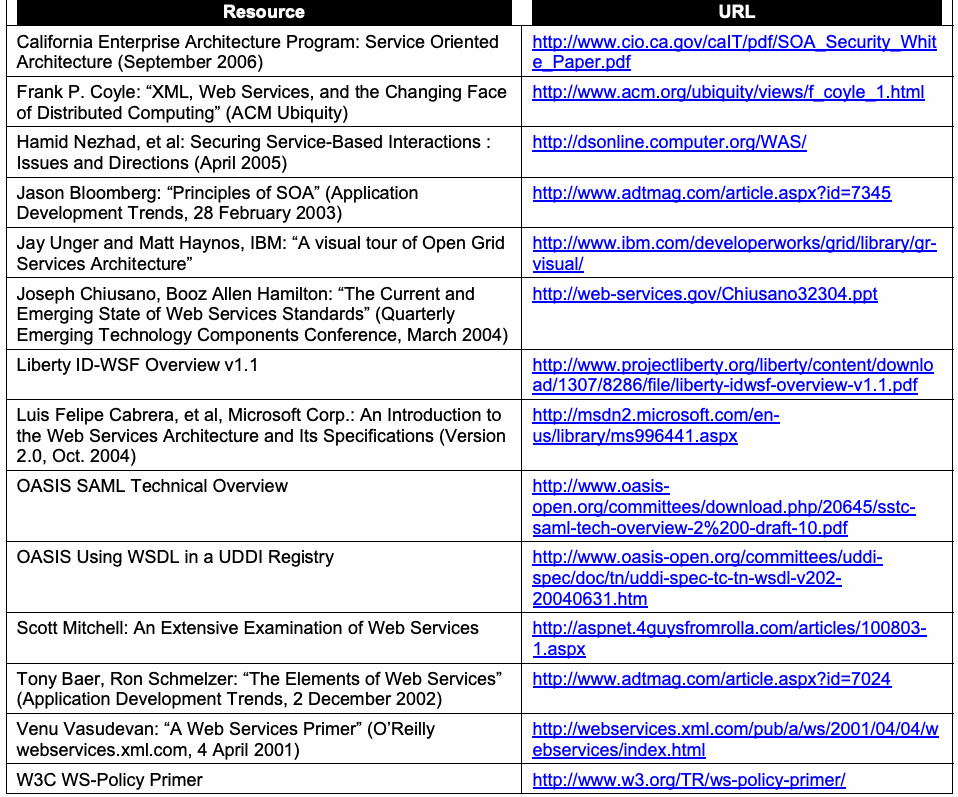
抽出したテキスト（原本と未照合・参考）
| Resource | URL |
| California Enterprise Architecture Program: Service Oriented Architecture (September 2006) | http://www.cio.ca.gov/caIT/pdf/SOA_Security_Whit e_Paper.pdf |
| Frank P. Coyle: “XML, Web Services, and the Changing Face of Distributed Computing” (ACM Ubiquity) | http://www.acm.org/ubiquity/views/f_coyle_1.html |
| Hamid Nezhad, et al: Securing Service-Based Interactions : Issues and Directions (April 2005) | http://dsonline.computer.org/WAS/ |
| Jason Bloomberg: “Principles of SOA” (Application Development Trends, 28 February 2003) | http://www.adtmag.com/article.aspx?id=7345 |
| Jay Unger and Matt Haynos, IBM: “A visual tour of Open Grid Services Architecture” | http://www.ibm.com/developerworks/grid/library/gr visual/ |
| Joseph Chiusano, Booz Allen Hamilton: “The Current and Emerging State of Web Services Standards” (Quarterly Emerging Technology Components Conference, March 2004) | http://web-services.gov/Chiusano32304.ppt |
| Liberty ID-WSF Overview v1.1 | http://www.projectliberty.org/liberty/content/downlo ad/1307/8286/file/liberty-idwsf-overview-v1.1.pdf |
| Luis Felipe Cabrera, et al, Microsoft Corp.: An Introduction to the Web Services Architecture and Its Specifications (Version 2.0, Oct. 2004) | http://msdn2.microsoft.com/en us/library/ms996441.aspx |
| OASIS SAML Technical Overview | http://www.oasis open.org/committees/download.php/20645/sstc saml-tech-overview-2%200-draft-10.pdf |
| OASIS Using WSDL in a UDDI Registry | http://www.oasis-open.org/committees/uddi spec/doc/tn/uddi-spec-tc-tn-wsdl-v202 20040631.htm |
| Scott Mitchell: An Extensive Examination of Web Services | http://aspnet.4guysfromrolla.com/articles/100803 1.aspx |
| Tony Baer, Ron Schmelzer: “The Elements of Web Services” (Application Development Trends, 2 December 2002) | http://www.adtmag.com/article.aspx?id=7024 |
| Venu Vasudevan: “A Web Services Primer” (O’Reilly webservices.xml.com, 4 April 2001) | http://webservices.xml.com/pub/a/ws/2001/04/04/w ebservices/index.html |
| W3C WS-Policy Primer | http://www.w3.org/TR/ws-policy-primer/ |
抽出したテキストの訳（原本と未照合・参考）
| 資料 | URL |
| California Enterprise Architecture Program: Service Oriented Architecture (September 2006) | http://www.cio.ca.gov/caIT/pdf/SOA_Security_Whit e_Paper.pdf |
| Frank P. Coyle: “XML, Web Services, and the Changing Face of Distributed Computing” (ACM Ubiquity) | http://www.acm.org/ubiquity/views/f_coyle_1.html |
| Hamid Nezhad, et al: Securing Service-Based Interactions : Issues and Directions (April 2005) | http://dsonline.computer.org/WAS/ |
| Jason Bloomberg: “Principles of SOA” (Application Development Trends, 28 February 2003) | http://www.adtmag.com/article.aspx?id=7345 |
| Jay Unger and Matt Haynos, IBM: “A visual tour of Open Grid Services Architecture” | http://www.ibm.com/developerworks/grid/library/gr visual/ |
| Joseph Chiusano, Booz Allen Hamilton: “The Current and Emerging State of Web Services Standards” (Quarterly Emerging Technology Components Conference, March 2004) | http://web-services.gov/Chiusano32304.ppt |
| Liberty ID-WSF Overview v1.1 | http://www.projectliberty.org/liberty/content/downlo ad/1307/8286/file/liberty-idwsf-overview-v1.1.pdf |
| Luis Felipe Cabrera, et al, Microsoft Corp.: An Introduction to the Web Services Architecture and Its Specifications (Version 2.0, Oct. 2004) | http://msdn2.microsoft.com/en us/library/ms996441.aspx |
| OASIS SAML Technical Overview | http://www.oasis open.org/committees/download.php/20645/sstc saml-tech-overview-2%200-draft-10.pdf |
| OASIS Using WSDL in a UDDI Registry | http://www.oasis-open.org/committees/uddi spec/doc/tn/uddi-spec-tc-tn-wsdl-v202 20040631.htm |
| Scott Mitchell: An Extensive Examination of Web Services | http://aspnet.4guysfromrolla.com/articles/100803 1.aspx |
| Tony Baer, Ron Schmelzer: “The Elements of Web Services” (Application Development Trends, 2 December 2002) | http://www.adtmag.com/article.aspx?id=7024 |
| Venu Vasudevan: “A Web Services Primer” (O’Reilly webservices.xml.com, 4 April 2001) | http://webservices.xml.com/pub/a/ws/2001/04/04/w ebservices/index.html |
| W3C WS-Policy Primer | http://www.w3.org/TR/ws-policy-primer/ |
F.2 Web Services Security Standards
F.2 Webサービス・セキュリティ規格
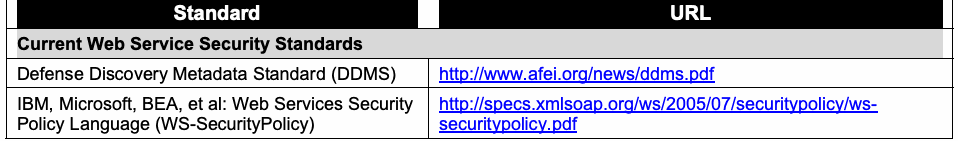
抽出したテキスト（原本と未照合・参考）
| Standard | URL |
| Current Web Service Security Standards | |
| Defense Discovery Metadata Standard (DDMS) | http://www.afei.org/news/ddms.pdf |
| IBM, Microsoft, BEA, et al: Web Services Security Policy Language (WS-SecurityPolicy) | http://specs.xmlsoap.org/ws/2005/07/securitypolicy/ws securitypolicy.pdf |
抽出したテキストの訳（原本と未照合・参考）
| 規格 | URL |
| 現行のWebサービス・セキュリティ規格 | |
| Defense Discovery Metadata Standard (DDMS) | http://www.afei.org/news/ddms.pdf |
| IBM, Microsoft, BEA, et al: Web Services Security Policy Language (WS-SecurityPolicy) | http://specs.xmlsoap.org/ws/2005/07/securitypolicy/ws securitypolicy.pdf |
F-1
F-1
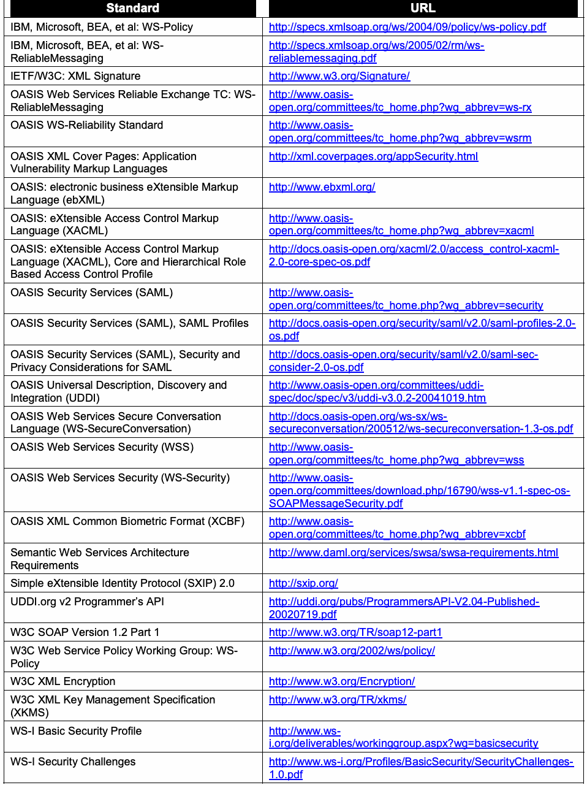
抽出したテキスト（原本と未照合・参考）
| Standard | URL |
| IBM, Microsoft, BEA, et al: WS-Policy | http://specs.xmlsoap.org/ws/2004/09/policy/ws-policy.pdf |
| IBM, Microsoft, BEA, et al: WS- ReliableMessaging | http://specs.xmlsoap.org/ws/2005/02/rm/ws reliablemessaging.pdf |
| IETF/W3C: XML Signature | http://www.w3.org/Signature/ |
| OASIS Web Services Reliable Exchange TC: WS- ReliableMessaging | http://www.oasis open.org/committees/tc_home.php?wg_abbrev=ws-rx |
| OASIS WS-Reliability Standard | http://www.oasis open.org/committees/tc_home.php?wg_abbrev=wsrm |
| OASIS XML Cover Pages: Application Vulnerability Markup Languages | http://xml.coverpages.org/appSecurity.html |
| OASIS: electronic business eXtensible Markup Language (ebXML) | http://www.ebxml.org/ |
| OASIS: eXtensible Access Control Markup Language (XACML) | http://www.oasis open.org/committees/tc_home.php?wg_abbrev=xacml |
| OASIS: eXtensible Access Control Markup Language (XACML), Core and Hierarchical Role Based Access Control Profile | http://docs.oasis-open.org/xacml/2.0/access_control-xacml 2.0-core-spec-os.pdf |
| OASIS Security Services (SAML) | http://www.oasis open.org/committees/tc_home.php?wg_abbrev=security |
| OASIS Security Services (SAML), SAML Profiles | http://docs.oasis-open.org/security/saml/v2.0/saml-profiles-2.0 os.pdf |
| OASIS Security Services (SAML), Security and Privacy Considerations for SAML | http://docs.oasis-open.org/security/saml/v2.0/saml-sec consider-2.0-os.pdf |
| OASIS Universal Description, Discovery and Integration (UDDI) | http://www.oasis-open.org/committees/uddi spec/doc/spec/v3/uddi-v3.0.2-20041019.htm |
| OASIS Web Services Secure Conversation Language (WS-SecureConversation) | http://docs.oasis-open.org/ws-sx/ws secureconversation/200512/ws-secureconversation-1.3-os.pdf |
| OASIS Web Services Security (WSS) | http://www.oasis open.org/committees/tc_home.php?wg_abbrev=wss |
| OASIS Web Services Security (WS-Security) | http://www.oasis open.org/committees/download.php/16790/wss-v1.1-spec-os- SOAPMessageSecurity.pdf |
| OASIS XML Common Biometric Format (XCBF) | http://www.oasis open.org/committees/tc_home.php?wg_abbrev=xcbf |
| Semantic Web Services Architecture Requirements | http://www.daml.org/services/swsa/swsa-requirements.html |
| Simple eXtensible Identity Protocol (SXIP) 2.0 | http://sxip.org/ |
| UDDI.org v2 Programmer’s API | http://uddi.org/pubs/ProgrammersAPI-V2.04-Published 20020719.pdf |
| W3C SOAP Version 1.2 Part 1 | http://www.w3.org/TR/soap12-part1 |
| W3C Web Service Policy Working Group: WS- Policy | http://www.w3.org/2002/ws/policy/ |
| W3C XML Encryption | http://www.w3.org/Encryption/ |
| W3C XML Key Management Specification (XKMS) | http://www.w3.org/TR/xkms/ |
| WS-I Basic Security Profile | http://www.ws i.org/deliverables/workinggroup.aspx?wg=basicsecurity |
| WS-I Security Challenges | http://www.ws-i.org/Profiles/BasicSecurity/SecurityChallenges 1.0.pdf |
抽出したテキストの訳（原本と未照合・参考）
| 規格 | URL |
| IBM, Microsoft, BEA, et al: WS-Policy | http://specs.xmlsoap.org/ws/2004/09/policy/ws-policy.pdf |
| IBM, Microsoft, BEA, et al: WS- ReliableMessaging | http://specs.xmlsoap.org/ws/2005/02/rm/ws reliablemessaging.pdf |
| IETF/W3C: XML Signature | http://www.w3.org/Signature/ |
| OASIS Web Services Reliable Exchange TC: WS- ReliableMessaging | http://www.oasis open.org/committees/tc_home.php?wg_abbrev=ws-rx |
| OASIS WS-Reliability Standard | http://www.oasis open.org/committees/tc_home.php?wg_abbrev=wsrm |
| OASIS XML Cover Pages: Application Vulnerability Markup Languages | http://xml.coverpages.org/appSecurity.html |
| OASIS: electronic business eXtensible Markup Language (ebXML) | http://www.ebxml.org/ |
| OASIS: eXtensible Access Control Markup Language (XACML) | http://www.oasis open.org/committees/tc_home.php?wg_abbrev=xacml |
| OASIS: eXtensible Access Control Markup Language (XACML), Core and Hierarchical Role Based Access Control Profile | http://docs.oasis-open.org/xacml/2.0/access_control-xacml 2.0-core-spec-os.pdf |
| OASIS Security Services (SAML) | http://www.oasis open.org/committees/tc_home.php?wg_abbrev=security |
| OASIS Security Services (SAML), SAML Profiles | http://docs.oasis-open.org/security/saml/v2.0/saml-profiles-2.0 os.pdf |
| OASIS Security Services (SAML), Security and Privacy Considerations for SAML | http://docs.oasis-open.org/security/saml/v2.0/saml-sec consider-2.0-os.pdf |
| OASIS Universal Description, Discovery and Integration (UDDI) | http://www.oasis-open.org/committees/uddi spec/doc/spec/v3/uddi-v3.0.2-20041019.htm |
| OASIS Web Services Secure Conversation Language (WS-SecureConversation) | http://docs.oasis-open.org/ws-sx/ws secureconversation/200512/ws-secureconversation-1.3-os.pdf |
| OASIS Web Services Security (WSS) | http://www.oasis open.org/committees/tc_home.php?wg_abbrev=wss |
| OASIS Web Services Security (WS-Security) | http://www.oasis open.org/committees/download.php/16790/wss-v1.1-spec-os- SOAPMessageSecurity.pdf |
| OASIS XML Common Biometric Format (XCBF) | http://www.oasis open.org/committees/tc_home.php?wg_abbrev=xcbf |
| Semantic Web Services Architecture Requirements | http://www.daml.org/services/swsa/swsa-requirements.html |
| Simple eXtensible Identity Protocol (SXIP) 2.0 | http://sxip.org/ |
| UDDI.org v2 Programmer’s API | http://uddi.org/pubs/ProgrammersAPI-V2.04-Published 20020719.pdf |
| W3C SOAP Version 1.2 Part 1 | http://www.w3.org/TR/soap12-part1 |
| W3C Web Service Policy Working Group: WS- Policy | http://www.w3.org/2002/ws/policy/ |
| W3C XML Encryption | http://www.w3.org/Encryption/ |
| W3C XML Key Management Specification (XKMS) | http://www.w3.org/TR/xkms/ |
| WS-I Basic Security Profile | http://www.ws i.org/deliverables/workinggroup.aspx?wg=basicsecurity |
| WS-I Security Challenges | http://www.ws-i.org/Profiles/BasicSecurity/SecurityChallenges 1.0.pdf |
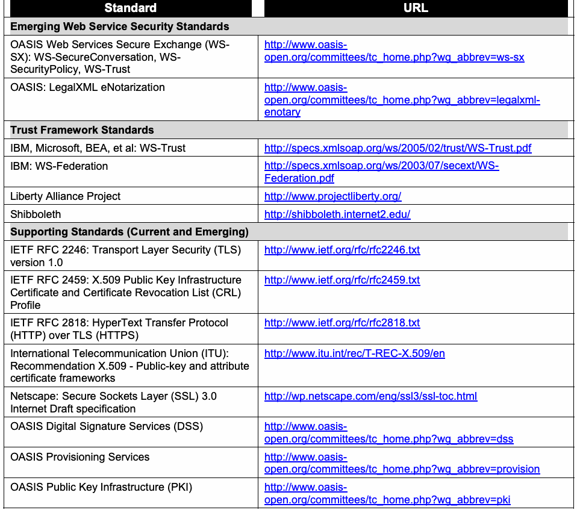
抽出したテキスト（原本と未照合・参考）
| Standard | URL |
| Emerging Web Service Security Standards | |
| OASIS Web Services Secure Exchange (WS- SX): WS-SecureConversation, WS- SecurityPolicy, WS-Trust | http://www.oasis open.org/committees/tc_home.php?wg_abbrev=ws-sx |
| OASIS: LegalXML eNotarization | http://www.oasis open.org/committees/tc_home.php?wg_abbrev=legalxml enotary |
| Trust Framework Standards | |
| IBM, Microsoft, BEA, et al: WS-Trust | http://specs.xmlsoap.org/ws/2005/02/trust/WS-Trust.pdf |
| IBM: WS-Federation | http://specs.xmlsoap.org/ws/2003/07/secext/WS Federation.pdf |
| Liberty Alliance Project | http://www.projectliberty.org/ |
| Shibboleth | http://shibboleth.internet2.edu/ |
| Supporting Standards (Current and Emerging) | |
| IETF RFC 2246: Transport Layer Security (TLS) version 1.0 | http://www.ietf.org/rfc/rfc2246.txt |
| IETF RFC 2459: X.509 Public Key Infrastructure Certificate and Certificate Revocation List (CRL) Profile | http://www.ietf.org/rfc/rfc2459.txt |
| IETF RFC 2818: HyperText Transfer Protocol (HTTP) over TLS (HTTPS) | http://www.ietf.org/rfc/rfc2818.txt |
| International Telecommunication Union (ITU): Recommendation X.509 - Public-key and attribute certificate frameworks | http://www.itu.int/rec/T-REC-X.509/en |
| Netscape: Secure Sockets Layer (SSL) 3.0 Internet Draft specification | http://wp.netscape.com/eng/ssl3/ssl-toc.html |
| OASIS Digital Signature Services (DSS) | http://www.oasis open.org/committees/tc_home.php?wg_abbrev=dss |
| OASIS Provisioning Services | http://www.oasis open.org/committees/tc_home.php?wg_abbrev=provision |
| OASIS Public Key Infrastructure (PKI) | http://www.oasis open.org/committees/tc_home.php?wg_abbrev=pki |
抽出したテキストの訳（原本と未照合・参考）
| 規格 | URL |
| 新興のWebサービス・セキュリティ規格 | |
| OASIS Web Services Secure Exchange (WS- SX): WS-SecureConversation, WS- SecurityPolicy, WS-Trust | http://www.oasis open.org/committees/tc_home.php?wg_abbrev=ws-sx |
| OASIS: LegalXML eNotarization | http://www.oasis open.org/committees/tc_home.php?wg_abbrev=legalxml enotary |
| 信頼フレームワーク規格 | |
| IBM, Microsoft, BEA, et al: WS-Trust | http://specs.xmlsoap.org/ws/2005/02/trust/WS-Trust.pdf |
| IBM: WS-Federation | http://specs.xmlsoap.org/ws/2003/07/secext/WS Federation.pdf |
| Liberty Alliance Project | http://www.projectliberty.org/ |
| Shibboleth | http://shibboleth.internet2.edu/ |
| 関連規格（現行および新興） | |
| IETF RFC 2246: Transport Layer Security (TLS) version 1.0 | http://www.ietf.org/rfc/rfc2246.txt |
| IETF RFC 2459: X.509 Public Key Infrastructure Certificate and Certificate Revocation List (CRL) Profile | http://www.ietf.org/rfc/rfc2459.txt |
| IETF RFC 2818: HyperText Transfer Protocol (HTTP) over TLS (HTTPS) | http://www.ietf.org/rfc/rfc2818.txt |
| International Telecommunication Union (ITU): Recommendation X.509 - Public-key and attribute certificate frameworks | http://www.itu.int/rec/T-REC-X.509/en |
| Netscape: Secure Sockets Layer (SSL) 3.0 Internet Draft specification | http://wp.netscape.com/eng/ssl3/ssl-toc.html |
| OASIS Digital Signature Services (DSS) | http://www.oasis open.org/committees/tc_home.php?wg_abbrev=dss |
| OASIS Provisioning Services | http://www.oasis open.org/committees/tc_home.php?wg_abbrev=provision |
| OASIS Public Key Infrastructure (PKI) | http://www.oasis open.org/committees/tc_home.php?wg_abbrev=pki |
F.3 U.S. Government Publications
F.3 米国政府刊行物
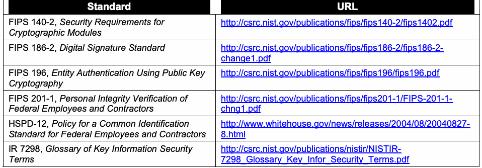
抽出したテキスト（原本と未照合・参考）
| Standard | URL |
| FIPS 140-2, Security Requirements for Cryptographic Modules | http://csrc.nist.gov/publications/fips/fips140-2/fips1402.pdf |
| FIPS 186-2, Digital Signature Standard | http://csrc.nist.gov/publications/fips/fips186-2/fips186-2 change1.pdf |
| FIPS 196, Entity Authentication Using Public Key Cryptography | http://csrc.nist.gov/publications/fips/fips196/fips196.pdf |
| FIPS 201-1, Personal Integrity Verification of Federal Employees and Contractors | http://csrc.nist.gov/publications/fips/fips201-1/FIPS-201-1 chng1.pdf |
| HSPD-12, Policy for a Common Identification Standard for Federal Employees and Contractors | http://www.whitehouse.gov/news/releases/2004/08/20040827 8.html |
| IR 7298, Glossary of Key Information Security Terms | http://csrc.nist.gov/publications/nistir/NISTIR 7298_Glossary_Key_Infor_Security_Terms.pdf |
抽出したテキストの訳（原本と未照合・参考）
| 規格 | URL |
| FIPS 140-2, Security Requirements for Cryptographic Modules | http://csrc.nist.gov/publications/fips/fips140-2/fips1402.pdf |
| FIPS 186-2, Digital Signature Standard | http://csrc.nist.gov/publications/fips/fips186-2/fips186-2 change1.pdf |
| FIPS 196, Entity Authentication Using Public Key Cryptography | http://csrc.nist.gov/publications/fips/fips196/fips196.pdf |
| FIPS 201-1, Personal Integrity Verification of Federal Employees and Contractors | http://csrc.nist.gov/publications/fips/fips201-1/FIPS-201-1 chng1.pdf |
| HSPD-12, Policy for a Common Identification Standard for Federal Employees and Contractors | http://www.whitehouse.gov/news/releases/2004/08/20040827 8.html |
| IR 7298, Glossary of Key Information Security Terms | http://csrc.nist.gov/publications/nistir/NISTIR 7298_Glossary_Key_Infor_Security_Terms.pdf |
F-3
F-3
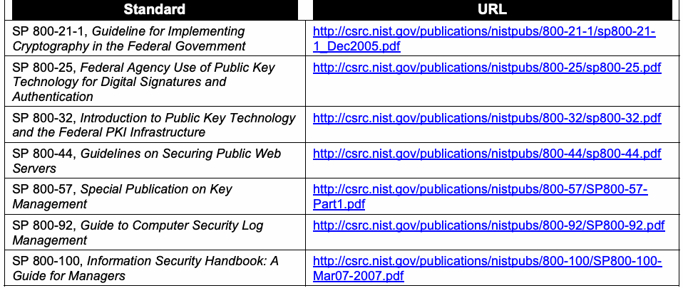
抽出したテキスト（原本と未照合・参考）
| Standard | URL |
| SP 800-21-1, Guideline for Implementing Cryptography in the Federal Government | http://csrc.nist.gov/publications/nistpubs/800-21-1/sp800-21 1_Dec2005.pdf |
| SP 800-25, Federal Agency Use of Public Key Technology for Digital Signatures and Authentication | http://csrc.nist.gov/publications/nistpubs/800-25/sp800-25.pdf |
| SP 800-32, Introduction to Public Key Technology and the Federal PKI Infrastructure | http://csrc.nist.gov/publications/nistpubs/800-32/sp800-32.pdf |
| SP 800-44, Guidelines on Securing Public Web Servers | http://csrc.nist.gov/publications/nistpubs/800-44/sp800-44.pdf |
| SP 800-57, Special Publication on Key Management | http://csrc.nist.gov/publications/nistpubs/800-57/SP800-57 Part1.pdf |
| SP 800-92, Guide to Computer Security Log Management | http://csrc.nist.gov/publications/nistpubs/800-92/SP800-92.pdf |
| SP 800-100, Information Security Handbook: A Guide for Managers | http://csrc.nist.gov/publications/nistpubs/800-100/SP800-100 Mar07-2007.pdf |
抽出したテキストの訳（原本と未照合・参考）
| 規格 | URL |
| SP 800-21-1, Guideline for Implementing Cryptography in the Federal Government | http://csrc.nist.gov/publications/nistpubs/800-21-1/sp800-21 1_Dec2005.pdf |
| SP 800-25, Federal Agency Use of Public Key Technology for Digital Signatures and Authentication | http://csrc.nist.gov/publications/nistpubs/800-25/sp800-25.pdf |
| SP 800-32, Introduction to Public Key Technology and the Federal PKI Infrastructure | http://csrc.nist.gov/publications/nistpubs/800-32/sp800-32.pdf |
| SP 800-44, Guidelines on Securing Public Web Servers | http://csrc.nist.gov/publications/nistpubs/800-44/sp800-44.pdf |
| SP 800-57, Special Publication on Key Management | http://csrc.nist.gov/publications/nistpubs/800-57/SP800-57 Part1.pdf |
| SP 800-92, Guide to Computer Security Log Management | http://csrc.nist.gov/publications/nistpubs/800-92/SP800-92.pdf |
| SP 800-100, Information Security Handbook: A Guide for Managers | http://csrc.nist.gov/publications/nistpubs/800-100/SP800-100 Mar07-2007.pdf |
F.4 Organizations
F.4 組織
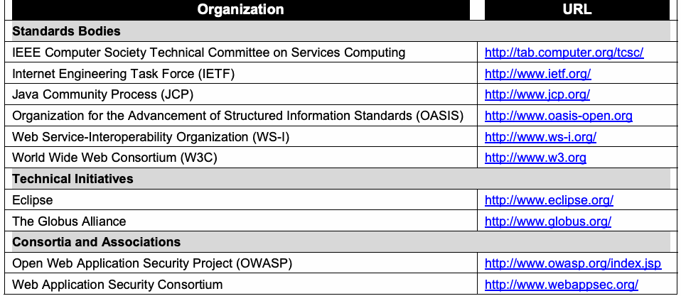
抽出したテキスト（原本と未照合・参考）
| Organization | URL |
| Standards Bodies | |
| IEEE Computer Society Technical Committee on Services Computing | http://tab.computer.org/tcsc/ |
| Internet Engineering Task Force (IETF) | http://www.ietf.org/ |
| Java Community Process (JCP) | http://www.jcp.org/ |
| Organization for the Advancement of Structured Information Standards (OASIS) | http://www.oasis-open.org |
| Web Service-Interoperability Organization (WS-I) | http://www.ws-i.org/ |
| World Wide Web Consortium (W3C) | http://www.w3.org |
| Technical Initiatives | |
| Eclipse | http://www.eclipse.org/ |
| The Globus Alliance | http://www.globus.org/ |
| Consortia and Associations | |
| Open Web Application Security Project (OWASP) | http://www.owasp.org/index.jsp |
| Web Application Security Consortium | http://www.webappsec.org/ |
抽出したテキストの訳（原本と未照合・参考）
| 組織 | URL |
| 標準化団体 | |
| IEEE Computer Society Technical Committee on Services Computing | http://tab.computer.org/tcsc/ |
| Internet Engineering Task Force (IETF) | http://www.ietf.org/ |
| Java Community Process (JCP) | http://www.jcp.org/ |
| Organization for the Advancement of Structured Information Standards (OASIS) | http://www.oasis-open.org |
| Web Service-Interoperability Organization (WS-I) | http://www.ws-i.org/ |
| World Wide Web Consortium (W3C) | http://www.w3.org |
| 技術イニシアティブ | |
| Eclipse | http://www.eclipse.org/ |
| The Globus Alliance | http://www.globus.org/ |
| コンソーシアムおよび協会 | |
| Open Web Application Security Project (OWASP) | http://www.owasp.org/index.jsp |
| Web Application Security Consortium | http://www.webappsec.org/ |
F.5 Web Pages, Sites, and Portals
F.5 Webページ、サイトおよびポータル
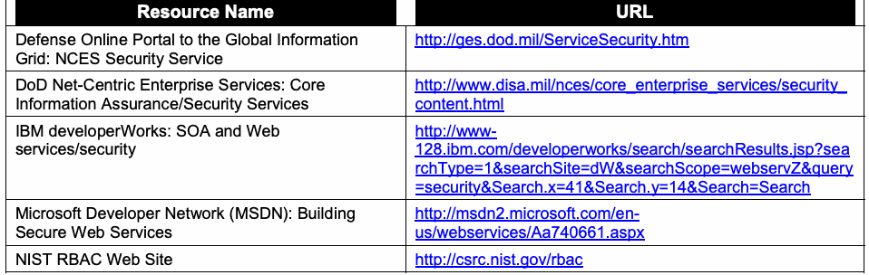
抽出したテキスト（原本と未照合・参考）
| Resource Name | URL |
| Defense Online Portal to the Global Information Grid: NCES Security Service | http://ges.dod.mil/ServiceSecurity.htm |
| DoD Net-Centric Enterprise Services: Core Information Assurance/Security Services | http://www.disa.mil/nces/core_enterprise_services/security_ content.html |
| IBM developerWorks: SOA and Web services/security | http://www 128.ibm.com/developerworks/search/searchResults.jsp?sea rchType=1&searchSite=dW&searchScope=webservZ&query =security&Search.x=41&Search.y=14&Search=Search |
| Microsoft Developer Network (MSDN): Building Secure Web Services | http://msdn2.microsoft.com/en us/webservices/Aa740661.aspx |
| NIST RBAC Web Site | http://csrc.nist.gov/rbac |
抽出したテキストの訳（原本と未照合・参考）
| 資料名 | URL |
| Defense Online Portal to the Global Information Grid: NCES Security Service | http://ges.dod.mil/ServiceSecurity.htm |
| DoD Net-Centric Enterprise Services: Core Information Assurance/Security Services | http://www.disa.mil/nces/core_enterprise_services/security_ content.html |
| IBM developerWorks: SOA and Web services/security | http://www 128.ibm.com/developerworks/search/searchResults.jsp?sea rchType=1&searchSite=dW&searchScope=webservZ&query =security&Search.x=41&Search.y=14&Search=Search |
| Microsoft Developer Network (MSDN): Building Secure Web Services | http://msdn2.microsoft.com/en us/webservices/Aa740661.aspx |
| NIST RBAC Web Site | http://csrc.nist.gov/rbac |
F-4
F-4
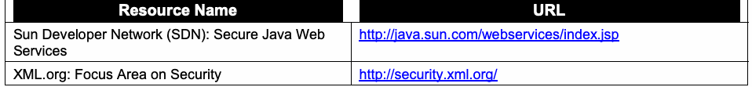
抽出したテキスト（原本と未照合・参考）
| Resource Name | URL |
| Sun Developer Network (SDN): Secure Java Web Services | http://java.sun.com/webservices/index.jsp |
| XML.org: Focus Area on Security | http://security.xml.org/ |
抽出したテキストの訳（原本と未照合・参考）
| 資料名 | URL |
| Sun Developer Network (SDN): Secure Java Web Services | http://java.sun.com/webservices/index.jsp |
| XML.org: Focus Area on Security | http://security.xml.org/ |
F.6 Online Forums
F.6 オンライン・フォーラム
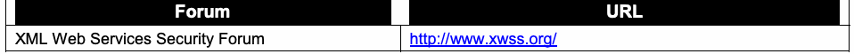
抽出したテキスト（原本と未照合・参考）
| Forum | URL |
| XML Web Services Security Forum | http://www.xwss.org/ |
抽出したテキストの訳（原本と未照合・参考）
| フォーラム | URL |
| XML Web Services Security Forum | http://www.xwss.org/ |
F.7 Conferences and Workshops
F.7 会議およびワークショップ
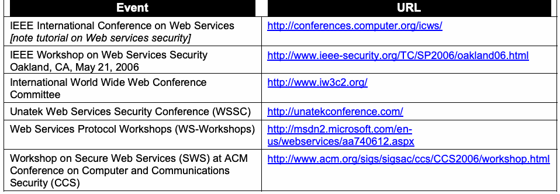
抽出したテキスト（原本と未照合・参考）
| Event | URL |
| IEEE International Conference on Web Services [note tutorial on Web services security] | http://conferences.computer.org/icws/ |
| IEEE Workshop on Web Services Security Oakland, CA, May 21, 2006 | http://www.ieee-security.org/TC/SP2006/oakland06.html |
| International World Wide Web Conference Committee | http://www.iw3c2.org/ |
| Unatek Web Services Security Conference (WSSC) | http://unatekconference.com/ |
| Web Services Protocol Workshops (WS-Workshops) | http://msdn2.microsoft.com/en us/webservices/aa740612.aspx |
| Workshop on Secure Web Services (SWS) at ACM Conference on Computer and Communications Security (CCS) | http://www.acm.org/sigs/sigsac/ccs/CCS2006/workshop.html |
抽出したテキストの訳（原本と未照合・参考）
| イベント | URL |
| IEEE International Conference on Web Services [note tutorial on Web services security] | http://conferences.computer.org/icws/ |
| IEEE Workshop on Web Services Security Oakland, CA, May 21, 2006 | http://www.ieee-security.org/TC/SP2006/oakland06.html |
| International World Wide Web Conference Committee | http://www.iw3c2.org/ |
| Unatek Web Services Security Conference (WSSC) | http://unatekconference.com/ |
| Web Services Protocol Workshops (WS-Workshops) | http://msdn2.microsoft.com/en us/webservices/aa740612.aspx |
| Workshop on Secure Web Services (SWS) at ACM Conference on Computer and Communications Security (CCS) | http://www.acm.org/sigs/sigsac/ccs/CCS2006/workshop.html |
F.8 Online Documents
F.8 オンライン文書
Some of these documents may also be available in hardcopy format. They are listed here rather than in Appendix E because they can be readily obtained online.
これらの文書の一部は印刷版でも入手できる場合がある（may）。付録Eではなくここに掲載するのは、オンラインで容易に入手できる（can）ためである。
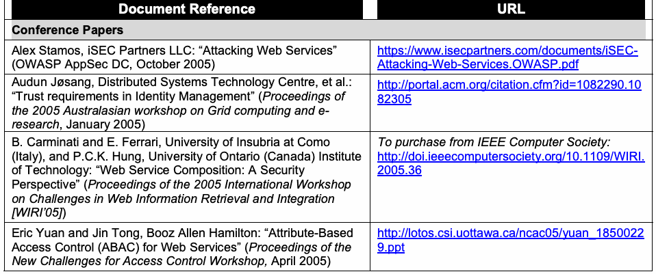
抽出したテキスト（原本と未照合・参考）
| Document Reference | URL |
| Conference Papers | |
| Alex Stamos, iSEC Partners LLC: “Attacking Web Services” (OWASP AppSec DC, October 2005) | https://www.isecpartners.com/documents/iSEC- Attacking-Web-Services.OWASP.pdf |
| Audun Jøsang, Distributed Systems Technology Centre, et al.: “Trust requirements in Identity Management” (Proceedings of the 2005 Australasian workshop on Grid computing and e- research, January 2005) | http://portal.acm.org/citation.cfm?id=1082290.10 82305 |
| B. Carminati and E. Ferrari, University of Insubria at Como (Italy), and P.C.K. Hung, University of Ontario (Canada) Institute of Technology: “Web Service Composition: A Security Perspective” (Proceedings of the 2005 International Workshop on Challenges in Web Information Retrieval and Integration [WIRI’05]) | To purchase from IEEE Computer Society: http://doi.ieeecomputersociety.org/10.1109/WIRI. 2005.36 |
| Eric Yuan and Jin Tong, Booz Allen Hamilton: “Attribute-Based Access Control (ABAC) for Web Services” (Proceedings of the New Challenges for Access Control Workshop, April 2005) | http://lotos.csi.uottawa.ca/ncac05/yuan_1850022 9.ppt |
抽出したテキストの訳（原本と未照合・参考）
| 文献 | URL |
| 会議論文 | |
| Alex Stamos, iSEC Partners LLC: “Attacking Web Services” (OWASP AppSec DC, October 2005) | https://www.isecpartners.com/documents/iSEC- Attacking-Web-Services.OWASP.pdf |
| Audun Jøsang, Distributed Systems Technology Centre, et al.: “Trust requirements in Identity Management” (Proceedings of the 2005 Australasian workshop on Grid computing and e- research, January 2005) | http://portal.acm.org/citation.cfm?id=1082290.10 82305 |
| B. Carminati and E. Ferrari, University of Insubria at Como (Italy), and P.C.K. Hung, University of Ontario (Canada) Institute of Technology: “Web Service Composition: A Security Perspective” (Proceedings of the 2005 International Workshop on Challenges in Web Information Retrieval and Integration [WIRI’05]) | To purchase from IEEE Computer Society: http://doi.ieeecomputersociety.org/10.1109/WIRI. 2005.36 |
| Eric Yuan and Jin Tong, Booz Allen Hamilton: “Attribute-Based Access Control (ABAC) for Web Services” (Proceedings of the New Challenges for Access Control Workshop, April 2005) | http://lotos.csi.uottawa.ca/ncac05/yuan_1850022 9.ppt |
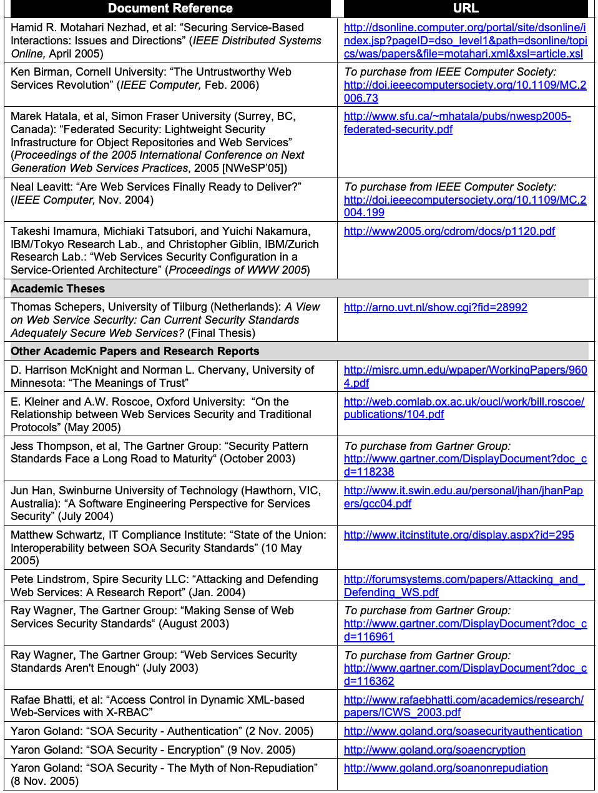
抽出したテキスト（原本と未照合・参考）
| Document Reference | URL |
| Hamid R. Motahari Nezhad, et al: “Securing Service-Based Interactions: Issues and Directions” (IEEE Distributed Systems Online, April 2005) | http://dsonline.computer.org/portal/site/dsonline/i ndex.jsp?pageID=dso_level1&path=dsonline/topi cs/was/papers&file=motahari.xml&xsl=article.xsl |
| Ken Birman, Cornell University: “The Untrustworthy Web Services Revolution” (IEEE Computer, Feb. 2006) | To purchase from IEEE Computer Society: http://doi.ieeecomputersociety.org/10.1109/MC.2 006.73 |
| Marek Hatala, et al, Simon Fraser University (Surrey, BC, Canada): “Federated Security: Lightweight Security Infrastructure for Object Repositories and Web Services” (Proceedings of the 2005 International Conference on Next Generation Web Services Practices, 2005 [NWeSP’05]) | http://www.sfu.ca/~mhatala/pubs/nwesp2005 federated-security.pdf |
| Neal Leavitt: “Are Web Services Finally Ready to Deliver?” (IEEE Computer, Nov. 2004) | To purchase from IEEE Computer Society: http://doi.ieeecomputersociety.org/10.1109/MC.2 004.199 |
| Takeshi Imamura, Michiaki Tatsubori, and Yuichi Nakamura, IBM/Tokyo Research Lab., and Christopher Giblin, IBM/Zurich Research Lab.: “Web Services Security Configuration in a Service-Oriented Architecture” (Proceedings of WWW 2005) | http://www2005.org/cdrom/docs/p1120.pdf |
| Academic Theses | |
| Thomas Schepers, University of Tilburg (Netherlands): A View on Web Service Security: Can Current Security Standards Adequately Secure Web Services? (Final Thesis) | http://arno.uvt.nl/show.cgi?fid=28992 |
| Other Academic Papers and Research Reports | |
| D. Harrison McKnight and Norman L. Chervany, University of Minnesota: “The Meanings of Trust” | http://misrc.umn.edu/wpaper/WorkingPapers/960 4.pdf |
| E. Kleiner and A.W. Roscoe, Oxford University: “On the Relationship between Web Services Security and Traditional Protocols” (May 2005) | http://web.comlab.ox.ac.uk/oucl/work/bill.roscoe/ publications/104.pdf |
| Jess Thompson, et al, The Gartner Group: “Security Pattern Standards Face a Long Road to Maturity“ (October 2003) | To purchase from Gartner Group: http://www.gartner.com/DisplayDocument?doc_c d=118238 |
| Jun Han, Swinburne University of Technology (Hawthorn, VIC, Australia): “A Software Engineering Perspective for Services Security” (July 2004) | http://www.it.swin.edu.au/personal/jhan/jhanPap ers/gcc04.pdf |
| Matthew Schwartz, IT Compliance Institute: “State of the Union: Interoperability between SOA Security Standards” (10 May 2005) | http://www.itcinstitute.org/display.aspx?id=295 |
| Pete Lindstrom, Spire Security LLC: “Attacking and Defending Web Services: A Research Report” (Jan. 2004) | http://forumsystems.com/papers/Attacking_and_ Defending_WS.pdf |
| Ray Wagner, The Gartner Group: “Making Sense of Web Services Security Standards“ (August 2003) | To purchase from Gartner Group: http://www.gartner.com/DisplayDocument?doc_c d=116961 |
| Ray Wagner, The Gartner Group: “Web Services Security Standards Aren't Enough“ (July 2003) | To purchase from Gartner Group: http://www.gartner.com/DisplayDocument?doc_c d=116362 |
| Rafae Bhatti, et al: “Access Control in Dynamic XML-based Web-Services with X-RBAC” | http://www.rafaebhatti.com/academics/research/ papers/ICWS_2003.pdf |
| Yaron Goland: “SOA Security - Authentication” (2 Nov. 2005) | http://www.goland.org/soasecurityauthentication |
| Yaron Goland: “SOA Security - Encryption” (9 Nov. 2005) | http://www.goland.org/soaencryption |
| Yaron Goland: “SOA Security - The Myth of Non-Repudiation” (8 Nov. 2005) | http://www.goland.org/soanonrepudiation |
抽出したテキストの訳（原本と未照合・参考）
| 文献 | URL |
| Hamid R. Motahari Nezhad, et al: “Securing Service-Based Interactions: Issues and Directions” (IEEE Distributed Systems Online, April 2005) | http://dsonline.computer.org/portal/site/dsonline/i ndex.jsp?pageID=dso_level1&path=dsonline/topi cs/was/papers&file=motahari.xml&xsl=article.xsl |
| Ken Birman, Cornell University: “The Untrustworthy Web Services Revolution” (IEEE Computer, Feb. 2006) | To purchase from IEEE Computer Society: http://doi.ieeecomputersociety.org/10.1109/MC.2 006.73 |
| Marek Hatala, et al, Simon Fraser University (Surrey, BC, Canada): “Federated Security: Lightweight Security Infrastructure for Object Repositories and Web Services” (Proceedings of the 2005 International Conference on Next Generation Web Services Practices, 2005 [NWeSP’05]) | http://www.sfu.ca/~mhatala/pubs/nwesp2005 federated-security.pdf |
| Neal Leavitt: “Are Web Services Finally Ready to Deliver?” (IEEE Computer, Nov. 2004) | To purchase from IEEE Computer Society: http://doi.ieeecomputersociety.org/10.1109/MC.2 004.199 |
| Takeshi Imamura, Michiaki Tatsubori, and Yuichi Nakamura, IBM/Tokyo Research Lab., and Christopher Giblin, IBM/Zurich Research Lab.: “Web Services Security Configuration in a Service-Oriented Architecture” (Proceedings of WWW 2005) | http://www2005.org/cdrom/docs/p1120.pdf |
| 学術論文 | |
| Thomas Schepers, University of Tilburg (Netherlands): A View on Web Service Security: Can Current Security Standards Adequately Secure Web Services? (Final Thesis) | http://arno.uvt.nl/show.cgi?fid=28992 |
| その他の学術論文および研究報告 | |
| D. Harrison McKnight and Norman L. Chervany, University of Minnesota: “The Meanings of Trust” | http://misrc.umn.edu/wpaper/WorkingPapers/960 4.pdf |
| E. Kleiner and A.W. Roscoe, Oxford University: “On the Relationship between Web Services Security and Traditional Protocols” (May 2005) | http://web.comlab.ox.ac.uk/oucl/work/bill.roscoe/ publications/104.pdf |
| Jess Thompson, et al, The Gartner Group: “Security Pattern Standards Face a Long Road to Maturity“ (October 2003) | To purchase from Gartner Group: http://www.gartner.com/DisplayDocument?doc_c d=118238 |
| Jun Han, Swinburne University of Technology (Hawthorn, VIC, Australia): “A Software Engineering Perspective for Services Security” (July 2004) | http://www.it.swin.edu.au/personal/jhan/jhanPap ers/gcc04.pdf |
| Matthew Schwartz, IT Compliance Institute: “State of the Union: Interoperability between SOA Security Standards” (10 May 2005) | http://www.itcinstitute.org/display.aspx?id=295 |
| Pete Lindstrom, Spire Security LLC: “Attacking and Defending Web Services: A Research Report” (Jan. 2004) | http://forumsystems.com/papers/Attacking_and_ Defending_WS.pdf |
| Ray Wagner, The Gartner Group: “Making Sense of Web Services Security Standards“ (August 2003) | To purchase from Gartner Group: http://www.gartner.com/DisplayDocument?doc_c d=116961 |
| Ray Wagner, The Gartner Group: “Web Services Security Standards Aren't Enough“ (July 2003) | To purchase from Gartner Group: http://www.gartner.com/DisplayDocument?doc_c d=116362 |
| Rafae Bhatti, et al: “Access Control in Dynamic XML-based Web-Services with X-RBAC” | http://www.rafaebhatti.com/academics/research/ papers/ICWS_2003.pdf |
| Yaron Goland: “SOA Security - Authentication” (2 Nov. 2005) | http://www.goland.org/soasecurityauthentication |
| Yaron Goland: “SOA Security - Encryption” (9 Nov. 2005) | http://www.goland.org/soaencryption |
| Yaron Goland: “SOA Security - The Myth of Non-Repudiation” (8 Nov. 2005) | http://www.goland.org/soanonrepudiation |
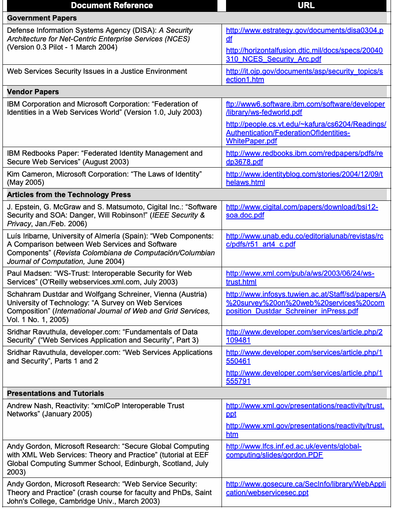
抽出したテキスト（原本と未照合・参考）
| Document Reference | URL |
| Government Papers | |
| Defense Information Systems Agency (DISA): A Security Architecture for Net-Centric Enterprise Services (NCES) (Version 0.3 Pilot - 1 March 2004) | http://www.estrategy.gov/documents/disa0304.p df http://horizontalfusion.dtic.mil/docs/specs/20040 310_NCES_Security_Arc.pdf |
| Web Services Security Issues in a Justice Environment | http://it.ojp.gov/documents/asp/security_topics/s ection1.htm |
| Vendor Papers | |
| IBM Corporation and Microsoft Corporation: “Federation of Identities in a Web Services World” (Version 1.0, July 2003) | ftp://www6.software.ibm.com/software/developer /library/ws-fedworld.pdf http://people.cs.vt.edu/~kafura/cs6204/Readings/ Authentication/FederationOfIdentities WhitePaper.pdf |
| IBM Redbooks Paper: “Federated Identity Management and Secure Web Services” (August 2003) | http://www.redbooks.ibm.com/redpapers/pdfs/re dp3678.pdf |
| Kim Cameron, Microsoft Corporation: “The Laws of Identity” (May 2005) | http://www.identityblog.com/stories/2004/12/09/t helaws.html |
| Articles from the Technology Press | |
| J. Epstein, G. McGraw and S. Matsumoto, Cigital Inc.: “Software Security and SOA: Danger, Will Robinson!” (IEEE Security & Privacy, Jan./Feb. 2006) | http://www.cigital.com/papers/download/bsi12 soa.doc.pdf |
| Luís Iribarne, University of Almería (Spain): “Web Components: A Comparison between Web Services and Software Components” (Revista Colombiana de Computación/Columbian Journal of Computation, June 2004) | http://www.unab.edu.co/editorialunab/revistas/rc c/pdfs/r51_art4_c.pdf |
| Paul Madsen: “WS-Trust: Interoperable Security for Web Services” (O'Reilly webservices.xml.com, July 2003) | http://www.xml.com/pub/a/ws/2003/06/24/ws trust.html |
| Schahram Dustdar and Wolfgang Schreiner, Vienna (Austria) University of Technology: “A Survey on Web Services Composition” (International Journal of Web and Grid Services, Vol. 1 No. 1, 2005) | http://www.infosys.tuwien.ac.at/Staff/sd/papers/A %20survey%20on%20web%20services%20com position_Dustdar_Schreiner_inPress.pdf |
| Sridhar Ravuthula, developer.com: “Fundamentals of Data Security” (“Web Services Application and Security”, Part 3) | http://www.developer.com/services/article.php/2 109481 |
| Sridhar Ravuthula, developer.com: “Web Services Applications and Security”, Parts 1 and 2 | http://www.developer.com/services/article.php/1 550461 http://www.developer.com/services/article.php/1 555791 |
| Presentations and Tutorials | |
| Andrew Nash, Reactivity: “xmlCoP Interoperable Trust Networks” (January 2005) | http://www.xml.gov/presentations/reactivity/trust. ppt http://www.xml.gov/presentations/reactivity/trust. htm |
| Andy Gordon, Microsoft Research: “Secure Global Computing with XML Web Services: Theory and Practice” (tutorial at EEF Global Computing Summer School, Edinburgh, Scotland, July 2003) | http://www.lfcs.inf.ed.ac.uk/events/global computing/slides/gordon.PDF |
| Andy Gordon, Microsoft Research: “Web Service Security: Theory and Practice” (crash course for faculty and PhDs, Saint John's College, Cambridge Univ., March 2003) | http://www.gosecure.ca/SecInfo/library/WebAppli cation/webservicesec.ppt |
抽出したテキストの訳（原本と未照合・参考）
| 文献 | URL |
| 政府刊行物 | |
| Defense Information Systems Agency (DISA): A Security Architecture for Net-Centric Enterprise Services (NCES) (Version 0.3 Pilot - 1 March 2004) | http://www.estrategy.gov/documents/disa0304.p df http://horizontalfusion.dtic.mil/docs/specs/20040 310_NCES_Security_Arc.pdf |
| Web Services Security Issues in a Justice Environment | http://it.ojp.gov/documents/asp/security_topics/s ection1.htm |
| ベンダー刊行物 | |
| IBM Corporation and Microsoft Corporation: “Federation of Identities in a Web Services World” (Version 1.0, July 2003) | ftp://www6.software.ibm.com/software/developer /library/ws-fedworld.pdf http://people.cs.vt.edu/~kafura/cs6204/Readings/ Authentication/FederationOfIdentities WhitePaper.pdf |
| IBM Redbooks Paper: “Federated Identity Management and Secure Web Services” (August 2003) | http://www.redbooks.ibm.com/redpapers/pdfs/re dp3678.pdf |
| Kim Cameron, Microsoft Corporation: “The Laws of Identity” (May 2005) | http://www.identityblog.com/stories/2004/12/09/t helaws.html |
| 技術系報道記事 | |
| J. Epstein, G. McGraw and S. Matsumoto, Cigital Inc.: “Software Security and SOA: Danger, Will Robinson!” (IEEE Security & Privacy, Jan./Feb. 2006) | http://www.cigital.com/papers/download/bsi12 soa.doc.pdf |
| Luís Iribarne, University of Almería (Spain): “Web Components: A Comparison between Web Services and Software Components” (Revista Colombiana de Computación/Columbian Journal of Computation, June 2004) | http://www.unab.edu.co/editorialunab/revistas/rc c/pdfs/r51_art4_c.pdf |
| Paul Madsen: “WS-Trust: Interoperable Security for Web Services” (O'Reilly webservices.xml.com, July 2003) | http://www.xml.com/pub/a/ws/2003/06/24/ws trust.html |
| Schahram Dustdar and Wolfgang Schreiner, Vienna (Austria) University of Technology: “A Survey on Web Services Composition” (International Journal of Web and Grid Services, Vol. 1 No. 1, 2005) | http://www.infosys.tuwien.ac.at/Staff/sd/papers/A %20survey%20on%20web%20services%20com position_Dustdar_Schreiner_inPress.pdf |
| Sridhar Ravuthula, developer.com: “Fundamentals of Data Security” (“Web Services Application and Security”, Part 3) | http://www.developer.com/services/article.php/2 109481 |
| Sridhar Ravuthula, developer.com: “Web Services Applications and Security”, Parts 1 and 2 | http://www.developer.com/services/article.php/1 550461 http://www.developer.com/services/article.php/1 555791 |
| プレゼンテーションおよびチュートリアル | |
| Andrew Nash, Reactivity: “xmlCoP Interoperable Trust Networks” (January 2005) | http://www.xml.gov/presentations/reactivity/trust. ppt http://www.xml.gov/presentations/reactivity/trust. htm |
| Andy Gordon, Microsoft Research: “Secure Global Computing with XML Web Services: Theory and Practice” (tutorial at EEF Global Computing Summer School, Edinburgh, Scotland, July 2003) | http://www.lfcs.inf.ed.ac.uk/events/global computing/slides/gordon.PDF |
| Andy Gordon, Microsoft Research: “Web Service Security: Theory and Practice” (crash course for faculty and PhDs, Saint John's College, Cambridge Univ., March 2003) | http://www.gosecure.ca/SecInfo/library/WebAppli cation/webservicesec.ppt |
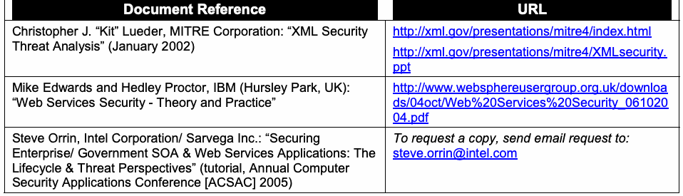
抽出したテキスト（原本と未照合・参考）
| Document Reference | URL |
| Christopher J. “Kit” Lueder, MITRE Corporation: “XML Security Threat Analysis” (January 2002) | http://xml.gov/presentations/mitre4/index.html http://xml.gov/presentations/mitre4/XMLsecurity. ppt |
| Mike Edwards and Hedley Proctor, IBM (Hursley Park, UK): “Web Services Security - Theory and Practice” | http://www.websphereusergroup.org.uk/downloa ds/04oct/Web%20Services%20Security_061020 04.pdf |
| Steve Orrin, Intel Corporation/ Sarvega Inc.: “Securing Enterprise/ Government SOA & Web Services Applications: The Lifecycle & Threat Perspectives” (tutorial, Annual Computer Security Applications Conference [ACSAC] 2005) | To request a copy, send email request to: steve.orrin@intel.com |
抽出したテキストの訳（原本と未照合・参考）
| 文献 | URL |
| Christopher J. “Kit” Lueder, MITRE Corporation: “XML Security Threat Analysis” (January 2002) | http://xml.gov/presentations/mitre4/index.html http://xml.gov/presentations/mitre4/XMLsecurity. ppt |
| Mike Edwards and Hedley Proctor, IBM (Hursley Park, UK): “Web Services Security - Theory and Practice” | http://www.websphereusergroup.org.uk/downloa ds/04oct/Web%20Services%20Security_061020 04.pdf |
| Steve Orrin, Intel Corporation/ Sarvega Inc.: “Securing Enterprise/ Government SOA & Web Services Applications: The Lifecycle & Threat Perspectives” (tutorial, Annual Computer Security Applications Conference [ACSAC] 2005) | To request a copy, send email request to: steve.orrin@intel.com |
F.9 Web Service Security Implementations
F.9 Webサービス・セキュリティの実装
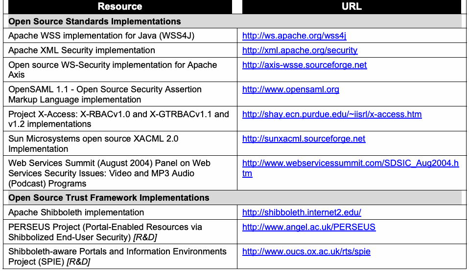
抽出したテキスト（原本と未照合・参考）
| Resource | URL |
| Open Source Standards Implementations | |
| Apache WSS implementation for Java (WSS4J) | http://ws.apache.org/wss4j |
| Apache XML Security implementation | http://xml.apache.org/security |
| Open source WS-Security implementation for Apache Axis | http://axis-wsse.sourceforge.net |
| OpenSAML 1.1 - Open Source Security Assertion Markup Language implementation | http://www.opensaml.org |
| Project X-Access: X-RBACv1.0 and X-GTRBACv1.1 and v1.2 implementations | http://shay.ecn.purdue.edu/~iisrl/x-access.htm |
| Sun Microsystems open source XACML 2.0 Implementation | http://sunxacml.sourceforge.net |
| Web Services Summit (August 2004) Panel on Web Services Security Issues: Video and MP3 Audio (Podcast) Programs | http://www.webservicessummit.com/SDSIC_Aug2004.h tm |
| Open Source Trust Framework Implementations | |
| Apache Shibboleth implementation | http://shibboleth.internet2.edu/ |
| PERSEUS Project (Portal-Enabled Resources via Shibbolized End-User Security) [R&D] | http://www.angel.ac.uk/PERSEUS |
| Shibboleth-aware Portals and Information Environments Project (SPIE) [R&D] | http://www.oucs.ox.ac.uk/rts/spie |
抽出したテキストの訳（原本と未照合・参考）
| 資料 | URL |
| オープンソースの標準実装 | |
| Apache WSS implementation for Java (WSS4J) | http://ws.apache.org/wss4j |
| Apache XML Security implementation | http://xml.apache.org/security |
| Open source WS-Security implementation for Apache Axis | http://axis-wsse.sourceforge.net |
| OpenSAML 1.1 - Open Source Security Assertion Markup Language implementation | http://www.opensaml.org |
| Project X-Access: X-RBACv1.0 and X-GTRBACv1.1 and v1.2 implementations | http://shay.ecn.purdue.edu/~iisrl/x-access.htm |
| Sun Microsystems open source XACML 2.0 Implementation | http://sunxacml.sourceforge.net |
| Web Services Summit (August 2004) Panel on Web Services Security Issues: Video and MP3 Audio (Podcast) Programs | http://www.webservicessummit.com/SDSIC_Aug2004.h tm |
| オープンソースの信頼フレームワーク実装 | |
| Apache Shibboleth implementation | http://shibboleth.internet2.edu/ |
| PERSEUS Project (Portal-Enabled Resources via Shibbolized End-User Security) [R&D] | http://www.angel.ac.uk/PERSEUS |
| Shibboleth-aware Portals and Information Environments Project (SPIE) [R&D] | http://www.oucs.ox.ac.uk/rts/spie |
F.10 Other Developer Resources
F.10 その他の開発者向け資料
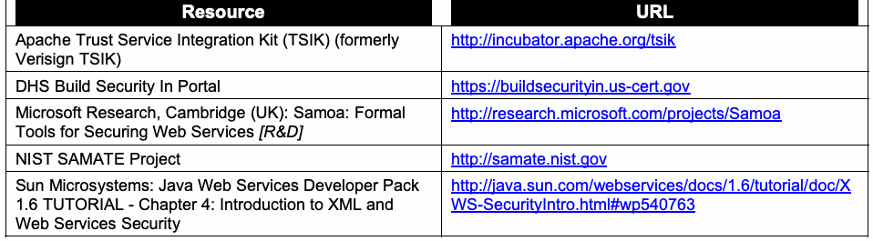
抽出したテキスト（原本と未照合・参考）
| Resource | URL |
| Apache Trust Service Integration Kit (TSIK) (formerly Verisign TSIK) | http://incubator.apache.org/tsik |
| DHS Build Security In Portal | https://buildsecurityin.us-cert.gov |
| Microsoft Research, Cambridge (UK): Samoa: Formal Tools for Securing Web Services [R&D] | http://research.microsoft.com/projects/Samoa |
| NIST SAMATE Project | http://samate.nist.gov |
| Sun Microsystems: Java Web Services Developer Pack 1.6 TUTORIAL - Chapter 4: Introduction to XML and Web Services Security | http://java.sun.com/webservices/docs/1.6/tutorial/doc/X WS-SecurityIntro.html#wp540763 |
抽出したテキストの訳（原本と未照合・参考）
| 資料 | URL |
| Apache Trust Service Integration Kit (TSIK) (formerly Verisign TSIK) | http://incubator.apache.org/tsik |
| DHS Build Security In Portal | https://buildsecurityin.us-cert.gov |
| Microsoft Research, Cambridge (UK): Samoa: Formal Tools for Securing Web Services [R&D] | http://research.microsoft.com/projects/Samoa |
| NIST SAMATE Project | http://samate.nist.gov |
| Sun Microsystems: Java Web Services Developer Pack 1.6 TUTORIAL - Chapter 4: Introduction to XML and Web Services Security | http://java.sun.com/webservices/docs/1.6/tutorial/doc/X WS-SecurityIntro.html#wp540763 |